| Search Results |
[Met Concert/Gala] CID:49560
Seventh Sunday Concert
Metropolitan Opera House; 01/1/1911
In honor of Engelbert Humperdinck |
[Met Performance] CID:49570
Parsifal {60}
Metropolitan Opera House; 01/2/1911
|
[Met Performance] CID:49580
Faust {280}
Ballet Divertissement
Metropolitan Opera House; 01/2/1911
|
[Met Performance] CID:49590
Cavalleria Rusticana {135}
Pagliacci {115}
Ballet Divertissement
Academy of Music, Brooklyn, New York; 01/3/1911
Debut: Menotti Frascona |
[Met Performance] CID:49600
Tristan und Isolde {106}
Metropolitan Opera House; 01/4/1911
Review |
[Met Performance] CID:49610
La Fanciulla del West {5}
Ballet Divertissement
Metropolitan Opera House; 01/5/1911
|
[Met Performance] CID:49620
Hänsel und Gretel {57}
The Legend of Azyiade {3}
Metropolitan Opera House; 01/6/1911
|
[Met Performance] CID:49630
Il Trovatore {87}
Ballet Divertissement
Metropolitan Opera House; 01/6/1911
Review |
[Met Performance] CID:49640
Königskinder {3}
Ballet Divertissement
Metropolitan Opera House; 01/7/1911
|
[Met Performance] CID:49650
Aida {162}
Metropolitan Opera House; 01/7/1911
|
[Met Concert/Gala] CID:49660
Eighth Sunday Concert
Metropolitan Opera House; 01/8/1911
Richard Wagner Program |
[Met Performance] CID:49670
Tannhäuser {184}
Metropolitan Opera House; 01/9/1911
Debut: Ada Torriani |
[Met Performance] CID:49680
Madama Butterfly {58}
Metropolitan Opera House, Philadelphia, Pennsylvania; 01/10/1911
|
[Met Performance] CID:49690
La Fanciulla del West {6}
Metropolitan Opera House; 01/11/1911
|
[Met Performance] CID:49700
Armide {3}
Metropolitan Opera House; 01/12/1911
|
[Met Performance] CID:49710
New production
Roméo et Juliette {108}
Metropolitan Opera House; 01/13/1911
Debuts: Giuseppe Palanti, Pietro Stroppa |
[Met Performance] CID:49720
Siegfried {93}
Metropolitan Opera House; 01/14/1911
Review |
[Met Performance] CID:49730
Rigoletto {71}
Metropolitan Opera House; 01/14/1911
|
[Met Concert/Gala] CID:49740
Ninth Sunday Concert
Metropolitan Opera House; 01/15/1911
|
[Met Performance] CID:49750
Madama Butterfly {59}
Metropolitan Opera House; 01/16/1911
|
[Met Performance] CID:49760
Lohengrin {261}
Academy of Music, Brooklyn, New York; 01/17/1911
|
[Met Performance] CID:49770
La Bohème {95}
Metropolitan Opera House; 01/18/1911
|
[Met Performance] CID:49780
Königskinder {4}
Metropolitan Opera House; 01/19/1911
|
[Met Performance] CID:49790
Die Meistersinger von Nürnberg {108}
Metropolitan Opera House; 01/20/1911
Debut: Gaston Martin, Louis Wespi
Review |
[Met Performance] CID:49800
Orfeo ed Euridice {21}
Metropolitan Opera House; 01/21/1911
|
[Met Performance] CID:49810
Roméo et Juliette {109}
Metropolitan Opera House; 01/21/1911
|
[Met Concert/Gala] CID:49820
Tenth Sunday Concert
Metropolitan Opera House; 01/22/1911
|
[Met Performance] CID:49830
La Gioconda {42}
Metropolitan Opera House; 01/23/1911
|
[Met Performance] CID:49840
Königskinder {5}
Academy of Music, Brooklyn, New York; 01/24/1911
Review |
[Met Concert/Gala] CID:49850
Gilibert Memorial Concert
Metropolitan Opera House; 01/25/1911
Review |
[Met Performance] CID:49860
Lohengrin {262}
Metropolitan Opera House; 01/25/1911
|
[Met Performance] CID:49870
Orfeo ed Euridice {22}
Metropolitan Opera House; 01/26/1911
|
[Met Performance] CID:49880
La Fanciulla del West {7}
Metropolitan Opera House; 01/27/1911
|
[Met Performance] CID:49890
Roméo et Juliette {110}
Metropolitan Opera House; 01/28/1911
Review |
[Met Performance] CID:49900
Die Meistersinger von Nürnberg {109}
Metropolitan Opera House; 01/28/1911
|
[Met Concert/Gala] CID:49910
Eleventh Sunday Concert
Metropolitan Opera House; 01/29/1911
|
[Met Performance] CID:49920
Königskinder {6}
Metropolitan Opera House; 01/30/1911
|
[Met Performance] CID:49930
La Bohème {96}
Academy of Music, Brooklyn, New York; 01/31/1911
|
[Met Performance] CID:49940
Germania {8}
Metropolitan Opera House; 02/1/1911
Review |
[Met Performance] CID:49950
Das Rheingold {50}
Ring Cycle [39]
Metropolitan Opera House; 02/2/1911
|
[Met Performance] CID:49960
La Traviata {78}
Metropolitan Opera House; 02/2/1911
|
[Met Performance] CID:49970
Tristan und Isolde {107}
Metropolitan Opera House; 02/3/1911
|
[Met Performance] CID:49980
La Fanciulla del West {8}
Metropolitan Opera House; 02/4/1911
Debut: Elvira Leveroni |
[Met Performance] CID:49990
Madama Butterfly {60}
Metropolitan Opera House; 02/4/1911
|
[Met Concert/Gala] CID:50000
Twelfth Sunday Concert
Metropolitan Opera House; 02/5/1911
|
[Met Performance] CID:50010
Germania {9}
Metropolitan Opera House; 02/6/1911
|
[Met Performance] CID:50020
Rigoletto {72}
Academy of Music, Brooklyn, New York; 02/7/1911
|
[Met Performance] CID:50030
Tosca {74}
Metropolitan Opera House; 02/8/1911
|
[Met Performance] CID:50040
Die Walküre {144}
Ring Cycle [39]
Metropolitan Opera House; 02/9/1911
|
[Met Performance] CID:50050
Madama Butterfly {61}
Metropolitan Opera House; 02/9/1911
Review |
[Met Performance] CID:50060
Königskinder {7}
Metropolitan Opera House; 02/10/1911
|
[Met Performance] CID:50070
Tristan und Isolde {108}
Metropolitan Opera House; 02/11/1911
|
[Met Performance] CID:50080
Cavalleria Rusticana {136}
Pagliacci {116}
Metropolitan Opera House; 02/11/1911
|
[Met Concert/Gala] CID:50090
Thirteenth Sunday Concert
Metropolitan Opera House; 02/12/1911
|
[Met Performance] CID:50100
Siegfried {94}
Ring Cycle [39]
Metropolitan Opera House; 02/13/1911
|
[Met Performance] CID:50110
Tosca {75}
Metropolitan Opera House; 02/13/1911
|
[Met Performance] CID:50120
Königskinder {8}
Metropolitan Opera House, Philadelphia, Pennsylvania; 02/14/1911
|
[Met Performance] CID:50130
The Bartered Bride {18}
Metropolitan Opera House; 02/15/1911
|
[Met Performance] CID:50140
Königskinder {9}
Metropolitan Opera House; 02/16/1911
|
[Met Performance] CID:50150
Cavalleria Rusticana {137}
Pagliacci {117}
Metropolitan Opera House; 02/16/1911
|
[Met Performance] CID:50160
La Traviata {79}
Metropolitan Opera House; 02/17/1911
|
[Met Performance] CID:50170
Aida {163}
Metropolitan Opera House; 02/18/1911
|
[Met Performance] CID:50180
Madama Butterfly {62}
Metropolitan Opera House; 02/18/1911
Debut: Giuseppina Giaconia |
[Met Concert/Gala] CID:50190
Fourteenth Sunday Concert
Metropolitan Opera House; 02/19/1911
Richard Wagner Program |
[Met Performance] CID:50200
Tristan und Isolde {109}
Metropolitan Opera House; 02/20/1911
|
[Met Performance] CID:50210
Madama Butterfly {63}
Academy of Music, Brooklyn, New York; 02/21/1911
|
[Met Performance] CID:50220
Götterdämmerung {71}
Ring Cycle [39]
Metropolitan Opera House; 02/22/1911
|
[Met Performance] CID:50230
Rigoletto {73}
Metropolitan Opera House; 02/22/1911
|
[Met Performance] CID:50240
Tosca {76}
Metropolitan Opera House; 02/23/1911
|
[Met Performance] CID:50250
La Bohème {97}
Metropolitan Opera House; 02/24/1911
|
[Met Performance] CID:50260
Die Meistersinger von Nürnberg {110}
Metropolitan Opera House; 02/25/1911
|
[Met Performance] CID:50270
Il Trovatore {88}
Metropolitan Opera House; 02/25/1911
|
[Met Concert/Gala] CID:50280
Fifteenth Sunday Concert
Metropolitan Opera House; 02/26/1911
|
[Met Performance] CID:50290
Otello {38}
Metropolitan Opera House; 02/27/1911
|
[Met Performance] CID:50300
Tosca {77}
Academy of Music, Brooklyn, New York; 02/28/1911
|
[Met Performance] CID:50310
Aida {164}
Metropolitan Opera House; 03/1/1911
|
[Met Performance] CID:50320
Königskinder {10}
Metropolitan Opera House; 03/2/1911
|
[Met Performance] CID:50330
La Fanciulla del West {9}
Metropolitan Opera House; 03/2/1911
Debut: Amedeo Bassi |
[Met Performance] CID:50340
The Bartered Bride {19}
Metropolitan Opera House; 03/3/1911
|
[Met Performance] CID:50350
Tosca {78}
Metropolitan Opera House; 03/4/1911
|
[Met Performance] CID:50360
Parsifal {61}
Metropolitan Opera House; 03/4/1911
|
[Met Concert/Gala] CID:50370
Sixteenth Sunday Concert
Metropolitan Opera House; 03/5/1911
|
[Met Performance] CID:50380
Die Meistersinger von Nürnberg {111}
Metropolitan Opera House; 03/6/1911
|
[Met Performance] CID:50390
Aida {165}
Academy of Music, Brooklyn, New York; 03/7/1911
|
[Met Performance] CID:50400
Orfeo ed Euridice {23}
Metropolitan Opera House; 03/8/1911
|
[Met Performance] CID:50410
Madama Butterfly {64}
Metropolitan Opera House; 03/9/1911
|
[Met Performance] CID:50420
Die Walküre {145}
Metropolitan Opera House; 03/9/1911
|
[Met Performance] CID:50430
La Gioconda {43}
Metropolitan Opera House; 03/10/1911
|
[Met Performance] CID:50440
Otello {39}
Metropolitan Opera House; 03/11/1911
|
[Met Performance] CID:50450
Lohengrin {263}
Metropolitan Opera House; 03/11/1911
|
[Met Concert/Gala] CID:50460
Seventeenth Sunday Concert
Metropolitan Opera House; 03/12/1911
|
[Met Performance] CID:50470
Il Trovatore {89}
Ballet Divertissement
Metropolitan Opera House; 03/13/1911
Debut: Josef Pasternack |
[Met Performance] CID:50480
Otello {40}
Academy of Music, Brooklyn, New York; 03/14/1911
|
[Met Performance] CID:50490
Die Meistersinger von Nürnberg {112}
Metropolitan Opera House; 03/15/1911
Debut: Bernhard Heidenreich |
[Met Performance] CID:50500
Hänsel und Gretel {58}
Coppélia Act I
Metropolitan Opera House; 03/16/1911
Debut: Lilyan Ogden |
[Met Performance] CID:50510
Faust {281}
Ballet Divertissement
Metropolitan Opera House; 03/16/1911
|
[Met Performance] CID:50520
Tannhäuser {185}
Metropolitan Opera House; 03/17/1911
|
[Met Performance] CID:50530
Königskinder {11}
Metropolitan Opera House; 03/18/1911
|
[Met Performance] CID:50540
La Fanciulla del West {10}
Academy of Music, Brooklyn, New York; 03/18/1911
|
[Met Concert/Gala] CID:50550
Eighteenth Sunday Concert
Metropolitan Opera House; 03/19/1911
|
[Met Performance] CID:50560
The Bartered Bride {20}
Coppélia Act I
Metropolitan Opera House; 03/20/1911
|
[Met Performance] CID:50570
Parsifal {62}
Academy of Music, Brooklyn, New York; 03/21/1911
|
[Met Performance] CID:50580
Cavalleria Rusticana {138}
Pagliacci {118}
Ballet Divertissement
Metropolitan Opera House; 03/22/1911
|
[Met Performance] CID:50590
Hänsel und Gretel {59}
Coppélia Act I
Metropolitan Opera House; 03/23/1911
|
[Met Performance] CID:50600
Otello {41}
Metropolitan Opera House; 03/23/1911
|
[Met Performance] CID:50610
Orfeo ed Euridice {24}
Coppélia Act I
Metropolitan Opera House; 03/24/1911
|
[Met Performance] CID:50620
Lohengrin {264}
Metropolitan Opera House; 03/25/1911
|
[Met Performance] CID:50630
Aida {166}
Metropolitan Opera House; 03/25/1911
|
[Met Concert/Gala] CID:50640
Nineteenth Sunday Concert
Metropolitan Opera House; 03/26/1911
|
[Met Performance] CID:50650
La Fanciulla del West {11}
Ballet Divertissement
Metropolitan Opera House; 03/27/1911
|
[Met Performance] CID:50660
Lohengrin {265}
Metropolitan Opera House, Philadelphia, Pennsylvania; 03/28/1911
Debuts: Constanze Bitterl, Elisabeth Sandvoss, Senta Fritsch-Winter, Gertrude Höft |
[Met Performance] CID:50670
United States Premiere
Ariane et Barbe-bleue {1}
Ballet Divertissement
Metropolitan Opera House; 03/29/1911
Review |
[Met Performance] CID:50680
La Bohème {98}
Ballet Divertissement
Metropolitan Opera House; 03/30/1911
|
[Met Performance] CID:50690
The Bartered Bride {21}
Coppélia Act I
Metropolitan Opera House; 03/30/1911
|
[Met Performance] CID:50700
Tosca {79}
Ballet Divertissement
Metropolitan Opera House; 03/31/1911
|
[Met Performance] CID:50710
Il Trovatore {90}
Ballet Divertissement
Metropolitan Opera House; 04/1/1911
Review |
[Met Performance] CID:50720
Königskinder {12}
Metropolitan Opera House; 04/1/1911
|
[Met Concert/Gala] CID:50730
Twentieth Sunday Concert
Metropolitan Opera House; 04/2/1911
|
[Met Concert/Gala] CID:50740
Pavlova Farewell Gala
Metropolitan Opera House; 04/3/1911
|
[Met Performance] CID:50750
Ariane et Barbe-bleue {2}
Metropolitan Opera House; 04/3/1911
|
[Met Performance] CID:50760
La Gioconda {44}
Metropolitan Opera House, Philadelphia, Pennsylvania; 04/4/1911
|
[Met Performance] CID:50770
Otello {42}
Metropolitan Opera House; 04/5/1911
|
[Met Concert/Gala] CID:50780
Gala Performance
Metropolitan Opera House; 04/6/1911
|
[Met Performance] CID:50790
Hänsel und Gretel {60}
Pagliacci {119}
Metropolitan Opera House; 04/6/1911
|
[Met Performance] CID:50800
Aida {167}
Metropolitan Opera House; 04/7/1911
|
[Met Performance] CID:50810
Ariane et Barbe-bleue {3}
Metropolitan Opera House; 04/8/1911
|
[Met Performance] CID:50820
Tannhäuser {186}
Metropolitan Opera House; 04/8/1911
|
[Met Concert/Gala] CID:50830
Twenty-First Sunday Concert
Metropolitan Opera House; 04/9/1911
|
[Met Performance] CID:50840
Königskinder {13}
Metropolitan Opera House; 04/10/1911
|
[Met Performance] CID:50850
Parsifal {63}
Metropolitan Opera House, Philadelphia, Pennsylvania; 04/11/1911
|
[Met Performance] CID:50860
La Gioconda {45}
Metropolitan Opera House; 04/12/1911
|
[Met Performance] CID:50870
Ariane et Barbe-bleue {4}
Metropolitan Opera House; 04/13/1911
|
[Met Performance] CID:50880
Parsifal {64}
Metropolitan Opera House; 04/14/1911
|
[Met Performance] CID:50890
Otello {43}
Metropolitan Opera House; 04/14/1911
Debut: Emilio Venturini |
[Met Performance] CID:50900
Hänsel und Gretel {61}
Pagliacci {120}
Metropolitan Opera House; 04/15/1911
|
[Met Performance] CID:50910
Tosca {80}
Metropolitan Opera House; 04/15/1911
|
[Met Performance] CID:50920
Tannhäuser {187}
Montreal Canada; 04/17/1911
|
[Met Performance] CID:50930
Aida {168}
Montreal Canada; 04/18/1911
|
[Met Performance] CID:50940
Faust {282}
Montreal Canada; 04/19/1911
|
[Met Performance] CID:50950
Madama Butterfly {65}
Montreal Canada; 04/19/1911
|
[Met Performance] CID:50960
Otello {44}
Cleveland, Ohio; 04/20/1911
|
[Met Performance] CID:50970
Tannhäuser {188}
Cleveland, Ohio; 04/21/1911
|
[Met Performance] CID:50980
Aida {169}
Cleveland, Ohio; 04/22/1911
|
[Met Performance] CID:50990
Königskinder {14}
Cleveland, Ohio; 04/22/1911
|
[Met Performance] CID:51000
Königskinder {15}
Cincinnati, Ohio; 04/24/1911
|
[Met Performance] CID:51010
Otello {45}
Cincinnati, Ohio; 04/25/1911
|
[Met Performance] CID:51020
The Bartered Bride {22}
Cincinnati, Ohio; 04/25/1911
|
[Met Performance] CID:51030
La Gioconda {46}
Atlanta, Georgia; 04/27/1911
|
[Met Performance] CID:51040
Königskinder {16}
Atlanta, Georgia; 04/28/1911
|
[Met Performance] CID:51050
Il Trovatore {91}
Atlanta, Georgia; 04/29/1911
Debut: Mr. Carlo |
[Met Performance] CID:51060
Otello {46}
Atlanta, Georgia; 4/29/1911
|
[Met Performance] CID:52000
Madama Butterfly {66}
Academy of Music, Brooklyn, New York; 11/11/1911
|
[Met Performance] CID:52010
Aida {170}
Metropolitan Opera House; 11/13/1911
Opening Night {27}
Giulio Gatti-Casazza, General Manager
Debut: Margarete Matzenauer
Review |
[Met Performance] CID:52020
Königskinder {17}
Metropolitan Opera House; 11/15/1911
Debuts: Elsa Foerster, Cleo Gascoigne |
[Met Performance] CID:52030
La Fanciulla del West {12}
Metropolitan Opera House; 11/16/1911
Debut: Lambert Murphy |
[Met Performance] CID:52040
Tristan und Isolde {110}
Metropolitan Opera House; 11/17/1911
Debut: Hermann Weil |
[Met Performance] CID:52050
United States Premiere
Lobetanz {1}
Metropolitan Opera House; 11/18/1911
Debuts: Oscar Sannee, Hans Kautsky, Georg Heil
Review |
[Met Concert/Gala] CID:52060
First Sunday Concert
Metropolitan Opera House; 11/19/1911
|
[Met Performance] CID:52070
Madama Butterfly {67}
Metropolitan Opera House; 11/20/1911
|
[Met Performance] CID:52080
La Gioconda {47}
Philadelphia, Pennsylvania; 11/21/1911
Debut: Theodora Orridge |
[Met Performance] CID:52090
Faust {283}
Metropolitan Opera House; 11/22/1911
Debut: Giuseppe Sturani |
[Met Performance] CID:52100
Götterdämmerung {72}
Metropolitan Opera House; 11/23/1911
Debut: Putnam Griswold |
[Met Performance] CID:52110
Cavalleria Rusticana {139}
Pagliacci {121}
Metropolitan Opera House; 11/24/1911
|
[Met Performance] CID:52120
Lohengrin {266}
Metropolitan Opera House; 11/25/1911
|
[Met Performance] CID:52130
Il Trovatore {92}
Academy of Music, New York, Brooklyn; 11/25/1911
|
[Met Concert/Gala] CID:52140
Second Sunday Concert
Metropolitan Opera House; 11/26/1911
|
[Met Performance] CID:52150
Lobetanz {2}
Metropolitan Opera House; 11/27/1911
|
[Met Performance] CID:52160
Madama Butterfly {68}
Philadelphia, Pennsylvania; 11/28/1911
|
[Met Performance] CID:52170
La Gioconda {48}
Metropolitan Opera House; 11/29/1911
|
[Met Performance] CID:52180
Parsifal {65}
Metropolitan Opera House; 11/30/1911
|
[Met Performance] CID:52190
Il Trovatore {93}
Metropolitan Opera House; 11/30/1911
|
[Met Performance] CID:52200
Königskinder {18}
Metropolitan Opera House; 12/1/1911
|
[Met Performance] CID:52210
Aida {171}
Metropolitan Opera House; 12/2/1911
|
[Met Performance] CID:52220
La Bohème {99}
Metropolitan Opera House; 12/2/1911
|
[Met Concert/Gala] CID:52230
Third Sunday Concert
Metropolitan Opera House; 12/3/1911
|
[Met Performance] CID:52240
Hänsel und Gretel {62}
Pagliacci {122}
Metropolitan Opera House; 12/4/1911
|
[Met Performance] CID:52250
Götterdämmerung {73}
Philadelphia, Pennsylvania; 12/5/1911
|
[Met Performance] CID:52260
Lohengrin {267}
Metropolitan Opera House; 12/6/1911
|
[Met Performance] CID:52270
La Gioconda {49}
Metropolitan Opera House; 12/7/1911
|
[Met Performance] CID:52280
Madama Butterfly {69}
Metropolitan Opera House; 12/8/1911
|
[Met Performance] CID:52290
Tristan und Isolde {111}
Metropolitan Opera House; 12/9/1911
|
[Met Performance] CID:52300
Hänsel und Gretel {63}
Cavalleria Rusticana {140}
Academy of Music, Brooklyn, New York; 12/9/1911
|
[Met Concert/Gala] CID:52310
Fourth Sunday Concert
Metropolitan Opera House; 12/10/1911
|
[Met Performance] CID:52320
Tosca {81}
Metropolitan Opera House; 12/11/1911
|
[Met Performance] CID:52330
Lobetanz {3}
Philadelphia, Pennsylvania; 12/12/1911
|
[Met Performance] CID:52340
La Fanciulla del West {13}
Metropolitan Opera House; 12/13/1911
|
[Met Performance] CID:52350
Königskinder {19}
Metropolitan Opera House; 12/14/1911
|
[Met Performance] CID:52360
Götterdämmerung {74}
Metropolitan Opera House; 12/15/1911
|
[Met Performance] CID:52370
Armide {4}
Metropolitan Opera House; 12/16/1911
|
[Met Performance] CID:52380
Lobetanz {4}
Academy of Music, Brooklyn, New York; 12/16/1911
|
[Met Concert/Gala] CID:52390
Fifth Sunday Concert
Metropolitan Opera House; 12/17/1911
|
[Met Performance] CID:52400
La Gioconda {50}
Metropolitan Opera House; 12/18/1911
|
[Met Presentation] CID:52410
Imperial Russian Ballet
Metropolitan Opera House; 12/19/1911
Debuts: Lev Ivanov, Ekaterina Geltzer, Alexandre Volinine, Miss M. Pantaliewa, Geanina Mezkowskaia, Miss Schuber, Elizabeth Gluck, Franciscek Markowski, Franciscek Mezkowski, Mr. Barboe |
[Met Performance] CID:52420
Tosca {82}
Philadelphia, Pennsylvania; 12/19/1911
|
[Met Performance] CID:52430
Lobetanz {5}
Imperial Russian Ballet
Metropolitan Opera House; 12/20/1911
|
[Met Performance] CID:52440
Tosca {83}
Imperial Russian Ballet
Metropolitan Opera House; 12/21/1911
|
[Met Performance] CID:52450
Lohengrin {268}
Metropolitan Opera House; 12/22/1911
Debut: Heinrich Hensel |
[Met Performance] CID:52460
La Bohème {100}
Imperial Russian Ballet
Metropolitan Opera House; 12/23/1911
Debut: Mr. Mashat |
[Met Performance] CID:52470
Cavalleria Rusticana {141}
Pagliacci {123}
Metropolitan Opera House; 12/23/1911
|
[Met Concert/Gala] CID:52480
Sixth Sunday Concert
Metropolitan Opera House; 12/24/1911
|
[Met Performance] CID:52490
Hänsel und Gretel {64}
Metropolitan Opera House; 12/25/1911
|
[Met Performance] CID:52500
Orfeo ed Euridice {25}
Imperial Russian Ballet
Metropolitan Opera House; 12/25/1911
Review |
[Met Presentation] CID:52510
Imperial Russian Ballet
Metropolitan Opera House; 12/26/1911
|
[Met Performance] CID:52520
Lohengrin {269}
Academy of Music, Brooklyn, New York; 12/26/1911
|
[Met Performance] CID:52530
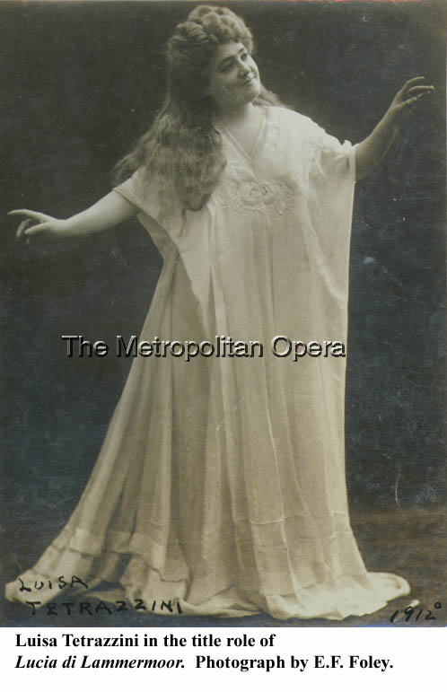
Lucia di Lammermoor {77}
Imperial Russian Ballet
Metropolitan Opera House; 12/27/1911
Debut: Luisa Tetrazzini
Review |
[Met Performance] CID:52540
Madama Butterfly {70}
Imperial Russian Ballet
Metropolitan Opera House; 12/28/1911
|
[Met Performance] CID:52550
Imperial Russian Ballet
Metropolitan Opera House; 12/29/1911
|
[Met Performance] CID:52560
La Fanciulla del West {14}
Imperial Russian Ballet
Metropolitan Opera House; 12/29/1911
|
[Met Performance] CID:52570
Siegfried {95}
Metropolitan Opera House; 12/30/1911
|
[Met Performance] CID:52580
La Bohème {101}
Imperial Russian Ballet
Metropolitan Opera House; 12/30/1911
|
[Met Concert/Gala] CID:52590
Seventh Sunday Concert
Metropolitan Opera House; 12/31/1911
|
[Met Performance] CID:52600
Parsifal {66}
Metropolitan Opera House; 01/1/1912
|
[Met Performance] CID:52610
Lucia di Lammermoor {78}
Imperial Russian Ballet
Metropolitan Opera House; 01/1/1912
|
[Met Performance] CID:52620
Imperial Russian Ballet
Metropolitan Opera House; 01/2/1912
Debut: Mr. Bessmertny, Miss Zalmarna |
[Met Performance] CID:52630
La Bohème {102}
Academy of Music, Brooklyn, New York; 01/2/1912
|
[Met Performance] CID:52640
United States Premiere
Le Donne Curiose {1}
Imperial Russian Ballet
Metropolitan Opera House; 01/3/1912
Debut: Charles Hargreaves
Review |
[Met Performance] CID:52650
Lobetanz {6}
Imperial Russian Ballet
Metropolitan Opera House; 01/4/1912
|
[Met Performance] CID:52660
Aida {172}
Metropolitan Opera House; 01/5/1912
|
[Met Performance] CID:52670
Le Donne Curiose {2}
Metropolitan Opera House; 01/6/1912
|
[Met Performance] CID:52680
La Traviata {80}
Metropolitan Opera House; 01/6/1912
Debut: Giovanni Polese |
[Met Concert/Gala] CID:52690
Eighth Sunday Concert
Metropolitan Opera House; 01/7/1912
|
[Met Performance] CID:52700
Imperial Russian Ballet
Metropolitan Opera House; 01/8/1912
|
[Met Performance] CID:52710
Tristan und Isolde {112}
Metropolitan Opera House; 01/8/1912
|
[Met Performance] CID:52720
La Bohème {103}
Philadelphia, Pennsylvania; 01/9/1912
|
[Met Performance] CID:52730
Königskinder {20}
Metropolitan Opera House; 01/10/1912
|
[Met Performance] CID:52740
Orfeo ed Euridice {26}
Metropolitan Opera House; 01/10/1912
|
[Met Performance] CID:52750
New production
Rigoletto {74}
Metropolitan Opera House; 01/11/1912
|
[Met Performance] CID:52760
Tosca {84}
Metropolitan Opera House; 01/12/1912
|
[Met Performance] CID:52770
La Fanciulla del West {15}
Metropolitan Opera House; 01/13/1912
|
[Met Performance] CID:52780
Tannhäuser {189}
Academy of Music, Brooklyn, New York; 01/13/1912
|
[Met Concert/Gala] CID:52790
Ninth Sunday Concert
Metropolitan Opera House; 01/14/1912
|
[Met Performance] CID:52800
Le Donne Curiose {3}
Metropolitan Opera House; 01/15/1912
|
[Met Performance] CID:52810
Siegfried {96}
Philadelphia, Pennsylvania; 01/16/1912
|
[Met Performance] CID:52820
Hänsel und Gretel {65}
Cavalleria Rusticana {142}
Metropolitan Opera House; 01/17/1912
|
[Met Performance] CID:52830
La Traviata {81}
Metropolitan Opera House; 01/18/1912
|
[Met Performance] CID:52840
Siegfried {97}
Metropolitan Opera House; 01/18/1912
|
[Met Performance] CID:52850
La Bohème {104}
Metropolitan Opera House; 01/19/1912
|
[Met Performance] CID:52860
United States Premiere (Versiegelt)
Versiegelt {1}
Pagliacci {124}
Metropolitan Opera House; 01/20/1912
Review |
[Met Performance] CID:52870
Faust {284}
Academy of Music, Brooklyn, New York; 01/20/1912
|
[Met Concert/Gala] CID:52880
Tenth Sunday Concert
Metropolitan Opera House; 01/21/1912
|
[Met Performance] CID:52890
La Fanciulla del West {16}
Metropolitan Opera House; 01/22/1912
|
[Met Performance] CID:52900
Lohengrin {270}
Philadelphia, Pennsylvania; 01/23/1912
|
[Met Performance] CID:52910
Tristan und Isolde {113}
Metropolitan Opera House; 01/24/1912
|
[Met Concert/Gala] CID:52920
Special Matinee
Metropolitan Opera House; 01/25/1912
|
[Met Performance] CID:52930
Versiegelt {2}
Orfeo ed Euridice {27}
Metropolitan Opera House; 01/25/1912
|
[Met Performance] CID:52940
Le Donne Curiose {4}
Metropolitan Opera House; 01/26/1912
|
[Met Performance] CID:52950
Rigoletto {75}
Metropolitan Opera House; 01/27/1912
|
[Met Performance] CID:52960
Cavalleria Rusticana {143}
Pagliacci {125}
Academy of Music, Brooklyn, New York; 01/27/1912
Review |
[Met Concert/Gala] CID:52970
United States Premiere
Eleventh Sunday Concert
La Vita Nuova
Metropolitan Opera House; 01/28/1912
|
[Met Performance] CID:52980
Lohengrin {271}
Metropolitan Opera House; 01/29/1912
|
[Met Performance] CID:52990
Versiegelt {3}
Pagliacci {126}
Philadelphia, Pennsylvania; 01/30/1912
|
[Met Performance] CID:53000
Ariane et Barbe-bleue {5}
Metropolitan Opera House; 01/31/1912
|
[Met Performance] CID:53010
Das Rheingold {51}
Ring Cycle [40]
Metropolitan Opera House; 02/1/1912
|
[Met Performance] CID:53020
Cavalleria Rusticana {144}
Pagliacci {127}
Metropolitan Opera House; 02/1/1912
|
[Met Performance] CID:53030
Lucia di Lammermoor {79}
Metropolitan Opera House; 02/2/1912
|
[Met Performance] CID:53040
Faust {285}
Metropolitan Opera House; 02/3/1912
|
[Met Performance] CID:53050
Siegfried {98}
Academy of Music, Brooklyn, New York; 02/3/1912
|
[Met Concert/Gala] CID:53060
Twelfth Grand Sunday Night Concert
Metropolitan Opera House; 02/4/1912
|
[Met Performance] CID:53070
Königskinder {21}
Metropolitan Opera House; 02/5/1912
|
[Met Performance] CID:53080
Rigoletto {76}
Metropolitan Opera House; 02/6/1912
Review |
[Met Performance] CID:53090
La Bohème {105}
Metropolitan Opera House; 02/7/1912
|
[Met Performance] CID:53100
Die Walküre {146}
Ring Cycle [40]
Metropolitan Opera House; 02/8/1912
Debut: Mary Jungmann
Review |
[Met Performance] CID:53110
Armide {5}
Metropolitan Opera House; 02/8/1912
|
[Met Performance] CID:53120
Lobetanz {7}
Metropolitan Opera House; 02/9/1912
|
[Met Performance] CID:53130
Orfeo ed Euridice {28}
Metropolitan Opera House; 02/10/1912
|
[Met Performance] CID:53140
Hänsel und Gretel {66}
Pagliacci {128}
Metropolitan Opera House; 02/10/1912
|
[Met Concert/Gala] CID:53150
Thirteenth Grand Sunday Night Concert
Metropolitan Opera House; 02/11/1912
|
[Met Performance] CID:53160
Siegfried {99}
Ring Cycle [40]
Metropolitan Opera House; 02/12/1912
|
[Met Performance] CID:53170
Ariane et Barbe-bleue {6}
Metropolitan Opera House; 02/12/1912
|
[Met Performance] CID:53180
The Bartered Bride {23}
Academy of Music, Brooklyn, New York; 02/13/1912
Debut: Mizzi Hoyler |
[Met Performance] CID:53190
Versiegelt {4}
Pagliacci {129}
Metropolitan Opera House; 02/14/1912
|
[Met Performance] CID:53200
Königskinder {22}
Metropolitan Opera House; 02/15/1912
|
[Met Performance] CID:53210
Tristan und Isolde {114}
Metropolitan Opera House; 02/15/1912
|
[Met Performance] CID:53220
La Gioconda {51}
Metropolitan Opera House; 02/16/1912
|
[Met Performance] CID:53230
Tannhäuser {190}
Metropolitan Opera House; 02/17/1912
|
[Met Performance] CID:53240
Tosca {85}
Metropolitan Opera House; 02/17/1912
|
[Met Concert/Gala] CID:53250
Fourteenth Grand Sunday Night Concert
Metropolitan Opera House; 02/18/1912
|
[Met Performance] CID:53260
La Bohème {106}
Metropolitan Opera House; 02/19/1912
|
[Met Performance] CID:53270
Tosca {86}
Academy of Music, Brooklyn, New York; 02/20/1912
|
[Met Performance] CID:53280
Otello {47}
Metropolitan Opera House; 02/21/1912
|
[Met Performance] CID:53290
Götterdämmerung {75}
Ring Cycle [40]
Metropolitan Opera House; 02/22/1912
|
[Met Performance] CID:53300
Aida {173}
Metropolitan Opera House; 02/22/1912
|
[Met Performance] CID:53310
The Bartered Bride {24}
Metropolitan Opera House; 02/23/1912
|
[Met Performance] CID:53320
Il Trovatore {94}
Metropolitan Opera House; 02/24/1912
|
[Met Performance] CID:53330
Madama Butterfly {71}
Metropolitan Opera House; 02/24/1912
|
[Met Concert/Gala] CID:53340
Fifteenth Sunday Night Concert
Metropolitan Opera House; 02/25/1912
|
[Met Performance] CID:53350
Die Walküre {147}
Metropolitan Opera House; 02/26/1912
Reviews |
[Met Performance] CID:53360
Otello {48}
Academy of Music, Brooklyn, New York; 02/27/1912
Review |
[Met Performance] CID:53370
Tosca {87}
Metropolitan Opera House; 02/28/1912
|
[Met Performance] CID:53380
Le Donne Curiose {5}
Metropolitan Opera House; 02/29/1912
|
[Met Performance] CID:53390
Rigoletto {77}
Metropolitan Opera House; 03/1/1912
|
[Met Performance] CID:53400
Tannhäuser {191}
Metropolitan Opera House; 03/1/1912
|
[Met Performance] CID:53410
Ariane et Barbe-bleue {7}
Metropolitan Opera House; 03/2/1912
|
[Met Performance] CID:53420
Lohengrin {272}
Metropolitan Opera House; 03/2/1912
|
[Met Concert/Gala] CID:53430
Sixteenth Sunday Night Concert
Metropolitan Opera House; 03/3/1912
|
[Met Performance] CID:53440
Otello {49}
Metropolitan Opera House; 03/4/1912
|
[Met Performance] CID:53450
Königskinder {23}
Academy of Music, Brooklyn, New York; 03/5/1912
|
[Met Performance] CID:53460
Die Meistersinger von Nürnberg {113}
Metropolitan Opera House; 03/6/1912
Review |
[Met Performance] CID:53470
Hänsel und Gretel {67}
Metropolitan Opera House; 03/7/1912
|
[Met Performance] CID:53480
La Bohème {107}
Metropolitan Opera House; 03/7/1912
|
[Met Performance] CID:53490
Armide {6}
Metropolitan Opera House; 03/8/1912
|
[Met Performance] CID:53500
Die Walküre {148}
Metropolitan Opera House; 03/9/1912
|
[Met Performance] CID:53510
Aida {174}
Metropolitan Opera House; 03/9/1912
|
[Met Concert/Gala] CID:53520
Seventeenth Sunday Night Concert
Metropolitan Opera House; 03/10/1912
|
[Met Performance] CID:53530
Tannhäuser {192}
Metropolitan Opera House; 03/11/1912
|
[Met Performance] CID:53540
Aida {175}
Academy of Music, Brooklyn, New York; 03/12/1912
|
[Met Performance] CID:53550
Madama Butterfly {72}
Metropolitan Opera House; 03/13/1912
|
[Met Performance] CID:53560
The Bartered Bride {25}
Metropolitan Opera House; 03/13/1912
|
[Met Performance] CID:53570
World Premiere
Mona {1}
Metropolitan Opera House; 03/14/1912
Debut: Loomis Taylor
Review |
[Met Performance] CID:53580
Otello {50}
Metropolitan Opera House; 03/15/1912
|
[Met Performance] CID:53590
La Gioconda {52}
Metropolitan Opera House; 03/16/1912
Debut: Maria Duchène |
[Met Performance] CID:53600
Königskinder {24}
Metropolitan Opera House; 03/16/1912
|
[Met Concert/Gala] CID:53610
Eighteenth Sunday Night Concert
Metropolitan Opera House; 03/17/1912
|
[Met Performance] CID:53620
Armide {7}
Metropolitan Opera House; 03/18/1912
|
[Met Performance] CID:53630
Die Walküre {149}
Academy of Music, Brooklyn, New York; 03/19/1912
|
[Met Performance] CID:53640
La Bohème {108}
Metropolitan Opera House; 03/20/1912
|
[Met Performance] CID:53650
Aida {176}
Metropolitan Opera House; 03/20/1912
|
[Met Performance] CID:53660
Lohengrin {273}
Metropolitan Opera House; 03/21/1912
|
[Met Performance] CID:53670
Faust {286}
Metropolitan Opera House; 03/22/1912
|
[Met Performance] CID:53680
Mona {2}
Metropolitan Opera House; 03/23/1912
|
[Met Performance] CID:53690
Il Trovatore {95}
Metropolitan Opera House; 03/23/1912
|
[Met Concert/Gala] CID:53700
Nineteenth Sunday Night Concert
Metropolitan Opera House; 03/24/1912
|
[Met Performance] CID:53710
Die Meistersinger von Nürnberg {114}
Metropolitan Opera House; 03/25/1912
Review |
[Met Performance] CID:53720
Cavalleria Rusticana {145}
Pagliacci {130}
Metropolitan Opera House; 03/26/1912
|
[Met Performance] CID:53730
Madama Butterfly {73}
Metropolitan Opera House; 03/27/1912
|
[Met Performance] CID:53740
Die Walküre {150}
Metropolitan Opera House; 03/28/1912
Review |
[Met Performance] CID:53750
Mona {3}
Metropolitan Opera House; 03/29/1912
|
[Met Performance] CID:53760
Manon {37}
Metropolitan Opera House; 03/30/1912
Debut: Maria Savage
Review |
[Met Performance] CID:53770
Tannhäuser {193}
Metropolitan Opera House; 03/30/1912
|
[Met Concert/Gala] CID:53780
Twentieth Sunday Night Concert
Metropolitan Opera House; 03/31/1912
|
[Met Performance] CID:53790
Mona {4}
Metropolitan Opera House; 04/1/1912
|
[Met Performance] CID:53800
Rigoletto {78}
Metropolitan Opera House; 04/2/1912
Review |
[Met Performance] CID:53810
Hänsel und Gretel {68}
Metropolitan Opera House; 04/3/1912
|
[Met Performance] CID:53820
Il Trovatore {96}
Metropolitan Opera House; 04/3/1912
Debut: Sarah Charles-Cahier
Review |
[Met Performance] CID:53830
Manon {38}
Metropolitan Opera House; 04/4/1912
|
[Met Performance] CID:53840
Parsifal {67}
Metropolitan Opera House; 04/5/1912
|
[Met Performance] CID:53850
Orfeo ed Euridice {29}
Metropolitan Opera House; 04/5/1912
|
[Met Performance] CID:53860
Otello {51}
Metropolitan Opera House; 04/6/1912
|
[Met Performance] CID:53870
La Gioconda {53}
Metropolitan Opera House; 04/6/1912
|
[Met Concert/Gala] CID:53880
Twenty-first And Last But One Sunday Concert
Metropolitan Opera House; 04/7/1912
|
[Met Performance] CID:53890
Manon {39}
Metropolitan Opera House; 04/8/1912
|
[Met Concert/Gala] CID:53900
Gala Performance
Metropolitan Opera House; 04/9/1912
|
[Met Performance] CID:53910
Die Walküre {151}
Metropolitan Opera House; 04/10/1912
|
[Met Performance] CID:53920
Die Meistersinger von Nürnberg {115}
Metropolitan Opera House; 04/11/1912
|
[Met Performance] CID:53930
Aida {177}
Metropolitan Opera House; 04/12/1912
|
[Met Performance] CID:53940
Versiegelt {5}
Pagliacci {131}
Metropolitan Opera House; 04/12/1912
|
[Met Performance] CID:53950
Madama Butterfly {74}
Metropolitan Opera House; 04/13/1912
|
[Met Performance] CID:53960
Hänsel und Gretel {69}
Cavalleria Rusticana {146}
Metropolitan Opera House; 04/13/1912
|
[Met Concert/Gala] CID:53970
United States Premiere
Twenty-second And Last Sunday Night Concert /
L'Orfeo {1}
Metropolitan Opera House; 04/14/1912
Review |
[Met Performance] CID:53980
Tannhäuser {194}
Boston Opera House, Boston, Massachusetts; 04/15/1912
Debut: Miss Kespar, Jessie Rogge |
[Met Performance] CID:53990
Königskinder {25}
Boston Opera House, Boston, Massachusetts; 04/16/1912
|
[Met Performance] CID:54000
Cavalleria Rusticana {147}
Pagliacci {132}
Boston Opera ,Boston, Massachusetts; 04/17/1912
|
[Met Performance] CID:54010
Lohengrin {274}
Boston Opera House, Boston, Massachusetts; 04/17/1912
|
[Met Performance] CID:54020
La Bohème {109}
Philadelphia, Pennsylvania; 04/18/1912
|
[Met Performance] CID:54030
Aida {178}
Philadelphia, Pennsylvania; 04/19/1912
|
[Met Performance] CID:54040
Königskinder {26}
Lyric Theater, Baltimore, Maryland; 04/20/1912
|
[Met Performance] CID:54050
Aida {179}
Auditorium Theater, , Atlanta, Georgia; 04/22/1912
|
[Met Performance] CID:54060
La Bohème {110}
Auditorium Theater, Atlanta, Georgia; 04/23/1912
|
[Met Performance] CID:54070
Il Trovatore {97}
Auditorium, Atlanta, Georgia; 04/24/1912
|
[Met Performance] CID:54080
Cavalleria Rusticana {148}
Pagliacci {133}
Auditorium, Atlanta, Georgia; 04/25/1912
|
[Met Performance] CID:54090
Faust {287}
Auditorium, Atlanta, Georgia; 04/26/1912
|
[Met Performance] CID:54100
Tannhäuser {195}
Auditorium, Atlanta, Georgia; 04/27/1912
|
[Met Performance] CID:54110
Rigoletto {79}
Auditorium, Atlanta, Georgia; 4/27/1912
Debut: Raffaele Sampieri |
[Met Performance] CID:54500
Manon Lescaut {17}
Metropolitan Opera House; 11/11/1912
Opening Night {28}
Giulio Gatti-Casazza, General Manager
Debut: Giorgio Polacco
Reviews |
[Met Performance] CID:54501
La Bohème {111}
Albany, New York; 11/12/1912
|
[Met Performance] CID:54502
Tannhäuser {196}
Metropolitan Opera House; 11/13/1912
Debuts: Louise Cox, Stella De Mette, Veni Warwick, Margherita Pezzatini, Hilda Wall |
[Met Performance] CID:54503
La Gioconda {54}
Metropolitan Opera House; 11/14/1912
|
[Met Performance] CID:54504
Madama Butterfly {75}
Metropolitan Opera House; 11/15/1912
|
[Met Performance] CID:54505
Götterdämmerung {76}
Metropolitan Opera House; 11/16/1912
|
[Met Performance] CID:54506
Rigoletto {80}
Academy of Music, Brooklyn, New York,; 11/16/1912
Debut: Umberto Macnez |
[Met Concert/Gala] CID:54507
First Sunday Concert
Metropolitan Opera House; 11/17/1912
|
[Met Performance] CID:54508
Königskinder {27}
Metropolitan Opera House; 11/18/1912
Debuts: Lila Robeson, Louis Kreidler |
[Met Performance] CID:54509
Tannhäuser {197}
Philadelphia, Pennsylvania; 11/19/1912
|
[Met Performance] CID:54510
Cavalleria Rusticana {149}
Pagliacci {134}
Metropolitan Opera House; 11/20/1912
|
[Met Performance] CID:54511
Faust {288}
Metropolitan Opera House; 11/21/1912
|
[Met Performance] CID:54512
Manon Lescaut {18}
Metropolitan Opera House; 11/22/1912
|
[Met Performance] CID:54513
New Production
Die Zauberflöte {27}
Metropolitan Opera House; 11/23/1912
Debuts: Vera Curtis, Ethel Parks, Edward Lankow, Paul Althouse
Review |
[Met Performance] CID:54514
La Bohème {112}
Academy of Music, Brooklyn, New York,; 11/23/1912
|
[Met Concert/Gala] CID:54515
Second Sunday Concert
Metropolitan Opera House; 11/24/1912
|
[Met Performance] CID:54516
La Fanciulla del West {17}
Metropolitan Opera House; 11/25/1912
|
[Met Performance] CID:54517
Madama Butterfly {76}
Philadelphia, Pennsylvania; 11/26/1912
|
[Met Performance] CID:54518
Il Trovatore {98}
Metropolitan Opera House; 11/27/1912
|
[Met Performance] CID:54519
Parsifal {68}
Metropolitan Opera House; 11/28/1912
|
[Met Performance] CID:54520
La Bohème {113}
Metropolitan Opera House; 11/28/1912
|
[Met Performance] CID:54521
Königskinder {28}
Metropolitan Opera House; 11/29/1912
|
[Met Performance] CID:54522
Hänsel und Gretel {70}
Pagliacci {135}
Metropolitan Opera House; 11/30/1912
|
[Met Performance] CID:54523
Aida {180}
Academy of Music, Brooklyn, New York; 11/30/1912
|
[Met Concert/Gala] CID:54524
Third Sunday Concert
Metropolitan Opera House; 12/01/1912
|
[Met Performance] CID:54525
Die Zauberflöte {28}
Metropolitan Opera House; 12/02/1912
|
[Met Performance] CID:54526
Adeline Genée Presentation
Metropolitan Opera House; 12/03/1912
Debuts: Casper Glaser, Adeline Genée, Mr. Hands, Miss Peters, Eric Sterling, C. Wilhelm, Henry Miller |
[Met Performance] CID:54527
La Bohème {114}
Philadelphia, Pennsylvania; 12/03/1912
|
[Met Performance] CID:54528
Götterdämmerung {77}
Metropolitan Opera House; 12/04/1912
|
[Met Performance] CID:54529
Manon Lescaut {19}
Metropolitan Opera House; 12/05/1912
|
[Met Performance] CID:54530
Die Meistersinger von Nürnberg {116}
Metropolitan Opera House; 12/06/1912
Debut: Austin Hughes |
[Met Performance] CID:54531
Faust {289}
Metropolitan Opera House; 12/07/1912
|
[Met Performance] CID:54532
Tannhäuser {198}
Academy of Music, Brooklyn, New York; 12/07/1912
|
[Met Concert/Gala] CID:54533
Fourth Sunday Concert
Metropolitan Opera House; 12/08/1912
|
[Met Performance] CID:54534
Aida {181}
Metropolitan Opera House; 12/09/1912
|
[Met Performance] CID:54535
Die Meistersinger von Nürnberg {117}
Philadelphia, Pennsylvania; 12/10/1912
|
[Met Performance] CID:54536
La Bohème {115}
Metropolitan Opera House; 12/11/1912
|
[Met Performance] CID:54537
Die Zauberflöte {29}
Metropolitan Opera House; 12/12/1912
|
[Met Performance] CID:54538
Metropolitan Opera Premiere (Il Segreto di Susanna)
Il Segreto di Susanna {1}
Pagliacci {136}
Metropolitan Opera House; 12/13/1912
|
[Met Performance] CID:54539
Die Walküre {152}
Metropolitan Opera House; 12/14/1912
|
[Met Performance] CID:54540
Il Trovatore {99}
Academy of Music, Brooklyn, New York; 12/14/1912
|
[Met Concert/Gala] CID:54541
Fifth Sunday Concert
Metropolitan Opera House; 12/15/1912
Review |
[Met Performance] CID:54542
Tannhäuser {199}
Metropolitan Opera House; 12/16/1912
|
[Met Performance] CID:54543
Adeline Genée Presentation
Metropolitan Opera House; 12/17/1912
Debuts: Miss Mortimer, Miss Pruzina |
[Met Performance] CID:54544
Tosca {88}
Philadelphia, Pennsylvania; 12/17/1912
|
[Met Performance] CID:54545
Manon Lescaut {20}
Metropolitan Opera House; 12/18/1912
|
[Met Performance] CID:54546
Orfeo ed Euridice {30}
Metropolitan Opera House; 12/19/1912
|
[Met Performance] CID:54547
Götterdämmerung {78}
Metropolitan Opera House; 12/20/1912
|
[Met Performance] CID:54548
Il Segreto di Susanna {2}
La Bohème {116}
Metropolitan Opera House; 12/21/1912
|
[Met Performance] CID:54549
La Gioconda {55}
Metropolitan Opera House; 12/21/1912
|
[Met Concert/Gala] CID:54550
Sixth Sunday Concert
Metropolitan Opera House; 12/22/1912
|
[Met Performance] CID:54551
Madama Butterfly {77}
Metropolitan Opera House; 12/23/1912
|
[Met Performance] CID:54552
Cavalleria Rusticana {150}
Pagliacci {137}
Academy of Music, Brooklyn, New York; 12/24/1912
|
[Met Performance] CID:54553
Hänsel und Gretel {71}
Coppélia Act I /
Ballet Divertissement
Metropolitan Opera House; 12/25/1912
Debut: Ettore Coppini |
[Met Performance] CID:54554
Faust {290}
Metropolitan Opera House; 12/25/1912
|
[Met Performance] CID:54555
Die Walküre {153}
Metropolitan Opera House; 12/26/1912
Review |
[Met Performance] CID:54556
Les Huguenots {120}
Metropolitan Opera House; 12/27/1912
Debuts: Frieda Hempel, Eva Swain
Review |
[Met Performance] CID:54557
Orfeo ed Euridice {31}
Metropolitan Opera House; 12/28/1912
|
[Met Performance] CID:54558
Die Zauberflöte {30}
Metropolitan Opera House; 12/28/1912
|
[Met Concert/Gala] CID:54559
Seventh Sunday Concert
Metropolitan Opera House; 12/29/1912
|
[Met Performance] CID:54560
Tristan und Isolde {115}
Metropolitan Opera House; 12/30/1912
|
[Met Performance] CID:54561
Madama Butterfly {78}
Coppélia Act I /
Ballet Divertissement
Metropolitan Opera House; 12/31/1912
|
[Met Performance] CID:54562
Parsifal {69}
Metropolitan Opera House; 01/01/1913
|
[Met Performance] CID:54563
Il Barbiere di Siviglia {81}
Metropolitan Opera House; 01/01/1913
|
[Met Performance] CID:54564
Les Huguenots {121}
Metropolitan Opera House; 01/02/1913
|
[Met Performance] CID:54565
Il Trovatore {100}
Metropolitan Opera House; 01/03/1913
Review |
[Met Performance] CID:54566
Tosca {89}
Metropolitan Opera House; 01/04/1913
|
[Met Performance] CID:54567
Die Walküre {154}
Academy of Music, Brooklyn, New York; 01/04/1913
|
[Met Concert/Gala] CID:54568
Eighth Sunday Concert
Metropolitan Opera House; 01/05/1913
|
[Met Performance] CID:54569
Otello {52}
Metropolitan Opera House; 01/06/1913
|
[Met Performance] CID:54570
La Gioconda {56}
Philadelphia, Pennsylvania; 01/07/1913
|
[Met Performance] CID:54571
Madama Butterfly {79}
Metropolitan Opera House; 01/08/1913
|
[Met Performance] CID:54572
La Fanciulla del West {18}
Metropolitan Opera House; 01/09/1913
|
[Met Performance] CID:54573
Die Zauberflöte {31}
Metropolitan Opera House; 01/10/1913
|
[Met Performance] CID:54574
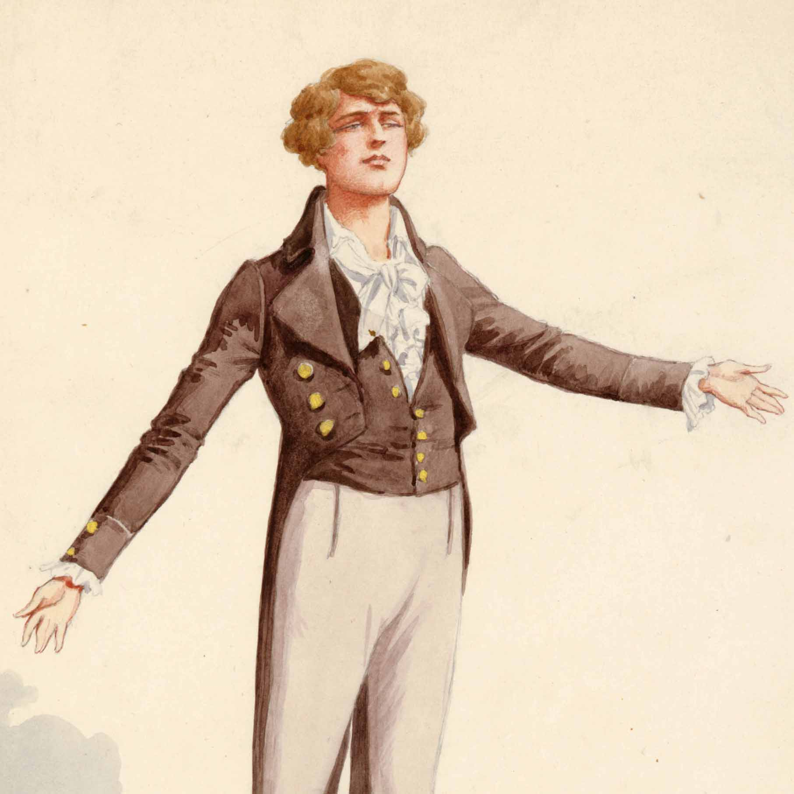
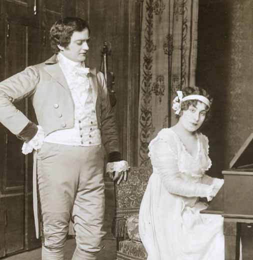
Metropolitan Opera Premiere
Les Contes d'Hoffmann {1}
Metropolitan Opera House; 01/11/1913
Debut: Attilio Comelli
Review |
[Met Performance] CID:54575
Orfeo ed Euridice {32}
Academy of Music, Brooklyn, New York; 01/11/1913
|
[Met Concert/Gala] CID:54576
Ninth Sunday Concert
Metropolitan Opera House; 01/12/1913
|
[Met Performance] CID:54577
Les Huguenots {122}
Metropolitan Opera House; 01/13/1913
|
[Met Performance] CID:54578
Die Zauberflöte {32}
Philadelphia, Pennsylvania; 01/14/1913
|
[Met Performance] CID:54579
Tristan und Isolde {116}
Metropolitan Opera House; 01/15/1913
|
[Met Performance] CID:54580
Il Segreto di Susanna {3}
Pagliacci {138}
Metropolitan Opera House; 01/16/1913
|
[Met Performance] CID:54581
Otello {53}
Metropolitan Opera House; 01/16/1913
|
[Met Performance] CID:54582
Siegfried {100}
Metropolitan Opera House; 01/17/1913
|
[Met Performance] CID:54583
Königskinder {29}
Metropolitan Opera House; 01/18/1913
|
[Met Performance] CID:54584
Les Contes d'Hoffmann {2}
Metropolitan Opera House; 01/18/1913
|
[Met Concert/Gala] CID:54585
Tenth Sunday Concert
Metropolitan Opera House; 01/19/1913
|
[Met Performance] CID:54586
Die Meistersinger von Nürnberg {118}
Metropolitan Opera House; 01/20/1913
Act III, Scene 1 omitted
Review |
[Met Performance] CID:54587
Orfeo ed Euridice {33}
Philadelphia, Pennsylvania; 01/21/1913
|
[Met Performance] CID:54588
Manon {40}
Metropolitan Opera House; 01/22/1913
|
[Met Performance] CID:54589
Die Zauberflöte {33}
Metropolitan Opera House; 01/23/1913
|
[Met Performance] CID:54590
Tristan und Isolde {117}
Metropolitan Opera House; 01/23/1913
|
[Met Performance] CID:54591
Il Barbiere di Siviglia {82}
Metropolitan Opera House; 01/24/1913
|
[Met Performance] CID:54592
La Gioconda {57}
Metropolitan Opera House; 01/25/1913
|
[Met Performance] CID:54593
Madama Butterfly {80}
Academy of Music, Brooklyn, New York; 01/25/1913
|
[Met Concert/Gala] CID:54594
Eleventh Sunday Concert
Metropolitan Opera House; 01/26/1913
|
[Met Performance] CID:54595
Les Contes d'Hoffmann {3}
Metropolitan Opera House; 01/27/1913
|
[Met Performance] CID:54596
Manon {41}
Philadelphia, Pennsylvania; 01/28/1913
|
[Met Performance] CID:54597
Das Rheingold {53}
Ring Cycle [42]
Metropolitan Opera House; 01/29/1913
|
[Met Performance] CID:54598
La Traviata {82}
Metropolitan Opera House; 01/29/1913
|
[Met Performance] CID:54599
Cavalleria Rusticana {151}
Pagliacci {139}
Metropolitan Opera House; 01/30/1913
|
[Met Performance] CID:54600
Otello {54}
Metropolitan Opera House; 01/31/1913
|
[Met Performance] CID:54601
Madama Butterfly {81}
Metropolitan Opera House; 02/01/1913
|
[Met Performance] CID:54602
Tannhäuser {200}
Metropolitan Opera House; 02/01/1913
|
[Met Concert/Gala] CID:54603
Twelfth Sunday Concert
Metropolitan Opera House; 02/02/1913
|
[Met Performance] CID:54604
La Gioconda {58}
Metropolitan Opera House; 02/03/1913
|
[Met Performance] CID:54605
Die Meistersinger von Nürnberg {119}
Academy of Music, Brooklyn, New York; 02/04/1913
Debut: Willy Buers |
[Met Performance] CID:54606
Le Donne Curiose {6}
Metropolitan Opera House; 02/05/1913
|
[Met Performance] CID:54607
Die Walküre {155}
Ring Cycle [41]
Metropolitan Opera House; 02/06/1913
|
[Met Performance] CID:54608
Les Contes d'Hoffmann {4}
Metropolitan Opera House; 02/06/1913
|
[Met Performance] CID:54609
Manon {42}
Metropolitan Opera House; 02/07/1913
|
[Met Performance] CID:54610
Tristan und Isolde {118}
Metropolitan Opera House; 02/08/1913
Debuts: Carl Braun, Jacques Urlus
Reviews |
[Met Performance] CID:54611
La Bohème {117}
Metropolitan Opera House; 02/08/1913
|
[Met Concert/Gala] CID:54612
Thirteenth Sunday Concert
Metropolitan Opera House; 02/09/1913
|
[Met Performance] CID:54613
Il Segreto di Susanna {4}
Pagliacci {140}
Metropolitan Opera House; 02/10/1913
|
[Met Performance] CID:54614
Les Contes d'Hoffmann {5}
Academy of Music, Brooklyn, New York; 02/11/1913
|
[Met Performance] CID:54615
Siegfried {101}
Ring Cycle [41]
Metropolitan Opera House; 02/12/1913
Review |
[Met Performance] CID:54616
Tosca {90}
Metropolitan Opera House; 02/12/1913
|
[Met Performance] CID:54617
Die Meistersinger von Nürnberg {120}
Metropolitan Opera House; 02/13/1913
|
[Met Performance] CID:54618
La Traviata {83}
Metropolitan Opera House; 02/14/1913
|
[Met Performance] CID:54619
Manon Lescaut {21}
Metropolitan Opera House; 02/15/1913
|
[Met Performance] CID:54620
Die Walküre {156}
Metropolitan Opera House; 02/15/1913
Review |
[Met Concert/Gala] CID:54621
Fourteenth Sunday Concert
Metropolitan Opera House; 02/16/1913
|
[Met Performance] CID:54622
Hänsel und Gretel {72}
Cavalleria Rusticana {152}
Metropolitan Opera House; 02/17/1913
Review |
[Met Concert/Gala] CID:54623
Gala Performance
Metropolitan Opera House; 02/18/1913
|
[Met Performance] CID:54624
Die Zauberflöte {34}
Metropolitan Opera House; 02/19/1913
|
[Met Performance] CID:54625
Götterdämmerung {79}
Ring Cycle [41]
Metropolitan Opera House; 02/20/1913
Review |
[Met Performance] CID:54626
Madama Butterfly {82}
Metropolitan Opera House; 02/20/1913
|
[Met Performance] CID:54627
La Fanciulla del West {19}
Metropolitan Opera House; 02/21/1913
|
[Met Performance] CID:54628
Il Barbiere di Siviglia {83}
Metropolitan Opera House; 02/22/1913
|
[Met Performance] CID:54629
Il Trovatore {101}
Metropolitan Opera House; 02/22/1913
|
[Met Concert/Gala] CID:54630
Fifteenth Sunday Concert
Metropolitan Opera House; 02/23/1913
|
[Met Performance] CID:54631
Le Donne Curiose {7}
Metropolitan Opera House; 02/24/1913
|
[Met Performance] CID:54632
La Traviata {84}
Academy of Music, Brooklyn, New York; 02/25/1913
|
[Met Performance] CID:54633
Les Huguenots {123}
Metropolitan Opera House; 02/26/1913
Review |
[Met Performance] CID:54635
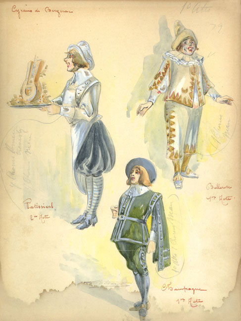
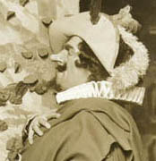
World Premiere
Cyrano {1}
Metropolitan Opera House; 02/27/1913
Debut: Maurice Sapio
Review |
[Met Performance] CID:54634
Hänsel und Gretel {73}
Pagliacci {141}
Metropolitan Opera House; 02/27/1913
|
[Met Performance] CID:54636
Tristan und Isolde {119}
Metropolitan Opera House; 02/28/1913
Review |
[Met Performance] CID:54637
Manon {43}
Metropolitan Opera House; 03/01/1913
Review |
[Met Performance] CID:54638
La Gioconda {59}
Metropolitan Opera House; 03/01/1913
|
[Met Concert/Gala] CID:54639
Sixteenth Sunday Concert
Metropolitan Opera House; 03/02/1913
|
[Met Performance] CID:54640
Die Walküre {157}
Metropolitan Opera House; 03/03/1913
|
[Met Performance] CID:54641
Tosca {91}
Academy of Music, Brooklyn, New York; 03/04/1913
|
[Met Performance] CID:54642
Königskinder {30}
Metropolitan Opera House; 03/05/1913
|
[Met Performance] CID:54643
Les Contes d'Hoffmann {6}
Metropolitan Opera House; 03/06/1913
|
[Met Performance] CID:54644
Aida {182}
Metropolitan Opera House; 03/06/1913
Review |
[Met Performance] CID:54645
La Bohème {118}
Metropolitan Opera House; 03/07/1913
|
[Met Performance] CID:54646
Tannhäuser {201}
Metropolitan Opera House; 03/08/1913
|
[Met Performance] CID:54647
Cavalleria Rusticana {153}
Pagliacci {142}
Metropolitan Opera House; 03/08/1913
|
[Met Concert/Gala] CID:54648
Seventeenth Sunday Concert
Metropolitan Opera House; 03/09/1913
|
[Met Performance] CID:54649
Tosca {92}
Metropolitan Opera House; 03/10/1913
Review |
[Met Performance] CID:54650
Lohengrin {275}
Academy of Music, Brooklyn, New York; 03/11/1913
Debut: Alice Sherman
Review |
[Met Performance] CID:54651
Les Contes d'Hoffmann {7}
Metropolitan Opera House; 03/12/1913
Review |
[Met Performance] CID:54652
Manon {44}
Metropolitan Opera House; 03/13/1913
|
[Met Performance] CID:54653
Il Trovatore {102}
Metropolitan Opera House; 03/13/1913
Debut: Anafesto Rossi |
[Met Performance] CID:54654
Die Walküre {158}
Metropolitan Opera House; 03/14/1913
|
[Met Performance] CID:54655
La Traviata {85}
Metropolitan Opera House; 03/15/1913
|
[Met Performance] CID:54656
Faust {291}
Metropolitan Opera House; 03/15/1913
|
[Met Concert/Gala] CID:54657
Eighteenth Sunday Concert
Metropolitan Opera House; 03/16/1913
|
[Met Performance] CID:54658
Lohengrin {276}
Metropolitan Opera House; 03/17/1913
|
[Met Concert/Gala] CID:54659
Gala Performance
Metropolitan Opera House; 03/18/1913
|
[Met Performance] CID:54660

United States Premiere
Boris Godunov {1}
Metropolitan Opera House; 03/19/1913
Debuts: Leopoldo Mariani, Alexander Benois, Ivan Bilibine, Alexander Golovine
Reviews |
[Met Performance] CID:54661
Le Donne Curiose {8}
Metropolitan Opera House; 03/20/1913
|
[Met Performance] CID:54662
Parsifal {70}
Metropolitan Opera House; 03/21/1913
|
[Met Performance] CID:54663
Les Contes d'Hoffmann {8}
Metropolitan Opera House; 03/21/1913
|
[Met Performance] CID:54664
La Fanciulla del West {20}
Metropolitan Opera House; 03/22/1913
|
[Met Performance] CID:54665
Die Meistersinger von Nürnberg {121}
Metropolitan Opera House; 03/22/1913
|
[Met Concert/Gala] CID:54666
Nineteenth Sunday Concert
Metropolitan Opera House; 03/23/1913
|
[Met Performance] CID:54667
Cyrano {2}
Metropolitan Opera House; 03/24/1913
|
[Met Performance] CID:54668
Les Huguenots {124}
Philadelphia, Pennsylvania; 03/25/1913
|
[Met Performance] CID:54669
Lohengrin {277}
Metropolitan Opera House; 03/26/1913
Review |
[Met Performance] CID:54670
Rigoletto {81}
Metropolitan Opera House; 03/27/1913
|
[Met Performance] CID:54671
Tosca {93}
Metropolitan Opera House; 03/27/1913
|
[Met Performance] CID:54672
Boris Godunov {2}
Metropolitan Opera House; 03/28/1913
|
[Met Performance] CID:54673
Cyrano {3}
Metropolitan Opera House; 03/29/1913
|
[Met Performance] CID:54674
Königskinder {31}
Metropolitan Opera House; 03/29/1913
|
[Met Concert/Gala] CID:54675
Twentieth Sunday Concert
Metropolitan Opera House; 03/30/1913
|
[Met Performance] CID:54676
Manon {45}
Metropolitan Opera House; 03/31/1913
|
[Met Performance] CID:54677
Die Zauberflöte {35}
Metropolitan Opera House; 04/01/1913
|
[Met Performance] CID:54678
Aida {183}
Metropolitan Opera House; 04/02/1913
|
[Met Performance] CID:54679
Madama Butterfly {83}
Metropolitan Opera House; 04/03/1913
|
[Met Performance] CID:54680
Tannhäuser {202}
Metropolitan Opera House; 04/03/1913
|
[Met Performance] CID:54681
Cyrano {4}
Metropolitan Opera House; 04/04/1913
|
[Met Performance] CID:54682
Don Pasquale {27}
Metropolitan Opera House; 04/05/1913
|
[Met Performance] CID:54683
Lohengrin {278}
Metropolitan Opera House; 04/05/1913
|
[Met Concert/Gala] CID:54684
Wagner Concert
Metropolitan Opera House; 04/06/1913
|
[Met Performance] CID:54685
Boris Godunov {3}
Metropolitan Opera House; 04/07/1913
|
[Met Performance] CID:54686
Aida {184}
Metropolitan Opera House; 04/08/1913
|
[Met Performance] CID:54687
Die Meistersinger von Nürnberg {122}
Metropolitan Opera House; 04/09/1913
|
[Met Performance] CID:54688
Cavalleria Rusticana {154}
Pagliacci {143}
Metropolitan Opera House; 04/10/1913
|
[Met Performance] CID:54689
Königskinder {32}
Metropolitan Opera House; 04/10/1913
|
[Met Performance] CID:54690
Tannhäuser {203}
Metropolitan Opera House; 04/11/1913
|
[Met Performance] CID:54691
Les Huguenots {125}
Metropolitan Opera House; 04/12/1913
|
[Met Performance] CID:54692
Madama Butterfly {84}
Metropolitan Opera House; 04/12/1913
|
[Met Concert/Gala] CID:54693
Concert
Beethoven: Symphony No. 9 in D Minor {1}
Metropolitan Opera House; 04/13/1913
Review |
[Met Performance] CID:54694
La Bohème {119}
Metropolitan Opera House; 04/14/1913
|
[Met Performance] CID:54695
Hänsel und Gretel {74}
Pagliacci {144}
Albany, New York; 04/15/1913
|
[Met Performance] CID:54696
Cyrano {5}
Metropolitan Opera House; 04/16/1913
|
[Met Performance] CID:54697
Die Zauberflöte {36}
Metropolitan Opera House; 04/17/1913
|
[Met Performance] CID:54698
Don Pasquale {28}
Metropolitan Opera House; 04/17/1913
|
[Met Concert/Gala] CID:54699
Concert
Beethoven: Symphony No. 9 in D Minor {2}
Metropolitan Opera House; 04/18/1913
|
[Met Performance] CID:54700
Tosca {94}
Metropolitan Opera House; 04/18/1913
|
[Met Performance] CID:54701
Boris Godunov {4}
Metropolitan Opera House; 04/19/1913
|
[Met Performance] CID:54702
Aida {185}
Metropolitan Opera House; 04/19/1913
|
[Met Performance] CID:54703
Manon Lescaut {22}
Atlanta, Georgia; 04/21/1913
|
[Met Performance] CID:54704
La Traviata {86}
Atlanta, Georgia; 04/22/1913
|
[Met Performance] CID:54705
Cyrano {6}
Atlanta, Georgia; 04/23/1913
Debut: Ludwig Laurier |
[Met Performance] CID:54706
La Gioconda {60}
Atlanta, Georgia; 04/24/1913
|
[Met Performance] CID:54707
Les Contes d'Hoffmann {9}
Atlanta, Georgia; 04/25/1913
|
[Met Performance] CID:54708
Lucia di Lammermoor {80}
Atlanta, Georgia; 04/26/1913
|
[Met Performance] CID:54709
Tosca {95}
Atlanta, Georgia; 04/26/1913
|
[Met Performance] CID:55000
La Gioconda {61}
Metropolitan Opera House; 11/17/1913
Opening Night {29}
Giulio Gatti-Casazza, General Manager |
[Met Performance] CID:55010
Tosca {96}
Albany, New York; 11/18/1913
Debut: Giovanni Martinelli |
[Met Performance] CID:55020
Die Zauberflöte {37}
Metropolitan Opera House; 11/19/1913
Debuts: Lillian Eubank, Carl Schlegel, Franz Hörth |
[Met Performance] CID:55030
La Bohème {120}
Metropolitan Opera House; 11/20/1913
Review |
[Met Performance] CID:55040
Lohengrin {279}
Metropolitan Opera House; 11/21/1913
Debuts: Anna Giordano, Margarete Ober
Review |
[Met Performance] CID:55050
New production
Un Ballo in Maschera {10}
Metropolitan Opera House; 11/22/1913
|
[Met Performance] CID:55060
La Bohème {121}
Academy of Music, Brooklyn, New York; 11/22/1913
Debut: Italo Cristalli |
[Met Concert/Gala] CID:55070
First Sunday Concert
Metropolitan Opera House; 11/23/1913
|
[Met Performance] CID:55080
Madama Butterfly {85}
Metropolitan Opera House; 11/24/1913
|
[Met Performance] CID:55090
Aida {186}
Metropolitan Opera House, Philadelphia, Pennsylvania; 11/25/1913
|
[Met Performance] CID:55100
Lucia di Lammermoor {81}
Metropolitan Opera House; 11/26/1913
|
[Met Performance] CID:55110
Parsifal {71}
Metropolitan Opera House; 11/27/1913
Debut: Sophie Braslau |
[Met Performance] CID:55120
Manon Lescaut {23}
Metropolitan Opera House; 11/27/1913
|
[Met Performance] CID:55130
Boris Godunov {5}
Metropolitan Opera House; 11/28/1913
|
[Met Performance] CID:55140
Die Zauberflöte {38}
Metropolitan Opera House; 11/29/1913
|
[Met Performance] CID:55150
Faust {292}
Academy of Music, Brooklyn, New York; 11/29/1913
|
[Met Concert/Gala] CID:55160
Second Sunday Concert
Metropolitan Opera House; 11/30/1913
|
[Met Performance] CID:55170
Lohengrin {280}
Metropolitan Opera House; 12/1/1913
|
[Met Performance] CID:55180
Madama Butterfly {86}
Philadelphia, Pennsylvania; 12/2/1913
|
[Met Performance] CID:55190
Un Ballo in Maschera {11}
Metropolitan Opera House; 12/3/1913
|
[Met Performance] CID:55200
New production
Siegfried {102}
Metropolitan Opera House; 12/4/1913
|
[Met Performance] CID:55210
Cavalleria Rusticana {155}
Pagliacci {145}
Metropolitan Opera House; 12/5/1913
Review |
[Met Performance] CID:55220
Les Contes d'Hoffmann {10}
Metropolitan Opera House; 12/6/1913
|
[Met Performance] CID:55230
Tosca {97}
Metropolitan Opera House; 12/6/1913
|
[Met Concert/Gala] CID:55240
Third Sunday Concert
Metropolitan Opera House; 12/7/1913
|
[Met Performance] CID:55250
Aida {187}
Metropolitan Opera House; 12/8/1913
|
[Met Performance] CID:55260
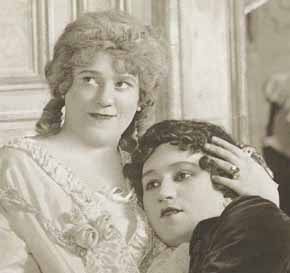
United States Premiere
Der Rosenkavalier {1}
Metropolitan Opera House; 12/9/1913
Debut: Alfred Sappio
Review |
[Met Performance] CID:55270
La Bohème {122}
Metropolitan Opera House; 12/10/1913
|
[Met Performance] CID:55280
Un Ballo in Maschera {12}
Metropolitan Opera House; 12/11/1913
|
[Met Performance] CID:55290
Tannhäuser {204}
Metropolitan Opera House; 12/12/1913
Debut: Adele Giordano |
[Met Performance] CID:55300
Madama Butterfly {87}
Metropolitan Opera House; 12/13/1913
Review |
[Met Performance] CID:55310
Les Contes d'Hoffmann {11}
Academy of Music, Brooklyn, New York; 12/13/1913
|
[Met Concert/Gala] CID:55320
Fourth Sunday Concert
Metropolitan Opera House; 12/14/1913
|
[Met Performance] CID:55330
Boris Godunov {6}
Metropolitan Opera House; 12/15/1913
|
[Met Performance] CID:55340
Tannhäuser {205}
Philadelphia, Pennsylvania; 12/16/1913
|
[Met Performance] CID:55350
Cavalleria Rusticana {156}
Pagliacci {146}
Metropolitan Opera House; 12/17/1913
|
[Met Performance] CID:55360
Der Rosenkavalier {2}
Metropolitan Opera House; 12/18/1913
|
[Met Performance] CID:55370
Tosca {98}
Metropolitan Opera House; 12/19/1913
|
[Met Performance] CID:55380
New production
Die Walküre {159}
Metropolitan Opera House; 12/20/1913
|
[Met Performance] CID:55390
La Traviata {87}
Academy of Music, Brooklyn, New York; 12/20/1913
|
[Met Concert/Gala] CID:55400
Fifth Sunday Concert
Metropolitan Opera House; 12/21/1913
|
[Met Performance] CID:55410
Die Zauberflöte {39}
Metropolitan Opera House; 12/22/1913
|
[Met Performance] CID:55420
La Bohème {123}
Philadelphia, Pennsylvania; 12/23/1913
Caruso sang Colline's aria, Vecchia zimarra, for De Segurola. |
[Met Performance] CID:55430
Tristan und Isolde {120}
Metropolitan Opera House; 12/24/1913
|
[Met Performance] CID:55440
La Gioconda {62}
Metropolitan Opera House; 12/25/1913
|
[Met Performance] CID:55450
Hänsel und Gretel {75}
Metropolitan Opera House; 12/26/1913
Debut: Robert Leonhardt |
[Met Performance] CID:55460
Siegfried {103}
Metropolitan Opera House; 12/26/1913
|
[Met Performance] CID:55470
La Bohème {124}
Metropolitan Opera House; 12/27/1913
|
[Met Performance] CID:55480
Aida {188}
Metropolitan Opera House; 12/27/1913
|
[Met Concert/Gala] CID:55490
Sixth Sunday Concert
Metropolitan Opera House; 12/28/1913
|
[Met Performance] CID:55500
Der Rosenkavalier {3}
Metropolitan Opera House; 12/29/1913
|
[Met Performance] CID:55510
Tannhäuser {206}
Academy of Music, Brooklyn, New York; 12/30/1913
|
[Met Performance] CID:55520
Manon {46}
Metropolitan Opera House; 12/31/1913
|
[Met Performance] CID:55530
Parsifal {72}
Metropolitan Opera House; 01/1/1914
|
[Met Performance] CID:55540
La Traviata {88}
Metropolitan Opera House; 01/1/1914
|
[Met Performance] CID:55550
United States Premiere
L'Amore dei Tre Re {1}
Metropolitan Opera House; 01/2/1914
Debuts: Edoardo Ferrari-Fontana, Giuseppe Mancini
Review |
[Met Performance] CID:55560
La Gioconda {63}
Metropolitan Opera House; 01/3/1914
|
[Met Performance] CID:55570
Madama Butterfly {88}
Metropolitan Opera House; 01/3/1914
|
[Met Concert/Gala] CID:55580
Seventh Sunday Concert
Metropolitan Opera House; 01/4/1914
|
[Met Performance] CID:55590
Manon Lescaut {24}
Metropolitan Opera House; 01/5/1914
Review |
[Met Performance] CID:55600
Tristan und Isolde {121}
Philadelphia, Pennsylvania; 01/6/1914
|
[Met Performance] CID:55610
Aida {189}
Metropolitan Opera House; 01/7/1914
|
[Met Performance] CID:55620
Königskinder {33}
Metropolitan Opera House; 01/8/1914
|
[Met Performance] CID:55630
Die Walküre {160}
Metropolitan Opera House; 01/9/1914
|
[Met Performance] CID:55640
Manon {47}
Metropolitan Opera House; 01/10/1914
|
[Met Performance] CID:55650
Der Rosenkavalier {4}
Metropolitan Opera House; 01/10/1914
|
[Met Concert/Gala] CID:55660
Eighth Sunday Concert
Metropolitan Opera House; 01/11/1914
|
[Met Performance] CID:55670
L'Amore dei Tre Re {2}
Metropolitan Opera House; 01/12/1914
|
[Met Performance] CID:55680
Königskinder {34}
Academy of Music, Brooklyn, New York; 01/13/1914
|
[Met Performance] CID:55690
Hänsel und Gretel {76}
Pagliacci {147}
Metropolitan Opera House; 01/14/1914
|
[Met Performance] CID:55700
Boris Godunov {7}
Metropolitan Opera House; 01/14/1914
|
[Met Performance] CID:55710
Die Meistersinger von Nürnberg {123}
Metropolitan Opera House; 01/15/1914
|
[Met Performance] CID:55720
Un Ballo in Maschera {13}
Metropolitan Opera House; 01/16/1914
|
[Met Performance] CID:55730
Lohengrin {281}
Metropolitan Opera House; 01/17/1914
|
[Met Performance] CID:55740
La Bohème {125}
Metropolitan Opera House; 01/17/1914
|
[Met Concert/Gala] CID:55750
Ninth Sunday Concert
Metropolitan Opera House; 01/18/1914
|
[Met Performance] CID:55760
Manon {48}
Metropolitan Opera House; 01/19/1914
Review |
[Met Performance] CID:55770
Die Zauberflöte {40}
Philadelphia, Pennsylvania; 01/20/1914
|
[Met Performance] CID:55780
L'Amore dei Tre Re {3}
Metropolitan Opera House; 01/21/1914
|
[Met Performance] CID:55790
Madama Butterfly {89}
Metropolitan Opera House; 01/22/1914
|
[Met Performance] CID:55800
Tristan und Isolde {122}
Metropolitan Opera House; 01/22/1914
|
[Met Performance] CID:55810
Der Rosenkavalier {5}
Metropolitan Opera House; 01/23/1914
|
[Met Performance] CID:55820
World Premiere (Madeleine)
Madeleine {1}
Pagliacci {148}
Metropolitan Opera House; 01/24/1914
Debuts: Armin Laufer, Joseph Novak
Reviews |
[Met Performance] CID:55830
Tannhäuser {207}
Metropolitan Opera House; 01/24/1914
|
[Met Concert/Gala] CID:55840
Tenth Sunday Concert
Metropolitan Opera House; 01/25/1914
|
[Met Performance] CID:55850
Königskinder {35}
Metropolitan Opera House; 01/26/1914
|
[Met Performance] CID:55860
Madeleine {2}
Pagliacci {149}
Academy of Music, Brooklyn, New York; 01/27/1914
|
[Met Performance] CID:55870
Madama Butterfly {90}
Metropolitan Opera House; 01/28/1914
|
[Met Performance] CID:55880
New production
Das Rheingold {53}
Ring Cycle [42]
Metropolitan Opera House; 01/29/1914
Review |
[Met Performance] CID:55890
Boris Godunov {8}
Metropolitan Opera House; 01/29/1914
|
[Met Performance] CID:55900
La Bohème {126}
Metropolitan Opera House; 01/30/1914
|
[Met Performance] CID:55910
Die Meistersinger von Nürnberg {124}
Metropolitan Opera House; 01/31/1914
|
[Met Performance] CID:55920
Cavalleria Rusticana {157}
Pagliacci {150}
Metropolitan Opera House; 01/31/1914
|
[Met Concert/Gala] CID:55930
Eleventh Sunday Concert
Metropolitan Opera House; 02/1/1914
|
[Met Performance] CID:55940
Tosca {99}
Metropolitan Opera House; 02/2/1914
|
[Met Performance] CID:55950
Der Rosenkavalier {6}
Academy of Music, Brooklyn, New York; 02/3/1914
|
[Met Performance] CID:55960
La Fanciulla del West {21}
Metropolitan Opera House; 02/4/1914
|
[Met Performance] CID:55970
Die Walküre {161}
Ring Cycle [42]
Metropolitan Opera House; 02/5/1914
Debut: Rudolf Berger |
[Met Performance] CID:55980
Madeleine {3}
Don Pasquale {29}
Metropolitan Opera House; 02/5/1914
|
[Met Performance] CID:55990
Königskinder {36}
Metropolitan Opera House; 02/6/1914
|
[Met Performance] CID:56000
L'Amore dei Tre Re {4}
Metropolitan Opera House; 02/7/1914
|
[Met Performance] CID:56010
Aida {190}
Metropolitan Opera House; 02/7/1914
|
[Met Concert/Gala] CID:56020
Twelfth Sunday Concert
Metropolitan Opera House; 02/8/1914
|
[Met Performance] CID:56030
Die Meistersinger von Nürnberg {125}
Metropolitan Opera House; 02/9/1914
|
[Met Performance] CID:56040
Tosca {100}
Philadelphia, Pennsylvania; 02/10/1914
|
[Met Performance] CID:56050
Der Rosenkavalier {7}
Metropolitan Opera House; 02/11/1914
|
[Met Performance] CID:56060
Siegfried {104}
Ring Cycle [42]
Metropolitan Opera House; 02/12/1914
|
[Met Performance] CID:56070
La Fanciulla del West {22}
Metropolitan Opera House; 02/12/1914
|
[Met Performance] CID:56080
La Traviata {89}
Metropolitan Opera House; 02/13/1914
|
[Met Performance] CID:56090
Tristan und Isolde {123}
Metropolitan Opera House; 02/14/1914
|
[Met Performance] CID:56100
Faust {293}
Metropolitan Opera House; 02/14/1914
|
[Met Concert/Gala] CID:56110
Thirteenth Sunday Concert
Metropolitan Opera House; 02/15/1914
|
[Met Performance] CID:56120
Un Ballo in Maschera {14}
Metropolitan Opera House; 02/16/1914
|
[Met Performance] CID:56130
Aida {191}
Academy of Music, Brooklyn, New York; 02/17/1914
|
[Met Performance] CID:56140
Tosca {101}
Metropolitan Opera House; 02/18/1914
|
[Met Performance] CID:56150
New production
Götterdämmerung {80}
Ring Cycle [42]
Metropolitan Opera House; 02/19/1914
|
[Met Performance] CID:56160
L'Amore dei Tre Re {5}
Metropolitan Opera House; 02/19/1914
|
[Met Performance] CID:56170
Manon Lescaut {25}
Metropolitan Opera House; 02/20/1914
|
[Met Performance] CID:56180
Boris Godunov {9}
Metropolitan Opera House; 02/21/1914
|
[Met Performance] CID:56190
Die Walküre {162}
Metropolitan Opera House; 02/21/1914
|
[Met Concert/Gala] CID:56200
Fourteenth Sunday Concert
Metropolitan Opera House; 02/22/1914
|
[Met Performance] CID:56210
La Bohème {127}
Metropolitan Opera House; 02/23/1914
|
[Met Performance] CID:56220
Madeleine {4}
Don Pasquale {30}
Metropolitan Opera House; 02/23/1914
|
[Met Performance] CID:56230
Tosca {102}
Academy of Music, Brooklyn, New York; 02/24/1914
|
[Met Performance] CID:56240
Lohengrin {282}
Metropolitan Opera House; 02/25/1914
|
[Met Performance] CID:56250
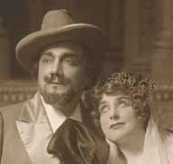
United States Premiere
Julien {1}
Metropolitan Opera House; 02/26/1914
Debut: Ettore Coppini
Review |
[Met Performance] CID:56260
Die Zauberflöte {41}
Metropolitan Opera House; 02/27/1914
|
[Met Performance] CID:56270
Götterdämmerung {81}
Metropolitan Opera House; 02/28/1914
|
[Met Performance] CID:56280
La Fanciulla del West {23}
Metropolitan Opera House; 02/28/1914
|
[Met Concert/Gala] CID:56290
Fifteenth Sunday Concert
Metropolitan Opera House; 03/1/1914
|
[Met Performance] CID:56300
Orfeo ed Euridice {34}
Metropolitan Opera House; 03/2/1914
|
[Met Performance] CID:56310
Madeleine {5}
Pagliacci {151}
Philadelphia, Pennsylvania; 03/3/1914
|
[Met Performance] CID:56320
Königskinder {37}
Metropolitan Opera House; 03/4/1914
|
[Met Concert/Gala] CID:56330
Gala Performance
Metropolitan Opera House; 03/5/1914
|
[Met Performance] CID:56340
Die Walküre {163}
Metropolitan Opera House; 03/5/1914
|
[Met Performance] CID:56350
Julien {2}
Metropolitan Opera House; 03/6/1914
|
[Met Performance] CID:56360
Der Rosenkavalier {8}
Metropolitan Opera House; 03/7/1914
|
[Met Performance] CID:56370
Boris Godunov {10}
Metropolitan Opera House; 03/7/1914
|
[Met Concert/Gala] CID:56380
Sixteenth Sunday Concert
Metropolitan Opera House; 03/8/1914
|
[Met Performance] CID:56390
Tristan und Isolde {124}
Metropolitan Opera House; 03/9/1914
|
[Met Performance] CID:56400
Boris Godunov {11}
Academy of Music, Philadelphia, Pennsylvania; 03/10/1914
|
[Met Performance] CID:56410
Manon Lescaut {26}
Metropolitan Opera House; 03/11/1914
|
[Met Performance] CID:56420
Madama Butterfly {91}
Metropolitan Opera House; 03/12/1914
|
[Met Performance] CID:56430
Les Contes d'Hoffmann {12}
Metropolitan Opera House; 03/12/1914
|
[Met Performance] CID:56440
Götterdämmerung {82}
Metropolitan Opera House; 03/13/1914
|
[Met Performance] CID:56450
La Fanciulla del West {24}
Metropolitan Opera House; 03/14/1914
|
[Met Performance] CID:56460
Königskinder {38}
Metropolitan Opera House; 03/14/1914
|
[Met Concert/Gala] CID:56470
Seventeenth Sunday Concert
Metropolitan Opera House; 03/15/1914
|
[Met Performance] CID:56480
Julien {3}
Metropolitan Opera House; 03/16/1914
|
[Met Performance] CID:56490
Lohengrin {283}
Academy of Music, Brooklyn, New York; 03/17/1914
|
[Met Performance] CID:56500
La Gioconda {64}
Metropolitan Opera House; 03/18/1914
|
[Met Performance] CID:56510
Der Rosenkavalier {9}
Metropolitan Opera House; 03/19/1914
|
[Met Performance] CID:56520
Tosca {103}
Metropolitan Opera House; 03/19/1914
|
[Met Performance] CID:56530
Madama Butterfly {92}
Metropolitan Opera House; 03/20/1914
|
[Met Performance] CID:56540
Orfeo ed Euridice {35}
Metropolitan Opera House; 03/21/1914
|
[Met Performance] CID:56550
Lohengrin {284}
Metropolitan Opera House; 03/21/1914
|
[Met Concert/Gala] CID:56560
Eighteenth Sunday Concert
Metropolitan Opera House; 03/22/1914
|
[Met Performance] CID:56570
Die Walküre {164}
Metropolitan Opera House; 03/23/1914
|
[Met Performance] CID:56580
La Gioconda {65}
Academy of Music, Brooklyn, New York; 03/24/1914
|
[Met Performance] CID:56590
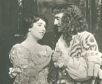
United States Premiere (L'Amore Medico)
L'Amore Medico {1}
Madeleine {6}
Metropolitan Opera House; 03/25/1914
|
[Met Performance] CID:56600
La Bohème {128}
Metropolitan Opera House; 03/26/1914
|
[Met Performance] CID:56610
Hänsel und Gretel {77}
Pagliacci {152}
Metropolitan Opera House; 03/26/1914
|
[Met Performance] CID:56620
Die Meistersinger von Nürnberg {126}
Metropolitan Opera House; 03/27/1914
|
[Met Performance] CID:56630
Julien {4}
Metropolitan Opera House; 03/28/1914
|
[Met Performance] CID:56640
Madama Butterfly {93}
Metropolitan Opera House; 03/28/1914
|
[Met Concert/Gala] CID:56650
Nineteenth Sunday Concert
Metropolitan Opera House; 03/29/1914
|
[Met Performance] CID:56660
L'Amore Medico {2}
Il Segreto di Susanna {5}
Metropolitan Opera House; 03/30/1914
|
[Met Performance] CID:56670
Aida {192}
Metropolitan Opera House; 03/31/1914
|
[Met Performance] CID:56680
Die Walküre {165}
Metropolitan Opera House; 04/1/1914
|
[Met Performance] CID:56690
Die Zauberflöte {42}
Metropolitan Opera House; 04/2/1914
|
[Met Performance] CID:56700
Hänsel und Gretel {78}
Pagliacci {153}
Metropolitan Opera House; 04/3/1914
|
[Met Performance] CID:56710
Orfeo ed Euridice {36}
Metropolitan Opera House; 04/3/1914
|
[Met Performance] CID:56720
Tosca {104}
Metropolitan Opera House; 04/4/1914
|
[Met Performance] CID:56730
Der Rosenkavalier {10}
Metropolitan Opera House; 04/4/1914
|
[Met Concert/Gala] CID:56740
Twentieth Sunday Concert
Metropolitan Opera House; 04/5/1914
|
[Met Performance] CID:56750
La Traviata {90}
Metropolitan Opera House; 04/6/1914
Review |
[Met Performance] CID:56760
Die Walküre {166}
Academy of Music, Brooklyn, New York; 04/7/1914
|
[Met Performance] CID:56770
Julien {5}
Metropolitan Opera House; 04/8/1914
|
[Met Performance] CID:56780
L'Amore Medico {3}
Il Segreto di Susanna {6}
Metropolitan Opera House; 04/9/1914
|
[Met Performance] CID:56790
Parsifal {73}
Metropolitan Opera House; 04/10/1914
|
[Met Performance] CID:56800
Manon {49}
Metropolitan Opera House; 04/10/1914
|
[Met Performance] CID:56810
Siegfried {105}
Metropolitan Opera House; 04/11/1914
|
[Met Performance] CID:56820
La Gioconda {66}
Metropolitan Opera House; 04/11/1914
|
[Met Concert/Gala] CID:56830
Twenty-first Sunday Concert
Metropolitan Opera House; 04/12/1914
|
[Met Performance] CID:56840
Hänsel und Gretel {79}
Pagliacci {154}
Metropolitan Opera House; 04/13/1914
|
[Met Concert/Gala] CID:56850
Special Gala Performance
Metropolitan Opera House; 04/14/1914
|
[Met Performance] CID:56860
Tannhäuser {208}
Metropolitan Opera House; 04/15/1914
|
[Met Performance] CID:56870
Aida {193}
Metropolitan Opera House; 04/16/1914
|
[Met Performance] CID:56880
L'Amore Medico {4}
Il Segreto di Susanna {7}
Metropolitan Opera House; 04/17/1914
|
[Met Performance] CID:56890
Königskinder {39}
Metropolitan Opera House; 04/18/1914
|
[Met Performance] CID:56900
Die Zauberflöte {43}
Metropolitan Opera House; 04/18/1914
|
[Met Concert/Gala] CID:56910
Twenty-second Sunday Concert
Metropolitan Opera House; 04/19/1914
|
[Met Performance] CID:56920
La Bohème {129}
Metropolitan Opera House; 04/20/1914
|
[Met Performance] CID:56930
Hänsel und Gretel {80}
Pagliacci {155}
Metropolitan Opera House; 04/21/1914
|
[Met Performance] CID:56940
Orfeo ed Euridice {37}
Academy of Music, Brooklyn, New York; 04/21/1914
|
[Met Performance] CID:56950
Tosca {105}
Metropolitan Opera House; 04/22/1914
Review |
[Met Performance] CID:56960
Lohengrin {285}
Metropolitan Opera House; 04/23/1914
Review |
[Met Performance] CID:56970
Aida {194}
Metropolitan Opera House; 04/24/1914
|
[Met Performance] CID:56980
La Traviata {91}
Metropolitan Opera House; 04/25/1914
|
[Met Performance] CID:56990
Tristan und Isolde {125}
Metropolitan Opera House; 04/25/1914
|
[Met Concert/Gala] CID:57000
Twenty-third Sunday Concert
Metropolitan Opera House; 04/26/1914
|
[Met Performance] CID:57010
Manon {50}
Auditorium, Atlanta, Georgia; 04/27/1914
Debut: Vezio Righi |
[Met Performance] CID:57020
Il Trovatore {103}
Auditorium, Atlanta, Georgia; 04/28/1914
Debut: Francesco Romei |
[Met Performance] CID:57030
Der Rosenkavalier {11}
Auditorium, Atlanta, Georgia; 04/29/1914
Debut: Frieda Martin |
[Met Performance] CID:57040
Un Ballo in Maschera {15}
Auditorium, Atlanta, Georgia; 04/30/1914
|
[Met Performance] CID:57050
Madama Butterfly {94}
Auditorium, Atlanta, Georgia; 05/1/1914
|
[Met Performance] CID:57060
Lohengrin {286}
Auditorium, Atlanta, Georgia; 05/2/1914
|
[Met Performance] CID:57070
Cavalleria Rusticana {158}
Pagliacci {156}
Auditorium, Atlanta, Georgia; 5/2/1914
|
[Met Performance] CID:58000
Un Ballo in Maschera {16}
Metropolitan Opera House; 11/16/1914
Opening Night {30}
Giulio Gatti-Casazza, General Manager |
[Met Performance] CID:58010
Manon Lescaut {27}
Brooklyn Academy of Music, New York, Brooklyn; 11/17/1914
|
[Met Performance] CID:58020
Lohengrin {287}
Metropolitan Opera House; 11/18/1914
Debuts: Carl Bitterl, Arthur Middleton |
[Met Performance] CID:58030
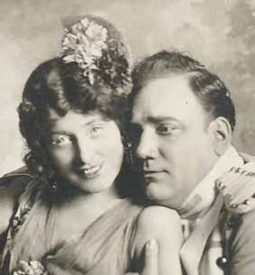
New production
Carmen {207}
Metropolitan Opera House; 11/19/1914
Debuts: Rosina Galli, Désiré Defrère
Review |
[Met Performance] CID:58040
Der Rosenkavalier {12}
Metropolitan Opera House; 11/20/1914
Debuts: Elisabeth Schumann, Alberto Pellaton, Max Bloch
Review |
[Met Performance] CID:58050
La Bohème {130}
Metropolitan Opera House; 11/21/1914
Debuts: Luca Botta, Riccardo Tegani
Review |
[Met Performance] CID:58060
Aida {195}
Metropolitan Opera House; 11/21/1914
|
[Met Concert/Gala] CID:58070
First Sunday Concert
Metropolitan Opera House; 11/22/1914
|
[Met Performance] CID:58080
Die Zauberflöte {44}
Metropolitan Opera House; 11/23/1914
|
[Met Performance] CID:58090
Tosca {106}
Academy of Music, Philadelphia, Pennsylvania; 11/24/1914
|
[Met Performance] CID:58100
La Gioconda {67}
Metropolitan Opera House; 11/25/1914
|
[Met Performance] CID:58110
Parsifal {74}
Metropolitan Opera House; 11/26/1914
Debut: Johannes Sembach
Review |
[Met Performance] CID:58120
La Traviata {92}
Metropolitan Opera House; 11/26/1914
Reviews |
[Met Performance] CID:58130
Carmen {208}
Metropolitan Opera House; 11/27/1914
|
[Met Performance] CID:58140
Boris Godunov {12}
Metropolitan Opera House; 11/28/1914
Debut: Raymonde Delaunois |
[Met Performance] CID:58150
Cavalleria Rusticana {159}
Pagliacci {157}
Brooklyn Academy of Music, New York, Brooklyn; 11/28/1914
|
[Met Concert/Gala] CID:58160
Second Sunday Concert
Metropolitan Opera House; 11/29/1914
|
[Met Performance] CID:58170
Madama Butterfly {95}
Metropolitan Opera House; 11/30/1914
|
[Met Performance] CID:58180
La Gioconda {68}
Academy of Music, Philadelphia, Pennsylvania; 12/1/1914
|
[Met Performance] CID:58190
Der Rosenkavalier {13}
Metropolitan Opera House; 12/2/1914
|
[Met Performance] CID:58200
Tristan und Isolde {126}
Metropolitan Opera House; 12/3/1914
|
[Met Performance] CID:58210
Tosca {107}
Metropolitan Opera House; 12/4/1914
|
[Met Performance] CID:58220
Cavalleria Rusticana {160}
Pagliacci {158}
Metropolitan Opera House; 12/5/1914
|
[Met Performance] CID:58230
Lohengrin {288}
Brooklyn Academy of Music, New York, Brooklyn; 12/5/1914
|
[Met Concert/Gala] CID:58240
Third Sunday Concert
Metropolitan Opera House; 12/6/1914
|
[Met Performance] CID:58250
Carmen {209}
Metropolitan Opera House; 12/7/1914
|
[Met Performance] CID:58260
Lohengrin {289}
Academy of Music, Philadelphia, Pennsylvania; 12/8/1914
|
[Met Performance] CID:58270
La Bohème {131}
Metropolitan Opera House; 12/9/1914
|
[Met Performance] CID:58280
Die Zauberflöte {45}
Metropolitan Opera House; 12/10/1914
|
[Met Performance] CID:58290
Die Walküre {167}
Metropolitan Opera House; 12/11/1914
|
[Met Performance] CID:58300
Madama Butterfly {96}
Metropolitan Opera House; 12/12/1914
|
[Met Performance] CID:58310
Aida {196}
Metropolitan Opera House; 12/12/1914
|
[Met Concert/Gala] CID:58320
Fourth Sunday Concert
Metropolitan Opera House; 12/13/1914
|
[Met Performance] CID:58330
Der Rosenkavalier {14}
Metropolitan Opera House; 12/14/1914
Debut: Margarete Märkl |
[Met Performance] CID:58340
Aida {197}
Academy of Music, Philadelphia, Pennsylvania; 12/15/1914
|
[Met Performance] CID:58350
Tristan und Isolde {127}
Metropolitan Opera House; 12/16/1914
|
[Met Performance] CID:58360
Tosca {108}
Metropolitan Opera House; 12/17/1914
Review |
[Met Performance] CID:58370
Cavalleria Rusticana {161}
Pagliacci {159}
Metropolitan Opera House; 12/18/1914
|
[Met Performance] CID:58380
New production
Euryanthe {5}
Metropolitan Opera House; 12/19/1914
Review |
[Met Performance] CID:58390
La Bohème {132}
Brooklyn Academy of Music, New York, Brooklyn; 12/19/1914
|
[Met Concert/Gala] CID:58400
Fifth Sunday Concert
Metropolitan Opera House; 12/20/1914
|
[Met Performance] CID:58410
La Traviata {93}
Metropolitan Opera House; 12/21/1914
|
[Met Performance] CID:58420
Die Zauberflöte {46}
Academy of Music, Philadelphia, Pennsylvania; 12/22/1914
|
[Met Performance] CID:58430
Aida {198}
Metropolitan Opera House; 12/23/1914
|
[Met Performance] CID:58440
Manon {51}
Metropolitan Opera House; 12/24/1914
|
[Met Performance] CID:58450
Hänsel und Gretel {81}
Ballet Divertissement
Metropolitan Opera House; 12/25/1914
|
[Met Performance] CID:58460
Tannhäuser {209}
Metropolitan Opera House; 12/25/1914
Debut: Juanita Heck |
[Met Performance] CID:58470
Carmen {210}
Metropolitan Opera House; 12/26/1914
|
[Met Performance] CID:58480
Die Zauberflöte {47}
Brooklyn Academy of Music, New York, Brooklyn; 12/26/1914
|
[Met Concert/Gala] CID:58490
Sixth Sunday Concert
Metropolitan Opera House; 12/27/1914
|
[Met Performance] CID:58500
Euryanthe {6}
Metropolitan Opera House; 12/28/1914
|
[Met Performance] CID:58510
Madama Butterfly {97}
Academy of Music, Philadelphia, Pennsylvania; 12/29/1914
|
[Met Performance] CID:58520
Les Huguenots {126}
Metropolitan Opera House; 12/30/1914
|
[Met Performance] CID:58530
Boris Godunov {13}
Metropolitan Opera House; 12/31/1914
|
[Met Performance] CID:58540
Parsifal {75}
Metropolitan Opera House; 01/1/1915
|
[Met Performance] CID:58550
Manon Lescaut {28}
Metropolitan Opera House; 01/1/1915
|
[Met Performance] CID:58560
Die Zauberflöte {48}
Metropolitan Opera House; 01/2/1915
|
[Met Performance] CID:58570
Madama Butterfly {98}
Metropolitan Opera House; 01/2/1915
|
[Met Concert/Gala] CID:58580
Seventh Sunday Concert
Metropolitan Opera House; 01/3/1915
|
[Met Performance] CID:58590
Aida {199}
Metropolitan Opera House; 01/4/1915
|
[Met Performance] CID:58600
La Traviata {94}
Brooklyn Academy of Music, New York, Brooklyn; 01/5/1915
|
[Met Performance] CID:58610
Tosca {109}
Metropolitan Opera House; 01/6/1915
|
[Met Performance] CID:58620
Lohengrin {290}
Metropolitan Opera House; 01/7/1915
Debut: Maude Phillips |
[Met Performance] CID:58630
La Bohème {133}
Metropolitan Opera House; 01/8/1915
|
[Met Performance] CID:58640
Siegfried {106}
Metropolitan Opera House; 01/9/1915
|
[Met Performance] CID:58650
Carmen {211}
Metropolitan Opera House; 01/9/1915
|
[Met Concert/Gala] CID:58660
Eighth Sunday Concert
Metropolitan Opera House; 01/10/1915
|
[Met Performance] CID:58670
Boris Godunov {14}
Metropolitan Opera House; 01/11/1915
|
[Met Performance] CID:58680
Cavalleria Rusticana {162}
Pagliacci {160}
Academy of Music, Philadelphia, Pennsylvania; 01/12/1915
|
[Met Performance] CID:58690
Tannhäuser {210}
Metropolitan Opera House; 01/13/1915
|
[Met Performance] CID:58700
Madama Butterfly {99}
Metropolitan Opera House; 01/14/1915
|
[Met Performance] CID:58710
La Gioconda {69}
Metropolitan Opera House; 01/15/1915
Review |
[Met Performance] CID:58720
Manon Lescaut {29}
Metropolitan Opera House; 01/16/1915
|
[Met Performance] CID:58730
Euryanthe {7}
Metropolitan Opera House; 01/16/1915
|
[Met Concert/Gala] CID:58740
Ninth Sunday Concert
Metropolitan Opera House; 01/17/1915
|
[Met Performance] CID:58750
Lohengrin {291}
Metropolitan Opera House; 01/18/1915
|
[Met Concert/Gala] CID:58760
Special Matinee
Metropolitan Opera House; 01/19/1915
|
[Met Performance] CID:58770
Euryanthe {8}
Brooklyn Academy of Music, New York, Brooklyn; 01/19/1915
|
[Met Performance] CID:58780
Boris Godunov {15}
Metropolitan Opera House; 01/20/1915
|
[Met Performance] CID:58790
Les Huguenots {127}
Metropolitan Opera House; 01/21/1915
|
[Met Performance] CID:58800
Aida {200}
Metropolitan Opera House; 01/22/1915
|
[Met Performance] CID:58810
Un Ballo in Maschera {17}
Metropolitan Opera House; 01/23/1915
|
[Met Performance] CID:58820
Tannhäuser {211}
Metropolitan Opera House; 01/23/1915
|
[Met Concert/Gala] CID:58830
Tenth Sunday Concert
Metropolitan Opera House; 01/24/1915
|
[Met Performance] CID:58840
World Premiere
Madame Sans-Gêne {1}
Metropolitan Opera House; 01/25/1915
Review |
[Met Performance] CID:58850
Boris Godunov {16}
Academy of Music, Philadelphia, Pennsylvania; 01/26/1915
|
[Met Performance] CID:58860
Carmen {212}
Metropolitan Opera House; 01/27/1915
|
[Met Performance] CID:58870
Das Rheingold {54}
Ring Cycle [43]
Metropolitan Opera House; 01/28/1915
|
[Met Performance] CID:58880
Aida {201}
Metropolitan Opera House; 01/28/1915
|
[Met Performance] CID:58890
Manon {52}
Metropolitan Opera House; 01/29/1915
|
[Met Performance] CID:58900
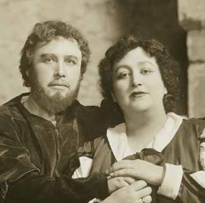
Fidelio {40}
Metropolitan Opera House; 01/30/1915
Reviews |
[Met Performance] CID:58910
La Bohème {134}
Metropolitan Opera House; 01/30/1915
|
[Met Concert/Gala] CID:58920
Eleventh Sunday Concert
Metropolitan Opera House; 01/31/1915
|
[Met Performance] CID:58930
Tristan und Isolde {128}
Metropolitan Opera House; 02/1/1915
Debut: Melanie Kurt |
[Met Performance] CID:58940
Carmen {213}
Brooklyn Academy of Music, New York, Brooklyn; 02/2/1915
|
[Met Performance] CID:58950
Euryanthe {9}
Metropolitan Opera House; 02/3/1915
|
[Met Performance] CID:58960
Die Walküre {168}
Ring Cycle [43]
Metropolitan Opera House; 02/4/1915
|
[Met Performance] CID:58970
United States Premiere (L'Oracolo)
L'Oracolo {1}
Pagliacci {161}
Metropolitan Opera House; 02/4/1915
|
[Met Performance] CID:58980
Madame Sans-Gêne {2}
Metropolitan Opera House; 02/5/1915
|
[Met Performance] CID:58990
Lohengrin {292}
Metropolitan Opera House; 02/6/1915
|
[Met Performance] CID:59000
Hänsel und Gretel {82}
Cavalleria Rusticana {163}
Metropolitan Opera House; 02/6/1915
|
[Met Concert/Gala] CID:59010
Twelfth Sunday Concert
Metropolitan Opera House; 02/7/1915
|
[Met Performance] CID:59020
Les Huguenots {128}
Metropolitan Opera House; 02/8/1915
Review |
[Met Performance] CID:59030
Die Walküre {169}
Academy of Music, Philadelphia, Pennsylvania; 02/9/1915
|
[Met Performance] CID:59040
Madame Sans-Gêne {3}
Metropolitan Opera House; 02/10/1915
|
[Met Performance] CID:59050
L'Amore dei Tre Re {6}
Metropolitan Opera House; 02/11/1915
|
[Met Performance] CID:59060
Siegfried {107}
Ring Cycle [43]
Metropolitan Opera House; 02/12/1915
|
[Met Performance] CID:59070
Boris Godunov {17}
Metropolitan Opera House; 02/12/1915
|
[Met Performance] CID:59080
Manon {53}
Metropolitan Opera House; 02/13/1915
|
[Met Performance] CID:59090
Die Walküre {170}
Metropolitan Opera House; 02/13/1915
|
[Met Concert/Gala] CID:59100
Thirteenth Sunday Concert
Metropolitan Opera House; 02/14/1915
|
[Met Performance] CID:59110
Carmen {214}
Metropolitan Opera House; 02/15/1915
|
[Met Performance] CID:59120
Fidelio {41}
Metropolitan Opera House; 02/15/1915
|
[Met Performance] CID:59130
Fidelio {42}
Brooklyn Academy of Music, New York, Brooklyn; 02/16/1915
|
[Met Performance] CID:59140
L'Oracolo {2}
Pagliacci {162}
Metropolitan Opera House; 02/17/1915
|
[Met Performance] CID:59150
Götterdämmerung {83}
Ring Cycle [43]
Metropolitan Opera House; 02/18/1915
|
[Met Performance] CID:59160
Manon Lescaut {30}
Metropolitan Opera House; 02/18/1915
|
[Met Performance] CID:59170
Die Zauberflöte {49}
Metropolitan Opera House; 02/19/1915
|
[Met Performance] CID:59180
New production
Il Trovatore {104}
Metropolitan Opera House; 02/20/1915
|
[Met Performance] CID:59190
Tosca {110}
Metropolitan Opera House; 02/20/1915
|
[Met Concert/Gala] CID:59200
Fourteenth Sunday Concert
Metropolitan Opera House; 02/21/1915
|
[Met Performance] CID:59210
Parsifal {76}
Metropolitan Opera House; 02/22/1915
|
[Met Performance] CID:59220
L'Amore dei Tre Re {7}
Metropolitan Opera House; 02/22/1915
|
[Met Performance] CID:59230
Madame Sans-Gêne {4}
Academy of Music, Philadelphia, Pennsylvania; 02/23/1915
|
[Met Performance] CID:59240
Die Walküre {171}
Metropolitan Opera House; 02/24/1915
|
[Met Performance] CID:59250
La Bohème {135}
Metropolitan Opera House; 02/25/1915
|
[Met Performance] CID:59260
Euryanthe {10}
Metropolitan Opera House; 02/26/1915
|
[Met Performance] CID:59270
Madame Sans-Gêne {5}
Metropolitan Opera House; 02/27/1915
|
[Met Performance] CID:59280
Aida {202}
Metropolitan Opera House; 02/27/1915
|
[Met Concert/Gala] CID:59290
Fifteenth Sunday Concert
Metropolitan Opera House; 02/28/1915
|
[Met Performance] CID:59300
L'Oracolo {3}
Pagliacci {163}
Metropolitan Opera House; 03/1/1915
|
[Met Performance] CID:59310
Madame Sans-Gêne {6}
Brooklyn Academy of Music, New York, Brooklyn; 03/2/1915
|
[Met Performance] CID:59320
Fidelio {43}
Metropolitan Opera House; 03/3/1915
|
[Met Performance] CID:59330
Der Rosenkavalier {15}
Metropolitan Opera House; 03/4/1915
|
[Met Performance] CID:59340
Madama Butterfly {100}
Metropolitan Opera House; 03/5/1915
|
[Met Performance] CID:59350
Il Trovatore {105}
Metropolitan Opera House; 03/5/1915
|
[Met Performance] CID:59360
Tristan und Isolde {129}
Metropolitan Opera House; 03/6/1915
|
[Met Performance] CID:59370
La Traviata {95}
Metropolitan Opera House; 03/6/1915
|
[Met Concert/Gala] CID:59380
Sixteenth Sunday Concert
Metropolitan Opera House; 03/7/1915
|
[Met Performance] CID:59390
Die Walküre {172}
Metropolitan Opera House; 03/8/1915
|
[Met Performance] CID:59400
Tosca {111}
Brooklyn Academy of Music, New York, Brooklyn; 03/9/1915
|
[Met Performance] CID:59410
L'Amore dei Tre Re {8}
Metropolitan Opera House; 03/10/1915
|
[Met Performance] CID:59420
Hänsel und Gretel {83}
Ballet Divertissement
Metropolitan Opera House; 03/11/1915
|
[Met Performance] CID:59430
Madame Sans-Gêne {7}
Metropolitan Opera House; 03/11/1915
|
[Met Performance] CID:59440
Die Meistersinger von Nürnberg {127}
Metropolitan Opera House; 03/12/1915
|
[Met Performance] CID:59450
Aida {203}
Metropolitan Opera House; 03/13/1915
|
[Met Performance] CID:59460
Lohengrin {293}
Metropolitan Opera House; 03/13/1915
|
[Met Concert/Gala] CID:59470
Seventeenth Sunday Concert
Metropolitan Opera House; 03/14/1915
|
[Met Performance] CID:59480
Tosca {112}
Metropolitan Opera House; 03/15/1915
Review |
[Met Performance] CID:59490
Aida {204}
Brooklyn Academy of Music, New York, Brooklyn; 03/16/1915
|
[Met Performance] CID:59500
Die Zauberflöte {50}
Metropolitan Opera House; 03/17/1915
|
[Met Performance] CID:59510
Carmen {215}
Metropolitan Opera House; 03/18/1915
Review |
[Met Performance] CID:59520
Götterdämmerung {84}
Metropolitan Opera House; 03/18/1915
|
[Met Performance] CID:59530
La Traviata {96}
Metropolitan Opera House; 03/19/1915
|
[Met Performance] CID:59540
Die Walküre {173}
Metropolitan Opera House; 03/20/1915
|
[Met Performance] CID:59550
L'Oracolo {4}
Pagliacci {164}
Metropolitan Opera House; 03/20/1915
|
[Met Concert/Gala] CID:59560
Eighteenth Sunday Concert
Metropolitan Opera House; 03/21/1915
|
[Met Performance] CID:59570
Die Meistersinger von Nürnberg {128}
Metropolitan Opera House; 03/22/1915
|
[Met Performance] CID:59580
L'Amore dei Tre Re {9}
Academy of Music, Philadelphia, Pennsylvania; 03/23/1915
|
[Met Performance] CID:59590
Il Trovatore {106}
Metropolitan Opera House; 03/24/1915
|
[Met Concert/Gala] CID:59600
Gala Performance
Metropolitan Opera House; 03/25/1915
|
[Met Performance] CID:59610
Tannhäuser {212}
Metropolitan Opera House; 03/25/1915
|
[Met Performance] CID:59620
L'Amore dei Tre Re {10}
Metropolitan Opera House; 03/26/1915
|
[Met Performance] CID:59630
Tosca {113}
Metropolitan Opera House; 03/27/1915
|
[Met Performance] CID:59640
Die Zauberflöte {51}
Metropolitan Opera House; 03/27/1915
|
[Met Concert/Gala] CID:59650
Nineteenth Sunday Concert
Metropolitan Opera House; 03/28/1915
|
[Met Performance] CID:59660
La Bohème {136}
Metropolitan Opera House; 03/29/1915
|
[Met Performance] CID:59670
Tannhäuser {213}
Brooklyn Academy of Music, New York, Brooklyn; 03/30/1915
|
[Met Performance] CID:59680
Madama Butterfly {101}
Metropolitan Opera House; 03/31/1915
|
[Met Performance] CID:59690
Iris {9}
Metropolitan Opera House; 04/1/1915
|
[Met Performance] CID:59700
Parsifal {77}
Metropolitan Opera House; 04/2/1915
|
[Met Performance] CID:59710
L'Oracolo {5}
Pagliacci {165}
Metropolitan Opera House; 04/2/1915
|
[Met Performance] CID:59720
Tannhäuser {214}
Metropolitan Opera House; 04/3/1915
|
[Met Performance] CID:59730
Madame Sans-Gêne {8}
Metropolitan Opera House; 04/3/1915
|
[Met Concert/Gala] CID:59740
Twentieth Sunday Concert
Metropolitan Opera House; 04/4/1915
|
[Met Performance] CID:59750
Il Trovatore {107}
Metropolitan Opera House; 04/5/1915
|
[Met Performance] CID:59760
Madama Butterfly {102}
Brooklyn Academy of Music, New York, Brooklyn; 04/6/1915
|
[Met Performance] CID:59770
Die Meistersinger von Nürnberg {129}
Metropolitan Opera House; 04/7/1915
|
[Met Performance] CID:59780
Die Walküre {174}
Metropolitan Opera House; 04/8/1915
|
[Met Performance] CID:59790
Hänsel und Gretel {84}
Ballet Divertissement
Metropolitan Opera House; 04/9/1915
Debut: Valda Smith |
[Met Performance] CID:59800
Iris {10}
Metropolitan Opera House; 04/9/1915
Review |
[Met Performance] CID:59810
L'Amore dei Tre Re {11}
Metropolitan Opera House; 04/10/1915
|
[Met Performance] CID:59820
Madama Butterfly {103}
Metropolitan Opera House; 04/10/1915
|
[Met Concert/Gala] CID:59830
Twenty-First Sunday Concert
Metropolitan Opera House; 04/11/1915
|
[Met Performance] CID:59840
Siegfried {108}
Metropolitan Opera House; 04/12/1915
|
[Met Performance] CID:59850
Carmen {216}
Metropolitan Opera House; 04/13/1915
|
[Met Performance] CID:59860
L'Oracolo {6}
Hänsel und Gretel {85}
Brooklyn Academy of Music, New York, Brooklyn; 04/13/1915
|
[Met Performance] CID:59870
Iris {11}
Metropolitan Opera House; 04/14/1915
|
[Met Performance] CID:59880
Il Trovatore {108}
Metropolitan Opera House; 04/15/1915
|
[Met Performance] CID:59890
Fidelio {44}
Metropolitan Opera House; 04/16/1915
|
[Met Performance] CID:59900
L'Oracolo {7}
La Bohème {137}
Metropolitan Opera House; 04/17/1915
|
[Met Performance] CID:59910
Il Trovatore {109}
Metropolitan Opera House; 04/17/1915
|
[Met Concert/Gala] CID:59920
Twenty-Second Sunday Concert
Metropolitan Opera House; 04/18/1915
|
[Met Performance] CID:59930
Iris {12}
Metropolitan Opera House; 04/19/1915
|
[Met Performance] CID:59940
Carmen {217}
Academy of Music, Philadelphia, Pennsylvania; 04/20/1915
|
[Met Performance] CID:59950
La Traviata {97}
Metropolitan Opera House; 04/21/1915
|
[Met Performance] CID:59960
Fidelio {45}
Metropolitan Opera House; 04/22/1915
|
[Met Performance] CID:59970
Madama Butterfly {104}
Metropolitan Opera House; 04/23/1915
|
[Met Performance] CID:59980
Der Rosenkavalier {16}
Metropolitan Opera House; 04/24/1915
|
[Met Performance] CID:59990
Boris Godunov {18}
Metropolitan Opera House; 04/24/1915
|
[Met Performance] CID:60000
Les Huguenots {129}
Auditorium, Atlanta, Georgia; 04/26/1915
|
[Met Performance] CID:60010
Les Contes d'Hoffmann {13}
Auditorium, Atlanta, Georgia; 04/27/1915
|
[Met Performance] CID:60020
Carmen {218}
Auditorium, Atlanta, Georgia; 04/28/1915
|
[Met Performance] CID:60030
Rigoletto {82}
Auditorium, Atlanta, Georgia; 04/29/1915
Debut: Gennaro Papi |
[Met Performance] CID:60040
L'Amore dei Tre Re {12}
Auditorium, Atlanta, Georgia; 04/30/1915
|
[Met Performance] CID:60050
Die Zauberflöte {52}
Auditorium, Atlanta, Georgia; 05/1/1915
Debut: Mr. Gries |
[Met Performance] CID:60060
Madame Sans-Gêne {9}
Auditorium, Atlanta, Georgia; 05/1/1915
|
[Met Performance] CID:60070
Carmen {219}
Metropolitan Opera House; 5/13/1915
|
[Met Performance] CID:350342
Siegfried (Stadium) {109}
Harvard Stadium, Cambridge, Mass.; 06/04/1915
Review |
[Met Performance] CID:61000
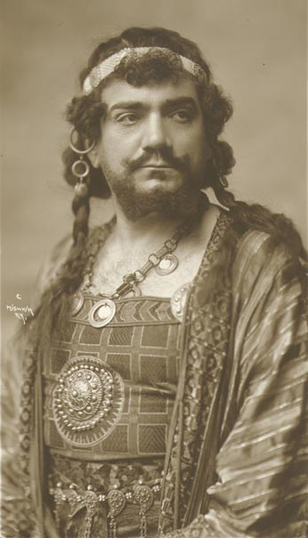
New production
Samson et Dalila {4}
Metropolitan Opera House; 11/15/1915
Opening Night {31}
Giulio Gatti-Casazza, General Manager |
[Met Performance] CID:61010
Il Trovatore {110}
Academy of Music, New York, Brooklyn; 11/16/1915
|
[Met Performance] CID:61020
Boris Godunov {19}
Metropolitan Opera House; 11/17/1915
|
[Met Performance] CID:61030
Götterdämmerung {85}
Metropolitan Opera House; 11/18/1915
Debuts: Julia Heinrich, Artur Bodanzky, Jan Heythekker
Review |
[Met Performance] CID:61040
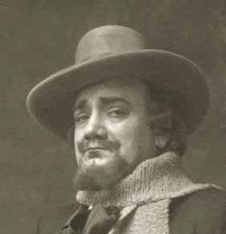
La Bohème {138}
Metropolitan Opera House; 11/19/1915
Debuts: Ida Cajatti, Gaetano Bavagnoli
Review |
[Met Performance] CID:61050
Der Rosenkavalier {17}
Metropolitan Opera House; 11/20/1915
Debut: Edith Mason
Review |
[Met Performance] CID:61060
Aida {205}
Metropolitan Opera House; 11/20/1915
Debut: Henri Scott |
[Met Concert/Gala] CID:61070
First Sunday Concert
Metropolitan Opera House; 11/21/1915
|
[Met Performance] CID:61080
Boris Godunov {20}
Metropolitan Opera House; 11/22/1915
|
[Met Performance] CID:61090
Il Trovatore {111}
Metropolitan Opera House, Philadelphia, Pennsylvania; 11/23/1915
|
[Met Performance] CID:61100
Samson et Dalila {5}
Metropolitan Opera House; 11/24/1915
|
[Met Performance] CID:61110
Parsifal {78}
Metropolitan Opera House; 11/25/1915
|
[Met Performance] CID:61120
Il Barbiere di Siviglia {84}
Metropolitan Opera House; 11/25/1915
Debuts: Giuseppe De Luca, Giacomo Damacco, Pompilio Malatesta
Review |
[Met Performance] CID:61130
Lohengrin {294}
Metropolitan Opera House; 11/26/1915
Debut: Erma Zarska
Review |
[Met Performance] CID:61140
Tosca {114}
Metropolitan Opera House; 11/27/1915
Debut: Louise Edvina
Review |
[Met Performance] CID:61150
Boris Godunov {21}
Academy of Music, New York, Brooklyn; 11/27/1915
|
[Met Concert/Gala] CID:61160
Second Sunday Concert
Metropolitan Opera House; 11/28/1915
|
[Met Performance] CID:61170
Der Rosenkavalier {18}
Metropolitan Opera House; 11/29/1915
Review |
[Met Performance] CID:61180
Manon {54}
Metropolitan Opera House, Philadelphia, Pennsylvania; 11/30/1915
Review |
[Met Performance] CID:61190
Tristan und Isolde {130}
Metropolitan Opera House; 12/1/1915
|
[Met Performance] CID:61200
Cavalleria Rusticana {164}
Pagliacci {166}
Metropolitan Opera House; 12/2/1915
Debut: Flora Perini
Review |
[Met Performance] CID:61210
Il Barbiere di Siviglia {85}
Metropolitan Opera House; 12/3/1915
|
[Met Performance] CID:61220
Il Trovatore {112}
Metropolitan Opera House; 12/4/1915
|
[Met Performance] CID:61230
Die Zauberflöte {53}
Academy of Music, New York, Brooklyn; 12/4/1915
|
[Met Concert/Gala] CID:61240
Third Sunday Concert
Metropolitan Opera House; 12/5/1915
|
[Met Performance] CID:61250
La Bohème {139}
Metropolitan Opera House; 12/6/1915
|
[Met Performance] CID:61260
Lohengrin {295}
Metropolitan Opera House, Philadelphia, Pennsylvania; 12/7/1915
|
[Met Performance] CID:61270
Die Zauberflöte {54}
Metropolitan Opera House; 12/8/1915
|
[Met Performance] CID:61280
Aida {206}
Metropolitan Opera House; 12/9/1915
|
[Met Performance] CID:61290
Boris Godunov {22}
Metropolitan Opera House; 12/10/1915
|
[Met Performance] CID:61300
New production
Martha {44}
Metropolitan Opera House; 12/11/1915
|
[Met Performance] CID:61310
Madama Butterfly {105}
Metropolitan Opera House; 12/11/1915
Debut: Luisa Villani |
[Met Concert/Gala] CID:61320
Fourth Sunday Concert
Metropolitan Opera House; 12/12/1915
|
[Met Performance] CID:61330
Il Trovatore {113}
Metropolitan Opera House; 12/13/1915
|
[Met Performance] CID:61340
Der Rosenkavalier {19}
Metropolitan Opera House, Philadelphia, Pennsylvania; 12/14/1915
Review |
[Met Performance] CID:61350
Manon {55}
Metropolitan Opera House; 12/15/1915
|
[Met Performance] CID:61360
Die Walküre {175}
Metropolitan Opera House; 12/16/1915
Debut: Helen Warrum |
[Met Performance] CID:61370
Martha {45}
Metropolitan Opera House; 12/17/1915
|
[Met Performance] CID:61380
Götterdämmerung {86}
Metropolitan Opera House; 12/18/1915
|
[Met Performance] CID:61390
La Bohème {140}
Academy of Music, New York, Brooklyn; 12/18/1915
|
[Met Concert/Gala] CID:61400
Fifth Sunday Concert
Metropolitan Opera House; 12/19/1915
|
[Met Performance] CID:61410
Lohengrin {296}
Metropolitan Opera House; 12/20/1915
Review |
[Met Performance] CID:61420
Un Ballo in Maschera {18}
Metropolitan Opera House, Philadelphia, Pennsylvania; 12/21/1915
|
[Met Performance] CID:61430
La Traviata {98}
Metropolitan Opera House; 12/22/1915
|
[Met Performance] CID:61440
Samson et Dalila {6}
Metropolitan Opera House; 12/23/1915
|
[Met Performance] CID:61450
Hänsel und Gretel {86}
Ballet Divertissement
Metropolitan Opera House; 12/24/1915
Debut: Alessandro Scuri |
[Met Performance] CID:61460
Tristan und Isolde {131}
Metropolitan Opera House; 12/24/1915
|
[Met Performance] CID:61470
Aida {207}
Metropolitan Opera House; 12/25/1915
|
[Met Performance] CID:61480
Il Barbiere di Siviglia {86}
Academy of Music, New York, Brooklyn; 12/25/1915
|
[Met Concert/Gala] CID:61490
Sixth Sunday Concert
Metropolitan Opera House; 12/26/1915
|
[Met Performance] CID:61500
Martha {46}
Metropolitan Opera House; 12/27/1915
Review |
[Met Performance] CID:61510
Tosca {115}
Metropolitan Opera House, Philadelphia, Pennsylvania; 12/28/1915
|
[Met Performance] CID:61520
Die Walküre {176}
Metropolitan Opera House; 12/29/1915
|
[Met Performance] CID:61530
United States Premiere
Prince Igor {1}
Metropolitan Opera House; 12/30/1915
Chapter: The United States Premiere of Aleander Borodin's Prince Igor
Review |
[Met Performance] CID:61540
Parsifal {79}
Metropolitan Opera House; 12/31/1915
|
[Met Performance] CID:61550
Madama Butterfly {106}
Metropolitan Opera House; 12/31/1915
|
[Met Performance] CID:61560
Un Ballo in Maschera {19}
Metropolitan Opera House; 01/1/1916
Review |
[Met Performance] CID:61570
La Bohème {141}
Metropolitan Opera House; 01/1/1916
|
[Met Concert/Gala] CID:61580
Seventh Sunday Concert
Metropolitan Opera House; 01/2/1916
|
[Met Performance] CID:61590
Die Zauberflöte {55}
Metropolitan Opera House; 01/3/1916
|
[Met Performance] CID:61600
Aida {208}
Academy of Music, New York, Brooklyn; 01/4/1916
|
[Met Performance] CID:61610
Tosca {116}
Metropolitan Opera House; 01/5/1916
|
[Met Performance] CID:61620
Manon Lescaut {31}
Metropolitan Opera House; 01/6/1916
Debut: Mario Laurenti |
[Met Performance] CID:61630
Die Meistersinger von Nürnberg {130}
Metropolitan Opera House; 01/7/1916
|
[Met Performance] CID:61640
Boris Godunov {23}
Metropolitan Opera House; 01/8/1916
|
[Met Performance] CID:61650
Il Trovatore {114}
Metropolitan Opera House; 01/8/1916
|
[Met Concert/Gala] CID:61660
Eighth Sunday Concert
Metropolitan Opera House; 01/9/1916
|
[Met Performance] CID:61670
Prince Igor {2}
Metropolitan Opera House; 01/10/1916
|
[Met Performance] CID:61680
Die Zauberflöte {56}
Metropolitan Opera House, Philadelphia, Pennsylvania; 01/11/1916
|
[Met Performance] CID:61690
Martha {47}
Metropolitan Opera House; 01/12/1916
|
[Met Performance] CID:61700
Lohengrin {297}
Metropolitan Opera House; 01/13/1916
|
[Met Performance] CID:61710
Un Ballo in Maschera {20}
Metropolitan Opera House; 01/14/1916
|
[Met Performance] CID:61720
Siegfried {110}
Metropolitan Opera House; 01/15/1916
|
[Met Performance] CID:61730
Aida {209}
Metropolitan Opera House; 01/15/1916
|
[Met Concert/Gala] CID:61740
Ninth Sunday Concert
Metropolitan Opera House; 01/16/1916
|
[Met Performance] CID:61750
Hänsel und Gretel {87}
Pagliacci {167}
Metropolitan Opera House; 01/17/1916
|
[Met Performance] CID:61760
Tristan und Isolde {132}
Academy of Music, New York, Brooklyn; 01/18/1916
|
[Met Performance] CID:61770
Il Trovatore {115}
Metropolitan Opera House; 01/19/1916
|
[Met Performance] CID:61780
Die Zauberflöte {57}
Metropolitan Opera House; 01/20/1916
|
[Met Performance] CID:61790
Prince Igor {3}
Metropolitan Opera House; 01/21/1916
|
[Met Performance] CID:61800
Manon Lescaut {32}
Metropolitan Opera House; 01/22/1916
|
[Met Performance] CID:61810
Die Meistersinger von Nürnberg {131}
Metropolitan Opera House; 01/22/1916
|
[Met Concert/Gala] CID:61820
Tenth Sunday Concert
Metropolitan Opera House; 01/23/1916
|
[Met Performance] CID:61830
Tristan und Isolde {133}
Metropolitan Opera House; 01/24/1916
|
[Met Performance] CID:61840
La Bohème {142}
Metropolitan Opera House, Philadelphia, Pennsylvania; 01/25/1916
Review |
[Met Performance] CID:61850
Der Rosenkavalier {20}
Metropolitan Opera House; 01/26/1916
|
[Met Performance] CID:61860
Boris Godunov {24}
Metropolitan Opera House; 01/27/1916
|
[Met Performance] CID:61870
World Premiere (Goyescas)
Goyescas {1}
Pagliacci {168}
Metropolitan Opera House; 01/28/1916
Debuts: Anna Fitziu, G. B. Santoni
Review |
[Met Performance] CID:61880
La Traviata {99}
Metropolitan Opera House; 01/29/1916
|
[Met Performance] CID:61890
Lohengrin {298}
Metropolitan Opera House; 01/29/1916
|
[Met Concert/Gala] CID:61900
Eleventh Sunday Concert
Metropolitan Opera House; 01/30/1916
|
[Met Performance] CID:356544
Lucia di Lammermoor {82}
Metropolitan Opera House; 01/31/1916
Debut: Maria Barrientos
Review |
[Met Performance] CID:61920
Manon {56}
Academy of Music, New York, Brooklyn; 02/1/1916
|
[Met Performance] CID:61930
Cavalleria Rusticana {165}
Goyescas {2}
Metropolitan Opera House; 02/2/1916
|
[Met Performance] CID:61940
Das Rheingold {55}
Ring Cycle [44]
Metropolitan Opera House; 02/3/1916
Review |
[Met Performance] CID:61950
La Bohème {143}
Metropolitan Opera House; 02/3/1916
|
[Met Performance] CID:61960
Die Zauberflöte {58}
Metropolitan Opera House; 02/4/1916
|
[Met Performance] CID:61970
Il Barbiere di Siviglia {87}
Metropolitan Opera House; 02/5/1916
|
[Met Performance] CID:61980
Un Ballo in Maschera {21}
Metropolitan Opera House; 02/5/1916
|
[Met Concert/Gala] CID:61990
Twelfth Sunday Concert
Metropolitan Opera House; 02/6/1916
|
[Met Performance] CID:62000
Die Meistersinger von Nürnberg {132}
Metropolitan Opera House; 02/7/1916
|
[Met Performance] CID:62010
Lucia di Lammermoor {83}
Metroopolitan Opera House, Philadelphia, Pennsylvania; 02/8/1916
|
[Met Performance] CID:62020
Manon Lescaut {33}
Metropolitan Opera House; 02/9/1916
|
[Met Performance] CID:62030
Die Walküre {177}
Ring Cycle [44]
Metropolitan Opera House; 02/10/1916
|
[Met Performance] CID:62040
Hänsel und Gretel {88}
Goyescas {3}
Metropolitan Opera House; 02/10/1916
|
[Met Performance] CID:62050
Rigoletto {83}
Metropolitan Opera House; 02/11/1916
|
[Met Performance] CID:62060
Prince Igor {4}
Metropolitan Opera House; 02/12/1916
|
[Met Performance] CID:62070
Tristan und Isolde {134}
Metropolitan Opera House; 02/12/1916
|
[Met Concert/Gala] CID:62080
Thirteenth Sunday Concert
Metropolitan Opera House; 02/13/1916
|
[Met Performance] CID:62090
Tosca {117}
Metropolitan Opera House; 02/14/1916
|
[Met Performance] CID:62100
Die Meistersinger von Nürnberg {133}
Academy of Music, New York, Brooklyn; 02/15/1916
|
[Met Performance] CID:62110
Lucia di Lammermoor {84}
Metropolitan Opera House; 02/16/1916
|
[Met Performance] CID:62120
Siegfried {111}
Ring Cycle [44]
Metropolitan Opera House; 02/17/1916
|
[Met Performance] CID:62130
Carmen {220}
Metropolitan Opera House; 02/17/1916
|
[Met Performance] CID:62140
Das Rheingold {56}
Metropolitan Opera House; 02/18/1916
|
[Met Performance] CID:62150
La Bohème {144}
Metropolitan Opera House; 02/19/1916
|
[Met Performance] CID:62160
Boris Godunov {25}
Metropolitan Opera House; 02/19/1916
|
[Met Concert/Gala] CID:62170
Fourteenth Sunday Concert
Metropolitan Opera House; 02/20/1916
|
[Met Performance] CID:62180
Rigoletto {84}
Metropolitan Opera House; 02/21/1916
|
[Met Performance] CID:62190
Parsifal {80}
Metropolitan Opera House; 02/22/1916
|
[Met Performance] CID:62200
Lucia di Lammermoor {85}
Academy of Music, New York, Brooklyn; 02/22/1916
|
[Met Performance] CID:62210
Madama Butterfly {107}
Metropolitan Opera House; 02/23/1916
|
[Met Performance] CID:62220
Götterdämmerung {87}
Ring Cycle [44]
Metropolitan Opera House; 02/24/1916
|
[Met Performance] CID:62230
Lucia di Lammermoor {86}
Metropolitan Opera House; 02/24/1916
|
[Met Performance] CID:62240
Carmen {221}
Metropolitan Opera House; 02/25/1916
|
[Met Performance] CID:62250
Lohengrin {299}
Metropolitan Opera House; 02/26/1916
|
[Met Performance] CID:62260
Cavalleria Rusticana {166}
Goyescas {4}
Metropolitan Opera House; 02/26/1916
|
[Met Concert/Gala] CID:62270
Fifteenth Sunday Concert
Metropolitan Opera House; 02/27/1916
|
[Met Performance] CID:62280
Die Walküre {178}
Metropolitan Opera House; 02/28/1916
Debut: Maude Fay
Review |
[Met Performance] CID:62290
Madame Sans-Gêne {10}
Metropolitan Opera House, Philadelphia, Pennsylvania; 02/29/1916
|
[Met Performance] CID:62300
Hänsel und Gretel {89}
Pagliacci {169}
Metropolitan Opera House; 03/1/1916
|
[Met Performance] CID:62310
Prince Igor {5}
Metropolitan Opera House; 03/1/1916
|
[Met Performance] CID:62320
Tristan und Isolde {135}
Metropolitan Opera House; 03/2/1916
|
[Met Performance] CID:62330
La Sonnambula {16}
Metropolitan Opera House; 03/3/1916
Review |
[Met Performance] CID:62340
Rigoletto {85}
Metropolitan Opera House; 03/4/1916
|
[Met Performance] CID:62350
Aida {210}
Metropolitan Opera House; 03/4/1916
|
[Met Concert/Gala] CID:62360
Sixteenth Sunday Concert
Metropolitan Opera House; 03/5/1916
|
[Met Performance] CID:62370
Cavalleria Rusticana {167}
Goyescas {5}
Metropolitan Opera House; 03/6/1916
|
[Met Performance] CID:62380
Tristan und Isolde {136}
Metropolitan Opera House, Philadelphia, Pennsylvania; 03/7/1916
|
[Met Performance] CID:62390
Rigoletto {86}
Metropolitan Opera House; 03/8/1916
|
[Met Performance] CID:62400
Der Rosenkavalier {21}
Metropolitan Opera House; 03/9/1916
|
[Met Performance] CID:62410
Samson et Dalila {7}
Metropolitan Opera House; 03/10/1916
|
[Met Performance] CID:62420
Die Meistersinger von Nürnberg {134}
Metropolitan Opera House; 03/11/1916
|
[Met Performance] CID:62430
Il Barbiere di Siviglia {88}
Metropolitan Opera House; 03/11/1916
|
[Met Concert/Gala] CID:62440
Seventeenth Sunday Concert
Metropolitan Opera House; 03/12/1916
|
[Met Performance] CID:62450
Aida {211}
Metropolitan Opera House; 03/13/1916
|
[Met Performance] CID:62460
Hänsel und Gretel {90}
Pagliacci {170}
Metropolitan Opera House, Philadelphia, Pennsylvania; 03/14/1916
|
[Met Performance] CID:62470
Metropolitan Opera Premiere
The Taming of the Shrew {1}
Metropolitan Opera House; 03/15/1916
Debut: Ludwig Sievert |
[Met Concert/Gala] CID:62480
Special Matinee
Metropolitan Opera House; 03/16/1916
|
[Met Performance] CID:62490
La Sonnambula {17}
Metropolitan Opera House; 03/16/1916
|
[Met Performance] CID:62500
Madame Sans-Gêne {11}
Metropolitan Opera House; 03/17/1916
|
[Met Performance] CID:62510
Samson et Dalila {8}
Metropolitan Opera House; 03/18/1916
|
[Met Performance] CID:62520
Die Walküre {179}
Metropolitan Opera House; 03/18/1916
|
[Met Concert/Gala] CID:62530
Eighteenth Sunday Concert
Metropolitan Opera House; 03/19/1916
|
[Met Performance] CID:62540
The Taming of the Shrew {2}
Metropolitan Opera House; 03/20/1916
|
[Met Performance] CID:62550
Il Barbiere di Siviglia {89}
Metropolitan Opera House, Philadelphia, Pennsylvania; 03/21/1916
|
[Met Performance] CID:62560
Carmen {222}
Metropolitan Opera House; 03/22/1916
|
[Met Performance] CID:62570
Siegfried {112}
Metropolitan Opera House; 03/23/1916
|
[Met Performance] CID:62580
Aida {212}
Metropolitan Opera House; 03/24/1916
|
[Met Performance] CID:62590
Der Rosenkavalier {22}
Metropolitan Opera House; 03/24/1916
|
[Met Performance] CID:62600
Madame Sans-Gêne {12}
Metropolitan Opera House; 03/25/1916
|
[Met Performance] CID:62610
La Sonnambula {18}
Metropolitan Opera House; 03/25/1916
|
[Met Concert/Gala] CID:62620
Nineteenth and Last Sunday Concert
Metropolitan Opera House; 03/26/1916
|
[Met Performance] CID:62630
Carmen {223}
Metropolitan Opera House; 03/27/1916
|
[Met Performance] CID:62640
Die Meistersinger von Nürnberg {135}
Metropolitan Opera House, Philadelphia, Pennsylvania; 03/28/1916
|
[Met Performance] CID:62650
Das Rheingold {57}
Metropolitan Opera House; 03/29/1916
|
[Met Performance] CID:62660
Madama Butterfly {108}
Metropolitan Opera House; 03/30/1916
|
[Met Performance] CID:62670
Rigoletto {87}
Metropolitan Opera House; 03/30/1916
|
[Met Performance] CID:62680
Lucia di Lammermoor {87}
Metropolitan Opera House; 03/31/1916
|
[Met Performance] CID:62690
Carmen {224}
Metropolitan Opera House; 04/1/1916
|
[Met Performance] CID:62700
Siegfried {113}
Metropolitan Opera House; 04/1/1916
|
[Met Performance] CID:62720
Boris Godunov {26}
Boston Opera House, Boston, Massachusetts; 04/3/1916
|
[Met Performance] CID:62730
La Bohème {145}
Boston Opera House, Boston, Massachusetts; 04/4/1916
|
[Met Performance] CID:62750
Carmen {225}
Boston Opera House, Boston, Massachusetts; 04/5/1916
|
[Met Performance] CID:62770
Tristan und Isolde {137}
Boston Opera House, Boston, Massachusetts; 04/5/1916
|
[Met Performance] CID:62790
Lucia di Lammermoor {88}
Boston Opera House, Boston, Massachusetts; 04/6/1916
|
[Met Performance] CID:62810
Aida {213}
Boston Opera House, Boston, Massachusetts; 04/7/1916
|
[Met Performance] CID:62830
Madama Butterfly {109}
Boston Opera House, Boston, Massachusetts; 04/8/1916
|
[Met Performance] CID:62850
Lohengrin {300}
Boston Opera House, Boston, Massachusetts; 04/8/1916
|
[Met Performance] CID:62870
Der Rosenkavalier {23}
Boston Opera House, Boston, Massachusetts; 04/10/1916
|
[Met Performance] CID:62880
Tosca {118}
Boston Opera House, Boston, Massachusetts; 04/11/1916
|
[Met Performance] CID:62900
Rigoletto {88}
Boston Opera House, Boston, Massachusetts; 04/12/1916
|
[Met Performance] CID:62920
Il Trovatore {116}
Boston Opera House, Boston, Massachusetts; 04/12/1916
|
[Met Performance] CID:62940
The Taming of the Shrew {3}
Boston Opera House, Boston, Massachusetts; 04/13/1916
|
[Met Performance] CID:62960
Carmen {226}
Boston Opera House, Boston, Massachusetts; 04/14/1916
|
[Met Performance] CID:62980
Hänsel und Gretel {91}
Pagliacci {171}
Boston Opera House, Boston, Massachusetts; 04/15/1916
|
[Met Performance] CID:63000
La Sonnambula {19}
Ballet Divertissement
Boston Opera House, Boston, Massachusetts; 04/15/1916
|
[Met Performance] CID:63020
Madame Sans-Gêne {13}
Boston Opera House, Boston, Massachusetts; 04/17/1916
|
[Met Performance] CID:63030
Un Ballo in Maschera {22}
Boston Opera House, Boston, Massachusetts; 04/18/1916
|
[Met Performance] CID:63050
Der Rosenkavalier {24}
Boston Opera House, Boston, Massachusetts; 04/19/1916
|
[Met Performance] CID:63070
Il Barbiere di Siviglia {90}
Ballet Divertissement
Boston Opera House, Boston, Massachusetts; 04/19/1916
|
[Met Performance] CID:63090
La Bohème {146}
Boston Opera House, Boston, Massachusetts; 04/20/1916
|
[Met Performance] CID:63100
Parsifal {81}
Boston Opera House, Boston, Massachusetts; 04/21/1916
|
[Met Performance] CID:63120
Martha {48}
Boston Opera House, Boston, Massachusetts; 04/21/1916
|
[Met Performance] CID:63140
Die Meistersinger von Nürnberg {136}
Boston Opera House, Boston, Massachusetts; 04/22/1916
|
[Met Performance] CID:63160
Aida {214}
Boston Opera House, Boston, Massachusetts; 04/22/1916
|
[Met Performance] CID:63180
Samson et Dalila {9}
Auditorium, Atlanta, Georgia; 04/24/1916
|
[Met Performance] CID:63200
Lucia di Lammermoor {89}
Auditorium, Atlanta, Georgia; 04/25/1916
|
[Met Performance] CID:63220
La Sonnambula {20}
Auditorium, Atlanta, Georgia; 04/26/1916
|
[Met Performance] CID:63240
Aida {215}
Auditorium, Atlanta, Georgia; 04/27/1916
|
[Met Performance] CID:63260
Martha {49}
Auditorium, Atlanta, Georgia; 04/28/1916
Review |
[Met Performance] CID:63280
Die Meistersinger von Nürnberg {137}
Auditorium, Atlanta, Georgia; 04/29/1916
|
[Met Performance] CID:63300
La Bohème {147}
Auditorium, Atlanta, Georgia; 04/29/1916
|
[Met Concert/Gala] CID:63310
Granados Benefit Concert
Metropolitan Opera House; 5/7/1916
Review |
[Met Performance] CID:351235
All Star Musical and Novelty Benefit
Metropolitan Opera House; 05/16/1916
|
[Met Performance] CID:354779
Die Walküre (Stadium) {180}
Yale Bowl, New Haven, Conn.; 06/06/1916
Review |
[Met Performance] CID:354805
Siegfried: Acts I, II (Stadium) {114}
Forbes Field, Pittsburgh, Pennsylvania; 06/09/1916
|
[Met Performance] CID:354806
Siegfried: Act III (Stadium) {114}
Forbes Field, Pittsburgh, Pennsylvania; 06/10/1916
|
[Met Performance] CID:354810
Cancelled Performance
Wrigley Field, Chicago, Illinois; 06/15/1916
A scheduled performance of Siegfried was cancelled due to rain.
Reviews |
[Met Performance] CID:354809
Siegfried (Stadium) {115}
Robison Field, St. Louis, Missouri; 06/16/1916
Review |
[Met Performance] CID:354811
Siegfried (Stadium) {116}
The Coliseum, Indianapolis, Indiana; 06/17/1916
Review |
[Met Performance] CID:354819
Siegfried (Stadium) {117}
Cincinnati Baseball Park, Cincinnati, Ohio; 06/20/1916
Review |
[Met Performance] CID:354820
Siegfried (Stadium) {118}
Cincinnati Baseball Park, Cincinnati, Ohio; 06/22/1916
|
[Met Performance] CID:64000
New production
Les Pêcheurs de Perles {2}
Metropolitan Opera House; 11/13/1916
Opening Night {32}
Giulio Gatti-Casazza, General Manager
Reviews |
[Met Performance] CID:64010
Boris Godunov {27}
Academy of Music, New York, Brooklyn; 11/14/1916
Debut: Kathleen Howard |
[Met Performance] CID:64020
Tristan und Isolde {138}
Metropolitan Opera House; 11/15/1916
|
[Met Performance] CID:64030
Manon Lescaut {34}
Metropolitan Opera House; 11/16/1916
|
[Met Performance] CID:64040
Der Rosenkavalier {25}
Metropolitan Opera House; 11/17/1916
Debut: Marie Tiffany |
[Met Performance] CID:64050
Prince Igor {6}
Metropolitan Opera House; 11/18/1916
|
[Met Performance] CID:64060
Aida {216}
Metropolitan Opera House; 11/18/1916
|
[Met Concert/Gala] CID:64070
First Sunday Concert
Metropolitan Opera House; 11/19/1916
|
[Met Performance] CID:64080
Die Zauberflöte {59}
Metropolitan Opera House; 11/20/1916
Debuts: Alice Eversman, Odette Le Fontenay |
[Met Performance] CID:64090
Prince Igor {7}
Academy of Music, Philadelphia, Pennsylvania; 11/21/1916
|
[Met Performance] CID:64100
Manon Lescaut {35}
Metropolitan Opera House; 11/22/1916
|
[Met Performance] CID:64110
Il Trovatore {117}
Metropolitan Opera House; 11/23/1916
|
[Met Performance] CID:64120
Samson et Dalila {10}
Metropolitan Opera House; 11/24/1916
|
[Met Performance] CID:64130
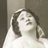
United States Premiere
Iphigénie en Tauride {1}
Metropolitan Opera House; 11/25/1916
Debuts: J. Monroe Hewlett, Charles Basing, A.T. Hewlett, Marie Sundelius
Review |
[Met Performance] CID:64140
La Bohème {148}
Academy of Music, New York, Brooklyn; 11/25/1916
|
[Met Concert/Gala] CID:64150
Second Sunday Concert
Metropolitan Opera House; 11/26/1916
|
[Met Performance] CID:64160
Boris Godunov {28}
Metropolitan Opera House; 11/27/1916
|
[Met Performance] CID:64170
Samson et Dalila {11}
Academy of Music, Philadelphia, Pennsylvania; 11/28/1916
|
[Met Performance] CID:64180
La Traviata {100}
Metropolitan Opera House; 11/29/1916
Debut: Fernando Carpi |
[Met Performance] CID:64190
Parsifal {82}
Metropolitan Opera House; 11/30/1916
|
[Met Performance] CID:64200
La Bohème {149}
Metropolitan Opera House; 11/30/1916
|
[Met Performance] CID:64210
Lohengrin {301}
Metropolitan Opera House; 12/1/1916
Debut: Phyllis White |
[Met Performance] CID:64220
Les Pêcheurs de Perles {3}
Metropolitan Opera House; 12/2/1916
|
[Met Performance] CID:64230
Cavalleria Rusticana {168}
Pagliacci {172}
Academy of Music, New York, Brooklyn; 12/2/1916
|
[Met Concert/Gala] CID:64240
Third Sunday Concert
Metropolitan Opera House; 12/3/1916
|
[Met Performance] CID:64250
Tosca {119}
Metropolitan Opera House; 12/4/1916
Debut: Claudia Muzio
Reviews |
[Met Performance] CID:64260
Lohengrin {302}
Academy of Music, Philadelphia, Pennsylvania; 12/5/1916
|
[Met Performance] CID:64270
Prince Igor {8}
Metropolitan Opera House; 12/6/1916
|
[Met Performance] CID:64280
Der Rosenkavalier {26}
Metropolitan Opera House; 12/7/1916
|
[Met Performance] CID:64290
Aida {217}
Metropolitan Opera House; 12/8/1916
|
[Met Performance] CID:64300
Fidelio {46}
Metropolitan Opera House; 12/9/1916
|
[Met Performance] CID:64310
Manon Lescaut {36}
Metropolitan Opera House; 12/9/1916
|
[Met Concert/Gala] CID:64320
Fourth Sunday Concert
Metropolitan Opera House; 12/10/1916
|
[Met Performance] CID:64330
Iphigénie en Tauride {2}
Metropolitan Opera House; 12/11/1916
|
[Met Performance] CID:64340
Il Trovatore {118}
Academy of Music, Philadelphia, Pennsylvania; 12/12/1916
|
[Met Performance] CID:64350
Les Pêcheurs de Perles {4}
Metropolitan Opera House; 12/13/1916
|
[Met Performance] CID:64360
Lohengrin {303}
Metropolitan Opera House; 12/14/1916
|
[Met Performance] CID:64370
Cavalleria Rusticana {169}
Pagliacci {173}
Metropolitan Opera House; 12/15/1916
|
[Met Performance] CID:64380
La Bohème {150}
Metropolitan Opera House; 12/16/1916
|
[Met Performance] CID:64390
Lohengrin {304}
Academy of Music, New York, Brooklyn; 12/16/1916
|
[Met Concert/Gala] CID:64400
Fifth Sunday Concert
Metropolitan Opera House; 12/17/1916
|
[Met Performance] CID:64410
Il Trovatore {119}
Metropolitan Opera House; 12/18/1916
|
[Met Performance] CID:64420
Martha {50}
Academy of Music, Philadelphia, Pennsylvania; 12/19/1916
Debut: Lavinia Puglioli |
[Met Performance] CID:64430
Fidelio {47}
Metropolitan Opera House; 12/20/1916
Debut: Paul Eisler |
[Met Performance] CID:64440
Samson et Dalila {12}
Metropolitan Opera House; 12/21/1916
|
[Met Performance] CID:64450
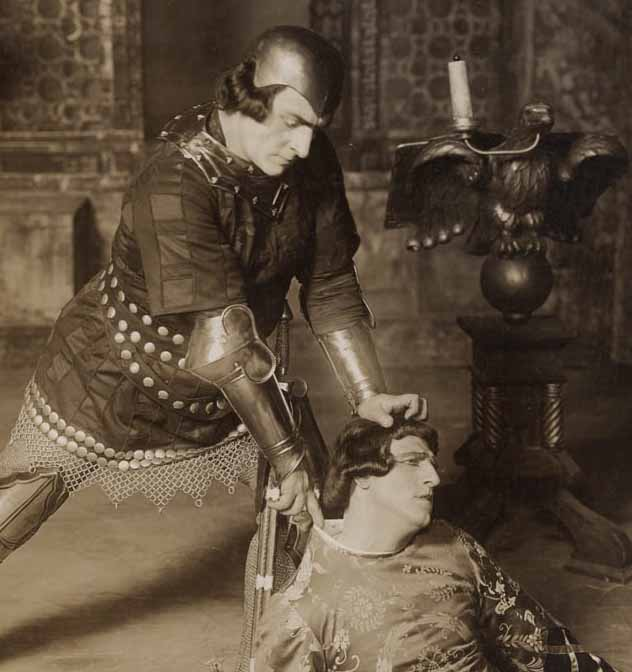
United States Premiere
Francesca da Rimini {1}
Metropolitan Opera House; 12/22/1916
Debuts: Queenie Smith, Pieretto Bianco
Review |
[Met Performance] CID:64460
Tristan und Isolde {139}
Metropolitan Opera House; 12/23/1916
|
[Met Performance] CID:64470
Tosca {120}
Academy of Music, New York, Brooklyn; 12/23/1916
|
[Met Concert/Gala] CID:64480
Sixth Sunday Concert
Metropolitan Opera House; 12/24/1916
|
[Met Performance] CID:64490
Hänsel und Gretel {92}
Metropolitan Opera House; 12/25/1916
|
[Met Performance] CID:64500
Martha {51}
Metropolitan Opera House; 12/25/1916
Review |
[Met Performance] CID:64510
Siegfried {119}
Academy of Music, Philadelphia, Pennsylvania; 12/26/1916
|
[Met Performance] CID:64520
Tosca {121}
Metropolitan Opera House; 12/27/1916
|
[Met Performance] CID:64530
Francesca da Rimini {2}
Metropolitan Opera House; 12/28/1916
|
[Met Performance] CID:64540
Iphigénie en Tauride {3}
Metropolitan Opera House; 12/29/1916
|
[Met Performance] CID:64550
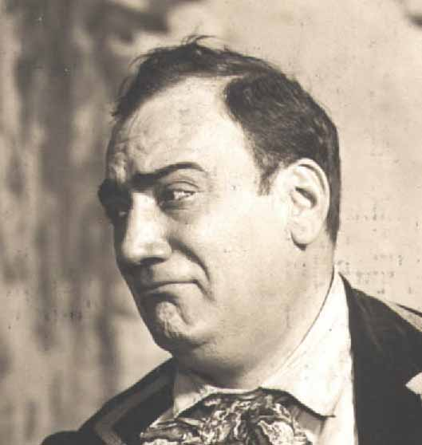
L'Elisir d'Amore {16}
Metropolitan Opera House; 12/30/1916
Review |
[Met Performance] CID:64560
Lohengrin {305}
Metropolitan Opera House; 12/30/1916
|
[Met Concert/Gala] CID:64570
Seventh Sunday Concert
Metropolitan Opera House; 12/31/1916
|
[Met Performance] CID:64580
Parsifal {83}
Metropolitan Opera House; 01/1/1917
|
[Met Performance] CID:64590
Madama Butterfly {110}
Metropolitan Opera House; 01/1/1917
|
[Met Performance] CID:64600
Aida {218}
Academy of Music, New York, Brooklyn; 01/2/1917
|
[Met Performance] CID:64610
Il Trovatore {120}
Metropolitan Opera House; 01/3/1917
|
[Met Performance] CID:64620
Das Rheingold {58}
Metropolitan Opera House; 01/4/1917
Intermission between Scenes 2 and 3. |
[Met Performance] CID:64630
Carmen {227}
Metropolitan Opera House; 01/5/1917
|
[Met Performance] CID:64640
La Traviata {101}
Metropolitan Opera House; 01/6/1917
|
[Met Performance] CID:64650
La Bohème {151}
Metropolitan Opera House; 01/6/1917
|
[Met Concert/Gala] CID:64660
Eighth Sunday Concert
Metropolitan Opera House; 01/7/1917
|
[Met Performance] CID:64670
Der Rosenkavalier {27}
Metropolitan Opera House; 01/8/1917
|
[Met Performance] CID:64680
Carmen {228}
Academy of Music, Philadelphia, Pennsylvania; 01/9/1917
|
[Met Performance] CID:64690
L'Elisir d'Amore {17}
Metropolitan Opera House; 01/10/1917
|
[Met Performance] CID:64700
Tosca {122}
Metropolitan Opera House; 01/11/1917
|
[Met Performance] CID:64710
Boris Godunov {29}
Metropolitan Opera House; 01/12/1917
|
[Met Performance] CID:64720
Die Zauberflöte {60}
Metropolitan Opera House; 01/13/1917
|
[Met Performance] CID:64730
Samson et Dalila {13}
Metropolitan Opera House; 01/13/1917
|
[Met Concert/Gala] CID:64740
Ninth Sunday Concert
Metropolitan Opera House; 01/14/1917
|
[Met Performance] CID:64750
Francesca da Rimini {3}
Metropolitan Opera House; 01/15/1917
|
[Met Performance] CID:64760
Carmen {229}
Academy of Music, New York, Brooklyn; 01/16/1917
|
[Met Performance] CID:64770
Die Meistersinger von Nürnberg {138}
Metropolitan Opera House; 01/17/1917
|
[Met Performance] CID:64780
Cavalleria Rusticana {170}
Pagliacci {174}
Metropolitan Opera House; 01/18/1917
|
[Met Performance] CID:64790
Fidelio {48}
Metropolitan Opera House; 01/19/1917
|
[Met Performance] CID:64800
Carmen {230}
Metropolitan Opera House; 01/20/1917
|
[Met Performance] CID:64810
Siegfried {120}
Metropolitan Opera House; 01/20/1917
|
[Met Concert/Gala] CID:64820
Tenth Sunday Concert
Metropolitan Opera House; 01/21/1917
|
[Met Performance] CID:64830
Lohengrin {306}
Metropolitan Opera House; 01/22/1917
|
[Met Performance] CID:64840
La Bohème {152}
Academy of Music, Philadelphia, Pennsylvania; 01/23/1917
|
[Met Performance] CID:64850
Le Nozze di Figaro {49}
Metropolitan Opera House; 01/24/1917
Debut: Giuseppina Mazza |
[Met Performance] CID:64860
Tristan und Isolde {140}
Metropolitan Opera House; 01/25/1917
|
[Met Performance] CID:64870
Martha {52}
Metropolitan Opera House; 01/26/1917
|
[Met Performance] CID:64880
Madama Butterfly {111}
Metropolitan Opera House; 01/27/1917
|
[Met Performance] CID:64890
Aida {219}
Metropolitan Opera House; 01/27/1917
|
[Met Concert/Gala] CID:64900
Eleventh Sunday Concert
Metropolitan Opera House; 01/28/1917
|
[Met Performance] CID:64910
L'Elisir d'Amore {18}
Metropolitan Opera House; 01/29/1917
|
[Met Performance] CID:64920
Tristan und Isolde {141}
Academy of Music, New York, Brooklyn; 01/30/1917
|
[Met Performance] CID:64930
Francesca da Rimini {4}
Metropolitan Opera House; 01/31/1917
|
[Met Performance] CID:64940
Das Rheingold {59}
Ring Cycle [45]
Metropolitan Opera House; 02/1/1917
Without intermission. |
[Met Performance] CID:64950
Carmen {231}
Metropolitan Opera House; 02/1/1917
|
[Met Performance] CID:64960
Il Trovatore {121}
Metropolitan Opera House; 02/2/1917
|
[Met Performance] CID:64970
Le Nozze di Figaro {50}
Metropolitan Opera House; 02/3/1917
|
[Met Performance] CID:64980
Die Zauberflöte {61}
Metropolitan Opera House; 02/3/1917
|
[Met Concert/Gala] CID:64990
Twelfth Sunday Concert
Metropolitan Opera House; 02/4/1917
|
[Met Performance] CID:65000
La Bohème {153}
Metropolitan Opera House; 02/5/1917
|
[Met Performance] CID:65010
Aida {220}
Academy of Music, Philadelphia, Pennsylvania; 02/6/1917
|
[Met Performance] CID:65020
Rigoletto {89}
Metropolitan Opera House; 02/7/1917
|
[Met Performance] CID:65030
Die Walküre {181}
Ring Cycle [45]
Metropolitan Opera House; 02/8/1917
|
[Met Performance] CID:65040
Madama Butterfly {112}
Metropolitan Opera House; 02/8/1917
|
[Met Performance] CID:65050
Die Meistersinger von Nürnberg {139}
Metropolitan Opera House; 02/9/1917
|
[Met Performance] CID:65060
Samson et Dalila {14}
Metropolitan Opera House; 02/10/1917
|
[Met Performance] CID:65070
Cavalleria Rusticana {171}
Pagliacci {175}
Metropolitan Opera House; 02/10/1917
|
[Met Concert/Gala] CID:65080
Thirteenth Sunday Concert
Metropolitan Opera House; 02/11/1917
|
[Met Performance] CID:65090
Aida {221}
Metropolitan Opera House; 02/12/1917
|
[Met Performance] CID:65100
Le Nozze di Figaro {51}
Metropolitan Opera House; 02/12/1917
|
[Met Performance] CID:65110
Lucia di Lammermoor {90}
Academy of Music, New York, Brooklyn; 02/13/1917
|
[Met Performance] CID:65120
Iphigénie en Tauride {4}
Metropolitan Opera House; 02/14/1917
|
[Met Performance] CID:65130
L'Elisir d'Amore {19}
Metropolitan Opera House; 02/15/1917
|
[Met Performance] CID:65140
Siegfried {121}
Ring Cycle [45]
Metropolitan Opera House; 02/16/1917
|
[Met Performance] CID:65150
Metropolitan Opera Premiere
Thaïs {1}
Metropolitan Opera House; 02/16/1917
Review |
[Met Performance] CID:65160
Lohengrin {307}
Metropolitan Opera House; 02/17/1917
|
[Met Performance] CID:65170
Manon Lescaut {37}
Metropolitan Opera House; 02/17/1917
|
[Met Concert/Gala] CID:65180
Fourteenth Sunday Concert
Metropolitan Opera House; 02/18/1917
|
[Met Performance] CID:65190
Rigoletto {90}
Metropolitan Opera House; 02/19/1917
|
[Met Performance] CID:65200
Francesca da Rimini {5}
Academy of Music, Philadelphia, Pennsylvania; 02/20/1917
|
[Met Performance] CID:65210
Carmen {232}
Metropolitan Opera House; 02/21/1917
|
[Met Performance] CID:65220
Götterdämmerung {88}
Ring Cycle [45]
Metropolitan Opera House; 02/22/1917
|
[Met Performance] CID:65230
Il Barbiere di Siviglia {91}
Metropolitan Opera House; 02/22/1917
Review |
[Met Performance] CID:65240
Die Walküre {182}
Metropolitan Opera House; 02/23/1917
|
[Met Performance] CID:65250
Tosca {123}
Metropolitan Opera House; 02/24/1917
|
[Met Performance] CID:65260
Boris Godunov {30}
Metropolitan Opera House; 02/24/1917
|
[Met Concert/Gala] CID:65270
Fifteenth Sunday Concert
Metropolitan Opera House; 02/25/1917
|
[Met Performance] CID:65280
Thaïs {2}
Metropolitan Opera House; 02/26/1917
|
[Met Performance] CID:65290
Martha {53}
Academy of Music, New York, Brooklyn; 02/27/1917
|
[Met Performance] CID:65300
Lucia di Lammermoor {91}
Metropolitan Opera House; 02/28/1917
|
[Met Performance] CID:65310
Die Meistersinger von Nürnberg {140}
Metropolitan Opera House; 03/1/1917
|
[Met Performance] CID:65320
Madame Sans-Gêne {14}
Metropolitan Opera House; 03/2/1917
|
[Met Performance] CID:65330
Aida {222}
Metropolitan Opera House; 03/3/1917
|
[Met Performance] CID:65340
Siegfried {122}
Metropolitan Opera House; 03/3/1917
|
[Met Concert/Gala] CID:65350
Sixteenth Sunday Concert
Metropolitan Opera House; 03/4/1917
|
[Met Performance] CID:65360
Tristan und Isolde {142}
Metropolitan Opera House; 03/5/1917
|
[Met Performance] CID:65370
Rigoletto {91}
Academy of Music, Philadelphia, Pennsylvania; 03/6/1917
|
[Met Performance] CID:65380
Thaïs {3}
Metropolitan Opera House; 03/7/1917
|
[Met Performance] CID:65390
World Premiere
The Canterbury Pilgrims {1}
Metropolitan Opera House; 03/8/1917
Debuts: Richard Ordynski, Homer F. Emens, Hildreth Meière
Review |
[Met Performance] CID:65400
Carmen {233}
Metropolitan Opera House; 03/9/1917
|
[Met Performance] CID:65410
L'Elisir d'Amore {20}
Metropolitan Opera House; 03/9/1917
|
[Met Performance] CID:65420
Francesca da Rimini {6}
Metropolitan Opera House; 03/10/1917
|
[Met Performance] CID:65430
Lucia di Lammermoor {92}
Metropolitan Opera House; 03/10/1917
|
[Met Concert/Gala] CID:65440
Seventeenth Sunday Concert
Metropolitan Opera House; 03/11/1917
|
[Met Performance] CID:65450
Samson et Dalila {15}
Metropolitan Opera House; 03/12/1917
|
[Met Performance] CID:65460
Thaïs {4}
Academy of Music, New York, Brooklyn; 03/13/1917
|
[Met Performance] CID:65470
Die Walküre {183}
Metropolitan Opera House; 03/14/1917
|
[Met Performance] CID:65480
Rigoletto {92}
Metropolitan Opera House; 03/15/1917
|
[Met Performance] CID:65490
Madame Sans-Gêne {15}
Metropolitan Opera House; 03/15/1917
|
[Met Performance] CID:65500
The Canterbury Pilgrims {2}
Metropolitan Opera House; 03/16/1917
|
[Met Performance] CID:65510
Siegfried {123}
Metropolitan Opera House; 03/17/1917
|
[Met Performance] CID:65520
Il Trovatore {122}
Metropolitan Opera House; 03/17/1917
|
[Met Concert/Gala] CID:65530
Grand Benefit Concert
Metropolitan Opera House; 03/18/1917
|
[Met Performance] CID:65540
Madama Butterfly {113}
Metropolitan Opera House; 03/19/1917
|
[Met Performance] CID:65550
Die Meistersinger von Nürnberg {141}
Metropolitan Opera House; 03/19/1917
|
[Met Performance] CID:65560
The Canterbury Pilgrims {3}
Academy of Music, Philadelphia, Pennsylvania; 03/20/1917
|
[Met Performance] CID:65570
Aida {223}
Metropolitan Opera House; 03/21/1917
|
[Met Performance] CID:65580
Thaïs {5}
Metropolitan Opera House; 03/22/1917
|
[Met Performance] CID:65590
La Bohème {154}
Metropolitan Opera House; 03/23/1917
|
[Met Performance] CID:65600
New production
Lakmé {9}
Metropolitan Opera House; 03/24/1917
Debut: Sante Mandelli |
[Met Performance] CID:65610
Die Walküre {184}
Metropolitan Opera House; 03/24/1917
|
[Met Concert/Gala] CID:65620
Nineteenth Sunday Concert
Metropolitan Opera House; 03/25/1917
|
[Met Performance] CID:65630
Carmen {234}
Metropolitan Opera House; 03/26/1917
|
[Met Performance] CID:65640
Die Walküre {185}
Academy of Music, Philadelphia, Pennsylvania; 03/27/1917
|
[Met Performance] CID:65650
The Canterbury Pilgrims {4}
Metropolitan Opera House; 03/28/1917
|
[Met Concert/Gala] CID:65660
Special Matinee for the Emergency Fund
Metropolitan Opera House; 03/29/1917
|
[Met Performance] CID:65670
Siegfried {124}
Metropolitan Opera House; 03/29/1917
|
[Met Performance] CID:65680
Il Barbiere di Siviglia {92}
Metropolitan Opera House; 03/30/1917
|
[Met Performance] CID:65690
L'Oracolo {8}
Pagliacci {176}
Metropolitan Opera House; 03/31/1917
|
[Met Performance] CID:65700
Carmen {235}
Metropolitan Opera House; 03/31/1917
|
[Met Concert/Gala] CID:65710
Twentieth Sunday Concert
Metropolitan Opera House; 04/1/1917
|
[Met Performance] CID:65720
The Canterbury Pilgrims {5}
Metropolitan Opera House; 04/2/1917
|
[Met Performance] CID:65730
Tosca {124}
Academy of Music, Philadelphia, Pennsylvania; 04/3/1917
|
[Met Performance] CID:65740
Lakmé {10}
Metropolitan Opera House; 04/4/1917
|
[Met Performance] CID:65750
Aida {224}
Metropolitan Opera House; 04/5/1917
|
[Met Performance] CID:65760
Parsifal {84}
Metropolitan Opera House; 04/6/1917
|
[Met Performance] CID:65770
Tosca {125}
Metropolitan Opera House; 04/6/1917
|
[Met Performance] CID:65780
Rigoletto {93}
Metropolitan Opera House; 04/7/1917
|
[Met Performance] CID:65790
Die Meistersinger von Nürnberg {142}
Metropolitan Opera House; 04/7/1917
|
[Met Performance] CID:65800
Mors et Vita {1}
Metropolitan Opera House; 04/8/1917
Debut: Count Eugene D' Harcourt |
[Met Performance] CID:65810
Madame Sans-Gêne {16}
Metropolitan Opera House; 04/9/1917
|
[Met Performance] CID:65820
L'Oracolo {9}
Pagliacci {177}
Academy of Music, Philadelphia, Pennsylvania; 04/10/1917
|
[Met Performance] CID:65830
Boris Godunov {31}
Metropolitan Opera House; 04/11/1917
|
[Met Performance] CID:65840
Madama Butterfly {114}
Metropolitan Opera House; 04/12/1917
|
[Met Performance] CID:65850
Martha {54}
Metropolitan Opera House; 04/12/1917
|
[Met Performance] CID:65860
Tristan und Isolde {143}
Metropolitan Opera House; 04/13/1917
|
[Met Performance] CID:65870
The Canterbury Pilgrims {6}
Metropolitan Opera House; 04/14/1917
|
[Met Performance] CID:65880
Il Barbiere di Siviglia {93}
Metropolitan Opera House; 04/14/1917
|
[Met Performance] CID:65890
St. Francis of Assisi {1}
Metropolitan Opera House; 04/15/1917
Debut: Adriano Ariani |
[Met Performance] CID:65900
Lakmé {11}
Metropolitan Opera House; 04/16/1917
|
[Met Performance] CID:65910
Boris Godunov {32}
Academy of Music, Philadelphia, Pennsylvania; 04/17/1917
|
[Met Performance] CID:65920
Carmen {236}
Metropolitan Opera House; 04/18/1917
|
[Met Performance] CID:65930
L'Oracolo {10}
Pagliacci {178}
Metropolitan Opera House; 04/18/1917
|
[Met Performance] CID:65940
Iphigénie en Tauride {5}
Metropolitan Opera House; 04/19/1917
|
[Met Performance] CID:65950
Rigoletto {94}
Metropolitan Opera House; 04/20/1917
|
[Met Performance] CID:65960
Thaïs {6}
Metropolitan Opera House; 04/21/1917
|
[Met Performance] CID:65970
The Canterbury Pilgrims {7}
Metropolitan Opera House; 04/21/1917
|
[Met Performance] CID:65980
L'Elisir d'Amore {21}
Auditorium, Atlanta, Georgia; 04/23/1917
|
[Met Performance] CID:65990
Il Trovatore {123}
Auditorium, Atlanta, Georgia; 04/24/1917
|
[Met Performance] CID:66000
Francesca da Rimini {7}
Auditorium, Atlanta, Georgia; 04/25/1917
|
[Met Performance] CID:66010
Tosca {126}
Auditorium, Atlanta, Georgia; 04/26/1917
|
[Met Performance] CID:66020
Boris Godunov {33}
Auditorium, Atlanta, Georgia; 04/27/1917
|
[Met Performance] CID:66030
Siegfried {125}
Auditorium, Atlanta, Georgia; 04/28/1917
|
[Met Performance] CID:66040
Rigoletto {95}
Auditorium, Atlanta, Georgia; 4/28/1917
|
[Met Performance] CID:67000
Aida {225}
Metropolitan Opera House; 11/12/1917
Opening Night {33}
Giulio Gatti-Casazza, General Manager
Debuts: José Mardones, Roberto Moranzoni |
[Met Performance] CID:67010

New production
Tosca {127}
Academy of Music, Brooklyn, New York; 11/13/1917
Debut: Louis D'Angelo
Farrar sang The Star Spangled Banner before Act II |
[Met Performance] CID:67020
Boris Godunov {34}
Metropolitan Opera House; 11/14/1917
|
[Met Performance] CID:67030
L'Elisir d'Amore {22}
Metropolitan Opera House; 11/15/1917
|
[Met Performance] CID:67040
La Bohème {155}
Metropolitan Opera House; 11/16/1917
Debut: Ruth Miller
Review |
[Met Performance] CID:67050
New production
Faust {294}
Metropolitan Opera House; 11/17/1917
Debuts: Thomas Chalmers, Pierre Monteux, Joseph Urban |
[Met Performance] CID:67060
La Traviata {102}
Metropolitan Opera House; 11/17/1917
|
[Met Concert/Gala] CID:67070
First Sunday Concert
Metropolitan Opera House; 11/18/1917
|
[Met Performance] CID:67080
Tosca {128}
Metropolitan Opera House; 11/19/1917
|
[Met Performance] CID:67090
Aida {226}
Academy of Music, Philadelphia, Pennsylvania; 11/20/1917
|
[Met Performance] CID:67100
Martha {55}
Metropolitan Opera House; 11/21/1917
|
[Met Performance] CID:67110
Madama Butterfly {115}
Metropolitan Opera House; 11/22/1917
|
[Met Performance] CID:67120
Samson et Dalila {16}
Metropolitan Opera House; 11/23/1917
Debut: Julia Claussen |
[Met Performance] CID:67130
Francesca da Rimini {8}
Metropolitan Opera House; 11/24/1917
|
[Met Performance] CID:67140
Le Nozze di Figaro {52}
Academy of Music, Brooklyn, New York; 11/24/1917
Debut: Helene Kanders |
[Met Concert/Gala] CID:67150
Second Sunday Concert
Metropolitan Opera House; 11/25/1917
|
[Met Performance] CID:67160
Faust {295}
Metropolitan Opera House; 11/26/1917
|
[Met Performance] CID:67170
Manon Lescaut {38}
Academy of Music, Philadelphia, Pennsylvania; 11/27/1917
|
[Met Performance] CID:67180
La Traviata {103}
Metropolitan Opera House; 11/28/1917
|
[Met Performance] CID:67190
Carmen {237}
Metropolitan Opera House; 11/29/1917
Debut: May Peterson |
[Met Performance] CID:67200
La Bohème {156}
Metropolitan Opera House; 11/29/1917
|
[Met Performance] CID:67210
Prince Igor {9}
Metropolitan Opera House; 11/30/1917
|
[Met Performance] CID:67220
L'Elisir d'Amore {23}
Metropolitan Opera House; 12/1/1917
|
[Met Performance] CID:67230
Il Trovatore {124}
Metropolitan Opera House; 12/1/1917
Debut: Morgan Kingston |
[Met Concert/Gala] CID:67240
Third Sunday Concert
Metropolitan Opera House; 12/2/1917
|
[Met Performance] CID:67250
Boris Godunov {35}
Metropolitan Opera House; 12/3/1917
|
[Met Performance] CID:67260
Faust {296}
Academy of Music, Philadelphia, Pennsylvania; 12/4/1917
|
[Met Performance] CID:67270
Manon Lescaut {39}
Metropolitan Opera House; 12/5/1917
|
[Met Performance] CID:67280
Aida {227}
Metropolitan Opera House; 12/6/1917
|
[Met Performance] CID:67290
Cavalleria Rusticana {172}
Pagliacci {179}
Metropolitan Opera House; 12/7/1917
Debut: Florence Easton |
[Met Performance] CID:67300
La Bohème {157}
Metropolitan Opera House; 12/8/1917
|
[Met Performance] CID:67310
Il Trovatore {125}
Academy of Music, Brooklyn, New York; 12/8/1917
|
[Met Concert/Gala] CID:67320
Fourth Sunday Concert
Metropolitan Opera House; 12/9/1917
|
[Met Performance] CID:67330
Carmen {238}
Metropolitan Opera House; 12/10/1917
|
[Met Performance] CID:67340
New production
La Fille du Régiment {16}
Academy of Music, Philadelphia, Pennsylvania; 12/11/1917
|
[Met Performance] CID:67350
Faust {297}
Metropolitan Opera House; 12/12/1917
|
[Met Performance] CID:67360
La Traviata {104}
Metropolitan Opera House; 12/13/1917
|
[Met Performance] CID:67370
Aida {228}
Metropolitan Opera House; 12/14/1917
|
[Met Performance] CID:67380
Prince Igor {10}
Metropolitan Opera House; 12/15/1917
|
[Met Performance] CID:67390
Tosca {129}
Metropolitan Opera House; 12/15/1917
|
[Met Concert/Gala] CID:67400
Fifth Sunday Concert
Metropolitan Opera House; 12/16/1917
|
[Met Performance] CID:67410
La Fille du Régiment {17}
Metropolitan Opera House; 12/17/1917
Review |
[Met Performance] CID:67420
Cavalleria Rusticana {173}
Pagliacci {180}
Academy of Music, Philadelphia, Pennsylvania; 12/18/1917
|
[Met Performance] CID:67430
United States Premiere
Mârouf {1}
Metropolitan Opera House; 12/19/1917
Ernest M. Gros, Livingston Platt
Review |
[Met Performance] CID:67440
Carmen {239}
Metropolitan Opera House; 12/20/1917
|
[Met Performance] CID:67450
Boris Godunov {36}
Metropolitan Opera House; 12/21/1917
|
[Met Performance] CID:67460
Le Nozze di Figaro {53}
Metropolitan Opera House; 12/22/1917
|
[Met Performance] CID:67470
L'Oracolo {11}
Pagliacci {181}
Metropolitan Opera House; 12/22/1917
|
[Met Concert/Gala] CID:67480
Sixth Sunday Concert
Metropolitan Opera House; 12/23/1917
|
[Met Performance] CID:67490
Samson et Dalila {17}
Metropolitan Opera House; 12/24/1917
|
[Met Performance] CID:67500
La Bohème {158}
Metropolitan Opera House; 12/25/1917
|
[Met Performance] CID:67510
La Fille du Régiment {18}
Academy of Music, Brooklyn, New York; 12/25/1917
|
[Met Performance] CID:67520
La Fille du Régiment {19}
Metropolitan Opera House; 12/26/1917
|
[Met Performance] CID:67530
Francesca da Rimini {9}
Metropolitan Opera House; 12/27/1917
|
[Met Performance] CID:67540
Faust {298}
Metropolitan Opera House; 12/28/1917
|
[Met Performance] CID:67550
Rigoletto {96}
Metropolitan Opera House; 12/29/1917
|
[Met Performance] CID:67560
Boris Godunov {37}
Metropolitan Opera House; 12/29/1917
|
[Met Concert/Gala] CID:67570
Seventh Sunday Concert
Metropolitan Opera House; 12/30/1917
|
[Met Performance] CID:67580
Mârouf {2}
Metropolitan Opera House; 12/31/1917
|
[Met Performance] CID:67590
Madama Butterfly {116}
Metropolitan Opera House; 01/1/1918
|
[Met Performance] CID:67600
Aida {229}
Academy of Music, Brooklyn, New York; 01/1/1918
|
[Met Performance] CID:67610
L'Elisir d'Amore {24}
Metropolitan Opera House; 01/2/1918
|
[Met Performance] CID:67620
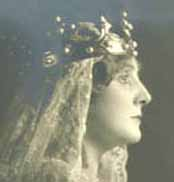
United States Stage Premiere
Saint Elisabeth {1}
Metropolitan Opera House; 01/3/1918
Debut: Margarete Belleri
Reviews |
[Met Performance] CID:67630
Manon Lescaut {40}
Metropolitan Opera House; 01/4/1918
|
[Met Performance] CID:67640
Thaïs {7}
Metropolitan Opera House; 01/5/1918
Debut: Rafaelo Díaz
Review |
[Met Performance] CID:67650
La Fille du Régiment {20}
Metropolitan Opera House; 01/5/1918
|
[Met Concert/Gala] CID:67660
Eighth Sunday Concert
Metropolitan Opera House; 01/6/1918
|
[Met Performance] CID:67670
Martha {56}
Metropolitan Opera House; 01/7/1918
|
[Met Performance] CID:67680
Saint Elisabeth {2}
Academy of Music, Philadelphia, Pennsylvania; 01/8/1918
|
[Met Performance] CID:67690
Aida {230}
Metropolitan Opera House; 01/9/1918
|
[Met Performance] CID:67700
Mârouf {3}
Metropolitan Opera House; 01/10/1918
|
[Met Performance] CID:67710
Saint Elisabeth {3}
Metropolitan Opera House; 01/11/1918
|
[Met Performance] CID:67720
United States Premiere
Lodoletta {1}
Metropolitan Opera House; 01/12/1918
Debuts: Cecil Arden, Isador Swee
Review |
[Met Performance] CID:67730
La Bohème {159}
Metropolitan Opera House; 01/12/1918
|
[Met Concert/Gala] CID:67740
Ninth Sunday Concert
Metropolitan Opera House; 01/13/1918
|
[Met Performance] CID:67750
Francesca da Rimini {10}
Metropolitan Opera House; 01/14/1918
|
[Met Performance] CID:67760
Rigoletto {97}
Academy of Music, Brooklyn, New York; 01/15/1918
Debut: Maria Conde |
[Met Performance] CID:67770
Thaïs {8}
Metropolitan Opera House; 01/16/1918
|
[Met Performance] CID:67780
L'Oracolo {12}
Pagliacci {182}
Metropolitan Opera House; 01/17/1918
|
[Met Performance] CID:67790
La Fille du Régiment {21}
Metropolitan Opera House; 01/18/1918
|
[Met Performance] CID:67800
Boris Godunov {38}
Metropolitan Opera House; 01/19/1918
|
[Met Performance] CID:67810
Faust {299}
Metropolitan Opera House; 01/19/1918
|
[Met Concert/Gala] CID:67820
Tenth Sunday Concert
Metropolitan Opera House; 01/20/1918
|
[Met Performance] CID:67830
Lodoletta {2}
Metropolitan Opera House; 01/21/1918
|
[Met Performance] CID:67840
Samson et Dalila {18}
Metropolitan Opera House; 01/23/1918
|
[Met Performance] CID:67850
Il Trovatore {126}
Metropolitan Opera House; 01/24/1918
|
[Met Performance] CID:67860
Madama Butterfly {117}
Metropolitan Opera House; 01/25/1918
|
[Met Performance] CID:67870
L'Oracolo {13}
Pagliacci {183}
Metropolitan Opera House; 01/26/1918
|
[Met Performance] CID:67880
Aida {231}
Metropolitan Opera House; 01/26/1918
|
[Met Concert/Gala] CID:67890
Eleventh Sunday Concert
Metropolitan Opera House; 01/27/1918
|
[Met Performance] CID:67900
L'Elisir d'Amore {25}
Metropolitan Opera House; 01/28/1918
|
[Met Performance] CID:67910
Cavalleria Rusticana {174}
Pagliacci {184}
Academy of Music, Brooklyn, New York; 01/29/1918
|
[Met Performance] CID:67920
Carmen {240}
Metropolitan Opera House; 01/30/1918
|
[Met Performance] CID:67930
Rigoletto {98}
Metropolitan Opera House; 01/31/1918
Debut: Hipolito Lazaro
Reviews |
[Met Performance] CID:67940
Lodoletta {3}
Metropolitan Opera House; 02/1/1918
|
[Met Performance] CID:67950
La Fille du Régiment {22}
Metropolitan Opera House; 02/2/1918
|
[Met Performance] CID:67960
Faust {300}
Metropolitan Opera House; 02/2/1918
|
[Met Concert/Gala] CID:67970
Twelfth Sunday Concert
Metropolitan Opera House; 02/3/1918
|
[Met Performance] CID:67980
Madama Butterfly {118}
Metropolitan Opera House; 02/4/1918
|
[Met Performance] CID:67990
La Traviata {105}
Academy of Music, Philadelphia, Pennsylvania; 02/5/1918
|
[Met Performance] CID:68000
Francesca da Rimini {11}
Metropolitan Opera House; 02/6/1918
|
[Met Performance] CID:68010

New production
Le Prophète {52}
Metropolitan Opera House; 02/7/1918
Review |
[Met Performance] CID:68020
Tosca {130}
Metropolitan Opera House; 02/8/1918
|
[Met Performance] CID:68030
Martha {57}
Metropolitan Opera House; 02/9/1918
|
[Met Performance] CID:68040
Saint Elisabeth {4}
Metropolitan Opera House; 02/9/1918
|
[Met Concert/Gala] CID:68050
Thirteenth Sunday Concert
Metropolitan Opera House; 02/10/1918
|
[Met Performance] CID:68060
Aida {232}
Metropolitan Opera House; 02/11/1918
|
[Met Performance] CID:68070
Le Nozze di Figaro {54}
Metropolitan Opera House; 02/11/1918
|
[Met Performance] CID:68080
La Bohème {160}
Academy of Music, Brooklyn, New York; 02/12/1918
|
[Met Performance] CID:68090
Rigoletto {99}
Metropolitan Opera House; 02/13/1918
|
[Met Performance] CID:68100
Thaïs {9}
Metropolitan Opera House; 02/14/1918
|
[Met Performance] CID:68110
Le Prophète {53}
Metropolitan Opera House; 02/15/1918
|
[Met Performance] CID:68120
Mârouf {4}
Metropolitan Opera House; 02/16/1918
|
[Met Performance] CID:68130
Manon Lescaut {41}
Metropolitan Opera House; 02/16/1918
|
[Met Concert/Gala] CID:68140
Fourteenth Sunday Concert
Metropolitan Opera House; 02/17/1918
|
[Met Performance] CID:68150
New production
I Puritani {2}
Metropolitan Opera House; 02/18/1918
Review |
[Met Performance] CID:68160
Lodoletta {4}
Academy of Music, Philadelphia, Pennsylvania; 02/19/1918
|
[Met Performance] CID:68170
Tosca {131}
Metropolitan Opera House; 02/20/1918
Review |
[Met Performance] CID:68180
Lodoletta {5}
Metropolitan Opera House; 02/21/1918
|
[Met Performance] CID:68190
Carmen {241}
Metropolitan Opera House; 02/22/1918
|
[Met Performance] CID:68200
Il Barbiere di Siviglia {94}
Metropolitan Opera House; 02/22/1918
|
[Met Performance] CID:68210
Saint Elisabeth {5}
Metropolitan Opera House; 02/23/1918
|
[Met Performance] CID:68220
Rigoletto {100}
Metropolitan Opera House; 02/23/1918
|
[Met Concert/Gala] CID:68230
Fifteenth Sunday Concert
Metropolitan Opera House; 02/24/1918
|
[Met Performance] CID:68240
Il Trovatore {127}
Metropolitan Opera House; 02/25/1918
|
[Met Performance] CID:68250
Thaïs {10}
Academy of Music, Brooklyn, New York; 02/26/1918
|
[Met Performance] CID:68260
Le Prophète {54}
Metropolitan Opera House; 02/27/1918
|
[Met Performance] CID:68270
I Puritani {3}
Metropolitan Opera House; 02/28/1918
|
[Met Performance] CID:68280
Martha {58}
Metropolitan Opera House; 03/1/1918
|
[Met Performance] CID:68290
Madame Sans-Gêne {17}
Metropolitan Opera House; 03/2/1918
Review |
[Met Performance] CID:68300
Mârouf {5}
Metropolitan Opera House; 03/2/1918
|
[Met Concert/Gala] CID:68310
Sixteenth Sunday Concert
Metropolitan Opera House; 03/3/1918
|
[Met Performance] CID:68320
Manon Lescaut {42}
Metropolitan Opera House; 03/4/1918
|
[Met Performance] CID:68330
Madama Butterfly {119}
Academy of Music, Philadelphia, Pennsylvania; 03/5/1918
|
[Met Performance] CID:68340


United States Premiere (Le Coq d'Or)
Cavalleria Rusticana {175}
Le Coq d'Or {1}
Metropolitan Opera House; 03/6/1918
Debuts: Adolph Bolm, Marshall Hall, Vincenzo Ioucelli, Willy Pogany |
[Met Performance] CID:68350
Samson et Dalila {19}
Metropolitan Opera House; 03/7/1918
|
[Met Performance] CID:68360
Carmen {242}
Metropolitan Opera House; 03/8/1918
|
[Met Performance] CID:68370
Aida {233}
Metropolitan Opera House; 03/9/1918
|
[Met Performance] CID:68380
I Puritani {4}
Academy of Music, Brooklyn, New York; 03/9/1918
|
[Met Concert/Gala] CID:68390
Seventeenth Sunday Concert
Metropolitan Opera House; 03/10/1918
|
[Met Performance] CID:68400
Thaïs {11}
Metropolitan Opera House; 03/11/1918
|
[Met Performance] CID:68410
Rigoletto {101}
Academy of Music, Philadelphia, Pennsylvania; 03/12/1918
|
[Met Performance] CID:68420
Saint Elisabeth {6}
Metropolitan Opera House; 03/13/1918
|
[Met Performance] CID:68430
L'Amore dei Tre Re {13}
Metropolitan Opera House; 03/14/1918
|
[Met Performance] CID:68440
Madama Butterfly {120}
Metropolitan Opera House; 03/15/1918
|
[Met Performance] CID:68450
Cavalleria Rusticana {176}
Le Coq d'Or {2}
Metropolitan Opera House; 03/15/1918
|
[Met Performance] CID:68460
Le Prophète {55}
Metropolitan Opera House; 03/16/1918
|
[Met Performance] CID:68470
Il Barbiere di Siviglia {95}
Metropolitan Opera House; 03/16/1918
|
[Met Concert/Gala] CID:68480
Eighteenth Sunday Concert
Metropolitan Opera House; 03/17/1918
|
[Met Performance] CID:68490
Rigoletto {102}
Metropolitan Opera House; 03/18/1918
|
[Met Performance] CID:68500
L'Amore dei Tre Re {14}
Academy of Music, Philadelphia, Pennsylvania; 03/19/1918
|
[Met Performance] CID:68510
Madame Sans-Gêne {18}
Metropolitan Opera House; 03/20/1918
|
[Met Concert/Gala] CID:68520
Special Performance
Metropolitan Opera House; 03/21/1918
|
[Met Performance] CID:68530
Boris Godunov {39}
Metropolitan Opera House; 03/21/1918
|
[Met Performance] CID:68540
L'Amore dei Tre Re {15}
Metropolitan Opera House; 03/22/1918
|
[Met Performance] CID:68550


World Premiere (The Robin Woman: Shanewis)
World Premiere (The Dance in Place Congo)
The Robin Woman: Shanewis {1}
The Dance in Place Congo {1}
L'Oracolo {14}
Metropolitan Opera House; 03/23/1918
Debuts: Angela Gorman, Norman Bel Geddes, Ottokar Bartik, Giuseppe Bamboschek (Stage Debut)
Review |
[Met Performance] CID:68560
Carmen {243}
Academy of Music, Brooklyn, New York; 03/23/1918
|
[Met Concert/Gala] CID:68570
Nineteenth Sunday Concert
Metropolitan Opera House; 03/24/1918
|
[Met Performance] CID:68580
Cavalleria Rusticana {177}
Le Coq d'Or {3}
Metropolitan Opera House; 03/25/1918
|
[Met Performance] CID:68590
Carmen {244}
Academy of Music, Philadelphia, Pennsylvania; 03/26/1918
|
[Met Performance] CID:68600
Lodoletta {6}
The Dance in Place Congo {2}
Metropolitan Opera House; 03/27/1918
|
[Met Performance] CID:68610
The Robin Woman: Shanewis {2}
Le Coq d'Or {4}
Metropolitan Opera House; 03/28/1918
|
[Met Performance] CID:68620
Verdi Requiem Mass {19}
Metropolitan Opera House; 03/29/1918
|
[Met Performance] CID:68630
Thaïs {12}
Metropolitan Opera House; 03/29/1918
|
[Met Performance] CID:68640
L'Amore dei Tre Re {16}
Metropolitan Opera House; 03/30/1918
|
[Met Performance] CID:68650
I Puritani {5}
Metropolitan Opera House; 03/30/1918
|
[Met Concert/Gala] CID:68660
Twentieth Sunday Concert
Metropolitan Opera House; 03/31/1918
|
[Met Performance] CID:68670
Le Prophète {56}
Metropolitan Opera House; 04/1/1918
|
[Met Performance] CID:68680
La Bohème {161}
Academy of Music, Philadelphia, Pennsylvania; 04/2/1918
|
[Met Performance] CID:68690
Il Barbiere di Siviglia {96}
Metropolitan Opera House; 04/3/1918
|
[Met Performance] CID:68700
Aida {234}
Metropolitan Opera House; 04/4/1918
|
[Met Performance] CID:68710
Tosca {132}
Metropolitan Opera House; 04/4/1918
|
[Met Performance] CID:68720
The Robin Woman: Shanewis {3}
L'Oracolo {15}
Metropolitan Opera House; 04/5/1918
|
[Met Performance] CID:68730
I Puritani {6}
Metropolitan Opera House; 04/6/1918
|
[Met Performance] CID:68740
L'Amore dei Tre Re {17}
Metropolitan Opera House; 04/6/1918
|
[Met Performance] CID:68750
Verdi Requiem Mass {20}
Metropolitan Opera House; 04/7/1918
|
[Met Performance] CID:68760
Madame Sans-Gêne {19}
Metropolitan Opera House; 04/8/1918
|
[Met Performance] CID:68770
Samson et Dalila {20}
Academy of Music, Philadelphia, Pennsylvania; 04/9/1918
|
[Met Performance] CID:68780
The Robin Woman: Shanewis {4}
Pagliacci {185}
Metropolitan Opera House; 04/10/1918
|
[Met Performance] CID:68790
Madama Butterfly {121}
Metropolitan Opera House; 04/11/1918
|
[Met Performance] CID:68800
Martha {59}
Metropolitan Opera House; 04/11/1918
|
[Met Performance] CID:68810
Mârouf {6}
Metropolitan Opera House; 04/12/1918
|
[Met Performance] CID:68820
Cavalleria Rusticana {178}
Le Coq d'Or {5}
Metropolitan Opera House; 04/13/1918
|
[Met Performance] CID:68830
Thaïs {13}
Metropolitan Opera House; 04/13/1918
|
[Met Concert/Gala] CID:68840
Grand Gala Concert
Metropolitan Opera House; 04/14/1918
|
[Met Performance] CID:68850
The Robin Woman: Shanewis {5}
L'Oracolo {16}
The Dance in Place Congo {3}
Metropolitan Opera House; 04/15/1918
|
[Met Performance] CID:68860
Il Trovatore {128}
Academy of Music, Philadelphia, Pennsylvania; 04/16/1918
|
[Met Performance] CID:68870
L'Oracolo {17}
Le Coq d'Or {6}
Academy of Music, Philadelphia, Pennsylvania; 04/16/1918
|
[Met Performance] CID:68880
Carmen {245}
Metropolitan Opera House; 04/17/1918
|
[Met Performance] CID:68890
L'Amore dei Tre Re {18}
Metropolitan Opera House; 04/17/1918
|
[Met Performance] CID:68900
Il Barbiere di Siviglia {97}
The Dance in Place Congo {4}
Metropolitan Opera House; 04/18/1918
|
[Met Performance] CID:68910
L'Elisir d'Amore {26}
Metropolitan Opera House; 04/19/1918
|
[Met Performance] CID:68920
Tosca {133}
Metropolitan Opera House; 04/20/1918
|
[Met Performance] CID:68930
Cavalleria Rusticana {179}
Le Coq d'Or {7}
Metropolitan Opera House; 04/20/1918
|
[Met Concert/Gala] CID:68940
Twenty-Third and Last Sunday Concert
Metropolitan Opera House; 04/21/1918
|
[Met Performance] CID:68950
Le Prophète {57}
Boston, Massachusetts; 04/22/1918
|
[Met Performance] CID:68960
Tosca {134}
Boston, Massachusetts; 04/23/1918
|
[Met Performance] CID:68970
Aida {235}
Boston, Massachusetts; 04/24/1918
|
[Met Performance] CID:68980
Rigoletto {103}
Boston, Massachusetts; 04/24/1918
|
[Met Performance] CID:68990
L'Oracolo {18}
Pagliacci {186}
Boston, Massachusetts; 04/25/1918
|
[Met Performance] CID:69000
Le Coq d'Or {8}
The Dance in Place Congo {5}
Boston, Massachusetts; 04/26/1918
|
[Met Performance] CID:69010
Madama Butterfly {122}
Boston, Massachusetts; 04/26/1918
|
[Met Performance] CID:69020
Samson et Dalila {21}
Boston, Massachusetts; 04/27/1918
|
[Met Performance] CID:69030
I Puritani {7}
Boston, Massachusetts; 4/27/1918
|
[Met Performance] CID:70000
Samson et Dalila {22}
Metropolitan Opera House; 11/11/1918
Opening Night {34}
Giulio Gatti-Casazza, General Manager
Following Act I, the allied National Anthems were sung by the entire company and audience
Debut: Robert Couzinou
Review |
[Met Performance] CID:70010
Madama Butterfly {123}
Academy of Music, Brooklyn, New York; 11/12/1918
|
[Met Performance] CID:70020
Aida {236}
Metropolitan Opera House; 11/13/1918
Debut: Giulio Crimi
Review |
[Met Performance] CID:70030
La Fille du Régiment {23}
Metropolitan Opera House; 11/14/1918
Review |
[Met Performance] CID:70040
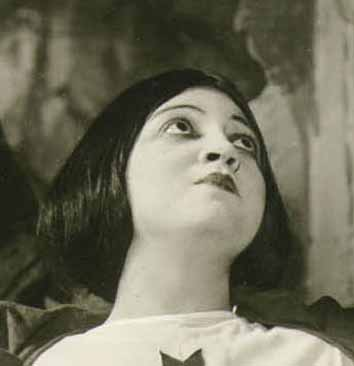
Metropolitan Opera Premiere
La Forza del Destino {1}
Metropolitan Opera House; 11/15/1918
Debuts: Rosa Ponselle, Alice Gentle, Giordano Paltrinieri, Witold Gordon
Reviews / Chapter: Rosa Ponselle |
[Met Performance] CID:70050
Thaïs {14}
Metropolitan Opera House; 11/16/1918
Review |
[Met Performance] CID:70060
Cavalleria Rusticana {180}
Pagliacci {187}
Metropolitan Opera House; 11/16/1918
|
[Met Performance] CID:70070
Tosca {135}
Metropolitan Opera House; 11/18/1918
Review |
[Met Performance] CID:70080
Mârouf {7}
Philadelphia, Pennsylvania; 11/19/1918
|
[Met Performance] CID:70090
L'Elisir d'Amore {27}
Metropolitan Opera House; 11/20/1918
Review |
[Met Performance] CID:70100
Carmen {246}
Metropolitan Opera House; 11/21/1918
Review |
[Met Performance] CID:70110
Mârouf {8}
Metropolitan Opera House; 11/22/1918
|
[Met Performance] CID:70120
Le Prophète {58}
Metropolitan Opera House; 11/23/1918
Debut: Mary Mellish
Review |
[Met Performance] CID:70130
La Traviata {106}
Academy of Music, Brooklyn, New York; 11/23/1918
Debut: Luigi Montesanto |
[Met Concert/Gala] CID:70140
First Sunday Night Concert
Metropolitan Opera House; 11/24/1918
|
[Met Performance] CID:70150
Boris Godunov {40}
Metropolitan Opera House; 11/25/1918
|
[Met Performance] CID:70160
L'Elisir d'Amore {28}
Philadelphia, Pennsylvania; 11/26/1918
Review |
[Met Performance] CID:70170
La Bohème {162}
Metropolitan Opera House; 11/27/1918
Debut: Margaret Romaine
Review |
[Met Performance] CID:70180
Madama Butterfly {124}
Metropolitan Opera House; 11/28/1918
Review |
[Met Performance] CID:70190
La Forza del Destino {2}
Metropolitan Opera House; 11/28/1918
Review |
[Met Performance] CID:70200
Aida {237}
Metropolitan Opera House; 11/29/1918
Review |
[Met Performance] CID:70210
Faust {301}
Metropolitan Opera House; 11/30/1918
Review |
[Met Performance] CID:70220
La Fille du Régiment {24}
Metropolitan Opera House; 11/30/1918
|
[Met Concert/Gala] CID:70230
Second Sunday Night Concert
Metropolitan Opera House; 12/1/1918
|
[Met Performance] CID:70240
Le Prophète {59}
Metropolitan Opera House; 12/2/1918
Review |
[Met Performance] CID:70250
Tosca {136}
Philadelphia, Pennsylvania; 12/3/1918
|
[Met Performance] CID:70260
Thaïs {15}
Metropolitan Opera House; 12/4/1918
|
[Met Performance] CID:70270
Manon Lescaut {43}
Metropolitan Opera House; 12/5/1918
|
[Met Performance] CID:70280
Tosca {137}
Metropolitan Opera House; 12/6/1918
|
[Met Performance] CID:70290
Martha {60}
Metropolitan Opera House; 12/7/1918
Debut: Louise Tozier |
[Met Performance] CID:70300
Mârouf {9}
Academy of Music, Brooklyn, New York; 12/7/1918
|
[Met Concert/Gala] CID:70310
Third Sunday Night Concert
Metropolitan Opera House; 12/8/1918
|
[Met Performance] CID:70320
Madama Butterfly {125}
Metropolitan Opera House; 12/9/1918
|
[Met Performance] CID:70330
Cavalleria Rusticana {181}
Pagliacci {188}
Philadelphia, Pennsylvania; 12/10/1918
|
[Met Performance] CID:70340
Il Trovatore {129}
Metropolitan Opera House; 12/11/1918
|
[Met Performance] CID:70350
L'Elisir d'Amore {29}
Metropolitan Opera House; 12/12/1918
|
[Met Performance] CID:70360
Boris Godunov {41}
Metropolitan Opera House; 12/13/1918
|
[Met Performance] CID:70370
La Fille du Régiment {25}
Metropolitan Opera House; 12/14/1918
|
[Met Performance] CID:70380
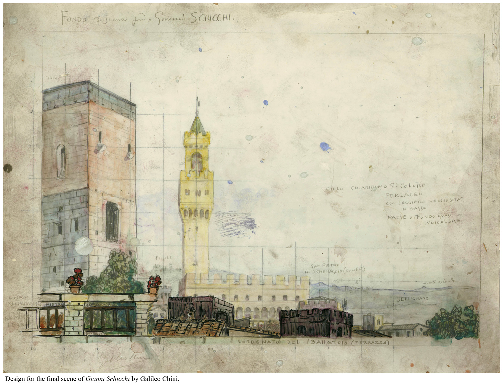
World Premiere
Il Trittico {1}
Il Tabarro {1}
Suor Angelica {1}
Gianni Schicchi {1}
Metropolitan Opera House; 12/14/1918
Debuts: Kitty Beale, Mary Ellis, Galileo Chini, Pietro Stroppa, Mario Malatesta
Reviews |
[Met Concert/Gala] CID:70390
Fourth Sunday Night Concert
Metropolitan Opera House; 12/15/1918
|
[Met Performance] CID:70400
Mârouf {10}
Metropolitan Opera House; 12/16/1918
|
[Met Performance] CID:70410
Il Trittico {2}
Il Tabarro {2}
Suor Angelica {2}
Gianni Schicchi {2}
Philadelphia, Pennsylvania; 12/17/1918
|
[Met Performance] CID:70420
Lodoletta {7}
Metropolitan Opera House; 12/18/1918
|
[Met Performance] CID:70430
Aida {238}
Metropolitan Opera House; 12/19/1918
|
[Met Performance] CID:70440
Faust {302}
Metropolitan Opera House; 12/20/1918
|
[Met Performance] CID:70450
La Forza del Destino {3}
Metropolitan Opera House; 12/21/1918
|
[Met Performance] CID:70460
La Bohème {163}
Metropolitan Opera House; 12/21/1918
|
[Met Concert/Gala] CID:70470
Fifth Sunday Night Concert
Metropolitan Opera House; 12/22/1918
|
[Met Performance] CID:70480
Il Trittico {3}
Il Tabarro {3}
Suor Angelica {3}
Gianni Schicchi {3}
Metropolitan Opera House; 12/23/1918
|
[Met Performance] CID:70490
Aida {239}
Academy of Music, Brooklyn, New York; 12/24/1918
|
[Met Performance] CID:70500
Cavalleria Rusticana {182}
Pagliacci {189}
Metropolitan Opera House; 12/25/1918
|
[Met Performance] CID:70510
La Fille du Régiment {26}
Metropolitan Opera House; 12/25/1918
|
[Met Performance] CID:70520
Madama Butterfly {126}
Metropolitan Opera House; 12/26/1918
Review |
[Met Performance] CID:70530
Samson et Dalila {23}
Metropolitan Opera House; 12/27/1918
|
[Met Performance] CID:70540

Metropolitan Opera Premiere
Oberon {1}
Metropolitan Opera House; 12/28/1918
Debut: Cesare Del Grande
Review |
[Met Performance] CID:70550
La Traviata {107}
Metropolitan Opera House; 12/28/1918
|
[Met Concert/Gala] CID:70560
Sixth Sunday Night Concert
Metropolitan Opera House; 12/29/1918
|
[Met Performance] CID:70570
Martha {61}
Metropolitan Opera House; 12/30/1918
Review |
[Met Performance] CID:70580
Faust {303}
Academy of Music, Brooklyn, New York; 12/31/1918
|
[Met Performance] CID:70590
Aida {240}
Metropolitan Opera House; 01/1/1919
|
[Met Performance] CID:70600
Tosca {138}
Metropolitan Opera House; 01/1/1919
Review |
[Met Performance] CID:70610
Cavalleria Rusticana {183}
Pagliacci {190}
Metropolitan Opera House; 01/2/1919
Review |
[Met Performance] CID:70620
Il Trittico {4}
Il Tabarro {4}
Suor Angelica {4}
Gianni Schicchi {4}
Metropolitan Opera House; 01/3/1919
Review |
[Met Performance] CID:70630
Manon Lescaut {44}
Metropolitan Opera House; 01/4/1919
Review |
[Met Performance] CID:70640
La Forza del Destino {4}
Metropolitan Opera House; 01/4/1919
|
[Met Concert/Gala] CID:70650
Seventh Sunday Night Concert
Metropolitan Opera House; 01/5/1919
|
[Met Performance] CID:70660
Faust {304}
Metropolitan Opera House; 01/6/1919
|
[Met Performance] CID:70670
Aida {241}
Philadelphia, Pennsylvania; 01/7/1919
|
[Met Performance] CID:70680
La Bohème {164}
Metropolitan Opera House; 01/8/1919
|
[Met Performance] CID:70690
La Traviata {108}
Metropolitan Opera House; 01/8/1919
|
[Met Performance] CID:70700
Oberon {2}
Metropolitan Opera House; 01/9/1919
|
[Met Performance] CID:70710
Lodoletta {8}
Metropolitan Opera House; 01/10/1919
|
[Met Performance] CID:70720
Tosca {139}
Metropolitan Opera House; 01/11/1919
|
[Met Performance] CID:70730
Mârouf {11}
Metropolitan Opera House; 01/11/1919
|
[Met Concert/Gala] CID:70740
Eighth Sunday Night Concert
Metropolitan Opera House; 01/12/1919
|
[Met Performance] CID:70750
Aida {242}
Metropolitan Opera House; 01/13/1919
|
[Met Performance] CID:70760
Thaïs {16}
Academy of Music, Brooklyn, New York; 01/14/1919
|
[Met Performance] CID:70770
Martha {62}
Metropolitan Opera House; 01/15/1919
|
[Met Performance] CID:70780
Il Trittico {5}
Il Tabarro {5}
Suor Angelica {5}
Gianni Schicchi {5}
Metropolitan Opera House; 01/16/1919
|
[Met Performance] CID:70790
Oberon {3}
Metropolitan Opera House; 01/17/1919
|
[Met Performance] CID:70800
Metropolitan Opera Premiere
Crispino e la Comare {1}
Metropolitan Opera House; 01/18/1919
Review |
[Met Performance] CID:70810
Le Prophète {60}
Metropolitan Opera House; 01/18/1919
|
[Met Concert/Gala] CID:70820
Ninth Sunday Night Concert
Metropolitan Opera House; 01/19/1919
|
[Met Performance] CID:70830
Cavalleria Rusticana {184}
Le Coq d'Or {9}
Metropolitan Opera House; 01/20/1919
Debut: Armando Agnini |
[Met Performance] CID:70840
Samson et Dalila {24}
Philadelphia, Pennsylvania; 01/21/1919
|
[Met Performance] CID:70850
Manon Lescaut {45}
Metropolitan Opera House; 01/22/1919
|
[Met Performance] CID:70860
Crispino e la Comare {2}
Metropolitan Opera House; 01/23/1919
|
[Met Performance] CID:70870
United States Premiere
La Reine Fiammette {1}
Metropolitan Opera House; 01/24/1919
Debut: Boris Anisfeld
Review |
[Met Performance] CID:70880
L'Elisir d'Amore {30}
Metropolitan Opera House; 01/25/1919
|
[Met Performance] CID:70890
Lucia di Lammermoor {93}
Metropolitan Opera House; 01/25/1919
Reviews |
[Met Concert/Gala] CID:70900
Tenth Sunday Night Concert
Metropolitan Opera House; 01/26/1919
|
[Met Performance] CID:70910
La Forza del Destino {5}
Metropolitan Opera House; 01/27/1919
|
[Met Performance] CID:70920
Crispino e la Comare {3}
Academy of Music, Brooklyn, New York; 01/28/1919
|
[Met Performance] CID:70930
Oberon {4}
Metropolitan Opera House; 01/29/1919
|
[Met Performance] CID:70940
Madama Butterfly {127}
Metropolitan Opera House; 01/30/1919
Review |
[Met Performance] CID:70950
Samson et Dalila {25}
Metropolitan Opera House; 01/30/1919
|
[Met Performance] CID:70960
Il Barbiere di Siviglia {98}
Metropolitan Opera House; 01/31/1919
Review |
[Met Performance] CID:70970
Il Trittico {6}
Il Tabarro {6}
Suor Angelica {6}
Gianni Schicchi {6}
Metropolitan Opera House; 02/1/1919
|
[Met Performance] CID:70980
L'Oracolo {19}
Le Coq d'Or {10}
Metropolitan Opera House; 02/1/1919
Debut: Ada Quintina |
[Met Concert/Gala] CID:70990
Eleventh Sunday Night Concert
Metropolitan Opera House; 02/2/1919
|
[Met Performance] CID:71000
La Reine Fiammette {2}
Metropolitan Opera House; 02/3/1919
|
[Met Performance] CID:71010
Il Barbiere di Siviglia {99}
Philadelphia, Pennsylvania; 02/4/1919
|
[Met Performance] CID:71020
La Forza del Destino {6}
Metropolitan Opera House; 02/5/1919
|
[Met Performance] CID:71030
New production (Petrouchka)
La Traviata {109}
Petrouchka {1}
Metropolitan Opera House; 02/6/1919
Debuts: Leah Roux, Florence Rudolph, Senia Solomonoff, Alexander Umansky, John Wenger |
[Met Performance] CID:71040
L'Oracolo {20}
Pagliacci {191}
Metropolitan Opera House; 02/7/1919
|
[Met Performance] CID:71050
Carmen {247}
Metropolitan Opera House; 02/8/1919
|
[Met Performance] CID:71060
Manon Lescaut {46}
Metropolitan Opera House; 02/8/1919
Debut: Helena Marsh |
[Met Concert/Gala] CID:71070
Twelfth Sunday Night Concert
Metropolitan Opera House; 02/9/1919
|
[Met Performance] CID:71080
Crispino e la Comare {4}
Petrouchka {2}
Metropolitan Opera House; 02/10/1919
|
[Met Performance] CID:71090
Cavalleria Rusticana {185}
Le Coq d'Or {11}
Academy of Music, Brooklyn, New York; 02/11/1919
|
[Met Performance] CID:71100
Aida {243}
Metropolitan Opera House; 02/12/1919
|
[Met Performance] CID:71110
Faust {305}
Metropolitan Opera House; 02/12/1919
|
[Met Performance] CID:71120
Boris Godunov {42}
Metropolitan Opera House; 02/13/1919
|
[Met Performance] CID:71130
Rigoletto {104}
Metropolitan Opera House; 02/14/1919
Review |
[Met Performance] CID:71140
Lodoletta {9}
Petrouchka {3}
Metropolitan Opera House; 02/15/1919
|
[Met Performance] CID:71150
Tosca {140}
Metropolitan Opera House; 02/15/1919
|
[Met Concert/Gala] CID:71160
Thirteenth Sunday Night Concert
Metropolitan Opera House; 02/16/1919
|
[Met Performance] CID:71170
La Bohème {165}
Metropolitan Opera House; 02/17/1919
|
[Met Performance] CID:71180
Madama Butterfly {128}
Philadelphia, Pennsylvania; 02/18/1919
|
[Met Performance] CID:71190
Pagliacci {192}
Petrouchka {4}
Metropolitan Opera House; 02/19/1919
Debut: Reinald Werrenrath
|
[Met Performance] CID:71200
Cavalleria Rusticana {186}
Le Coq d'Or {12}
Metropolitan Opera House; 02/20/1919
|
[Met Performance] CID:71210
Carmen {248}
Metropolitan Opera House; 02/21/1919
|
[Met Performance] CID:71220
Le Prophète {61}
Metropolitan Opera House; 02/21/1919
|
[Met Performance] CID:71230
Il Barbiere di Siviglia {100}
Metropolitan Opera House; 02/22/1919
|
[Met Performance] CID:71240
Aida {244}
Metropolitan Opera House; 02/22/1919
|
[Met Concert/Gala] CID:71250
Fourteenth Sunday Night Concert
Metropolitan Opera House; 02/23/1919
|
[Met Performance] CID:71260
L'Elisir d'Amore {31}
Metropolitan Opera House; 02/24/1919
|
[Met Performance] CID:71270
Boris Godunov {43}
Academy of Music, New York, Brooklyn; 02/25/1919
|
[Met Performance] CID:71280
Il Trittico {7}
Il Tabarro {7}
Suor Angelica {7}
Gianni Schicchi {7}
Metropolitan Opera House; 02/26/1919
|
[Met Performance] CID:71290
La Bohème {166}
Metropolitan Opera House; 02/27/1919
|
[Met Performance] CID:71300
Metropolitan Opera Premiere (Mireille)
Mireille {1}
Petrouchka {5}
Metropolitan Opera House; 02/28/1919
Debut: Victor Maurel
Review |
[Met Performance] CID:71310
La Reine Fiammette {3}
Metropolitan Opera House; 03/1/1919
|
[Met Performance] CID:71320
Il Trovatore {130}
Metropolitan Opera House; 03/1/1919
|
[Met Concert/Gala] CID:71330
Fifteenth Sunday Night Concert
Metropolitan Opera House; 03/2/1919
|
[Met Performance] CID:71340
Thaïs {17}
Metropolitan Opera House; 03/3/1919
|
[Met Performance] CID:71350
Il Trovatore {131}
Academy of Music, Philadelphia, Pennsylvania; 03/4/1919
Review |
[Met Performance] CID:71360
Cavalleria Rusticana {187}
Le Coq d'Or {13}
Metropolitan Opera House; 03/5/1919
|
[Met Performance] CID:71370
Le Prophète {62}
Metropolitan Opera House; 03/6/1919
|
[Met Performance] CID:71380
Madama Butterfly {129}
Metropolitan Opera House; 03/7/1919
|
[Met Performance] CID:71390
Mireille {2}
Metropolitan Opera House; 03/8/1919
|
[Met Performance] CID:71400
La Forza del Destino {7}
Academy of Music, Brooklyn, New York; 03/8/1919
Review |
[Met Concert/Gala] CID:71410
Sixteenth Sunday Night Concert
Metropolitan Opera House; 03/9/1919
|
[Met Performance] CID:71420
Il Barbiere di Siviglia {101}
Metropolitan Opera House; 03/10/1919
|
[Met Performance] CID:71430
La Bohème {167}
Philadelphia, Pennsylvania; 03/11/1919
|
[Met Performance] CID:71440
World Premiere (The Legend)
World Premiere (The Temple Dancer)
The Legend {1}
The Temple Dancer {1}
The Robin Woman: Shanewis {6}
Metropolitan Opera House; 03/12/1919
Debut: Florence Glover |
[Met Performance] CID:71450
La Reine Fiammette {4}
Metropolitan Opera House; 03/13/1919
|
[Met Performance] CID:71460
Martha {63}
Metropolitan Opera House; 03/14/1919
|
[Met Performance] CID:71470
Rigoletto {105}
Metropolitan Opera House; 03/15/1919
|
[Met Performance] CID:71480
Madama Butterfly {130}
Metropolitan Opera House; 03/15/1919
|
[Met Concert/Gala] CID:71490
Seventeenth Sunday Night Concert
Metropolitan Opera House; 03/16/1919
|
[Met Performance] CID:71500
Le Coq d'Or {14}
Metropolitan Opera House; 03/17/1919
|
[Met Performance] CID:71510
Mireille {3}
Metropolitan Opera House; 03/17/1919
|
[Met Performance] CID:71520
La Reine Fiammette {5}
Philadelphia, Pennsylvania; 03/18/1919
|
[Met Performance] CID:71530
Samson et Dalila {26}
Metropolitan Opera House; 03/19/1919
|
[Met Performance] CID:71540
The Legend {2}
The Temple Dancer {2}
The Robin Woman: Shanewis {7}
Metropolitan Opera House; 03/20/1919
|
[Met Performance] CID:71550
Thaïs {18}
Metropolitan Opera House; 03/21/1919
|
[Met Performance] CID:71560
L'Amore dei Tre Re {19}
Metropolitan Opera House; 03/22/1919
|
[Met Concert/Gala] CID:71570
Enrico Caruso 25th Anniversary
Gala Performance
Metropolitan Opera House; 03/22/1919
|
[Met Concert/Gala] CID:71580
Eighteenth Sunday Night Concert
Metropolitan Opera House; 03/23/1919
|
[Met Performance] CID:71590
Oberon {5}
Metropolitan Opera House; 03/24/1919
|
[Met Performance] CID:71600
La Forza del Destino {8}
Academy of Music, Philadelphia, Pennsylvania; 03/25/1919
Review |
[Met Performance] CID:71610
Faust {306}
Metropolitan Opera House; 03/26/1919
|
[Met Performance] CID:71620
Rigoletto {106}
Metropolitan Opera House; 03/26/1919
|
[Met Performance] CID:71630
Martha {64}
Metropolitan Opera House; 03/27/1919
|
[Met Performance] CID:71640
Carmen {249}
Metropolitan Opera House; 03/28/1919
|
[Met Performance] CID:71650
La Bohème {168}
Metropolitan Opera House; 03/29/1919
|
[Met Performance] CID:71660
Boris Godunov {44}
Metropolitan Opera House; 03/29/1919
|
[Met Concert/Gala] CID:71670
Nineteenth Sunday Night Concert
Metropolitan Opera House; 03/30/1919
|
[Met Performance] CID:71680
L'Oracolo {21}
Pagliacci {193}
Metropolitan Opera House; 03/31/1919
|
[Met Performance] CID:71690
L'Amore dei Tre Re {20}
Philadelphia, Pennsylvania; 04/1/1919
|
[Met Performance] CID:71700
Madama Butterfly {131}
Metropolitan Opera House; 04/2/1919
|
[Met Concert/Gala] CID:71710
Verdi Festival
Metropolitan Opera House; 04/3/1919
|
[Met Performance] CID:71720
Il Barbiere di Siviglia {102}
Metropolitan Opera House; 04/3/1919
|
[Met Performance] CID:71730
The Legend {3}
The Temple Dancer {3}
The Robin Woman: Shanewis {8}
Metropolitan Opera House; 04/4/1919
|
[Met Performance] CID:71740
Samson et Dalila {27}
Metropolitan Opera House; 04/5/1919
|
[Met Performance] CID:71750
Thaïs {19}
Metropolitan Opera House; 04/5/1919
|
[Met Performance] CID:71760
Verdi Requiem Mass {21}
Metropolitan Opera House; 04/6/1919
Reviews |
[Met Performance] CID:71770
L'Amore dei Tre Re {21}
Metropolitan Opera House; 04/7/1919
Debut: Millo Picco |
[Met Performance] CID:71780
Rigoletto {107}
Philadelphia, Pennsylvania; 04/8/1919
|
[Met Performance] CID:71790
Le Prophète {63}
Metropolitan Opera House; 04/9/1919
|
[Met Performance] CID:71800
Faust {307}
Metropolitan Opera House; 04/10/1919
|
[Met Performance] CID:71810
L'Elisir d'Amore {32}
Metropolitan Opera House; 04/11/1919
|
[Met Performance] CID:71820
Tosca {141}
Metropolitan Opera House; 04/12/1919
|
[Met Performance] CID:71830
Oberon {6}
Metropolitan Opera House; 04/12/1919
|
[Met Concert/Gala] CID:71840
Last Sunday Night Concert
Metropolitan Opera House; 04/13/1919
|
[Met Performance] CID:71850
Carmen {250}
Metropolitan Opera House; 04/14/1919
|
[Met Performance] CID:71860
Faust {308}
Philadelphia, Pennsylvania; 04/15/1919
|
[Met Performance] CID:71870
Mireille {4}
Metropolitan Opera House; 04/16/1919
|
[Met Performance] CID:71880
Aida {245}
Metropolitan Opera House; 04/17/1919
|
[Met Concert/Gala] CID:71890
Gallia {4}
Missa Breva {1}
Stabat Mater {37}
Metropolitan Opera House; 04/18/1919
|
[Met Performance] CID:71900
L'Amore dei Tre Re {22}
Metropolitan Opera House; 04/18/1919
|
[Met Performance] CID:71910
Madama Butterfly {132}
Metropolitan Opera House; 04/19/1919
|
[Met Performance] CID:71920
Il Barbiere di Siviglia {103}
Metropolitan Opera House; 04/19/1919
|
[Met Performance] CID:71930
La Forza del Destino {9}
Auditorium, Atlanta, Georgia; 04/21/1919
|
[Met Performance] CID:71940
Faust {309}
Auditorium, Atlanta, Georgia; 04/22/1919
|
[Met Performance] CID:71950
Aida {246}
Auditorium, Atlanta, Georgia; 04/23/1919
|
[Met Performance] CID:71960
Martha {65}
Auditorium, Atlanta, Georgia; 04/24/1919
|
[Met Performance] CID:71970
La Bohème {169}
Auditorium, Atlanta, Georgia; 04/25/1919
|
[Met Performance] CID:71980
I Puritani {8}
Auditorium, Atlanta, Georgia; 04/26/1919
Debut: Armando Agnini (Director) |
[Met Performance] CID:71990
Cavalleria Rusticana {188}
Pagliacci {194}
Atlanta, Georgia; 4/26/1919
|
[Met Concert/Gala] CID:73000
Gala Performance
Metropolitan Opera House; 10/25/1919
|
[Met Performance] CID:73010
Tosca {142}
Metropolitan Opera House; 11/17/1919
Opening Night {35}
Giulio Gatti-Casazza, General Manager |
[Met Concert/Gala] CID:73020
Gala Performance
Metropolitan Opera House; 11/18/1919
|
[Met Performance] CID:73030
La Bohème {170}
Academy of Music, Brooklyn, New York; 11/18/1919
Debut: Orville Harrold |
[Met Performance] CID:73040
Aida {247}
Metropolitan Opera House; 11/19/1919
Debut: Gabriella Besanzoni, Renato Zanelli, Giovanni Martino |
[Met Performance] CID:73050
La Bohème {171}
Metropolitan Opera House; 11/20/1919
|
[Met Performance] CID:73060
Faust {310}
Metropolitan Opera House; 11/21/1919
Debut: Albert Wolff |
[Met Performance] CID:73070
New production
La Juive {19}
Metropolitan Opera House; 11/22/1919
Debuts: Evelyn Scotney, Mathilde Castel-Bert
Review |
[Met Performance] CID:73080
Il Trovatore {132}
Metropolitan Opera House; 11/22/1919
Debut: Jeanne Gordon |
[Met Concert/Gala] CID:73090
First Sunday Night Concert
Metropolitan Opera House; 11/23/1919
|
[Met Performance] CID:73100
Boris Godunov {45}
Metropolitan Opera House; 11/24/1919
Debut: Louise Bérat, Adeline Vosari, Octave Dua |
[Met Performance] CID:73110
Aida {248}
Philadelphia, Pennsylvania; 11/25/1919
|
[Met Performance] CID:73120
L'Oracolo {22}
Pagliacci {195}
Metropolitan Opera House; 11/26/1919
|
[Met Performance] CID:73130
Carmen {251}
Metropolitan Opera House; 11/27/1919
|
[Met Performance] CID:73140
Il Barbiere di Siviglia {104}
Metropolitan Opera House; 11/27/1919
|
[Met Performance] CID:73150
La Forza del Destino {10}
Metropolitan Opera House; 11/28/1919
|
[Met Performance] CID:73160
Madama Butterfly {133}
Metropolitan Opera House; 11/29/1919
Debuts: Frances Ingram, Edna Kellogg |
[Met Performance] CID:73170
Lucia di Lammermoor {94}
Academy of Music, Brooklyn, New York; 11/29/1919
|
[Met Concert/Gala] CID:73180
Second Sunday Night Concert
Metropolitan Opera House; 11/30/1919
|
[Met Performance] CID:73190
Oberon {7}
Metropolitan Opera House; 12/1/1919
|
[Met Performance] CID:73200
L'Elisir d'Amore {33}
Philadelphia, Pennsylvania; 12/2/1919
|
[Met Performance] CID:73210
Tosca {143}
Metropolitan Opera House; 12/3/1919
|
[Met Performance] CID:73220
La Juive {20}
Metropolitan Opera House; 12/4/1919
|
[Met Performance] CID:73230
Metropolitan Opera Premiere
L'Italiana in Algeri {1}
Metropolitan Opera House; 12/5/1919
Reviews |
[Met Performance] CID:73240
Il Trovatore {133}
Metropolitan Opera House; 12/6/1919
|
[Met Performance] CID:73250
Carmen {252}
Academy of Music, Brooklyn, New York; 12/6/1919
|
[Met Concert/Gala] CID:73260
Third Sunday Night Concert
Metropolitan Opera House; 12/7/1919
|
[Met Performance] CID:73270
Aida {249}
Metropolitan Opera House; 12/8/1919
Review |
[Met Performance] CID:73280
Tosca {144}
Philadelphia, Pennsylvania; 12/9/1919
|
[Met Performance] CID:73290
Samson et Dalila {28}
Metropolitan Opera House; 12/10/1919
|
[Met Performance] CID:73300
Carmen {253}
Metropolitan Opera House; 12/11/1919
|
[Met Performance] CID:73310
L'Amore dei Tre Re {23}
Metropolitan Opera House; 12/12/1919
|
[Met Performance] CID:73320
Martha {66}
Metropolitan Opera House; 12/13/1919
|
[Met Performance] CID:73330
Lucia di Lammermoor {95}
Metropolitan Opera House; 12/13/1919
|
[Met Performance] CID:73340
Verdi Requiem Mass {22}
Metropolitan Opera House; 12/14/1919
First Appearance: Merle Alcock |
[Met Performance] CID:73350
La Juive {21}
Metropolitan Opera House; 12/15/1919
|
[Met Performance] CID:73360
La Bohème {172}
Philadelphia, Pennsylvania; 12/16/1919
|
[Met Performance] CID:73370
Il Trittico {8}
Il Tabarro {8}
Suor Angelica {8}
Gianni Schicchi {8}
Metropolitan Opera House; 12/17/1919
|
[Met Performance] CID:73380
L'Italiana in Algeri {2}
Metropolitan Opera House; 12/18/1919
|
[Met Performance] CID:73390
L'Elisir d'Amore {34}
Metropolitan Opera House; 12/19/1919
|
[Met Performance] CID:73400
Mârouf {12}
Metropolitan Opera House; 12/20/1919
|
[Met Performance] CID:73410
Faust {311}
Metropolitan Opera House; 12/20/1919
Debut: Giuseppe Bamboschek |
[Met Concert/Gala] CID:73420
Fifth Sunday Night Concert
Metropolitan Opera House; 12/21/1919
|
[Met Performance] CID:73430
Carmen {254}
Metropolitan Opera House; 12/22/1919
|
[Met Performance] CID:73440
Martha {67}
Academy of Music, Brooklyn, New York; 12/23/1919
|
[Met Performance] CID:73450
Oberon {8}
Metropolitan Opera House; 12/24/1919
|
[Met Performance] CID:73460
Madama Butterfly {134}
Metropolitan Opera House; 12/25/1919
|
[Met Performance] CID:73470
Cavalleria Rusticana {189}
Pagliacci {196}
Metropolitan Opera House; 12/25/1919
|
[Met Performance] CID:73480
Manon Lescaut {47}
Metropolitan Opera House; 12/26/1919
|
[Met Performance] CID:73490
L'Italiana in Algeri {3}
Metropolitan Opera House; 12/27/1919
|
[Met Performance] CID:73500
World Premiere
The Blue Bird {1}
Metropolitan Opera House; 12/27/1919
Debuts: Gladys Axman, Margaret Farnam, Kathryn Kennedy, Anna Staber,
Marguerite Florence, Eugenie Manetti
Review |
[Met Concert/Gala] CID:73510
Sixth Sunday Night Concert
Metropolitan Opera House; 12/28/1919
|
[Met Performance] CID:73520
La Bohème {173}
Metropolitan Opera House; 12/29/1919
|
[Met Performance] CID:73530
Faust {312}
Academy of Music, Brooklyn, New York; 12/30/1919
|
[Met Performance] CID:73540
La Forza del Destino {11}
Metropolitan Opera House; 12/31/1919
|
[Met Performance] CID:73550
Aida {250}
Metropolitan Opera House; 01/1/1920
|
[Met Performance] CID:73560
L'Amore dei Tre Re {24}
Metropolitan Opera House; 01/1/1920
|
[Met Performance] CID:73570
Mârouf {13}
Metropolitan Opera House; 01/2/1920
|
[Met Performance] CID:73580
Il Trittico {9}
Il Tabarro {9}
Suor Angelica {9}
Gianni Schicchi {9}
Metropolitan Opera House; 01/3/1920
Debut: Giaco Mantonio |
[Met Performance] CID:73590
L'Elisir d'Amore {35}
Metropolitan Opera House; 01/3/1920
|
[Met Concert/Gala] CID:73600
Gallia {5}
Stabat Mater {38}
Metropolitan Opera House; 01/4/1920
|
[Met Performance] CID:73610
The Blue Bird {2}
Metropolitan Opera House; 01/5/1920
|
[Met Performance] CID:73620
La Juive {22}
Philadelphia, Pennsylvania; 01/6/1920
|
[Met Performance] CID:73630
L'Italiana in Algeri {4}
Metropolitan Opera House; 01/7/1920
|
[Met Performance] CID:73640
Faust {313}
Metropolitan Opera House; 01/8/1920
|
[Met Performance] CID:73650
Cavalleria Rusticana {190}
Le Coq d'Or {15}
Metropolitan Opera House; 01/9/1920
|
[Met Performance] CID:73660
Samson et Dalila {29}
Metropolitan Opera House; 01/10/1920
|
[Met Performance] CID:73670
Tosca {145}
Metropolitan Opera House; 01/10/1920
|
[Met Concert/Gala] CID:73680
Eighth Sunday Night Concert
Metropolitan Opera House; 01/11/1920
|
[Met Performance] CID:73690
Martha {68}
Metropolitan Opera House; 01/12/1920
|
[Met Performance] CID:73700
L'Oracolo {23}
Le Coq d'Or {16}
Academy of Music, Brooklyn, New York; 01/13/1920
|
[Met Performance] CID:73710
Boris Godunov {46}
Metropolitan Opera House; 01/14/1920
|
[Met Performance] CID:73720
Manon Lescaut {48}
Metropolitan Opera House; 01/15/1920
|
[Met Performance] CID:73730
Metropolitan Opera Premiere
Zazà {1}
Metropolitan Opera House; 01/16/1920
Review |
[Met Performance] CID:73740
The Blue Bird {3}
Metropolitan Opera House; 01/17/1920
|
[Met Performance] CID:73750
La Bohème {174}
Metropolitan Opera House; 01/17/1920
|
[Met Concert/Gala] CID:73760
Ninth Sunday Night Concert
Metropolitan Opera House; 01/18/1920
|
[Met Performance] CID:73770
Cavalleria Rusticana {191}
Le Coq d'Or {17}
Metropolitan Opera House; 01/19/1920
|
[Met Performance] CID:73780
Rigoletto {108}
Philadelphia, Pennsylvania; 01/20/1920
|
[Met Performance] CID:73790
La Juive {23}
Metropolitan Opera House; 01/21/1920
|
[Met Performance] CID:73800
Madama Butterfly {135}
Metropolitan Opera House; 01/22/1920
|
[Met Performance] CID:73810
L'Oracolo {24}
Pagliacci {197}
Metropolitan Opera House; 01/23/1920
|
[Met Performance] CID:73820
Il Barbiere di Siviglia {105}
Metropolitan Opera House; 01/24/1920
|
[Met Performance] CID:73830
Carmen {255}
Metropolitan Opera House; 01/24/1920
|
[Met Concert/Gala] CID:73840
Tenth Sunday Night Concert
Metropolitan Opera House; 01/25/1920
|
[Met Performance] CID:73850
La Forza del Destino {12}
Metropolitan Opera House; 01/26/1920
|
[Met Performance] CID:73860
Le Coq d'Or {18}
Metropolitan Opera House; 01/27/1920
|
[Met Performance] CID:73870
Il Trovatore {134}
Academy of Music, Brooklyn, New York; 01/27/1920
|
[Met Performance] CID:73880
Faust {314}
Metropolitan Opera House; 01/28/1920
|
[Met Performance] CID:73890
The Blue Bird {4}
Metropolitan Opera House; 01/29/1920
|
[Met Performance] CID:73900
Oberon {9}
Metropolitan Opera House; 01/30/1920
|
[Met Performance] CID:73910
World Premiere (Cleopatra's Night)
Cleopatra's Night {1}
Pagliacci {198}
Metropolitan Opera House; 01/31/1920
|
[Met Performance] CID:73920
Il Trittico {10}
Il Tabarro {10}
Suor Angelica {10}
Gianni Schicchi {10}
Metropolitan Opera House; 01/31/1920
|
[Met Concert/Gala] CID:73930
Eleventh Sunday Night Concert
Metropolitan Opera House; 02/1/1920
|
[Met Performance] CID:73940
Zazà {2}
Metropolitan Opera House; 02/2/1920
|
[Met Performance] CID:73950
L'Oracolo {25}
Cleopatra's Night {2}
Philadelphia, Pennsylvania; 02/3/1920
|
[Met Performance] CID:73960
Le Prophète {64}
Metropolitan Opera House; 02/4/1920
|
[Met Performance] CID:73970
Madama Butterfly {136}
Metropolitan Opera House; 02/5/1920
|
[Met Performance] CID:73980
Cleopatra's Night {3}
Le Coq d'Or {19}
Metropolitan Opera House; 02/5/1920
|
[Met Performance] CID:73990
La Juive {24}
Metropolitan Opera House; 02/6/1920
|
[Met Performance] CID:74000
Rigoletto {109}
Metropolitan Opera House; 02/7/1920
|
[Met Performance] CID:74010
L'Oracolo {26}
Pagliacci {199}
Metropolitan Opera House; 02/7/1920
|
[Met Concert/Gala] CID:74020
Twelfth Sunday Night Concert
Metropolitan Opera House; 02/8/1920
|
[Met Performance] CID:74030
Samson et Dalila {30}
Metropolitan Opera House; 02/9/1920
|
[Met Performance] CID:74040
Cleopatra's Night {4}
Pagliacci {200}
Academy of Music, Brooklyn, New York; 02/10/1920
|
[Met Performance] CID:74050
Carmen {256}
Metropolitan Opera House; 02/11/1920
|
[Met Performance] CID:74060
Aida {251}
Metropolitan Opera House; 02/12/1920
|
[Met Performance] CID:74070
Rigoletto {110}
Metropolitan Opera House; 02/12/1920
|
[Met Performance] CID:74080
La Bohème {175}
Metropolitan Opera House; 02/13/1920
|
[Met Performance] CID:74090
Zazà {3}
Metropolitan Opera House; 02/14/1920
|
[Met Performance] CID:74100
The Blue Bird {5}
Metropolitan Opera House; 02/14/1920
|
[Met Concert/Gala] CID:74110
Thirteenth Sunday Night Concert
Metropolitan Opera House; 02/15/1920
|
[Met Performance] CID:74120
Il Barbiere di Siviglia {106}
Metropolitan Opera House; 02/16/1920
|
[Met Performance] CID:74130
Zazà {4}
Philadelphia, Pennsylvania; 02/17/1920
|
[Met Performance] CID:74140
Manon Lescaut {49}
Metropolitan Opera House; 02/18/1920
|
[Met Performance] CID:74150
New production
Parsifal {85}
Metropolitan Opera House; 02/19/1920
Review |
[Met Performance] CID:74160
Lucia di Lammermoor {96}
Metropolitan Opera House; 02/19/1920
|
[Met Performance] CID:74170
Madama Butterfly {137}
Metropolitan Opera House; 02/20/1920
|
[Met Performance] CID:74180
Le Prophète {65}
Metropolitan Opera House; 02/21/1920
|
[Met Performance] CID:74190
Cavalleria Rusticana {192}
Le Coq d'Or {20}
Metropolitan Opera House; 02/21/1920
|
[Met Concert/Gala] CID:74200
Fourteenth Sunday Night Concert
Metropolitan Opera House; 02/22/1920
|
[Met Performance] CID:74210
Faust {315}
Metropolitan Opera House; 02/23/1920
|
[Met Performance] CID:74220
L'Oracolo {27}
Cleopatra's Night {5}
Metropolitan Opera House; 02/23/1920
|
[Met Performance] CID:74230
La Juive {25}
Academy of Music, Brooklyn, New York; 02/24/1920
|
[Met Performance] CID:74240
Zazà {5}
Metropolitan Opera House; 02/25/1920
|
[Met Performance] CID:74250
Samson et Dalila {31}
Metropolitan Opera House; 02/26/1920
|
[Met Performance] CID:74260
Rigoletto {111}
Metropolitan Opera House; 02/27/1920
|
[Met Performance] CID:74270
Parsifal {86}
Metropolitan Opera House; 02/28/1920
|
[Met Performance] CID:74280
L'Amore dei Tre Re {25}
Metropolitan Opera House; 02/28/1920
|
[Met Concert/Gala] CID:74290
Fifteenth Sunday Night Concert
Metropolitan Opera House; 02/29/1920
|
[Met Performance] CID:74300
Il Trittico {11}
Il Tabarro {11}
Suor Angelica {11}
Gianni Schicchi {11}
Metropolitan Opera House; 03/1/1920
|
[Met Performance] CID:74310
Martha {69}
Philadelphia, Pennsylvania; 03/2/1920
|
[Met Performance] CID:74320
Cleopatra's Night {6}
Le Coq d'Or {21}
Metropolitan Opera House; 03/3/1920
Debut: Henry Hadley |
[Met Performance] CID:74330
Oberon {10}
Metropolitan Opera House; 03/4/1920
|
[Met Performance] CID:74340
Le Prophète {66}
Metropolitan Opera House; 03/5/1920
|
[Met Performance] CID:74350
Manon {57}
Metropolitan Opera House; 03/6/1920
Debut: Elsie Bonwit, Florence McNally |
[Met Performance] CID:74360
Aida {252}
Academy of Music, Brooklyn, New York; 03/6/1920
|
[Met Concert/Gala] CID:74370
Sixteenth Sunday Night Concert
Metropolitan Opera House; 03/7/1920
|
[Met Performance] CID:74380
L'Elisir d'Amore {36}
Metropolitan Opera House; 03/8/1920
|
[Met Performance] CID:74390
Madama Butterfly {138}
Philadelphia, Pennsylvania; 03/9/1920
|
[Met Performance] CID:74400
Parsifal {87}
Metropolitan Opera House; 03/10/1920
|
[Met Performance] CID:74410
The Blue Bird {6}
Metropolitan Opera House; 03/11/1920
|
[Met Performance] CID:74420
La Forza del Destino {13}
Metropolitan Opera House; 03/11/1920
|
[Met Performance] CID:74430
Carmen {257}
Metropolitan Opera House; 03/12/1920
|
[Met Performance] CID:74440
Cavalleria Rusticana {193}
Le Coq d'Or {22}
Metropolitan Opera House; 03/13/1920
|
[Met Performance] CID:74450
Madama Butterfly {139}
Metropolitan Opera House; 03/13/1920
|
[Met Concert/Gala] CID:74460
Gallia {6}
Stabat Mater {39}
Metropolitan Opera House; 03/14/1920
|
[Met Concert/Gala] CID:74470
Special Performance
Metropolitan Opera House; 03/15/1920
|
[Met Performance] CID:74480
Manon {58}
Metropolitan Opera House; 03/15/1920
|
[Met Performance] CID:74490
Il Trovatore {135}
Philadelphia, Pennsylvania; 03/16/1920
|
[Met Performance] CID:74500
L'Elisir d'Amore {37}
Metropolitan Opera House; 03/17/1920
|
[Met Performance] CID:74510
Zazà {6}
Metropolitan Opera House; 03/18/1920
|
[Met Performance] CID:74520
Parsifal {88}
Metropolitan Opera House; 03/19/1920
|
[Met Performance] CID:74530
La Forza del Destino {14}
Metropolitan Opera House; 03/20/1920
|
[Met Performance] CID:74540
Rigoletto {112}
Metropolitan Opera House; 03/20/1920
|
[Met Concert/Gala] CID:74550
Eighteenth Sunday Night Concert
Metropolitan Opera House; 03/21/1920
|
[Met Performance] CID:74560
Le Prophète {67}
Metropolitan Opera House; 03/22/1920
|
[Met Performance] CID:74570
Il Barbiere di Siviglia {107}
Philadelphia, Pennsylvania; 03/23/1920
|
[Met Performance] CID:74580
United States Stage Premiere
Eugene Onegin {1}
Metropolitan Opera House; 03/24/1920
Debut: Adam Lellman, Ethel Fox
Review |
[Met Performance] CID:74590
Zazà {7}
Metropolitan Opera House; 03/25/1920
|
[Met Performance] CID:74600
Martha {70}
Metropolitan Opera House; 03/25/1920
|
[Met Performance] CID:74610
The Blue Bird {7}
Metropolitan Opera House; 03/26/1920
|
[Met Performance] CID:74620
Carmen {258}
Metropolitan Opera House; 03/27/1920
|
[Met Performance] CID:74630
Manon Lescaut {50}
Metropolitan Opera House; 03/27/1920
|
[Met Concert/Gala] CID:74640
Nineteenth Sunday Night Concert
Metropolitan Opera House; 03/28/1920
|
[Met Performance] CID:74650
Rigoletto {113}
Metropolitan Opera House; 03/29/1920
|
[Met Performance] CID:74660
La Forza del Destino {15}
Philadelphia, Pennsylvania; 03/30/1920
|
[Met Performance] CID:74670
Manon {59}
Metropolitan Opera House; 03/31/1920
|
[Met Performance] CID:74680
Eugene Onegin {2}
Metropolitan Opera House; 04/1/1920
|
[Met Performance] CID:74690
Parsifal {89}
Metropolitan Opera House; 04/2/1920
|
[Met Performance] CID:74700
Tosca {146}
Metropolitan Opera House; 04/2/1920
|
[Met Performance] CID:74710
L'Elisir d'Amore {38}
Metropolitan Opera House; 04/3/1920
|
[Met Performance] CID:74720
Boris Godunov {47}
Metropolitan Opera House; 04/3/1920
|
[Met Performance] CID:74730
Messe Solennelle {1}
Metropolitan Opera House; 04/4/1920
|
[Met Performance] CID:74740
Madama Butterfly {140}
Metropolitan Opera House; 04/5/1920
|
[Met Performance] CID:74750
L'Amore dei Tre Re {26}
Philadelphia, Pennsylvania; 04/6/1920
|
[Met Performance] CID:74760
La Juive {26}
Metropolitan Opera House; 04/7/1920
|
[Met Performance] CID:74770
Lucia di Lammermoor {97}
Metropolitan Opera House; 04/7/1920
|
[Met Performance] CID:74780
Manon {60}
Metropolitan Opera House; 04/8/1920
|
[Met Performance] CID:74790
Samson et Dalila {32}
Metropolitan Opera House; 04/9/1920
|
[Met Performance] CID:74800
Eugene Onegin {3}
Metropolitan Opera House; 04/10/1920
|
[Met Performance] CID:74810
Il Barbiere di Siviglia {108}
Metropolitan Opera House; 04/10/1920
|
[Met Concert/Gala] CID:74820
Twenty-First Sunday Night Concert
Metropolitan Opera House; 04/11/1920
|
[Met Concert/Gala] CID:74830
Special Performance
Metropolitan Opera House; 04/12/1920
|
[Met Performance] CID:74840
L'Oracolo {28}
Pagliacci {201}
Metropolitan Opera House; 04/12/1920
|
[Met Performance] CID:74850
Lucia di Lammermoor {98}
Philadelphia, Pennsylvania; 04/13/1920
|
[Met Performance] CID:74860
Madama Butterfly {141}
Metropolitan Opera House; 04/14/1920
|
[Met Performance] CID:74870
Le Prophète {68}
Metropolitan Opera House; 04/15/1920
|
[Met Performance] CID:74880
The Blue Bird {8}
Metropolitan Opera House; 04/16/1920
|
[Met Performance] CID:74890
Eugene Onegin {4}
Metropolitan Opera House; 04/16/1920
|
[Met Performance] CID:74900
Lucia di Lammermoor {99}
Metropolitan Opera House; 04/17/1920
|
[Met Performance] CID:74910
Zazà {8}
Metropolitan Opera House; 04/17/1920
|
[Met Concert/Gala] CID:74920
Twenty-Second Sunday Night Concert
Metropolitan Opera House; 04/18/1920
|
[Met Performance] CID:74930
Faust {316}
Metropolitan Opera House; 04/19/1920
|
[Met Performance] CID:74940
Eugene Onegin {5}
Philadelphia, Pennsylvania; 04/20/1920
|
[Met Performance] CID:74950
Parsifal {90}
Metropolitan Opera House; 04/21/1920
|
[Met Performance] CID:74960
Martha {71}
Metropolitan Opera House; 04/21/1920
|
[Met Performance] CID:74970
Aida {253}
Metropolitan Opera House; 04/22/1920
|
[Met Performance] CID:74980
La Juive {27}
Metropolitan Opera House; 04/23/1920
|
[Met Performance] CID:74990
Tosca {147}
Metropolitan Opera House; 04/24/1920
|
[Met Performance] CID:75000
Oberon {11}
Metropolitan Opera House; 04/24/1920
|
[Met Concert/Gala] CID:75010
Last Sunday Night Concert
Metropolitan Opera House; 04/25/1920
|
[Met Performance] CID:75020
Samson et Dalila {33}
Auditorium, Atlanta, Georgia; 04/26/1920
|
[Met Performance] CID:75030
Zazà {9}
Auditorium, Atlanta, Georgia; 04/27/1920
|
[Met Performance] CID:75040
Lucia di Lammermoor {100}
Auditorium, Atlanta, Georgia; 04/28/1920
|
[Met Performance] CID:75050
La Juive {28}
Auditorium, Atlanta, Georgia; 04/29/1920
|
[Met Performance] CID:75060
Madama Butterfly {142}
Auditorium, Atlanta, Georgia; 04/30/1920
|
[Met Performance] CID:75070
Il Trovatore {136}
Auditorium, Atlanta, Georgia; 05/1/1920
|
[Met Performance] CID:75080
L'Elisir d'Amore {39}
Auditorium, Atlanta, Georgia; 5/1/1920
|
[Met Performance] CID:76000
La Juive {29}
Metropolitan Opera House; 11/15/1920
Opening Night {36}
Giulio Gatti-Casazza, General Manager
Debut: Samuel Thewman |
[Met Performance] CID:76010
Faust {317}
Academy of Music, Brooklyn, New York; 11/16/1920
|
[Met Performance] CID:76020
Aida {254}
Metropolitan Opera House; 11/17/1920
Debut: Giuseppe Danise |
[Met Performance] CID:76030
L'Elisir d'Amore {40}
Metropolitan Opera House; 11/18/1920
|
[Met Performance] CID:76040
Zazà {10}
Metropolitan Opera House; 11/19/1920
|
[Met Performance] CID:76050
New production
Tristan und Isolde {144}
Metropolitan Opera House; 11/20/1920
|
[Met Performance] CID:76060
Cavalleria Rusticana {194}
Pagliacci {202}
Metropolitan Opera House; 11/20/1920
|
[Met Concert/Gala] CID:76070
First Sunday Night Concert
Metropolitan Opera House; 11/21/1920
|
[Met Performance] CID:76080
Tosca {148}
Metropolitan Opera House; 11/22/1920
Debut: Mario Chamlee |
[Met Performance] CID:76090
Aida {255}
Academy of Music, Brooklyn, New York; 11/23/1920
Debuts: William Gustafson, Sue Harvard |
[Met Performance] CID:76100
Samson et Dalila {34}
Metropolitan Opera House; 11/24/1920
|
[Met Performance] CID:76110
Carmen {259}
Metropolitan Opera House; 11/25/1920
|
[Met Performance] CID:76120
La Bohème {176}
Metropolitan Opera House; 11/25/1920
|
[Met Performance] CID:76130

New production
Mefistofele {23}
Metropolitan Opera House; 11/26/1920
Debut: Beniamino Gigli
Review |
[Met Performance] CID:76140
La Forza del Destino {16}
Metropolitan Opera House; 11/27/1920
|
[Met Performance] CID:76150
Rigoletto {114}
Metropolitan Opera House; 11/27/1920
Date: Nina Morgana
|
[Met Concert/Gala] CID:76160
Second Sunday Night Concert
Metropolitan Opera House; 11/28/1920
|
[Met Performance] CID:76170
Tristan und Isolde {145}
Metropolitan Opera House; 11/29/1920
|
[Met Performance] CID:76180
La Juive {30}
American Academy of Music, Philadelphia, Pennsylvania; 11/30/1920
|
[Met Performance] CID:76190
Faust {318}
Metropolitan Opera House; 12/1/1920
|
[Met Performance] CID:76200
United States Premiere (Il Carillon Magico)
Cavalleria Rusticana {195}
Il Carillon Magico {1}
L'Oracolo {29}
Metropolitan Opera House; 12/2/1920
Debut: Umberto Brunelleschi
|
[Met Performance] CID:76210
Samson et Dalila {35}
Metropolitan Opera House; 12/3/1920
|
[Met Performance] CID:76220
Zazà {11}
Metropolitan Opera House; 12/4/1920
|
[Met Performance] CID:76230
La Bohème {177}
Metropolitan Opera House; 12/4/1920
Debut: Anne Roselle |
[Met Concert/Gala] CID:76240
Third Sunday Night Concert
Metropolitan Opera House; 12/5/1920
|
[Met Performance] CID:76250
Mefistofele {24}
Metropolitan Opera House; 12/6/1920
|
[Met Performance] CID:76260
Carmen {260}
American Academy of Music, Philadelphia, Pennsylvania; 12/7/1920
Debut: Alice Miriam |
[Met Performance] CID:76270
Pagliacci {203}
Il Carillon Magico {2}
Metropolitan Opera House; 12/8/1920
|
[Met Performance] CID:76280
Carmen {261}
Metropolitan Opera House; 12/9/1920
|
[Met Performance] CID:76290
Parsifal {91}
Metropolitan Opera House; 12/10/1920
Debut: Ellen Dalossy |
[Met Performance] CID:76300
Tosca {149}
Metropolitan Opera House; 12/10/1920
|
[Met Performance] CID:76310
Oberon {12}
Metropolitan Opera House; 12/11/1920
|
[Met Performance] CID:76320
L'Elisir D'Amore: Act I
Academy of Music, Brooklyn, New York; 12/11/1920
|
[Met Performance] CID:76330
Verdi Requiem Mass {23}
Metropolitan Opera House; 12/12/1920
|
[Met Performance] CID:76340
La Forza del Destino {17}
Metropolitan Opera House; 12/13/1920
|
[Met Performance] CID:76350
Mefistofele {25}
American Academy of Music, Philadelphia, Pennsylvania; 12/14/1920
|
[Met Performance] CID:76360
Zazà {12}
Metropolitan Opera House; 12/15/1920
|
[Met Performance] CID:76370
Samson et Dalila {36}
Metropolitan Opera House; 12/16/1920
|
[Met Performance] CID:76380
Lucia di Lammermoor {101}
Il Carillon Magico {3}
Metropolitan Opera House; 12/17/1920
|
[Met Performance] CID:76390
Aida {256}
Metropolitan Opera House; 12/18/1920
|
[Met Performance] CID:76400
Tosca {150}
Metropolitan Opera House; 12/18/1920
|
[Met Concert/Gala] CID:76410
Fifth Sunday Night Concert
Metropolitan Opera House; 12/19/1920
|
[Met Performance] CID:76420
Faust {319}
Metropolitan Opera House; 12/20/1920
|
[Met Performance] CID:76430
Tristan und Isolde {146}
Academy of Music, Brooklyn, New York; 12/21/1920
|
[Met Performance] CID:76440
La Bohème {178}
Metropolitan Opera House; 12/22/1920
|
[Met Performance] CID:76450
Metropolitan Opera Premiere
Don Carlo {1}
Metropolitan Opera House; 12/23/1920
Debut: Gretel Urban
Review |
[Met Performance] CID:76460
Madama Butterfly {143}
Metropolitan Opera House; 12/24/1920
|
[Met Performance] CID:76470
La Juive {31}
Metropolitan Opera House; 12/24/1920
Enrico Caruso's last performance. |
[Met Performance] CID:76480
Mefistofele {26}
Metropolitan Opera House; 12/25/1920
Debut: Frances Peralta |
[Met Performance] CID:76490
Aida {257}
Metropolitan Opera House; 12/25/1920
Debut: Carolina Lazzari |
[Met Concert/Gala] CID:76500
Sixth Sunday Night Concert
Metropolitan Opera House; 12/26/1920
|
[Met Performance] CID:76510
The Blue Bird {9}
Metropolitan Opera House; 12/27/1920
|
[Met Performance] CID:76520
Pagliacci {204}
Il Carillon Magico {4}
Metropolitan Opera House; 12/27/1920
|
[Met Performance] CID:76530
Zazà {13}
Academy of Music, Brooklyn, New York; 12/28/1920
|
[Met Performance] CID:76540
Tristan und Isolde {147}
Metropolitan Opera House; 12/29/1920
|
[Met Performance] CID:76550
Tosca {151}
Metropolitan Opera House; 12/30/1920
|
[Met Performance] CID:76560
Parsifal {92}
Metropolitan Opera House; 12/31/1920
|
[Met Performance] CID:76570
Manon Lescaut {51}
Metropolitan Opera House; 12/31/1920
Debut: Marion Telva |
[Met Performance] CID:76580
L'Amore dei Tre Re {27}
Il Carillon Magico {5}
Metropolitan Opera House; 01/1/1921
|
[Met Performance] CID:76590
Lucia di Lammermoor {102}
Metropolitan Opera House; 01/1/1921
|
[Met Concert/Gala] CID:76600
Seventh Sunday Night Concert /
Cavalleria Rusticana {196}
Metropolitan Opera House; 01/2/1921
|
[Met Performance] CID:76610
Don Carlo {2}
Metropolitan Opera House; 01/3/1921
|
[Met Performance] CID:76620
La Bohème {179}
American Academy of Music, Philadelphia, Pennsylvania; 01/4/1921
|
[Met Performance] CID:76630
Carmen {262}
Metropolitan Opera House; 01/5/1921
|
[Met Performance] CID:76640
Oberon {13}
Metropolitan Opera House; 01/6/1921
|
[Met Performance] CID:76650
Tristan und Isolde {148}
Metropolitan Opera House; 01/7/1921
|
[Met Performance] CID:76660
Madama Butterfly {144}
Metropolitan Opera House; 01/8/1921
|
[Met Performance] CID:76670
Mefistofele {27}
Metropolitan Opera House; 01/8/1921
|
[Met Concert/Gala] CID:76680
Eighth Sunday Night Concert
Metropolitan Opera House; 01/9/1921
|
[Met Performance] CID:76690
L'Oracolo {30}
Pagliacci {205}
Metropolitan Opera House; 01/10/1921
|
[Met Performance] CID:76700
The Blue Bird {10}
Metropolitan Opera House; 01/10/1921
|
[Met Performance] CID:76710
Rigoletto {115}
Academy of Music, Brooklyn, New York; 01/11/1921
|
[Met Performance] CID:76720
Don Carlo {3}
Metropolitan Opera House; 01/12/1921
|
[Met Performance] CID:76730
Aida {258}
Metropolitan Opera House; 01/13/1921
|
[Met Performance] CID:76740
Cavalleria Rusticana {197}
Le Coq d'Or {23}
Metropolitan Opera House; 01/14/1921
Debut: Sano Marks |
[Met Performance] CID:76750
Metropolitan Opera Premiere
Louise {1}
Metropolitan Opera House; 01/15/1921
Debut: Giuseppe Sterzini, Triangle Studio
Review |
[Met Performance] CID:76760
Il Trovatore {137}
Metropolitan Opera House; 01/15/1921
|
[Met Performance] CID:76770
Tosca {152}
Academy of Music, Brooklyn, New York; 01/15/1921
|
[Met Concert/Gala] CID:76780
Ninth Sunday Night Concert
Metropolitan Opera House; 01/16/1921
|
[Met Performance] CID:76790
Manon Lescaut {52}
Metropolitan Opera House; 01/17/1921
|
[Met Performance] CID:76800
Tristan und Isolde {149}
American Academy of Music, Philadelphia, Pennsylvania; 01/18/1921
|
[Met Performance] CID:76810
Tosca {153}
Metropolitan Opera House; 01/19/1921
|
[Met Performance] CID:76820
Cleopatra's Night {7}
Le Coq d'Or {24}
Metropolitan Opera House; 01/20/1921
Debuts: Grace Gibbons, Marie Harding |
[Met Performance] CID:76830
Eugene Onegin {6}
Metropolitan Opera House; 01/21/1921
|
[Met Performance] CID:76840
Lucia di Lammermoor {103}
Metropolitan Opera House; 01/22/1921
|
[Met Performance] CID:76850
Zazà {14}
Metropolitan Opera House; 01/22/1921
|
[Met Performance] CID:76860
In Concert
Samson et Dalila {37}
Metropolitan Opera House; 01/23/1921
|
[Met Performance] CID:76870
Louise {2}
Metropolitan Opera House; 01/24/1921
Debut: Raffaele Lipparini |
[Met Performance] CID:76880
Don Carlo {4}
American Academy of Music, Philadelphia, Pennsylvania; 01/25/1921
|
[Met Performance] CID:76890
Mefistofele {28}
Metropolitan Opera House; 01/26/1921
|
[Met Performance] CID:76900
Aida {259}
Metropolitan Opera House; 01/27/1921
|
[Met Performance] CID:76910
Madama Butterfly {145}
Metropolitan Opera House; 01/27/1921
|
[Met Performance] CID:76920
La Bohème {180}
Metropolitan Opera House; 01/28/1921
Review |
[Met Performance] CID:76930
Don Carlo {5}
Metropolitan Opera House; 01/29/1921
|
[Met Performance] CID:76940
Tristan und Isolde {150}
Metropolitan Opera House; 01/29/1921
|
[Met Concert/Gala] CID:76950
Eleventh Sunday Night Concert
Metropolitan Opera House; 01/30/1921
|
[Met Performance] CID:76960
Zazà {15}
Metropolitan Opera House; 01/31/1921
|
[Met Performance] CID:76970
Tosca {154}
American Academy of Music, Philadelphia, Pennsylvania; 02/1/1921
|
[Met Performance] CID:76980
New production
Lohengrin {308}
Metropolitan Opera House; 02/2/1921
Review |
[Met Performance] CID:76990
Louise {3}
Metropolitan Opera House; 02/3/1921
|
[Met Performance] CID:77000
L'Amore dei Tre Re {28}
Metropolitan Opera House; 02/3/1921
|
[Met Performance] CID:77010
Rigoletto {116}
Metropolitan Opera House; 02/4/1921
Debut: Cora Chase |
[Met Performance] CID:77020
L'Oracolo {31}
Cleopatra's Night {8}
Metropolitan Opera House; 02/5/1921
|
[Met Performance] CID:77030
La Forza del Destino {18}
Metropolitan Opera House; 02/5/1921
|
[Met Concert/Gala] CID:77040
Special Concert
Metropolitan Opera House; 02/6/1921
|
[Met Performance] CID:77050
Eugene Onegin {7}
Metropolitan Opera House; 02/7/1921
|
[Met Performance] CID:77060
Cavalleria Rusticana {198}
Le Coq d'Or {25}
Academy of Music, Brooklyn, New York; 02/8/1921
|
[Met Performance] CID:77070
Manon {61}
Metropolitan Opera House; 02/9/1921
Debut: Miss Schwartz |
[Met Performance] CID:77080
La Bohème {181}
Metropolitan Opera House; 02/10/1921
|
[Met Performance] CID:77090
Mefistofele {29}
Metropolitan Opera House; 02/10/1921
|
[Met Performance] CID:77100
Louise {4}
Metropolitan Opera House; 02/11/1921
|
[Met Performance] CID:77110
Pagliacci {206}
Le Coq d'Or {26}
Metropolitan Opera House; 02/12/1921
Debut: Carl Berger |
[Met Performance] CID:77120
Il Barbiere di Siviglia {109}
Metropolitan Opera House; 02/12/1921
|
[Met Concert/Gala] CID:77130
Thirteenth Sunday Night Concert
Metropolitan Opera House; 02/13/1921
|
[Met Performance] CID:77140
Lohengrin {309}
Metropolitan Opera House; 02/14/1921
|
[Met Performance] CID:77150
Madama Butterfly {146}
American Academy of Music, Philadelphia, Pennsylvania; 02/15/1921
|
[Met Performance] CID:77160
L'Amore dei Tre Re {29}
Metropolitan Opera House; 02/16/1921
|
[Met Performance] CID:77170
Eugene Onegin {8}
Metropolitan Opera House; 02/17/1921
|
[Met Performance] CID:77180
L'Oracolo {32}
Le Coq d'Or {27}
Metropolitan Opera House; 02/18/1921
|
[Met Performance] CID:77190
Aida {260}
Metropolitan Opera House; 02/18/1921
|
[Met Performance] CID:77200
Manon {62}
Metropolitan Opera House; 02/19/1921
|
[Met Performance] CID:77210
Samson et Dalila {38}
Academy of Music, Brooklyn, New York; 02/19/1921
|
[Met Concert/Gala] CID:77220
Fourteenth Sunday Night Concert
Metropolitan Opera House; 02/20/1921
|
[Met Performance] CID:77230
La Bohème {182}
Metropolitan Opera House; 02/21/1921
|
[Met Performance] CID:77240
Parsifal {93}
Metropolitan Opera House; 02/22/1921
|
[Met Performance] CID:77250
Carmen {263}
Metropolitan Opera House; 02/22/1921
|
[Met Performance] CID:77260
Cleopatra's Night {9}
Le Coq d'Or {28}
Metropolitan Opera House; 02/23/1921
Debuts: Samuel Gluck, Austin Herzell, Orica Wild |
[Met Performance] CID:77270
Louise {5}
Metropolitan Opera House; 02/24/1921
|
[Met Performance] CID:77280
Don Carlo {6}
Metropolitan Opera House; 02/25/1921
|
[Met Performance] CID:77290
Tosca {155}
Metropolitan Opera House; 02/26/1921
|
[Met Performance] CID:77300
Samson et Dalila {39}
Metropolitan Opera House; 02/26/1921
|
[Met Concert/Gala] CID:77310
Fifteenth Sunday Night Concert
Metropolitan Opera House; 02/27/1921
|
[Met Performance] CID:77320
Manon {63}
Metropolitan Opera House; 02/28/1921
|
[Met Performance] CID:77330
Metropolitan Opera Premiere
Andrea Chénier {1}
American Academy of Music, Philadelphia, Pennsylvania; 03/1/1921
|
[Met Performance] CID:77340
Il Barbiere di Siviglia {110}
Metropolitan Opera House; 03/2/1921
|
[Met Performance] CID:77350
Madama Butterfly {147}
Metropolitan Opera House; 03/3/1921
|
[Met Performance] CID:77360
Lohengrin {310}
Metropolitan Opera House; 03/3/1921
|
[Met Performance] CID:77370
L'Amore dei Tre Re {30}
Metropolitan Opera House; 03/4/1921
|
[Met Performance] CID:77380
La Bohème {183}
Metropolitan Opera House; 03/5/1921
|
[Met Performance] CID:77390
Lohengrin {311}
Academy of Music, Brooklyn, New York; 03/5/1921
|
[Met Concert/Gala] CID:77400
Sixteenth Sunday Night Concert
Metropolitan Opera House; 03/6/1921
|
[Met Performance] CID:77410
Andrea Chénier {2}
Metropolitan Opera House; 03/7/1921
Review |
[Met Performance] CID:77420
Louise {6}
American Academy of Music, Philadelphia, Pennsylvania; 03/8/1921
|
[Met Performance] CID:77430
United States Premiere (The Polish Jew)
The Polish Jew {1}
Il Segreto di Susanna {8}
Metropolitan Opera House; 03/9/1921
Debut: Chief Caupolican
Review |
[Met Performance] CID:77440
Aida {261}
Metropolitan Opera House; 03/10/1921
|
[Met Performance] CID:77450
The Blue Bird {11}
Metropolitan Opera House; 03/10/1921
|
[Met Performance] CID:77460
Carmen {264}
Metropolitan Opera House; 03/11/1921
|
[Met Performance] CID:77470
Rigoletto {117}
Metropolitan Opera House; 03/12/1921
|
[Met Performance] CID:77480
Don Carlo {7}
Metropolitan Opera House; 03/12/1921
|
[Met Performance] CID:77490
In Concert
Cavalleria Rusticana {199}
Pagliacci {207}
Metropolitan Opera House; 03/13/1921
|
[Met Performance] CID:77500
The Polish Jew {2}
L'Oracolo {33}
Metropolitan Opera House; 03/14/1921
|
[Met Performance] CID:77510
Rigoletto {118}
American Academy of Music, Philadelphia, Pennsylvania; 03/15/1921
|
[Met Performance] CID:77520
Il Trovatore {138}
Metropolitan Opera House; 03/16/1921
|
[Met Performance] CID:77530
Andrea Chénier {3}
Metropolitan Opera House; 03/17/1921
|
[Met Performance] CID:77540
Manon {64}
Metropolitan Opera House; 03/18/1921
|
[Met Performance] CID:77550
Lohengrin {312}
Metropolitan Opera House; 03/19/1921
|
[Met Performance] CID:77560
L'Amore dei Tre Re {31}
Academy of Music, Brooklyn, New York; 03/19/1921
|
[Met Performance] CID:77570
In Concert
La Forza del Destino {19}
Metropolitan Opera House; 03/20/1921
|
[Met Performance] CID:77580
Madama Butterfly {148}
Metropolitan Opera House; 03/21/1921
|
[Met Performance] CID:77590
Aida {262}
American Academy of Music, Philadelphia, Pennsylvania; 03/22/1921
|
[Met Performance] CID:77600
Rigoletto {119}
Metropolitan Opera House; 03/23/1921
|
[Met Performance] CID:77610
Manon {65}
Metropolitan Opera House; 03/24/1921
|
[Met Performance] CID:77620
Parsifal {94}
Metropolitan Opera House; 03/25/1921
|
[Met Performance] CID:77630
The Polish Jew {3}
Il Segreto di Susanna {9}
Metropolitan Opera House; 03/25/1921
|
[Met Performance] CID:77640
Andrea Chénier {4}
Metropolitan Opera House; 03/26/1921
|
[Met Performance] CID:77650
Faust {320}
Metropolitan Opera House; 03/26/1921
|
[Met Concert/Gala] CID:77660
Nineteenth Sunday Night Concert
Metropolitan Opera House; 03/27/1921
|
[Met Concert/Gala] CID:77670
Special Performance
Metropolitan Opera House; 03/28/1921
|
[Met Performance] CID:77680
L'Amore dei Tre Re {32}
Metropolitan Opera House; 03/28/1921
|
[Met Performance] CID:77690
Manon {66}
American Academy of Music, Philadelphia, Pennsylvania; 03/29/1921
|
[Met Performance] CID:77700
Madama Butterfly {149}
Metropolitan Opera House; 03/30/1921
|
[Met Performance] CID:77710
Rigoletto {120}
Metropolitan Opera House; 03/31/1921
|
[Met Performance] CID:77720
La Bohème {184}
Metropolitan Opera House; 04/1/1921
|
[Met Performance] CID:77730
Lohengrin {313}
Metropolitan Opera House; 04/1/1921
|
[Met Performance] CID:77740
The Blue Bird {12}
Metropolitan Opera House; 04/2/1921
|
[Met Performance] CID:77750
Zazà {16}
Metropolitan Opera House; 04/2/1921
|
[Met Concert/Gala] CID:77760
Twentieth Sunday Night Concert
Metropolitan Opera House; 04/3/1921
|
[Met Performance] CID:77770
Il Barbiere di Siviglia {111}
Metropolitan Opera House; 04/4/1921
|
[Met Performance] CID:77780
Cavalleria Rusticana {200}
Il Segreto di Susanna {10}
L'Oracolo {34}
American Academy of Music, Philadelphia, Pennsylvania; 04/5/1921
|
[Met Performance] CID:77790
Faust {321}
Metropolitan Opera House; 04/6/1921
|
[Met Performance] CID:77800
Manon Lescaut {53}
Metropolitan Opera House; 04/6/1921
|
[Met Performance] CID:77810
Tristan und Isolde {151}
Metropolitan Opera House; 04/7/1921
|
[Met Performance] CID:77820
Andrea Chénier {5}
Metropolitan Opera House; 04/8/1921
|
[Met Performance] CID:77830
Carmen {265}
Metropolitan Opera House; 04/9/1921
|
[Met Performance] CID:77840
Mefistofele {30}
Metropolitan Opera House; 04/9/1921
|
[Met Concert/Gala] CID:77850
Twenty-First Sunday Concert
Metropolitan Opera House; 04/10/1921
|
[Met Performance] CID:77860
Aida {263}
Metropolitan Opera House; 04/11/1921
|
[Met Performance] CID:77870
Faust {322}
American Academy of Music, Philadelphia, Pennsylvania; 04/12/1921
|
[Met Performance] CID:77880
Louise {7}
Metropolitan Opera House; 04/13/1921
|
[Met Performance] CID:77890
Pagliacci {208}
Il Segreto di Susanna {11}
Metropolitan Opera House; 04/14/1921
|
[Met Performance] CID:77900
Lohengrin {314}
Metropolitan Opera House; 04/15/1921
|
[Met Performance] CID:77910
Il Trovatore {139}
Metropolitan Opera House; 04/15/1921
|
[Met Performance] CID:77920
Manon Lescaut {54}
Metropolitan Opera House; 04/16/1921
|
[Met Performance] CID:77930
Boris Godunov {48}
Metropolitan Opera House; 04/16/1921
|
[Met Concert/Gala] CID:77940
Twenty-second Sunday Night Concert
Metropolitan Opera House; 04/17/1921
|
[Met Performance] CID:77950
Aida {264}
Metropolitan Opera House; 04/18/1921
|
[Met Performance] CID:77960
Carmen {266}
Metropolitan Opera House; 04/18/1921
|
[Met Performance] CID:77970
Lohengrin {315}
American Academy of Music, Philadelphia, Pennsylvania; 04/19/1921
|
[Met Performance] CID:77980
Andrea Chénier {6}
Metropolitan Opera House; 04/20/1921
|
[Met Performance] CID:77990
Zazà {17}
Metropolitan Opera House; 04/21/1921
|
[Met Performance] CID:78000
La Bohème {185}
Metropolitan Opera House; 04/22/1921
|
[Met Concert/Gala] CID:78010
Gala Performance
Metropolitan Opera House; 04/22/1921
|
[Met Performance] CID:78020
Louise {8}
Metropolitan Opera House; 04/23/1921
|
[Met Performance] CID:78030
Lohengrin {316}
Metropolitan Opera House; 04/23/1921
|
[Met Concert/Gala] CID:78040
Twenty-Third Sunday Night Concert
Metropolitan Opera House; 04/24/1921
|
[Met Performance] CID:78050
Andrea Chénier {7}
Auditorium, Atlanta, Georgia; 04/25/1921
|
[Met Performance] CID:78060
La Bohème {186}
Auditorium, Atlanta, Georgia; 04/26/1921
|
[Met Performance] CID:78070
Mefistofele {31}
Auditorium, Atlanta, Georgia; 04/27/1921
|
[Met Performance] CID:78080
Manon {67}
Auditorium, Atlanta, Georgia; 04/28/1921
|
[Met Performance] CID:78090
Aida {265}
Auditorium, Atlanta, Georgia; 04/29/1921
Debut: Dorothy Snediker |
[Met Performance] CID:78100
Rigoletto {121}
Auditorium, Atlanta, Georgia; 04/30/1921
|
[Met Performance] CID:78110
Tosca {156}
Auditorium, Atlanta, Georgia; 04/30/1921
|
[Met Performance] CID:78120
Aida {266}
Metropolitan Opera House; 05/6/1921
Debuts: Marie Escobar, Gaetano Tomasini |
[Met Performance] CID:78130
Madama Butterfly {150}
Metropolitan Opera House; 5/7/1921
|
[Met Performance] CID:79000
New production
La Traviata {110}
Metropolitan Opera House; 11/14/1921
Opening Night {37}
Giulio Gatti-Casazza, General Manager
Debut: Amelita Galli-Curci
Review |
[Met Performance] CID:79010
Carmen {267}
Brooklyn Academy of Music, New York, Brooklyn; 11/15/1921
Debut: Myrtle Schaaf |
[Met Performance] CID:79020
Lohengrin {317}
Metropolitan Opera House; 11/16/1921
Debuts: Grace Bradley, Suzanne Keener, Grace Anthony
Review |
[Met Performance] CID:79030
New production
Lucia di Lammermoor {104}
Metropolitan Opera House; 11/17/1921
Review |
[Met Performance] CID:79040
Tosca {157}
Metropolitan Opera House; 11/18/1921
Review |
[Met Performance] CID:79050
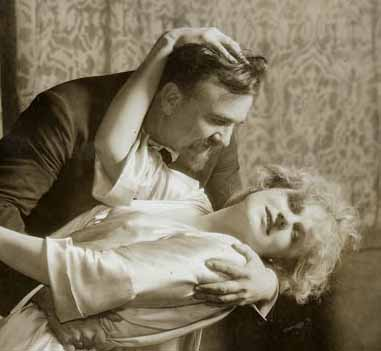
United States Premiere
Die Tote Stadt {1}
Metropolitan Opera House; 11/19/1921
Debuts: Maria Jeritza, George Meader
Reviews |
[Met Performance] CID:79060
Faust {323}
Metropolitan Opera House; 11/19/1921
Review |
[Met Performance] CID:79070
In Concert
Cavalleria Rusticana {201}
Pagliacci {209}
Metropolitan Opera House; 11/20/1921
|
[Met Performance] CID:79080
Louise {9}
Metropolitan Opera House; 11/21/1921
|
[Met Performance] CID:79090
Aida {267}
Brooklyn Academy of Music, New York, Brooklyn; 11/22/1921
|
[Met Performance] CID:79100
La Traviata {111}
Metropolitan Opera House; 11/23/1921
Review |
[Met Performance] CID:79110
Madama Butterfly {151}
Metropolitan Opera House; 11/24/1921
Debut: Paolo Quintina
Review
|
[Met Performance] CID:79120
Die Tote Stadt {2}
Metropolitan Opera House; 11/24/1921
|
[Met Performance] CID:79130
Mefistofele {32}
Metropolitan Opera House; 11/25/1921
|
[Met Performance] CID:79140
New production
Rigoletto {122}
Metropolitan Opera House; 11/26/1921
Review |
[Met Performance] CID:79150
Aida {268}
Metropolitan Opera House; 11/26/1921
Debut: Viola Philo
Review |
[Met Concert/Gala] CID:79160
Enrico Caruso Memorial Concert
Metropolitan Opera House; 11/27/1921
|
[Met Concert/Gala] CID:79170
Second Sunday Night Concert
Metropolitan Opera House; 11/27/1921
|
[Met Performance] CID:79180
Tristan und Isolde {152}
Metropolitan Opera House; 11/28/1921
Review |
[Met Performance] CID:79190
Lucia di Lammermoor {105}
Academy of Music, Philadelphia, Pennsylvania; 11/29/1921
|
[Met Performance] CID:79200
New production (La Navarraise)
La Navarraise {9}
Cavalleria Rusticana {202}
Metropolitan Opera House; 11/30/1921
Review |
[Met Performance] CID:79210
La Bohème {187}
Metropolitan Opera House; 12/1/1921
Debut: Yvonne D'Arle
Review |
[Met Performance] CID:79220
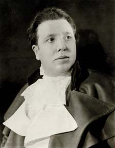
Tosca {158}
Metropolitan Opera House; 12/1/1921
Debut: Aureliano Pertile
Reviews / Chapter: Aureliano Pertile at the Met |
[Met Performance] CID:79230
Lucia di Lammermoor {106}
Metropolitan Opera House; 12/2/1921
|
[Met Performance] CID:79240
Carmen {268}
Metropolitan Opera House; 12/3/1921
|
[Met Performance] CID:79250
Manon Lescaut {55}
Metropolitan Opera House; 12/3/1921
Review |
[Met Concert/Gala] CID:79260
Third Grand Sunday Night Concert
Metropolitan Opera House; 12/4/1921
Review |
[Met Performance] CID:79270
Die Tote Stadt {3}
Metropolitan Opera House; 12/5/1921
|
[Met Performance] CID:79280
Louise {10}
Academy of Music, Philadelphia, Pennsylvania; 12/6/1921
|
[Met Performance] CID:79290
Mefistofele {33}
Metropolitan Opera House; 12/7/1921
|
[Met Performance] CID:79300
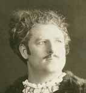
New production
Ernani {5}
Metropolitan Opera House; 12/8/1921
Reviews |
[Met Performance] CID:79310
Parsifal {95}
Metropolitan Opera House; 12/9/1921
Review |
[Met Performance] CID:79320
Boris Godunov {49}
Metropolitan Opera House; 12/9/1921
Review |
[Met Performance] CID:79330
Tosca {159}
Metropolitan Opera House; 12/10/1921
|
[Met Performance] CID:79340
Cavalleria Rusticana {203}
Pagliacci {210}
Metropolitan Opera House; 12/10/1921
Review |
[Met Performance] CID:79350
La Bohème {188}
Brooklyn Academy of Music, New York, Brooklyn; 12/10/1921
|
[Met Concert/Gala] CID:79360
Fourth Sunday Night Concert
Metropolitan Opera House; 12/11/1921
|
[Met Performance] CID:79370
Zazà {18}
Metropolitan Opera House; 12/12/1921
Review |
[Met Performance] CID:79380
Ernani {6}
Academy of Music, Philadelphia, Pennsylvania; 12/13/1921
|
[Met Performance] CID:79390
Boris Godunov {50}
Metropolitan Opera House; 12/14/1921
Review |
[Met Performance] CID:79400
La Navarraise {10}
L'Oracolo {35}
Metropolitan Opera House; 12/15/1921
Review |
[Met Performance] CID:79410
Il Barbiere di Siviglia {112}
Metropolitan Opera House; 12/16/1921
Review |
[Met Performance] CID:79420
Die Walküre {186}
Metropolitan Opera House; 12/16/1921
Review |
[Met Performance] CID:79430
Mefistofele {34}
Metropolitan Opera House; 12/17/1921
|
[Met Performance] CID:79440
Il Trovatore {140}
Metropolitan Opera House; 12/17/1921
|
[Met Concert/Gala] CID:79450
Fifth Sunday Night Concert
Metropolitan Opera House; 12/18/1921
|
[Met Performance] CID:79460
La Bohème {189}
Metropolitan Opera House; 12/19/1921
|
[Met Performance] CID:79470
Aida {269}
Metropolitan Opera House; 12/20/1921
|
[Met Performance] CID:79480
Rigoletto {123}
Brooklyn Academy of Music, New York, Brooklyn; 12/20/1921
|
[Met Performance] CID:79490
Tosca {160}
Metropolitan Opera House; 12/21/1921
|
[Met Performance] CID:79500
Carmen {269}
Metropolitan Opera House; 12/22/1921
|
[Met Performance] CID:79510
Die Tote Stadt {4}
Metropolitan Opera House; 12/23/1921
|
[Met Performance] CID:79520
La Navarraise {11}
Pagliacci {211}
Metropolitan Opera House; 12/24/1921
|
[Met Performance] CID:79530
Tristan und Isolde {153}
Metropolitan Opera House; 12/24/1921
|
[Met Concert/Gala] CID:79540
Sixth Sunday Night Concert
Metropolitan Opera House; 12/25/1921
|
[Met Performance] CID:79550
Zazà {19}
Metropolitan Opera House; 12/26/1921
|
[Met Performance] CID:79560
Cavalleria Rusticana {204}
Pagliacci {212}
Metropolitan Opera House; 12/26/1921
|
[Met Performance] CID:79570
Lohengrin {318}
Academy of Music, Philadelphia, Pennsylvania; 12/27/1921
|
[Met Performance] CID:79580
La Bohème {190}
Metropolitan Opera House; 12/28/1921
Review |
[Met Performance] CID:79590
Mefistofele {35}
Metropolitan Opera House; 12/29/1921
Review |
[Met Performance] CID:79600
Louise {11}
Metropolitan Opera House; 12/30/1921
Review |
[Met Performance] CID:79610
Die Walküre {187}
Metropolitan Opera House; 12/31/1921
|
[Met Performance] CID:79620
La Forza del Destino {20}
Metropolitan Opera House; 12/31/1921
Debut: Manuel Salazar |
[Met Concert/Gala] CID:79630
Seventh Sunday Night Concert
Metropolitan Opera House; 01/1/1922
|
[Met Performance] CID:79640
Parsifal {96}
Metropolitan Opera House; 01/2/1922
|
[Met Performance] CID:79650
L'Amore dei Tre Re {33}
Metropolitan Opera House; 01/2/1922
Review |
[Met Performance] CID:79660
Die Tote Stadt {5}
Brooklyn Academy of Music, New York, Brooklyn; 01/3/1922
|
[Met Performance] CID:79670
Zazà {20}
Metropolitan Opera House; 01/4/1922
|
[Met Performance] CID:79680
Metropolitan Opera Premiere
Le Roi d'Ys {1}
Metropolitan Opera House; 01/5/1922
Review |
[Met Performance] CID:79690
Lohengrin {319}
Metropolitan Opera House; 01/6/1922
Review |
[Met Performance] CID:79700
Madama Butterfly {152}
Metropolitan Opera House; 01/7/1922
Debut: Aida Paltrinieri |
[Met Performance] CID:79710
Cavalleria Rusticana {205}
Pagliacci {213}
Metropolitan Opera House; 01/7/1922
|
[Met Concert/Gala] CID:79720
Eighth Sunday Night Concert
Metropolitan Opera House; 01/8/1922
|
[Met Performance] CID:79730
La Navarraise {12}
L'Oracolo {36}
Metropolitan Opera House; 01/9/1922
|
[Met Performance] CID:79740
Le Roi d'Ys {2}
Academy of Music, Philadelphia, Pennsylvania; 01/10/1922
|
[Met Performance] CID:79750
Die Tote Stadt {6}
Metropolitan Opera House; 01/11/1922
|
[Met Performance] CID:79760
Carmen {270}
Metropolitan Opera House; 01/12/1922
|
[Met Performance] CID:79770
Boris Godunov {51}
Metropolitan Opera House; 01/12/1922
|
[Met Performance] CID:79780
Ernani {7}
Metropolitan Opera House; 01/13/1922
|
[Met Performance] CID:79790
Lohengrin {320}
Metropolitan Opera House; 01/14/1922
|
[Met Performance] CID:79800
Aida {270}
Metropolitan Opera House; 01/14/1922
Review |
[Met Concert/Gala] CID:79810
Ninth Sunday Night Concert
Metropolitan Opera House; 01/15/1922
|
[Met Performance] CID:79820
Die Walküre {188}
Metropolitan Opera House; 01/16/1922
|
[Met Performance] CID:79830
Louise {12}
Brooklyn Academy of Music, New York, Brooklyn; 01/17/1922
|
[Met Performance] CID:79840
Tosca {161}
Metropolitan Opera House; 01/18/1922
|
[Met Performance] CID:79850
Don Carlo {8}
Metropolitan Opera House; 01/18/1922
|
[Met Performance] CID:79860
Il Barbiere di Siviglia {113}
Metropolitan Opera House; 01/19/1922
Debut: Titta Ruffo
Review |
[Met Performance] CID:79870
Faust {324}
Metropolitan Opera House; 01/20/1922
Debut: Louis Hasselmans
Review |
[Met Performance] CID:79880
Boris Godunov {52}
Metropolitan Opera House; 01/21/1922
|
[Met Performance] CID:79890
Le Roi d'Ys {3}
Metropolitan Opera House; 01/21/1922
|
[Met Concert/Gala] CID:79900
Tenth Grand Sunday Night Concert
Metropolitan Opera House; 01/22/1922
|
[Met Performance] CID:79910
Madama Butterfly {153}
Metropolitan Opera House; 01/23/1922
|
[Met Performance] CID:79920
United States Premiere
Snegurochka {1}
Metropolitan Opera House; 01/23/1922
Review |
[Met Performance] CID:79930
Boris Godunov {53}
Academy of Music, Philadelphia, Pennsylvania; 01/24/1922
|
[Met Performance] CID:79940
Carmen {771}
Metropolitan Opera House; 01/25/1922
|
[Met Performance] CID:79950
Boris Godunov {54}
Metropolitan Opera House; 01/26/1922
Review |
[Met Performance] CID:79960
Die Walküre {189}
Metropolitan Opera House; 01/26/1922
Review |
[Met Performance] CID:79970
Le Roi d'Ys {4}
Metropolitan Opera House; 01/27/1922
|
[Met Performance] CID:79980
Ernani {8}
Metropolitan Opera House; 01/28/1922
Review |
[Met Performance] CID:79990
Die Tote Stadt {7}
Metropolitan Opera House; 01/28/1922
|
[Met Concert/Gala] CID:80000
Grand Operatic Concert
Metropolitan Opera House; 01/29/1922
|
[Met Performance] CID:80010
Lohengrin {321}
Metropolitan Opera House; 01/30/1922
Debut: Louis Rozsa |
[Met Performance] CID:80020
Il Barbiere di Siviglia {114}
Brooklyn Academy of Music, New York, Brooklyn; 01/31/1922
|
[Met Performance] CID:80030
Aida {271}
Metropolitan Opera House; 02/1/1922
|
[Met Performance] CID:80040
Cavalleria Rusticana {206}
Pagliacci {214}
Metropolitan Opera House; 02/2/1922
|
[Met Performance] CID:80050
La Traviata {112}
Metropolitan Opera House; 02/2/1922
|
[Met Performance] CID:80060
Manon {68}
Metropolitan Opera House; 02/3/1922
|
[Met Performance] CID:80070
Snegurochka {2}
Metropolitan Opera House; 02/4/1922
|
[Met Performance] CID:80080
Mefistofele {36}
Metropolitan Opera House; 02/4/1922
|
[Met Concert/Gala] CID:80090
Twelfth Sunday Night Concert
Metropolitan Opera House; 02/5/1922
|
[Met Performance] CID:80100
Il Barbiere di Siviglia {115}
Metropolitan Opera House; 02/6/1922
|
[Met Performance] CID:80110
Don Carlo {9}
Academy of Music, Philadelphia, Pennsylvania; 02/7/1922
|
[Met Performance] CID:80120
Louise {13}
Metropolitan Opera House; 02/8/1922
|
[Met Performance] CID:80130
La Bohème {191}
Metropolitan Opera House; 02/9/1922
|
[Met Performance] CID:80140
L'Amore dei Tre Re {34}
Metropolitan Opera House; 02/9/1922
|
[Met Performance] CID:80150
Rigoletto {124}
Metropolitan Opera House; 02/10/1922
|
[Met Performance] CID:80160
Andrea Chénier {8}
Metropolitan Opera House; 02/11/1922
|
[Met Performance] CID:80170
Carmen {272}
Metropolitan Opera House; 02/11/1922
|
[Met Concert/Gala] CID:80180
Thirteenth Sunday Night Concert
Metropolitan Opera House; 02/12/1922
|
[Met Performance] CID:80190
Madama Butterfly {154}
Metropolitan Opera House; 02/13/1922
|
[Met Performance] CID:80200
Aida {272}
Metropolitan Opera House; 02/13/1922
|
[Met Performance] CID:80210
La Traviata {113}
Academy of Music, Philadelphia, Pennsylvania; 02/14/1922
Review |
[Met Performance] CID:80220
Le Roi d'Ys {5}
Metropolitan Opera House; 02/15/1922
|
[Met Performance] CID:80230
Lohengrin {322}
Metropolitan Opera House; 02/16/1922
|
[Met Performance] CID:80240
Zazà {21}
Metropolitan Opera House; 02/16/1922
|
[Met Performance] CID:80250
Snegurochka {3}
Metropolitan Opera House; 02/17/1922
|
[Met Performance] CID:80260
Il Barbiere di Siviglia {116}
Metropolitan Opera House; 02/18/1922
|
[Met Performance] CID:80270
Don Carlo {10}
Metropolitan Opera House; 02/18/1922
|
[Met Concert/Gala] CID:80280
Caruso Foundation Concert
Metropolitan Opera House; 02/19/1922
|
[Met Concert/Gala] CID:80290
Fourteenth Sunday Night Concert
Metropolitan Opera House; 02/19/1922
|
[Met Performance] CID:80300
Andrea Chénier {9}
Metropolitan Opera House; 02/20/1922
|
[Met Performance] CID:80310
Madama Butterfly {155}
Brooklyn Academy of Music, New York, Brooklyn; 02/21/1922
|
[Met Performance] CID:80320
Aida {273}
Metropolitan Opera House; 02/22/1922
|
[Met Performance] CID:80330
Rigoletto {125}
Metropolitan Opera House; 02/22/1922
|
[Met Performance] CID:80340
Tristan und Isolde {154}
Metropolitan Opera House; 02/23/1922
Review |
[Met Performance] CID:80350
Lucia di Lammermoor {107}
Metropolitan Opera House; 02/24/1922
|
[Met Performance] CID:80360
Cavalleria Rusticana {207}
Pagliacci {215}
Metropolitan Opera House; 02/24/1922
Review |
[Met Performance] CID:80370
Faust {325}
Metropolitan Opera House; 02/25/1922
|
[Met Performance] CID:80380
Die Walküre {190}
Metropolitan Opera House; 02/25/1922
Review |
[Met Concert/Gala] CID:80390
Fifteenth Sunday Night Concert
Metropolitan Opera House; 02/26/1922
|
[Met Performance] CID:80400
Ernani {9}
Metropolitan Opera House; 02/27/1922
|
[Met Performance] CID:80410
Tosca {162}
Academy of Music, Philadelphia, Pennsylvania; 02/28/1922
|
[Met Performance] CID:80420
Madama Butterfly {156}
Metropolitan Opera House; 03/1/1922
|
[Met Performance] CID:80430
Snegurochka {4}
Metropolitan Opera House; 03/2/1922
|
[Met Performance] CID:80440
Tosca {163}
Metropolitan Opera House; 03/3/1922
|
[Met Performance] CID:80450
Zazà {22}
Metropolitan Opera House; 03/3/1922
|
[Met Performance] CID:80460
Metropolitan Opera Premiere
Loreley {1}
Metropolitan Opera House; 03/4/1922
Review |
[Met Performance] CID:80470
La Bohème {192}
Metropolitan Opera House; 03/4/1922
|
[Met Performance] CID:80480
Die Walküre {191}
Brooklyn Academy of Music, New York, Brooklyn; 03/4/1922
|
[Met Concert/Gala] CID:80490
Sixteenth Sunday Night Concert
Metropolitan Opera House; 03/5/1922
|
[Met Performance] CID:80500
Le Roi d'Ys {6}
Metropolitan Opera House; 03/6/1922
Review |
[Met Performance] CID:80510
La Bohème {193}
Academy of Music, Philadelphia, Pennsylvania; 03/7/1922
|
[Met Performance] CID:80520
Manon {69}
Metropolitan Opera House; 03/8/1922
|
[Met Performance] CID:80530
Aida {274}
Metropolitan Opera House; 03/9/1922
|
[Met Performance] CID:80540
Carmen {273}
Metropolitan Opera House; 03/10/1922
|
[Met Performance] CID:80550
Il Barbiere di Siviglia {117}
Metropolitan Opera House; 03/10/1922
Debut: Angeles Ottein
Review |
[Met Performance] CID:80560
Il Trovatore {141}
Metropolitan Opera House; 03/11/1922
|
[Met Performance] CID:80570
Lohengrin {323}
Metropolitan Opera House; 03/11/1922
|
[Met Concert/Gala] CID:80580
Seventeenth Sunday Night Concert
Metropolitan Opera House; 03/12/1922
|
[Met Performance] CID:80590
Faust {326}
Metropolitan Opera House; 03/13/1922
|
[Met Performance] CID:80600
Die Walküre {192}
Academy of Music, Philadelphia, Pennsylvania; 03/14/1922
|
[Met Performance] CID:80610
Snegurochka {5}
Metropolitan Opera House; 03/15/1922
|
[Met Performance] CID:80620
Tosca {164}
Metropolitan Opera House; 03/16/1922
|
[Met Performance] CID:80630
Loreley {2}
Metropolitan Opera House; 03/16/1922
|
[Met Performance] CID:80640
Carmen {274}
Metropolitan Opera House; 03/17/1922
|
[Met Performance] CID:80650
Manon Lescaut {56}
Metropolitan Opera House; 03/18/1922
|
[Met Performance] CID:80660
Rigoletto {126}
Metropolitan Opera House; 03/18/1922
|
[Met Performance] CID:80670
Il Segreto di Susanna {12}
Pagliacci {216}
Brooklyn Academy of Music, New York, Brooklyn; 03/18/1922
|
[Met Concert/Gala] CID:80680
Eighteenth Sunday Night Concert
Metropolitan Opera House; 03/19/1922
|
[Met Concert/Gala] CID:80690
Special Performance
Metropolitan Opera House; 03/20/1922
|
[Met Performance] CID:80700
Mefistofele {37}
Metropolitan Opera House; 03/20/1922
|
[Met Performance] CID:80710
Andrea Chénier {10}
Academy of Music, Philadelphia, Pennsylvania; 03/21/1922
|
[Met Performance] CID:80720
Faust {327}
Metropolitan Opera House; 03/22/1922
|
[Met Performance] CID:80730
Lohengrin {324}
Metropolitan Opera House; 03/23/1922
|
[Met Performance] CID:80740
Madama Butterfly {157}
Metropolitan Opera House; 03/24/1922
|
[Met Performance] CID:80750
United States Premiere
Così Fan Tutte {1}
Metropolitan Opera House; 03/24/1922
Reviews |
[Met Performance] CID:80760
Don Carlo {11}
Metropolitan Opera House; 03/25/1922
|
[Met Performance] CID:80770
L'Oracolo {37}
L'Amore dei Tre Re {35}
Metropolitan Opera House; 03/25/1922
Review |
[Met Concert/Gala] CID:80780
Nineteenth Sunday Night Concert
Metropolitan Opera House; 03/26/1922
|
[Met Performance] CID:80790
Snegurochka {6}
Metropolitan Opera House; 03/27/1922
|
[Met Performance] CID:80800
Manon {70}
Metropolitan Opera House; 03/27/1922
|
[Met Performance] CID:80810
Die Tote Stadt {8}
Academy of Music, Philadelphia, Pennsylvania; 03/28/1922
Review |
[Met Performance] CID:80820
Loreley {3}
Metropolitan Opera House; 03/29/1922
|
[Met Performance] CID:80830
Tosca {165}
Metropolitan Opera House; 03/30/1922
|
[Met Performance] CID:80840
Louise {14}
Metropolitan Opera House; 03/30/1922
|
[Met Performance] CID:80850
La Forza del Destino {21}
Metropolitan Opera House; 03/31/1922
Review |
[Met Performance] CID:80860
Così Fan Tutte {2}
Metropolitan Opera House; 04/1/1922
|
[Met Performance] CID:80870
Lucia di Lammermoor {108}
Metropolitan Opera House; 04/1/1922
|
[Met Concert/Gala] CID:80880
Twentieth Sunday Night Concert
Metropolitan Opera House; 04/2/1922
|
[Met Performance] CID:80890
Loreley {4}
Metropolitan Opera House; 04/3/1922
|
[Met Performance] CID:80900
Madama Butterfly {158}
Academy of Music, Philadelphia, Pennsylvania; 04/4/1922
|
[Met Performance] CID:80910
Il Barbiere di Siviglia {118}
Metropolitan Opera House; 04/5/1922
|
[Met Performance] CID:80920
Aida {275}
Metropolitan Opera House; 04/6/1922
|
[Met Performance] CID:80930
Samson et Dalila {40}
Metropolitan Opera House; 04/6/1922
Review |
[Met Performance] CID:80940
Madama Butterfly {159}
Metropolitan Opera House; 04/7/1922
Review |
[Met Performance] CID:80950
La Bohème {194}
Metropolitan Opera House; 04/8/1922
|
[Met Performance] CID:80960
Andrea Chénier {11}
Metropolitan Opera House; 04/8/1922
|
[Met Performance] CID:80970
Concert /
Gallia {7}
Cavalleria Rusticana {208}
Metropolitan Opera House; 04/9/1922
|
[Met Performance] CID:80980
Tosca {166}
Metropolitan Opera House; 04/10/1922
|
[Met Performance] CID:80990
Parsifal {97}
Academy of Music, Philadelphia, Pennsylvania; 04/11/1922
|
[Met Performance] CID:81000
Così Fan Tutte {3}
Metropolitan Opera House; 04/12/1922
|
[Met Performance] CID:81010
La Bohème {195}
Metropolitan Opera House; 04/13/1922
|
[Met Performance] CID:81020
Parsifal {98}
Metropolitan Opera House; 04/14/1922
|
[Met Performance] CID:81030
Loreley {5}
Metropolitan Opera House; 04/14/1922
|
[Met Performance] CID:81040
Il Segreto di Susanna {13}
L'Amore dei Tre Re {36}
Metropolitan Opera House; 04/15/1922
|
[Met Performance] CID:81050
Manon {71}
Metropolitan Opera House; 04/15/1922
|
[Met Concert/Gala] CID:81060
Twenty-Second Sunday Night Concert
Metropolitan Opera House; 04/16/1922
|
[Met Performance] CID:81070
Carmen {275}
Metropolitan Opera House; 04/17/1922
|
[Met Performance] CID:81080
Così Fan Tutte {4}
Metropolitan Opera House; 04/17/1922
|
[Met Performance] CID:81090
Samson et Dalila {41}
Academy of Music, Philadelphia, Pennsylvania; 04/18/1922
|
[Met Performance] CID:81100
Die Walküre {193}
Metropolitan Opera House; 04/19/1922
|
[Met Performance] CID:81110
Snegurochka {7}
Metropolitan Opera House; 04/20/1922
|
[Met Performance] CID:81120
Andrea Chénier {12}
Metropolitan Opera House; 04/20/1922
|
[Met Performance] CID:81130
Tristan und Isolde {155}
Metropolitan Opera House; 04/21/1922
|
[Met Performance] CID:81140
Zazà {23}
Metropolitan Opera House; 04/22/1922
Review |
[Met Performance] CID:81150
La Forza del Destino {22}
Metropolitan Opera House; 04/22/1922
|
[Met Concert/Gala] CID:81160
Twenty-Third Sunday Night Concert
Metropolitan Opera House; 04/23/1922
|
[Met Performance] CID:81170
Ernani {10}
Auditorium, Atlanta, Georgia; 04/24/1922
|
[Met Performance] CID:81180
Carmen {276}
Auditorium, Atlanta, Georgia; 04/25/1922
|
[Met Performance] CID:81190
Loreley {6}
Auditorium, Atlanta, Georgia; 04/26/1922
|
[Met Performance] CID:81200
Il Segreto di Susanna {14}
Pagliacci {217}
Auditorium, Atlanta, Georgia; 04/27/1922
|
[Met Performance] CID:81210
La Traviata {114}
Auditorium, Atlanta, Georgia; 04/28/1922
|
[Met Performance] CID:81220
Faust {328}
Auditorium, Atlanta, Georgia; 04/29/1922
|
[Met Performance] CID:81230
L'Amore dei Tre Re {37}
L'Oracolo {38}
Auditorium, Atlanta, Georgia; 4/29/1922
|
[Met Performance] CID:82000
Tosca {167}
Metropolitan Opera House; 11/13/1922
Opening Night {38}
Giulio Gatti-Casazza, General Manager
Review |
[Met Performance] CID:82010
La Traviata {115}
Brooklyn Academy of Music, New York, Brooklyn; 11/14/1922
Review |
[Met Performance] CID:82020
Boris Godunov {55}
Metropolitan Opera House; 11/15/1922
Review |
[Met Performance] CID:82030

L'Amore dei Tre Re {38}
Metropolitan Opera House; 11/16/1922
Debuts: Edward Johnson, Laura Robertson
Review |
[Met Performance] CID:82040
Der Rosenkavalier {28}
Metropolitan Opera House; 11/17/1922
Debuts: Paul Bender, Gustav Schützendorf, Muriel Tindal, Augusto Monti, Wilhelm von Wymetal
Review |
[Met Performance] CID:82050
Mefistofele {38}
Metropolitan Opera House; 11/18/1922
Review |
[Met Performance] CID:82060
Samson et Dalila {42}
Metropolitan Opera House; 11/18/1922
|
[Met Performance] CID:82070
In Concert
Cavalleria Rusticana {209}
Pagliacci {218}
Metropolitan Opera House; 11/19/1922
|
[Met Performance] CID:82080
Boris Godunov {56}
Metropolitan Opera House; 11/20/1922
Review |
[Met Performance] CID:82090
Der Rosenkavalier {29}
Brooklyn Academy of Music, New York, Brooklyn; 11/21/1922
Review |
[Met Performance] CID:82100
Aida {276}
Metropolitan Opera House; 11/22/1922
Debuts: Elisabeth Rethberg, Sigrid Onegin, Edmund Burke, Florence Hart
Reviews |
[Met Performance] CID:82110
Die Walküre {194}
Metropolitan Opera House; 11/23/1922
Debuts: Curt Taucher, Charlotte Ryan
Review |
[Met Performance] CID:82120
New production
Madama Butterfly {160}
Metropolitan Opera House; 11/24/1922
Review |
[Met Performance] CID:82130
Mefistofele {39}
Metropolitan Opera House; 11/24/1922
|
[Met Performance] CID:82140
New production
Roméo et Juliette {111}
Metropolitan Opera House; 11/25/1922
Review |
[Met Performance] CID:82150
Manon Lescaut {57}
Metropolitan Opera House; 11/25/1922
|
[Met Concert/Gala] CID:82160
Second Sunday Night Concert
Metropolitan Opera House; 11/26/1922
|
[Met Performance] CID:82170
Tristan und Isolde {156}
Metropolitan Opera House; 11/27/1922
Review |
[Met Performance] CID:82180
Mefistofele {40}
Academy of Music, Philadelphia, Pennsylvania; 11/28/1922
Review |
[Met Performance] CID:82190
Die Tote Stadt {9}
Metropolitan Opera House; 11/29/1922
Review |
[Met Performance] CID:82200
Carmen {277}
Metropolitan Opera House; 11/30/1922
Debut: Queena Mario
Review |
[Met Performance] CID:82210
La Traviata {116}
Metropolitan Opera House; 11/30/1922
Debut: Italo Picchi
Review
|
[Met Performance] CID:82220
Tosca {168}
Metropolitan Opera House; 12/1/1922
Review |
[Met Performance] CID:82230
Don Carlo {12}
Metropolitan Opera House; 12/2/1922
Review |
[Met Performance] CID:82240
L'Oracolo {39}
Pagliacci {219}
Metropolitan Opera House; 12/2/1922
Review |
[Met Concert/Gala] CID:82250
Third Sunday Night Concert
Metropolitan Opera House; 12/3/1922
|
[Met Performance] CID:82260
Roméo et Juliette {112}
Metropolitan Opera House; 12/4/1922
Review |
[Met Performance] CID:82270
Der Rosenkavalier {30}
Academy of Music, Philadelphia, Pennsylvania; 12/5/1922
|
[Met Performance] CID:82280
Loreley {7}
Metropolitan Opera House; 12/6/1922
Review |
[Met Performance] CID:82290
Boris Godunov {57}
Metropolitan Opera House; 12/7/1922
Review |
[Met Performance] CID:82300
Parsifal {99}
Metropolitan Opera House; 12/8/1922
Review |
[Met Performance] CID:82310
Aida {277}
Metropolitan Opera House; 12/8/1922
|
[Met Performance] CID:82320
Die Tote Stadt {10}
Metropolitan Opera House; 12/9/1922
|
[Met Performance] CID:82330
La Traviata {117}
Metropolitan Opera House; 12/9/1922
|
[Met Performance] CID:82340
Madama Butterfly {161}
Brooklyn Academy of Music, New York, Brooklyn; 12/9/1922
Review |
[Met Concert/Gala] CID:82350
Fourth Sunday Night Concert
Metropolitan Opera House; 12/10/1922
|
[Met Performance] CID:82360
Manon Lescaut {58}
Metropolitan Opera House; 12/11/1922
Review |
[Met Performance] CID:82370
Madama Butterfly {162}
Academy of Music, Philadelphia, Pennsylvania; 12/12/1922
Review |
[Met Performance] CID:82380
Don Carlo {13}
Metropolitan Opera House; 12/13/1922
Review |
[Met Performance] CID:82390
La Bohème {196}
Metropolitan Opera House; 12/14/1922
|
[Met Performance] CID:82400
Chapter Reviews: Thaïs
New production
Thaïs {20}
Metropolitan Opera House; 12/14/1922
Reviews |
[Met Performance] CID:82410
Tristan und Isolde {157}
Metropolitan Opera House; 12/15/1922
|
[Met Performance] CID:82420
Ernani {11}
Metropolitan Opera House; 12/16/1922
Debut: Jane Overton
Review |
[Met Performance] CID:82430
Carmen {278}
Metropolitan Opera House; 12/16/1922
Review |
[Met Concert/Gala] CID:82440
Fifth Sunday Night Concert
Metropolitan Opera House; 12/17/1922
|
[Met Performance] CID:82450
Die Walküre {195}
Metropolitan Opera House; 12/18/1922
Review |
[Met Performance] CID:82460
Tosca {169}
Metropolitan Opera House; 12/19/1922
|
[Met Performance] CID:82470
Cavalleria Rusticana {210}
Pagliacci {220}
New York, Brooklyn; 12/19/1922
Debut: Armand Tokatyan |
[Met Performance] CID:82480
Roméo et Juliette {113}
Metropolitan Opera House; 12/20/1922
|
[Met Performance] CID:82490
Samson et Dalila {43}
Metropolitan Opera House; 12/21/1922
Review |
[Met Performance] CID:82500
Loreley {8}
Metropolitan Opera House; 12/22/1922
|
[Met Performance] CID:82510
Der Rosenkavalier {31}
Metropolitan Opera House; 12/23/1922
Review |
[Met Performance] CID:82520
La Bohème {197}
Metropolitan Opera House; 12/23/1922
|
[Met Concert/Gala] CID:82530
Sixth Sunday Night Concert
Metropolitan Opera House; 12/24/1922
|
[Met Performance] CID:82540
Thaïs {21}
Metropolitan Opera House; 12/25/1922
|
[Met Performance] CID:82550
Ernani {12}
Metropolitan Opera House; 12/25/1922
|
[Met Performance] CID:82560
Loreley {9}
Academy of Music, Philadelphia, Pennsylvania; 12/26/1922
|
[Met Performance] CID:82570
Die Walküre {196}
Metropolitan Opera House; 12/27/1922
Review |
[Met Performance] CID:82580
Madama Butterfly {163}
Metropolitan Opera House; 12/28/1922
|
[Met Performance] CID:82590
Die Tote Stadt {11}
Metropolitan Opera House; 12/28/1922
|
[Met Performance] CID:82600
Manon {72}
Metropolitan Opera House; 12/29/1922
Review |
[Met Performance] CID:82610
Aida {278}
Metropolitan Opera House; 12/30/1922
|
[Met Performance] CID:82620
Mefistofele {41}
Metropolitan Opera House; 12/30/1922
|
[Met Concert/Gala] CID:82630
Seventh Sunday Night Concert
Metropolitan Opera House; 12/31/1922
|
[Met Performance] CID:82640
Parsifal {100}
Metropolitan Opera House; 01/1/1923
|
[Met Performance] CID:82650
Thaïs {22}
Metropolitan Opera House; 01/1/1923
|
[Met Performance] CID:82660
Roméo et Juliette {114}
Brooklyn Academy of Music, New York, Brooklyn; 01/2/1923
|
[Met Performance] CID:82670
Cavalleria Rusticana {211}
Pagliacci {221}
Metropolitan Opera House; 01/3/1923
Review |
[Met Performance] CID:82680
Carmen {279}
Metropolitan Opera House; 01/4/1923
Review |
[Met Performance] CID:82690
La Bohème {198}
Metropolitan Opera House; 01/4/1923
Review |
[Met Performance] CID:82700
New production
Guillaume Tell [William Tell] {15}
Metropolitan Opera House; 01/5/1923
Debuts: Jessie York, August Berger
Review |
[Met Performance] CID:82710
Tristan und Isolde {158}
Metropolitan Opera House; 01/6/1923
|
[Met Performance] CID:82720
Roméo et Juliette {115}
Metropolitan Opera House; 01/6/1923
|
[Met Concert/Gala] CID:82730
Eighth Sunday Night Concert
Metropolitan Opera House; 01/7/1923
|
[Met Performance] CID:82740
Loreley {10}
Metropolitan Opera House; 01/8/1923
Review |
[Met Performance] CID:82750
Die Walküre {197}
Academy of Music, Philadelphia, Pennsylvania; 01/9/1923
Review |
[Met Performance] CID:82760
Tosca {170}
Metropolitan Opera House; 01/10/1923
|
[Met Performance] CID:82770
Così Fan Tutte {5}
Metropolitan Opera House; 01/10/1923
Review |
[Met Performance] CID:82780
Ernani {13}
Metropolitan Opera House; 01/11/1923
Review |
[Met Performance] CID:82790
Thaïs {23}
Metropolitan Opera House; 01/12/1923
|
[Met Performance] CID:82800
Manon {73}
Metropolitan Opera House; 01/13/1923
|
[Met Performance] CID:82810
Die Walküre {198}
Metropolitan Opera House; 01/13/1923
Review |
[Met Concert/Gala] CID:82820
Ninth Sunday Night Concert
Metropolitan Opera House; 01/14/1923
|
[Met Concert/Gala] CID:82830
Special Performance
Metropolitan Opera House; 01/15/1923
|
[Met Performance] CID:82840
Guillaume Tell [William Tell] {16}
Metropolitan Opera House; 01/15/1923
Review |
[Met Performance] CID:82850
Tristan und Isolde {159}
Brooklyn Academy of Music, New York, Brooklyn; 01/16/1923
|
[Met Performance] CID:82860
Der Rosenkavalier {32}
Metropolitan Opera House; 01/17/1923
Review |
[Met Performance] CID:82870
Aida {279}
Metropolitan Opera House; 01/18/1923
|
[Met Performance] CID:82880
Roméo et Juliette {116}
Metropolitan Opera House; 01/18/1923
|
[Met Performance] CID:82890
Madama Butterfly {164}
Metropolitan Opera House; 01/19/1923
Review |
[Met Performance] CID:82900
Cavalleria Rusticana {212}
Pagliacci {222}
Metropolitan Opera House; 01/20/1923
|
[Met Performance] CID:82910
Andrea Chénier {13}
Metropolitan Opera House; 01/20/1923
Review |
[Met Concert/Gala] CID:82920
Tenth Sunday Night Concert
Metropolitan Opera House; 01/21/1923
|
[Met Performance] CID:82930
Der Rosenkavalier {33}
Metropolitan Opera House; 01/22/1923
Review |
[Met Performance] CID:82940
Roméo et Juliette {117}
Academy of Music, Philadelphia, Pennsylvania; 01/23/1923
|
[Met Performance] CID:82950
Lucia di Lammermoor {109}
Metropolitan Opera House; 01/24/1923
Reviews |
[Met Performance] CID:82960
Thaïs {24}
Metropolitan Opera House; 01/25/1923
|
[Met Performance] CID:82970
Così Fan Tutte {6}
Metropolitan Opera House; 01/25/1923
|
[Met Performance] CID:82980
Rigoletto {127}
Metropolitan Opera House; 01/26/1923
Debuts: Giacomo Lauri-Volpi, Virginia Grassi
Reviews |
[Met Performance] CID:82990
Die Walküre {199}
Metropolitan Opera House; 01/27/1923
Debut: Delia Reinhardt
Reviews |
[Met Performance] CID:83000
Mefistofele {42}
Metropolitan Opera House; 01/27/1923
|
[Met Concert/Gala] CID:83010
Eleventh Sunday Night Concert
Metropolitan Opera House; 01/28/1923
|
[Met Performance] CID:83020
Il Barbiere di Siviglia {119}
Metropolitan Opera House; 01/29/1923
Review |
[Met Performance] CID:83030
Guillaume Tell [William Tell] {17}
Brooklyn Academy of Music, New York, Brooklyn; 01/30/1923
Review |
[Met Performance] CID:83040
La Bohème {199}
Metropolitan Opera House; 01/31/1923
Review |
[Met Performance] CID:83050
New production
Tannhäuser {215}
Metropolitan Opera House; 02/1/1923
Review |
[Met Performance] CID:83060
Roméo et Juliette {118}
Metropolitan Opera House; 02/2/1923
|
[Met Performance] CID:83070
Ernani {14}
Metropolitan Opera House; 02/2/1923
|
[Met Performance] CID:83080
La Traviata {118}
Metropolitan Opera House; 02/3/1923
|
[Met Performance] CID:83090
Cavalleria Rusticana {213}
Pagliacci {223}
Metropolitan Opera House; 02/3/1923
|
[Met Concert/Gala] CID:83100
Twelth Sunday Night Concert
Metropolitan Opera House; 02/4/1923
|
[Met Performance] CID:83110
Così Fan Tutte {7}
Metropolitan Opera House; 02/5/1923
|
[Met Performance] CID:83120
Tosca {171}
Metropolitan Opera House; 02/6/1923
Review |
[Met Performance] CID:83130
Rigoletto {128}
Academy of Music, Philadelphia, Pennsylvania; 02/6/1923
Review |
[Met Performance] CID:83140
Samson et Dalila {44}
Metropolitan Opera House; 02/7/1923
|
[Met Performance] CID:83150
Il Barbiere di Siviglia {120}
Metropolitan Opera House; 02/8/1923
Review |
[Met Performance] CID:83160
Faust {329}
Metropolitan Opera House; 02/8/1923
Review |
[Met Performance] CID:83170
Tannhäuser {216}
Metropolitan Opera House; 02/9/1923
|
[Met Performance] CID:83180
Guillaume Tell [William Tell] {18}
Metropolitan Opera House; 02/10/1923
|
[Met Performance] CID:83190
Roméo et Juliette {119}
Metropolitan Opera House; 02/10/1923
|
[Met Concert/Gala] CID:83200
Thirteenth Sunday Night Concert
Metropolitan Opera House; 02/11/1923
|
[Met Performance] CID:83210
Il Trovatore {142}
Metropolitan Opera House; 02/12/1923
|
[Met Performance] CID:83220
La Bohème {200}
Metropolitan Opera House; 02/12/1923
Review |
[Met Performance] CID:83230
Lucia di Lammermoor {110}
Brooklyn Academy of Music, New York, Brooklyn; 02/13/1923
|
[Met Performance] CID:83240
United States Premiere
Anima Allegra {1}
Metropolitan Opera House; 02/14/1923
Review |
[Met Performance] CID:83250
Tosca {172}
Metropolitan Opera House; 02/15/1923
|
[Met Performance] CID:83260
Rigoletto {129}
Metropolitan Opera House; 02/15/1923
|
[Met Performance] CID:83270
Andrea Chénier {14}
Metropolitan Opera House; 02/16/1923
|
[Met Performance] CID:83280
Thaïs {25}
Metropolitan Opera House; 02/17/1923
|
[Met Performance] CID:83290
La Forza del Destino {23}
Metropolitan Opera House; 02/17/1923
|
[Met Concert/Gala] CID:83300
Fourteenth Sunday Night Concert
Metropolitan Opera House; 02/18/1923
|
[Met Performance] CID:83310
Lucia di Lammermoor {111}
Metropolitan Opera House; 02/19/1923
Review |
[Met Performance] CID:83320
Thaïs {26}
Academy of Music, Philadelphia, Pennsylvania; 02/20/1923
Review |
[Met Performance] CID:83330
Tannhäuser {217}
Metropolitan Opera House; 02/21/1923
Review |
[Met Performance] CID:83340
Aida {280}
Metropolitan Opera House; 02/22/1923
|
[Met Performance] CID:83350
Cavalleria Rusticana {214}
Pagliacci {224}
Metropolitan Opera House; 02/22/1923
|
[Met Performance] CID:83360
La Bohème {201}
Metropolitan Opera House; 02/23/1923
|
[Met Performance] CID:83370
Anima Allegra {2}
Metropolitan Opera House; 02/23/1923
Review |
[Met Performance] CID:83380
Faust {330}
Metropolitan Opera House; 02/24/1923
|
[Met Performance] CID:83390
Madama Butterfly {165}
Metropolitan Opera House; 02/24/1923
Debut: Thalia Sabanieeva
Review |
[Met Concert/Gala] CID:83400
Fifteenth Sunday Night Concert
Metropolitan Opera House; 02/25/1923
|
[Met Performance] CID:83410
Die Tote Stadt {12}
Metropolitan Opera House; 02/26/1923
|
[Met Performance] CID:83420
Anima Allegra {3}
Brooklyn Academy of Music, New York, Brooklyn; 02/27/1923
|
[Met Performance] CID:83430
La Bohème {202}
Academy of Music, Philadelphia, Pennsylvania; 02/27/1923
|
[Met Performance] CID:83440
Thaïs {27}
Metropolitan Opera House; 02/28/1923
|
[Met Performance] CID:83450
Andrea Chénier {15}
Metropolitan Opera House; 02/28/1923
|
[Met Performance] CID:83460
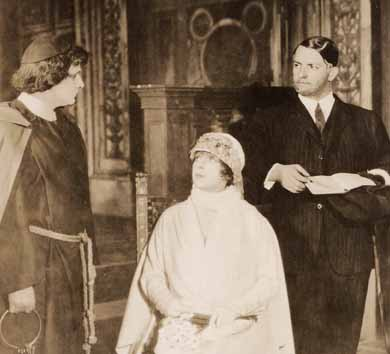
United States Premiere
Mona Lisa {1}
Metropolitan Opera House; 03/1/1923
Debuts: Barbara Kemp, Michael Bohnen
Review |
[Met Performance] CID:83470
Carmen {280}
Metropolitan Opera House; 03/2/1923
Debut: Ina Bourskaya
Reviews |
[Met Performance] CID:83480
Parsifal {101}
Metropolitan Opera House; 03/3/1923
Review |
[Met Performance] CID:83490
Rigoletto {130}
Metropolitan Opera House; 03/3/1923
|
[Met Concert/Gala] CID:83500
Sixteenth Sunday Night Concert
Metropolitan Opera House; 03/4/1923
|
[Met Performance] CID:83510
Anima Allegra {4}
Metropolitan Opera House; 03/5/1923
|
[Met Performance] CID:83520
La Bohème {203}
Metropolitan Opera House; 03/6/1923
|
[Met Performance] CID:83530
Mona Lisa {2}
Academy of Music, Philadelphia, Pennsylvania; 03/6/1923
Review |
[Met Performance] CID:83540
Manon {74}
Metropolitan Opera House; 03/7/1923
Review |
[Met Performance] CID:83550
Lohengrin {325}
Metropolitan Opera House; 03/8/1923
Review |
[Met Performance] CID:83560
Roméo et Juliette {120}
Metropolitan Opera House; 03/9/1923
|
[Met Performance] CID:83570
Cavalleria Rusticana {215}
Pagliacci {225}
Metropolitan Opera House; 03/9/1923
|
[Met Performance] CID:83580
Mona Lisa {3}
Metropolitan Opera House; 03/10/1923
|
[Met Performance] CID:83590
Il Trovatore {143}
Metropolitan Opera House; 03/10/1923
|
[Met Concert/Gala] CID:83600
Seventeenth Sunday Night Concert
Metropolitan Opera House; 03/11/1923
|
[Met Performance] CID:83610
Mefistofele {43}
Metropolitan Opera House; 03/12/1923
|
[Met Performance] CID:83620
La Bohème {204}
Brooklyn Academy of Music, New York, Brooklyn; 03/13/1923
|
[Met Performance] CID:83630
Carmen {281}
Academy of Music, Philadelphia, Pennsylvania; 03/13/1923
Review |
[Met Performance] CID:83640
Boris Godunov {58}
Metropolitan Opera House; 03/14/1923
|
[Met Performance] CID:83650
Madama Butterfly {166}
Metropolitan Opera House; 03/14/1923
|
[Met Performance] CID:83660
Anima Allegra {5}
Metropolitan Opera House; 03/15/1923
|
[Met Performance] CID:83670
Mona Lisa {4}
Metropolitan Opera House; 03/16/1923
|
[Met Performance] CID:83680
Carmen {282}
Metropolitan Opera House; 03/17/1923
|
[Met Performance] CID:83690
Andrea Chénier {16}
Metropolitan Opera House; 03/17/1923
|
[Met Concert/Gala] CID:83700
Eighteenth Sunday Night Concert
Metropolitan Opera House; 03/18/1923
|
[Met Performance] CID:83710
La Traviata {119}
Metropolitan Opera House; 03/19/1923
Review |
[Met Performance] CID:83720
Aida {281}
Academy of Music, Philadelphia, Pennsylvania; 03/20/1923
Reviews |
[Met Performance] CID:83730
New production
L'Africaine {25}
Metropolitan Opera House; 03/21/1923
Review |
[Met Performance] CID:83740
Aida {282}
Metropolitan Opera House; 03/22/1923
|
[Met Performance] CID:83750
Madama Butterfly {167}
Metropolitan Opera House; 03/22/1923
|
[Met Performance] CID:83760
Roméo et Juliette {121}
Metropolitan Opera House; 03/23/1923
|
[Met Performance] CID:83770
Samson et Dalila {45}
Metropolitan Opera House; 03/24/1923
|
[Met Performance] CID:83780
Faust {331}
Metropolitan Opera House; 03/24/1923
|
[Met Concert/Gala] CID:83790
Nineteenth Sunday Night Concert
Metropolitan Opera House; 03/25/1923
|
[Met Performance] CID:83800
Lohengrin {326}
Metropolitan Opera House; 03/26/1923
Review |
[Met Performance] CID:83810
Snegurochka {8}
Academy of Music, Philadelphia, Pennsylvania; 03/27/1923
|
[Met Performance] CID:83820
Snegurochka {9}
Academy of Music, Philadelphia, Pennsylvania; 03/27/1923
Review |
[Met Performance] CID:83830
Mona Lisa {5}
Metropolitan Opera House; 03/28/1923
|
[Met Performance] CID:83840
Aida {283}
Metropolitan Opera House; 03/29/1923
|
[Met Performance] CID:83850
Parsifal {102}
Metropolitan Opera House; 03/30/1923
|
[Met Performance] CID:83860
La Traviata {120}
Metropolitan Opera House; 03/30/1923
|
[Met Performance] CID:83870
Andrea Chénier {17}
Metropolitan Opera House; 03/31/1923
|
[Met Performance] CID:83880
Il Barbiere di Siviglia {121}
Metropolitan Opera House; 03/31/1923
|
[Met Concert/Gala] CID:83890
Twentieth Sunday Night Concert
Metropolitan Opera House; 04/1/1923
|
[Met Performance] CID:83900
L'Africaine {26}
Metropolitan Opera House; 04/2/1923
Reviews |
[Met Concert/Gala] CID:83910
Special Performance
Metropolitan Opera House; 04/3/1923
|
[Met Performance] CID:83920
La Traviata {121}
Academy of Music, Philadelphia, Pennsylvania; 04/3/1923
|
[Met Performance] CID:83930
Tristan und Isolde {160}
Metropolitan Opera House; 04/4/1923
Review |
[Met Performance] CID:83940
Carmen {283}
Metropolitan Opera House; 04/5/1923
|
[Met Performance] CID:83950
Snegurochka {10}
Metropolitan Opera House; 04/5/1923
|
[Met Performance] CID:83960
Faust {332}
Metropolitan Opera House; 04/6/1923
|
[Met Performance] CID:83970
Anima Allegra {6}
Metropolitan Opera House; 04/7/1923
|
[Met Performance] CID:83980
Tosca {173}
Metropolitan Opera House; 04/7/1923
|
[Met Performance] CID:83990
In Concert
Cavalleria Rusticana {216}
Pagliacci {226}
Metropolitan Opera House; 04/8/1923
|
[Met Performance] CID:84000
Mona Lisa {6}
Metropolitan Opera House; 04/9/1923
|
[Met Performance] CID:84010
Lohengrin {327}
Academy of Music, Philadelphia, Pennsylvania; 04/10/1923
|
[Met Performance] CID:84020
Roméo et Juliette {122}
Metropolitan Opera House; 04/11/1923
|
[Met Performance] CID:84030
Guillaume Tell [William Tell] {19}
Metropolitan Opera House; 04/11/1923
Debut: Rita De Leporte |
[Met Performance] CID:84040
Tristan und Isolde {161}
Metropolitan Opera House; 04/12/1923
NewReview |
[Met Performance] CID:84050
L'Africaine {27}
Metropolitan Opera House; 04/13/1923
|
[Met Performance] CID:84060
La Forza del Destino {24}
Metropolitan Opera House; 04/14/1923
|
[Met Performance] CID:84070
Manon {75}
Metropolitan Opera House; 04/14/1923
|
[Met Concert/Gala] CID:84080
Twenty-Second Sunday Night Concert
Metropolitan Opera House; 04/15/1923
|
[Met Performance] CID:84090
Snegurochka {11}
Metropolitan Opera House; 04/16/1923
|
[Met Performance] CID:84100
Samson et Dalila {46}
Metropolitan Opera House; 04/16/1923
|
[Met Performance] CID:84110
L'Africaine {28}
Academy of Music, Philadelphia, Pennsylvania; 04/17/1923
|
[Met Performance] CID:84120
La Traviata {122}
Metropolitan Opera House; 04/18/1923
|
[Met Performance] CID:84130
Boris Godunov {59}
Metropolitan Opera House; 04/19/1923
|
[Met Performance] CID:84140
Guillaume Tell [William Tell] {20}
Metropolitan Opera House; 04/19/1923
|
[Met Performance] CID:84150
Lohengrin {328}
Metropolitan Opera House; 04/20/1923
|
[Met Performance] CID:84160
L'Africaine {29}
Metropolitan Opera House; 04/21/1923
|
[Met Performance] CID:84170
Aida {284}
Metropolitan Opera House; 04/21/1923
|
[Met Concert/Gala] CID:84180
Last Sunday Night Concert
Metropolitan Opera House; 04/22/1923
|
[Met Performance] CID:84190
Roméo et Juliette {123}
Auditorium, Atlanta, Georgia; 04/23/1923
|
[Met Performance] CID:84200
Aida {285}
Auditorium, Atlanta, Georgia; 04/24/1923
|
[Met Performance] CID:84210
Lucia di Lammermoor {112}
Auditorium, Atlanta, Georgia; 04/25/1923
|
[Met Performance] CID:84220
Don Carlo {14}
Auditorium, Atlanta, Georgia; 04/26/1923
|
[Met Performance] CID:84230
L'Africaine {30}
Auditorium, Atlanta, Georgia; 04/27/1923
|
[Met Performance] CID:84240
La Bohème {205}
Auditorium, Atlanta, Georgia; 04/28/1923
|
[Met Performance] CID:84250
Guillaume Tell [William Tell] {21}
Auditorium, Atlanta, Georgia; 4/28/1923
|
[Met Performance] CID:85000
Thaïs {28}
Metropolitan Opera House; 11/5/1923
Opening Night {39}
Giulio Gatti-Casazza, General Manager
Review |
[Met Performance] CID:85010
Andrea Chénier {18}
Academy of Music, New York, Brooklyn; 11/6/1923
Review |
[Met Performance] CID:85020
New production
Aida {286}
Metropolitan Opera House; 11/7/1923
Debuts: James Wolfe, Phradie Wells
Review |
[Met Performance] CID:85030
Tosca {174}
Metropolitan Opera House; 11/8/1923
Debut: Miguel Fleta
Review |
[Met Performance] CID:85040
New production
Die Meistersinger von Nürnberg {143}
Metropolitan Opera House; 11/9/1923
Debuts: Rudolf Laubenthal, Arnold Gabor
Review |
[Met Performance] CID:85050
Roméo et Juliette {124}
Metropolitan Opera House; 11/10/1923
Review |
[Met Performance] CID:85060
Rigoletto {131}
Metropolitan Opera House; 11/10/1923
Debut: Nannette Guilford
Review |
[Met Concert/Gala] CID:85070
First Sunday Night Concert
Metropolitan Opera House; 11/11/1923
|
[Met Performance] CID:85080
Guillaume Tell [William Tell] {22}
Metropolitan Opera House; 11/12/1923
Review |
[Met Performance] CID:85090
Thaïs {29}
Academy of Music, Philadelphia, Pennsylvania; 11/13/1923
|
[Met Performance] CID:85100
Andrea Chénier {19}
Metropolitan Opera House; 11/14/1923
Review |
[Met Performance] CID:85110
New production (L'Amico Fritz)
L'Oracolo {40}
L'Amico Fritz {2}
Metropolitan Opera House; 11/15/1923
Debut: Merle Alcock
Review |
[Met Performance] CID:85120
Madama Butterfly {168}
Metropolitan Opera House; 11/16/1923
Review |
[Met Performance] CID:85130
Samson et Dalila {47}
Metropolitan Opera House; 11/16/1923
|
[Met Performance] CID:85140
Der Rosenkavalier {34}
Metropolitan Opera House; 11/17/1923
Debuts: Marcella Röseler, Louise Hunter
Review |
[Met Performance] CID:85150
La Traviata {123}
Metropolitan Opera House; 11/17/1923
|
[Met Performance] CID:85160
In Concert
Cavalleria Rusticana {217}
Pagliacci {227}
Metropolitan Opera House; 11/18/1923
|
[Met Performance] CID:85170
Die Meistersinger von Nürnberg {144}
Metropolitan Opera House; 11/19/1923
Review |
[Met Performance] CID:85180
L'Oracolo {41}
L'Amico Fritz {3}
Academy of Music, New York, Brooklyn; 11/20/1923
|
[Met Performance] CID:85190
Tannhäuser {218}
Metropolitan Opera House; 11/21/1923
Review |
[Met Performance] CID:85200
New production
Carmen {284}
Metropolitan Opera House; 11/22/1923
Debut: Ruth Viemeister |
[Met Performance] CID:85210
Roméo et Juliette {125}
Metropolitan Opera House; 11/22/1923
|
[Met Performance] CID:85220
Tosca {175}
Metropolitan Opera House; 11/23/1923
|
[Met Performance] CID:85230
Boris Godunov {60}
Metropolitan Opera House; 11/24/1923
Debut: Lawrence Tibbett
Review |
[Met Performance] CID:85240
Samson et Dalila {48}
Metropolitan Opera House; 11/24/1923
|
[Met Concert/Gala] CID:85250
Third Sunday Night Concert
Metropolitan Opera House; 11/25/1923
|
[Met Performance] CID:85260
Mefistofele {44}
Metropolitan Opera House; 11/26/1923
Review |
[Met Performance] CID:85270
L'Oracolo {42}
L'Amico Fritz {4}
Academy of Music, Philadelphia, Pennsylvania; 11/27/1923
|
[Met Performance] CID:85280
Madama Butterfly {169}
Metropolitan Opera House; 11/28/1923
Review |
[Met Performance] CID:85290
Parsifal {103}
Metropolitan Opera House; 11/29/1923
|
[Met Performance] CID:85300
Thaïs {30}
Metropolitan Opera House; 11/29/1923
|
[Met Performance] CID:85310
Faust {333}
Metropolitan Opera House; 11/30/1923
Review |
[Met Performance] CID:85320
Rigoletto {132}
Metropolitan Opera House; 12/1/1923
|
[Met Performance] CID:85330
Roméo et Juliette {126}
Metropolitan Opera House; 12/1/1923
|
[Met Performance] CID:85340
Tosca {176}
Academy of Music, New York, Brooklyn; 12/1/1923
|
[Met Concert/Gala] CID:85350
Fourth Sunday Night Concert
Metropolitan Opera House; 12/2/1923
|
[Met Performance] CID:85360
L'Oracolo {43}
L'Amico Fritz {5}
Metropolitan Opera House; 12/3/1923
|
[Met Performance] CID:85370
Mefistofele {45}
Academy of Music, Philadelphia, Pennsylvania; 12/4/1923
|
[Met Performance] CID:85380
Die Meistersinger von Nürnberg {145}
Metropolitan Opera House; 12/5/1923
|
[Met Performance] CID:85390
Mefistofele {46}
Metropolitan Opera House; 12/6/1923
|
[Met Performance] CID:85400
La Bohème {206}
Metropolitan Opera House; 12/7/1923
|
[Met Performance] CID:85410
Aida {287}
Metropolitan Opera House; 12/7/1923
Review |
[Met Performance] CID:85420
New production
Fedora {9}
Metropolitan Opera House; 12/8/1923
Debut: Billy Wheeler, Georges Sébastian
Review |
[Met Performance] CID:85430
Tannhäuser {219}
Metropolitan Opera House; 12/8/1923
|
[Met Concert/Gala] CID:85440
Fifth Sunday Night Concert
Metropolitan Opera House; 12/9/1923
|
[Met Performance] CID:85450
Fedora {10}
Metropolitan Opera House; 12/10/1923
Review |
[Met Performance] CID:85460
Die Meistersinger von Nürnberg {146}
Academy of Music, Philadelphia, Pennsylvania; 12/11/1923
|
[Met Performance] CID:85470
Boris Godunov {61}
Metropolitan Opera House; 12/12/1923
Review |
[Met Performance] CID:85480
Tosca {177}
Metropolitan Opera House; 12/13/1923
|
[Met Performance] CID:85490
Guillaume Tell [William Tell] {23}
Metropolitan Opera House; 12/13/1923
Debut: Muriel Halliday |
[Met Performance] CID:85500
New production
Martha {72}
Metropolitan Opera House; 12/14/1923
Debut: Flora Cingolani
Review |
[Met Performance] CID:85510
Faust {334}
Metropolitan Opera House; 12/15/1923
Review |
[Met Performance] CID:85520
Madama Butterfly {170}
Metropolitan Opera House; 12/15/1923
|
[Met Concert/Gala] CID:85530
Sixth Sunday Night Concert
Metropolitan Opera House; 12/16/1923
|
[Met Performance] CID:85540
Andrea Chénier {20}
Metropolitan Opera House; 12/17/1923
Reviews |
[Met Performance] CID:85550
Roméo et Juliette {127}
Academy of Music, New York, Brooklyn; 12/18/1923
|
[Met Performance] CID:85560
Fedora {11}
Academy of Music, Philadelphia, Pennsylvania; 12/18/1923
|
[Met Performance] CID:85570
L'Oracolo {44}
Pagliacci {228}
Metropolitan Opera House; 12/19/1923
|
[Met Performance] CID:85580
Mefistofele {47}
Metropolitan Opera House; 12/20/1923
|
[Met Performance] CID:85590
Die Walküre {200}
Metropolitan Opera House; 12/20/1923
Review |
[Met Performance] CID:85600
Fedora {12}
Metropolitan Opera House; 12/21/1923
Review |
[Met Performance] CID:85610
L'Amico Fritz {6}
Cavalleria Rusticana {218}
Metropolitan Opera House; 12/22/1923
Review |
[Met Performance] CID:85620
Der Rosenkavalier {35}
Metropolitan Opera House; 12/22/1923
Debut: Raimondo Ditello
Review |
[Met Concert/Gala] CID:85630
Seventh Sunday Night Concert
Metropolitan Opera House; 12/23/1923
|
[Met Performance] CID:85640
Tannhäuser {220}
Metropolitan Opera House; 12/24/1923
|
[Met Performance] CID:85650
Carmen {285}
Metropolitan Opera House; 12/25/1923
|
[Met Performance] CID:85660
Ernani {15}
Academy of Music, New York, Brooklyn; 12/25/1923
|
[Met Performance] CID:85670
Thaïs {31}
Metropolitan Opera House; 12/26/1923
|
[Met Performance] CID:85680
Faust {335}
Metropolitan Opera House; 12/27/1923
|
[Met Performance] CID:85690
Martha {73}
Metropolitan Opera House; 12/27/1923
|
[Met Performance] CID:85700
Ernani {16}
Metropolitan Opera House; 12/28/1923
|
[Met Performance] CID:85710
Die Walküre {201}
Metropolitan Opera House; 12/29/1923
Review |
[Met Performance] CID:85720
La Bohème {207}
Metropolitan Opera House; 12/29/1923
|
[Met Concert/Gala] CID:85730
Eighth Sunday Night Concert
Metropolitan Opera House; 12/30/1923
|
[Met Performance] CID:85740
La Traviata {124}
Metropolitan Opera House; 12/31/1923
Review |
[Met Performance] CID:85750
Parsifal {104}
Metropolitan Opera House; 01/1/1924
|
[Met Performance] CID:85760
Tosca {178}
Metropolitan Opera House; 01/1/1924
Antonio Scotti's 25th Anniversary
Review |
[Met Performance] CID:85770
Faust {336}
Academy of Music, New York, Brooklyn; 01/1/1924
|
[Met Performance] CID:85780
Metropolitan Opera Premiere (La Habanera)
United States Premiere (I Compagnacci)
La Habanera {1}
I Compagnacci {1}
Metropolitan Opera House; 01/2/1924
Debut: William Laparra, Augusto Carelli
Review |
[Met Performance] CID:85790
Cavalleria Rusticana {219}
Pagliacci {229}
Metropolitan Opera House; 01/3/1924
|
[Met Performance] CID:85800
Tannhäuser {221}
Metropolitan Opera House; 01/4/1924
|
[Met Performance] CID:85810
La Bohème {208}
Metropolitan Opera House; 01/5/1924
|
[Met Performance] CID:85820
Aida {288}
Metropolitan Opera House; 01/5/1924
|
[Met Concert/Gala] CID:85830
Verdi-Puccini Programme
Metropolitan Opera House; 01/6/1924
|
[Met Concert/Gala] CID:85840
Ninth Sunday Night Concert
Metropolitan Opera House; 01/6/1924
|
[Met Performance] CID:85850
Thaïs {32}
Metropolitan Opera House; 01/7/1924
|
[Met Performance] CID:85860
Martha {74}
Metropolitan Opera House; 01/7/1924
Review |
[Met Performance] CID:85870
Lohengrin {329}
Academy of Music, Philadelphia, Pennsylvania; 01/8/1924
Review |
[Met Performance] CID:85880
L'Amore dei Tre Re {39}
Metropolitan Opera House; 01/9/1924
Review |
[Met Performance] CID:85890
Fedora {13}
Metropolitan Opera House; 01/10/1924
|
[Met Performance] CID:85900
Boris Godunov {62}
Metropolitan Opera House; 01/11/1924
Review |
[Met Performance] CID:85910
Carmen {286}
Metropolitan Opera House; 01/11/1924
|
[Met Performance] CID:85920
Ernani {17}
Metropolitan Opera House; 01/12/1924
|
[Met Performance] CID:85930
Die Walküre {202}
Metropolitan Opera House; 01/12/1924
|
[Met Concert/Gala] CID:85940
Tenth Sunday Night Concert
Metropolitan Opera House; 01/13/1924
|
[Met Performance] CID:85950
La Habanera {2}
I Compagnacci {2}
Metropolitan Opera House; 01/14/1924
Review |
[Met Performance] CID:85960
Tosca {179}
Metropolitan Opera House; 01/15/1924
|
[Met Performance] CID:85970
Tannhäuser {222}
Academy of Music, New York, Brooklyn; 01/15/1924
Review |
[Met Performance] CID:85980
Il Barbiere di Siviglia {122}
Metropolitan Opera House; 01/16/1924
Review |
[Met Performance] CID:85990
Lohengrin {330}
Metropolitan Opera House; 01/17/1924
Reviews |
[Met Performance] CID:86000
Roméo et Juliette {128}
Metropolitan Opera House; 01/18/1924
|
[Met Performance] CID:86010
Lucia di Lammermoor {113}
Metropolitan Opera House; 01/19/1924
Review |
[Met Performance] CID:86020
Faust {337}
Metropolitan Opera House; 01/19/1924
|
[Met Concert/Gala] CID:86030
Eleventh Sunday Night Concert
Metropolitan Opera House; 01/20/1924
|
[Met Performance] CID:86040
Cavalleria Rusticana {220}
Le Coq d'Or {29}
Metropolitan Opera House; 01/21/1924
Debut: Alexis Kosloff
Review |
[Met Performance] CID:86050
L'Africaine {31}
Academy of Music, Philadelphia, Pennsylvania; 01/22/1924
|
[Met Performance] CID:86060
Fedora {14}
Metropolitan Opera House; 01/23/1924
Review |
[Met Performance] CID:86070
Martha {75}
Metropolitan Opera House; 01/24/1924
|
[Met Performance] CID:86080
La Traviata {125}
Metropolitan Opera House; 01/24/1924
Review |
[Met Performance] CID:86090
Die Walküre {203}
Metropolitan Opera House; 01/25/1924
Review |
[Met Performance] CID:86100
Thaïs {33}
Metropolitan Opera House; 01/26/1924
|
[Met Performance] CID:86110
Carmen {287}
Metropolitan Opera House; 01/26/1924
|
[Met Concert/Gala] CID:86120
Twelfth Sunday Night Concert
Metropolitan Opera House; 01/27/1924
|
[Met Performance] CID:86130
Der Rosenkavalier {36}
Metropolitan Opera House; 01/28/1924
Review |
[Met Performance] CID:86140
Rigoletto {133}
Academy of Music, New York, Brooklyn; 01/29/1924
|
[Met Performance] CID:86150
Tosca {180}
Metropolitan Opera House; 01/30/1924
|
[Met Performance] CID:86160
Roméo et Juliette {129}
Metropolitan Opera House; 01/30/1924
Review |
[Met Performance] CID:86170
L'Africaine {32}
Metropolitan Opera House; 01/31/1924
Reviews |
[Met Performance] CID:86180
Pagliacci {230}
Le Coq d'Or {30}
Metropolitan Opera House; 02/1/1924
Review |
[Met Performance] CID:86190
Siegfried {126}
Metropolitan Opera House; 02/2/1924
Review |
[Met Performance] CID:86200
Ernani {18}
Metropolitan Opera House; 02/2/1924
|
[Met Concert/Gala] CID:86210
Thirteenth Sunday Night Concert
Metropolitan Opera House; 02/3/1924
|
[Met Performance] CID:86220
L'Africaine {33}
Metropolitan Opera House; 02/4/1924
|
[Met Performance] CID:86230
Fedora {15}
Metropolitan Opera House; 02/5/1924
|
[Met Performance] CID:86240
Lucia di Lammermoor {114}
Philadelphia, Pennsylvania; 02/5/1924
Review |
[Met Performance] CID:86250
Die Walküre {204}
Metropolitan Opera House; 02/6/1924
Debut: Karin Branzell
Review |
[Met Performance] CID:86260
Rigoletto {134}
Metropolitan Opera House; 02/7/1924
|
[Met Performance] CID:86270
La Bohème {209}
Metropolitan Opera House; 02/8/1924
|
[Met Performance] CID:86280
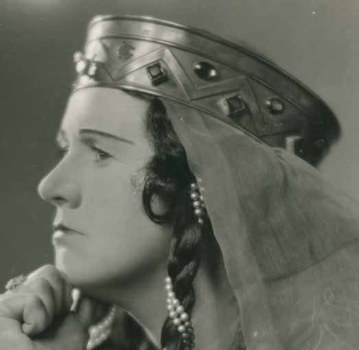
Lohengrin {331}
Metropolitan Opera House; 02/8/1924
Review |
[Met Performance] CID:86290
Martha {76}
Metropolitan Opera House; 02/9/1924
|
[Met Performance] CID:86300
Lucia di Lammermoor {115}
Metropolitan Opera House; 02/9/1924
|
[Met Concert/Gala] CID:86310
Siegfried Wagner Concert
Metropolitan Opera House; 02/10/1924
Review |
[Met Concert/Gala] CID:86320
Fourteenth Sunday Night Concert
Metropolitan Opera House; 02/10/1924
|
[Met Performance] CID:86330
Roméo et Juliette {130}
Metropolitan Opera House; 02/11/1924
Review |
[Met Performance] CID:86340
L'Africaine {34}
Metropolitan Opera House; 02/12/1924
|
[Met Concert/Gala] CID:86350
Special Performance
Metropolitan Opera House; 02/12/1924
|
[Met Performance] CID:86360
La Bohème {210}
Academy of Music, New York, Brooklyn; 02/12/1924
|
[Met Performance] CID:86370
Anima Allegra {7}
Metropolitan Opera House; 02/13/1924
Review |
[Met Performance] CID:86380
Tannhäuser {223}
Metropolitan Opera House; 02/14/1924
Debut: Friedrich Schorr
Reviews |
[Met Performance] CID:86390
Cavalleria Rusticana {221}
Le Coq d'Or {31}
Metropolitan Opera House; 02/15/1924
|
[Met Performance] CID:86400
L'Amore dei Tre Re {40}
Metropolitan Opera House; 02/15/1924
|
[Met Performance] CID:86410
Tosca {181}
Metropolitan Opera House; 02/16/1924
|
[Met Performance] CID:86420
La Habanera {3}
I Compagnacci {3}
Metropolitan Opera House; 02/16/1924
|
[Met Concert/Gala] CID:86430
Fifteenth Sunday Night Concert
Metropolitan Opera House; 02/17/1924
|
[Met Performance] CID:86440
Thaïs {34}
Metropolitan Opera House; 02/18/1924
|
[Met Performance] CID:86450
Mona Lisa {7}
Metropolitan Opera House; 02/18/1924
Review |
[Met Performance] CID:86460
Martha {77}
Philadelphia, Pennsylvania; 02/19/1924
Review |
[Met Performance] CID:86470
Lohengrin {332}
Metropolitan Opera House; 02/20/1924
Review |
[Met Performance] CID:86480
Anima Allegra {8}
Metropolitan Opera House; 02/21/1924
|
[Met Performance] CID:86490
Madama Butterfly {171}
Metropolitan Opera House; 02/22/1924
|
[Met Performance] CID:86500
Rigoletto {135}
Metropolitan Opera House; 02/22/1924
|
[Met Performance] CID:86510
Die Meistersinger von Nürnberg {147}
Metropolitan Opera House; 02/23/1924
Review |
[Met Performance] CID:86520
Martha {78}
Metropolitan Opera House; 02/23/1924
|
[Met Concert/Gala] CID:86530
Sixteenth Sunday Night Concert
Metropolitan Opera House; 02/24/1924
|
[Met Performance] CID:86540
La Bohème {211}
Metropolitan Opera House; 02/25/1924
|
[Met Performance] CID:86550
Aida {289}
Academy of Music, New York, Brooklyn; 02/26/1924
|
[Met Performance] CID:86560
La Bohème {212}
Academy of Music, Philadelphia, Pennsylvania; 02/26/1924
|
[Met Performance] CID:86570
Samson et Dalila {49}
Metropolitan Opera House; 02/27/1924
|
[Met Performance] CID:86580
Le Coq d'Or {32}
Metropolitan Opera House; 02/28/1924
|
[Met Performance] CID:86590
Siegfried {127}
Metropolitan Opera House; 02/28/1924
|
[Met Performance] CID:86600
Metropolitan Opera Premiere
Le Roi de Lahore {1}
Metropolitan Opera House; 02/29/1924
Debuts: Dorothy Wagner, Frances Weller, Leonora Nickerson, Marion Klebora, Yvonne Bailey, Marie Anderson
Review |
[Met Performance] CID:86610
La Traviata {126}
Metropolitan Opera House; 03/1/1924
|
[Met Performance] CID:86620
Lohengrin {333}
Metropolitan Opera House; 03/1/1924
|
[Met Concert/Gala] CID:86630
Sixteenth Sunday Night Concert
Metropolitan Opera House; 03/2/1924
|
[Met Performance] CID:86640
Aida {290}
Metropolitan Opera House; 03/3/1924
Review |
[Met Performance] CID:86650
Anima Allegra {9}
Metropolitan Opera House; 03/3/1924
|
[Met Performance] CID:86660
La Habanera {4}
Le Coq d'Or {33}
Academy of Music, Philadelphia, Pennsylvania; 03/4/1924
|
[Met Performance] CID:86670
Tristan und Isolde {162}
Metropolitan Opera House; 03/5/1924
Review |
[Met Performance] CID:86680
Così Fan Tutte {8}
Metropolitan Opera House; 03/6/1924
Review |
[Met Performance] CID:86690
Andrea Chénier {21}
Metropolitan Opera House; 03/7/1924
Review |
[Met Performance] CID:86700
L'Oracolo {45}
Le Coq d'Or {34}
Metropolitan Opera House; 03/8/1924
|
[Met Performance] CID:86710
Cavalleria Rusticana {222}
Pagliacci {231}
Metropolitan Opera House; 03/8/1924
|
[Met Concert/Gala] CID:86720
Eighteenth Sunday Night Concert
Metropolitan Opera House; 03/9/1924
|
[Met Performance] CID:86730
Le Roi de Lahore {2}
Metropolitan Opera House; 03/10/1924
Review |
[Met Performance] CID:86740
Die Walküre {205}
Academy of Music, Philadelphia, Pennsylvania; 03/11/1924
Review |
[Met Performance] CID:86750
La Traviata {127}
Metropolitan Opera House; 03/12/1924
|
[Met Performance] CID:86760
Carmen {288}
Metropolitan Opera House; 03/13/1924
Review |
[Met Performance] CID:86770
Madama Butterfly {172}
Metropolitan Opera House; 03/13/1924
|
[Met Performance] CID:86780
Così Fan Tutte {9}
Metropolitan Opera House; 03/14/1924
|
[Met Performance] CID:86790
Lohengrin {334}
Metropolitan Opera House; 03/15/1924
|
[Met Performance] CID:86800
Aida {291}
Metropolitan Opera House; 03/15/1924
|
[Met Concert/Gala] CID:86810
Nineteenth Sunday Night Concert
Metropolitan Opera House; 03/16/1924
|
[Met Performance] CID:86820
Die Walküre {206}
Metropolitan Opera House; 03/17/1924
Reviews |
[Met Performance] CID:86830
Le Roi de Lahore {3}
Academy of Music, Philadelphia, Pennsylvania; 03/18/1924
|
[Met Performance] CID:86840
Carmen {289}
Metropolitan Opera House; 03/19/1924
Review |
[Met Performance] CID:86850
La Bohème {213}
Metropolitan Opera House; 03/20/1924
|
[Met Performance] CID:86860
Le Coq d'Or {35}
Metropolitan Opera House; 03/21/1924
|
[Met Performance] CID:86870
Guillaume Tell [William Tell] {24}
Metropolitan Opera House; 03/21/1924
|
[Met Performance] CID:86880
New production
Der Freischütz {7}
Metropolitan Opera House; 03/22/1924
Review |
[Met Performance] CID:86890
Il Barbiere di Siviglia {123}
Metropolitan Opera House; 03/22/1924
|
[Met Concert/Gala] CID:86900
Twentieth Sunday Night Concert
Metropolitan Opera House; 03/23/1924
|
[Met Performance] CID:86910
Rigoletto {136}
Metropolitan Opera House; 03/24/1924
|
[Met Performance] CID:86920
Guillaume Tell [William Tell] {25}
Academy of Music, Philadelphia, Pennsylvania; 03/25/1924
Review |
[Met Performance] CID:86930
Madama Butterfly {173}
Metropolitan Opera House; 03/26/1924
|
[Met Performance] CID:86940
Le Roi de Lahore {4}
Metropolitan Opera House; 03/26/1924
|
[Met Performance] CID:86950
Die Meistersinger von Nürnberg {148}
Metropolitan Opera House; 03/27/1924
Review |
[Met Performance] CID:86960
Anima Allegra {10}
Metropolitan Opera House; 03/28/1924
|
[Met Performance] CID:86970
Samson et Dalila {50}
Metropolitan Opera House; 03/29/1924
|
[Met Performance] CID:86980
L'Oracolo {46}
Le Coq d'Or {36}
Metropolitan Opera House; 03/29/1924
|
[Met Concert/Gala] CID:86990
Operatic Concert
Metropolitan Opera House; 03/30/1924
|
[Met Concert/Gala] CID:87000
Twenty-First Sunday Night Concert
Metropolitan Opera House; 03/30/1924
|
[Met Performance] CID:87010
Der Freischütz {8}
Metropolitan Opera House; 03/31/1924
Review |
[Met Performance] CID:87020
La Traviata {128}
Academy of Music, Philadelphia, Pennsylvania; 04/1/1924
Review |
[Met Performance] CID:87030
Guillaume Tell [William Tell] {26}
Metropolitan Opera House; 04/2/1924
|
[Met Performance] CID:87040
Le Roi de Lahore {5}
Metropolitan Opera House; 04/3/1924
|
[Met Performance] CID:87050
La Bohème {214}
Metropolitan Opera House; 04/4/1924
|
[Met Performance] CID:87060
Tristan und Isolde {163}
Metropolitan Opera House; 04/4/1924
Reviews |
[Met Performance] CID:87070
Andrea Chénier {22}
Metropolitan Opera House; 04/5/1924
|
[Met Performance] CID:87080
Carmen {290}
Metropolitan Opera House; 04/5/1924
|
[Met Concert/Gala] CID:87090
Twenty-Second Sunday Night Concert
Metropolitan Opera House; 04/6/1924
|
[Met Performance] CID:87100
Aida {292}
Metropolitan Opera House; 04/7/1924
|
[Met Performance] CID:87110
Madama Butterfly {174}
Metropolitan Opera House; 04/7/1924
|
[Met Performance] CID:87120
Der Freischütz {9}
Academy of Music, Philadelphia, Pennsylvania; 04/8/1924
Review |
[Met Performance] CID:87130
Cavalleria Rusticana {223}
Le Coq d'Or {37}
Metropolitan Opera House; 04/9/1924
|
[Met Performance] CID:87140
Der Freischütz {10}
Metropolitan Opera House; 04/10/1924
Review |
[Met Performance] CID:87150
Faust {338}
Metropolitan Opera House; 04/11/1924
Review |
[Met Performance] CID:87160
La Traviata {129}
Metropolitan Opera House; 04/11/1924
|
[Met Performance] CID:87170
Carmen {291}
Metropolitan Opera House; 04/12/1924
|
[Met Performance] CID:87180
Die Meistersinger von Nürnberg {149}
Metropolitan Opera House; 04/12/1924
|
[Met Concert/Gala] CID:87190
Twenty-Third Sunday Night Concert
Metropolitan Opera House; 04/13/1924
|
[Met Performance] CID:87200
Samson et Dalila {51}
Metropolitan Opera House; 04/14/1924
|
[Met Performance] CID:87210
Boris Godunov {63}
Academy of Music, Philadelphia, Pennsylvania; 04/15/1924
|
[Met Performance] CID:87220
L'Africaine {35}
Metropolitan Opera House; 04/16/1924
|
[Met Performance] CID:87230
Boris Godunov {64}
Metropolitan Opera House; 04/17/1924
|
[Met Performance] CID:87240
Cavalleria Rusticana {224}
Le Coq d'Or {38}
Metropolitan Opera House; 04/17/1924
|
[Met Performance] CID:87250
Parsifal {105}
Metropolitan Opera House; 04/18/1924
Review |
[Met Performance] CID:87260
La Bohème {215}
Metropolitan Opera House; 04/18/1924
|
[Met Performance] CID:87270
Le Roi de Lahore {6}
Metropolitan Opera House; 04/19/1924
|
[Met Performance] CID:87280
Il Trovatore {144}
Metropolitan Opera House; 04/19/1924
|
[Met Concert/Gala] CID:87290
Last Sunday Night Concert
Metropolitan Opera House; 04/20/1924
|
[Met Performance] CID:87300
Martha {79}
Auditorium,Atlanta, Georgia; 04/21/1924
|
[Met Performance] CID:87310
Il Trovatore {145}
Auditorium, Atlanta, Georgia; 04/22/1924
|
[Met Performance] CID:87320
Boris Godunov {65}
Auditorium, Atlanta, Georgia; 04/23/1924
Review |
[Met Performance] CID:87330
Rigoletto {137}
Auditorium, Atlanta, Georgia; 04/24/1924
Review |
[Met Performance] CID:87340
Fedora {16}
Auditorium, Atlanta, Georgia; 04/25/1924
|
[Met Performance] CID:87350
Faust {339}
Auditorium, Atlanta, Georgia; 04/26/1924
Review |
[Met Performance] CID:87360
Cavalleria Rusticana {225}
Pagliacci {232}
Auditorium, Atlanta, Georgia; 04/26/1924
|
[Met Performance] CID:87370
Aida {293}
Public Auditorium, Cleveland, Ohio; 04/28/1924
Review |
[Met Performance] CID:87380
Carmen {292}
Public Auditorium, Cleveland, Ohio; 04/29/1924
|
[Met Performance] CID:87390
Rigoletto {138}
Public Auditorium, Cleveland, Ohio; 04/30/1924
|
[Met Performance] CID:87400
Faust {340}
Public Auditorium, Cleveland, Ohio; 05/1/1924
Review |
[Met Performance] CID:87410
Boris Godunov {66}
Public Auditorium, Cleveland, Ohio; 05/2/1924
|
[Met Performance] CID:87420
Roméo et Juliette {131}
Public Auditorium, Cleveland, Ohio; 05/3/1924
|
[Met Performance] CID:87430
Il Trovatore {146}
Public Auditorium, Cleveland, Ohio; 05/3/1924
|
[Met Performance] CID:87440
Faust {341}
Eastman Theatre, Rochester, New York; 05/5/1924
|
[Met Performance] CID:87450
La Bohème {216}
Eastman Theatre, Rochester, New York; 5/6/1924
|
[Met Performance] CID:88000
Aida {294}
Metropolitan Opera House; 11/3/1924
Opening Night {40}
Giulio Gatti-Casazza, General Manager
Debut: Tullio Serafin
Review |
[Met Performance] CID:88010
La Bohème {217}
Metropolitan Opera House; 11/4/1924
Review |
[Met Performance] CID:88020
Martha {80}
Academy of Music, New York, Brooklyn; 11/4/1924
|
[Met Performance] CID:88030
Tannhäuser {224}
Metropolitan Opera House; 11/5/1924
Debut: Mary Bonetti
Review |
[Met Performance] CID:88040
Boris Godunov {67}
Metropolitan Opera House; 11/6/1924
Debut: Max Altglass
Review |
[Met Performance] CID:88050
Tosca {182}
Metropolitan Opera House; 11/7/1924
Reviews |
[Met Performance] CID:88060
New production
La Gioconda {70}
Metropolitan Opera House; 11/8/1924
Review |
[Met Performance] CID:88070
Roméo et Juliette {132}
Metropolitan Opera House; 11/8/1924
Debut: Ralph Errolle |
[Met Concert/Gala] CID:88080
First Sunday Night Concert
Metropolitan Opera House; 11/9/1924
|
[Met Performance] CID:88090
Lohengrin {335}
Metropolitan Opera House; 11/10/1924
|
[Met Performance] CID:88100
Faust {342}
Academy of Music, Philadelphia, Pennsylvania; 11/11/1924
Debut: Vincente Ballester |
[Met Performance] CID:88110
Andrea Chénier {23}
Metropolitan Opera House; 11/12/1924
Reviews |
[Met Performance] CID:88120

New production
Les Contes d'Hoffmann {14}
Metropolitan Opera House; 11/13/1924
Reviews |
[Met Performance] CID:88130
Fedora {17}
Metropolitan Opera House; 11/14/1924
|
[Met Performance] CID:88140
Mefistofele {48}
Metropolitan Opera House; 11/14/1924
|
[Met Performance] CID:88150
Die Meistersinger von Nürnberg {150}
Metropolitan Opera House; 11/15/1924
|
[Met Performance] CID:88160
Rigoletto {139}
Metropolitan Opera House; 11/15/1924
Debut: Paolina Tomisani |
[Met Performance] CID:88170
In Concert
Samson et Dalila {52}
Metropolitan Opera House; 11/16/1924
|
[Met Performance] CID:88180
La Gioconda {71}
Metropolitan Opera House; 11/17/1924
|
[Met Performance] CID:88190
Lohengrin {336}
Academy of Music, New York, Brooklyn; 11/18/1924
|
[Met Performance] CID:88200
Boris Godunov {68}
Metropolitan Opera House; 11/19/1924
|
[Met Performance] CID:88210
Aida {295}
Metropolitan Opera House; 11/20/1924
|
[Met Performance] CID:88220
Der Rosenkavalier {37}
Metropolitan Opera House; 11/20/1924
Debut: Madeline Leweck
Review |
[Met Performance] CID:88230
Les Contes d'Hoffmann {15}
Metropolitan Opera House; 11/21/1924
|
[Met Performance] CID:88240
Faust {343}
Metropolitan Opera House; 11/22/1924
|
[Met Performance] CID:88250
Madama Butterfly {175}
Metropolitan Opera House; 11/22/1924
|
[Met Concert/Gala] CID:88260
Third Sunday Night Concert
Metropolitan Opera House; 11/23/1924
|
[Met Performance] CID:88270
Mefistofele {49}
Metropolitan Opera House; 11/24/1924
|
[Met Performance] CID:88280
Fedora {18}
Academy of Music, Philadelphia, Pennsylvania; 11/25/1924
Review |
[Met Performance] CID:88290
Carmen {293}
Metropolitan Opera House; 11/26/1924
Debut: Joan Ruth |
[Met Performance] CID:88300
Parsifal {106}
Metropolitan Opera House; 11/27/1924
|
[Met Performance] CID:88310
Il Barbiere di Siviglia {124}
Metropolitan Opera House; 11/27/1924
Review |
[Met Performance] CID:88320
Der Rosenkavalier {38}
Metropolitan Opera House; 11/28/1924
|
[Met Performance] CID:88330
Andrea Chénier {24}
Metropolitan Opera House; 11/29/1924
|
[Met Performance] CID:88340
La Bohème {218}
Metropolitan Opera House; 11/29/1924
|
[Met Performance] CID:88350
Boris Godunov {69}
Academy of Music, New York, Brooklyn; 11/29/1924
Review |
[Met Concert/Gala] CID:88360
Fourth Sunday Night Concert
Metropolitan Opera House; 11/30/1924
|
[Met Performance] CID:88370
Die Meistersinger von Nürnberg {151}
Metropolitan Opera House; 12/1/1924
Review |
[Met Performance] CID:88380
Les Contes d'Hoffmann {16}
Academy of Music, Philadelphia, Pennsylvania; 12/2/1924
|
[Met Performance] CID:88390
La Gioconda {72}
Metropolitan Opera House; 12/3/1924
Review |
[Met Performance] CID:88400
Carmen {294}
Metropolitan Opera House; 12/4/1924
|
[Met Performance] CID:88410
Martha {81}
Metropolitan Opera House; 12/5/1924
|
[Met Performance] CID:88420
Lucia di Lammermoor {116}
Metropolitan Opera House; 12/5/1924
Debut: Toti Dal Monte
Reviews |
[Met Performance] CID:88430
United States Premiere
Jenufa {1}
Metropolitan Opera House; 12/6/1924
Debuts: Martin Öhman, Hans Pühringer
Reviews |
[Met Performance] CID:88440
Aida {296}
Metropolitan Opera House; 12/6/1924
|
[Met Concert/Gala] CID:88450
Puccini Memorial Concert
Metropolitan Opera House; 12/7/1924
|
[Met Performance] CID:88460
Les Contes d'Hoffmann {17}
Metropolitan Opera House; 12/8/1924
|
[Met Performance] CID:88470
La Gioconda {73}
Academy of Music, Philadelphia, Pennsylvania; 12/9/1924
Review |
[Met Performance] CID:88480
Lohengrin {337}
Metropolitan Opera House; 12/10/1924
|
[Met Performance] CID:88490
Mefistofele {50}
Metropolitan Opera House; 12/11/1924
|
[Met Performance] CID:88500
Tosca {183}
Metropolitan Opera House; 12/12/1924
|
[Met Performance] CID:88510
La Juive {32}
Metropolitan Opera House; 12/12/1924
Review |
[Met Performance] CID:88520
New productions
Cavalleria Rusticana {226}
Pagliacci {233}
Metropolitan Opera House; 12/13/1924
|
[Met Performance] CID:88530
Tannhäuser {225}
Metropolitan Opera House; 12/13/1924
|
[Met Concert/Gala] CID:88540
Sixth Sunday Night Concert
Metropolitan Opera House; 12/14/1924
|
[Met Performance] CID:88550
Andrea Chénier {25}
Metropolitan Opera House; 12/15/1924
Review |
[Met Performance] CID:88560
Les Contes d'Hoffmann {18}
Academy of Music, New York, Brooklyn; 12/16/1924
|
[Met Performance] CID:88570
Jenufa {2}
Academy of Music, Philadelphia, Pennsylvania; 12/16/1924
Review |
[Met Performance] CID:88580
Lucia di Lammermoor {117}
Metropolitan Opera House; 12/17/1924
Review |
[Met Performance] CID:88590
Jenufa {3}
Metropolitan Opera House; 12/18/1924
|
[Met Performance] CID:88600
La Gioconda {74}
Metropolitan Opera House; 12/19/1924
|
[Met Performance] CID:88610
La Bohème {219}
Metropolitan Opera House; 12/19/1924
|
[Met Performance] CID:88620
Così Fan Tutte {10}
Metropolitan Opera House; 12/20/1924
|
[Met Performance] CID:88630
Samson et Dalila {53}
Metropolitan Opera House; 12/20/1924
|
[Met Concert/Gala] CID:88640
Seventh Sunday Night Concert
Metropolitan Opera House; 12/21/1924
|
[Met Performance] CID:88650
Thaïs {35}
Metropolitan Opera House; 12/22/1924
|
[Met Performance] CID:88660
La Gioconda {75}
Academy of Music, New York, Brooklyn; 12/23/1924
|
[Met Performance] CID:88670
Die Meistersinger von Nürnberg {152}
Metropolitan Opera House; 12/24/1924
|
[Met Performance] CID:88680
Tosca {184}
Metropolitan Opera House; 12/25/1924
|
[Met Performance] CID:88690
Aida {297}
Metropolitan Opera House; 12/25/1924
|
[Met Performance] CID:88700
Lohengrin {338}
Metropolitan Opera House; 12/26/1924
Review |
[Met Performance] CID:88710
L'Africaine {36}
Metropolitan Opera House; 12/27/1924
Review |
[Met Performance] CID:88720
Faust {344}
Metropolitan Opera House; 12/27/1924
|
[Met Concert/Gala] CID:88730
Eighth Sunday Night Concert
Metropolitan Opera House; 12/28/1924
|
[Met Performance] CID:88740
Cavalleria Rusticana {227}
Pagliacci {234}
Metropolitan Opera House; 12/29/1924
|
[Met Performance] CID:88750
Die Meistersinger von Nürnberg {153}
Academy of Music, New York, Brooklyn; 12/30/1924
|
[Met Performance] CID:88760
Madama Butterfly {176}
Metropolitan Opera House; 12/31/1924
|
[Met Performance] CID:88770
Parsifal {107}
Metropolitan Opera House; 01/1/1925
|
[Met Performance] CID:88780
Fedora {19}
Metropolitan Opera House; 01/1/1925
|
[Met Performance] CID:88790
Aida {298}
Metropolitan Opera House; 01/2/1925
|
[Met Performance] CID:88800
New production
Falstaff {33}
Metropolitan Opera House; 01/2/1925
Review |
[Met Performance] CID:88810
Tannhäuser {226}
Metropolitan Opera House; 01/3/1925
|
[Met Performance] CID:88820
Il Barbiere di Siviglia {125}
Metropolitan Opera House; 01/3/1925
|
[Met Concert/Gala] CID:88830
Ninth Sunday Night Concert
Metropolitan Opera House; 01/4/1925
|
[Met Performance] CID:88840
Jenufa {4}
Metropolitan Opera House; 01/5/1925
|
[Met Performance] CID:88850
Falstaff {34}
Academy of Music, Philadelphia, Pennsylvania; 01/6/1925
|
[Met Performance] CID:88860
L'Africaine {37}
Metropolitan Opera House; 01/7/1925
|
[Met Performance] CID:88870
Tosca {185}
Metropolitan Opera House; 01/8/1925
|
[Met Performance] CID:88880
Lohengrin {339}
Metropolitan Opera House; 01/8/1925
Review |
[Met Performance] CID:88890
La Gioconda {76}
Metropolitan Opera House; 01/9/1925
|
[Met Performance] CID:88900
Madama Butterfly {177}
Metropolitan Opera House; 01/10/1925
|
[Met Performance] CID:88910
Les Contes d'Hoffmann {19}
Metropolitan Opera House; 01/10/1925
|
[Met Concert/Gala] CID:88920
Tenth Sunday Night Concert
Metropolitan Opera House; 01/11/1925
Review |
[Met Performance] CID:88930
Il Barbiere di Siviglia {126}
Metropolitan Opera House; 01/12/1925
Review |
[Met Performance] CID:88940
La Bohème {220}
Academy of Music, New York, Brooklyn; 01/13/1925
|
[Met Performance] CID:88950
Madama Butterfly {178}
Academy of Music, Philadelphia, Pennsylvania; 01/13/1925
Review |
[Met Performance] CID:88960
Fedora {20}
Metropolitan Opera House; 01/14/1925
Review |
[Met Performance] CID:88970
Tristan und Isolde {164}
Metropolitan Opera House; 01/15/1925
Review |
[Met Performance] CID:88980
Rigoletto {140}
Metropolitan Opera House; 01/16/1925
|
[Met Performance] CID:88990
Tannhäuser {227}
Metropolitan Opera House; 01/16/1925
|
[Met Performance] CID:89000
Falstaff {35}
Metropolitan Opera House; 01/17/1925
|
[Met Performance] CID:89010
Andrea Chénier {26}
Metropolitan Opera House; 01/17/1925
|
[Met Concert/Gala] CID:89020
Eleventh Sunday Night Concert
Metropolitan Opera House; 01/18/1925
|
[Met Performance] CID:89030
Martha {82}
Metropolitan Opera House; 01/19/1925
|
[Met Performance] CID:89040
Andrea Chénier {27}
Academy of Music, Philadelphia, Pennsylvania; 01/20/1925
Review |
[Met Concert/Gala] CID:89050
Puccini Memorial Gala
Metropolitan Opera House; 01/21/1925
|
[Met Performance] CID:89060
Die Walküre {207}
Metropolitan Opera House; 01/21/1925
Debut: Maria Müller
Reviews |
[Met Performance] CID:89070
New production
Dinorah {3}
Metropolitan Opera House; 01/22/1925
Reviews |
[Met Performance] CID:89080
Jenufa {5}
Metropolitan Opera House; 01/23/1925
|
[Met Performance] CID:89090
Lucia di Lammermoor {118}
Metropolitan Opera House; 01/24/1925
|
[Met Performance] CID:89100
Lohengrin {340}
Metropolitan Opera House; 01/24/1925
Review |
[Met Concert/Gala] CID:89110
Twelth Sunday Night Concert
Metropolitan Opera House; 01/25/1925
|
[Met Performance] CID:89120
Fedora {21}
Metropolitan Opera House; 01/26/1925
|
[Met Performance] CID:89130
Die Walküre {208}
Academy of Music, New York, Brooklyn; 01/27/1925
Review |
[Met Performance] CID:89140
Thaïs {36}
Metropolitan Opera House; 01/28/1925
|
[Met Performance] CID:89150
Rigoletto {141}
Metropolitan Opera House; 01/28/1925
Review |
[Met Performance] CID:89160
Così Fan Tutte {11}
Metropolitan Opera House; 01/29/1925
|
[Met Performance] CID:89170
Dinorah {4}
Metropolitan Opera House; 01/30/1925
|
[Met Performance] CID:89180
Götterdämmerung {89}
Metropolitan Opera House; 01/31/1925
Debut: Nanny Larsén-Todsen
Review |
[Met Performance] CID:89190
La Gioconda {77}
Metropolitan Opera House; 01/31/1925
|
[Met Concert/Gala] CID:89200
Thirteenth Sunday Night Concert
Metropolitan Opera House; 02/1/1925
|
[Met Performance] CID:89210
Falstaff {36}
Metropolitan Opera House; 02/2/1925
|
[Met Performance] CID:89220
Dinorah {5}
Academy of Music, Philadelphia, Pennsylvania; 02/3/1925
Review |
[Met Performance] CID:89230
Jenufa {6}
Metropolitan Opera House; 02/4/1925
|
[Met Performance] CID:89240
Cavalleria Rusticana {228}
Le Coq d'Or {39}
Metropolitan Opera House; 02/5/1925
Review |
[Met Performance] CID:89250
La Bohème {221}
Metropolitan Opera House; 02/5/1925
|
[Met Performance] CID:89260
Carmen {295}
Metropolitan Opera House; 02/6/1925
Review |
[Met Performance] CID:89270
Fedora {22}
Metropolitan Opera House; 02/7/1925
|
[Met Performance] CID:89280
Die Walküre {209}
Metropolitan Opera House; 02/7/1925
|
[Met Concert/Gala] CID:89290
Fourteenth Sunday Night Concert
Metropolitan Opera House; 02/8/1925
|
[Met Performance] CID:89300
Madama Butterfly {179}
Metropolitan Opera House; 02/9/1925
Review |
[Met Performance] CID:89310
Tosca {186}
Metropolitan Opera House; 02/10/1925
Review |
[Met Performance] CID:89320
Lucia di Lammermoor {119}
Academy of Music, New York, Brooklyn; 02/10/1925
|
[Met Performance] CID:89330
Götterdämmerung {90}
Metropolitan Opera House; 02/11/1925
Review |
[Met Performance] CID:89340
Thaïs {37}
Metropolitan Opera House; 02/12/1925
|
[Met Performance] CID:89350
L'Africaine {38}
Metropolitan Opera House; 02/12/1925
|
[Met Performance] CID:89360
La Traviata {130}
Metropolitan Opera House; 02/13/1925
Review |
[Met Performance] CID:89370
Tristan und Isolde {165}
Metropolitan Opera House; 02/14/1925
Review |
[Met Performance] CID:89380
Cavalleria Rusticana {229}
Pagliacci {235}
Metropolitan Opera House; 02/14/1925
|
[Met Concert/Gala] CID:89390
Fifteenth Sunday Night Concert
Metropolitan Opera House; 02/15/1925
|
[Met Performance] CID:89400
Die Walküre {210}
Metropolitan Opera House; 02/16/1925
Review |
[Met Performance] CID:89410
Lucia di Lammermoor {120}
Metropolitan Opera House; 02/17/1925
|
[Met Performance] CID:89420
Roméo et Juliette {133}
Academy of Music, Philadelphia, Pennsylvania; 02/17/1925
Review |
[Met Performance] CID:89430
Tannhäuser {228}
Metropolitan Opera House; 02/18/1925
Review |
[Met Performance] CID:89440
Falstaff {37}
Metropolitan Opera House; 02/18/1925
|
[Met Performance] CID:89450
United States Premiere
Giovanni Gallurese {1}
Metropolitan Opera House; 02/19/1925
Debut: Giovanni Grandi
Review |
[Met Performance] CID:89460
Madama Butterfly {180}
Metropolitan Opera House; 02/20/1925
|
[Met Performance] CID:89470
La Traviata {131}
Metropolitan Opera House; 02/21/1925
|
[Met Performance] CID:89480
Boris Godunov {70}
Metropolitan Opera House; 02/21/1925
|
[Met Performance] CID:89490
Verdi Requiem Mass {24}
Metropolitan Opera House; 02/22/1925
|
[Met Performance] CID:89500
Carmen {296}
Metropolitan Opera House; 02/23/1925
|
[Met Performance] CID:89510
Rigoletto {142}
Metropolitan Opera House; 02/23/1925
Review |
[Met Performance] CID:89520
Falstaff {38}
Academy of Music, New York, Brooklyn; 02/24/1925
|
[Met Performance] CID:89530
La Bohème {222}
Academy of Music, Philadelphia, Pennsylvania; 02/24/1925
Review |
[Met Performance] CID:89540
Pagliacci {236}
Le Coq d'Or {40}
Metropolitan Opera House; 02/25/1925
|
[Met Performance] CID:89550
Das Rheingold {60}
Ring Cycle [46]
Metropolitan Opera House; 02/26/1925
Review |
[Met Performance] CID:89560
Falstaff {39}
Metropolitan Opera House; 02/26/1925
|
[Met Performance] CID:89570
Die Meistersinger von Nürnberg {154}
Metropolitan Opera House; 02/27/1925
Review |
[Met Performance] CID:89580
Giovanni Gallurese {2}
Metropolitan Opera House; 02/28/1925
|
[Met Performance] CID:89590
La Gioconda {78}
Metropolitan Opera House; 02/28/1925
|
[Met Performance] CID:89600
In Concert
Lucia di Lammermoor {121}
Metropolitan Opera House; 03/1/1925
|
[Met Performance] CID:89610
L'Africaine {39}
Metropolitan Opera House; 03/2/1925
|
[Met Performance] CID:89620
Tristan und Isolde {166}
Academy of Music, Philadelphia, Pennsylvania; 03/3/1925
Review |
[Met Performance] CID:89630
Roméo et Juliette {134}
Metropolitan Opera House; 03/4/1925
|
[Met Performance] CID:89640
Die Walküre {211}
Ring Cycle [46]
Metropolitan Opera House; 03/5/1925
Review |
[Met Performance] CID:89650
Pagliacci {237}
Le Coq d'Or {41}
Metropolitan Opera House; 03/5/1925
Review |
[Met Performance] CID:89660
Rigoletto {143}
Metropolitan Opera House; 03/6/1925
Reviews |
[Met Performance] CID:89670
Lohengrin {341}
Metropolitan Opera House; 03/7/1925
|
[Met Performance] CID:89680
Falstaff {40}
Metropolitan Opera House; 03/7/1925
|
[Met Concert/Gala] CID:89690
Eighteenth Sunday Night Concert /
Cavalleria Rusticana {230}
Metropolitan Opera House; 03/8/1925
|
[Met Performance] CID:89700
Giovanni Gallurese {3}
Metropolitan Opera House; 03/9/1925
|
[Met Performance] CID:89710
Carmen {297}
Academy of Music, Philadelphia, Pennsylvania; 03/10/1925
Review |
[Met Performance] CID:89720
Siegfried {128}
Ring Cycle [46]
Metropolitan Opera House; 03/11/1925
Review |
[Met Performance] CID:89730
La Bohème {223}
Metropolitan Opera House; 03/11/1925
|
[Met Performance] CID:89740
Andrea Chénier {28}
Metropolitan Opera House; 03/12/1925
|
[Met Performance] CID:89750
New production (Petrouchka)
Petrouchka {6}
Pagliacci {238}
Metropolitan Opera House; 03/13/1925
Debut: Serge Soudeikine
Review |
[Met Performance] CID:89760
Aida {299}
Metropolitan Opera House; 03/14/1925
|
[Met Performance] CID:89770
Siegfried {129}
Metropolitan Opera House; 03/14/1925
|
[Met Performance] CID:89780
In Concert
Faust {345}
Metropolitan Opera House; 03/15/1925
|
[Met Performance] CID:89790
Der Freischütz {11}
Metropolitan Opera House; 03/16/1925
|
[Met Performance] CID:89800
Siegfried {130}
Academy of Music, Philadelphia, Pennsylvania; 03/17/1925
|
[Met Performance] CID:89810
Petrouchka {7}
Giovanni Gallurese {4}
Metropolitan Opera House; 03/18/1925
|
[Met Performance] CID:89820
Götterdämmerung {91}
Ring Cycle [46]
Metropolitan Opera House; 03/19/1925
|
[Met Performance] CID:89830
Samson et Dalila {54}
Metropolitan Opera House; 03/19/1925
Review |
[Met Performance] CID:89840
Andrea Chénier {29}
Metropolitan Opera House; 03/20/1925
|
[Met Performance] CID:89850
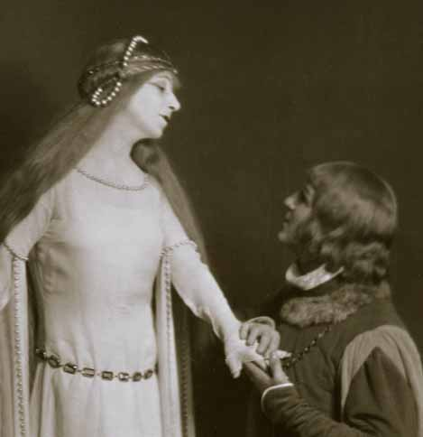
Metropolitan Opera Premiere
Pelléas et Mélisande {1}
Metropolitan Opera House; 03/21/1925
Review |
[Met Performance] CID:89860
Lucia di Lammermoor {122}
Metropolitan Opera House; 03/21/1925
|
[Met Concert/Gala] CID:89870
Twentieth Sunday Night Concert
Metropolitan Opera House; 03/22/1925
|
[Met Performance] CID:89880
Roméo et Juliette {135}
Metropolitan Opera House; 03/23/1925
|
[Met Performance] CID:89890
Giovanni Gallurese {5}
Academy of Music, Philadelphia, Pennsylvania; 03/24/1925
|
[Met Performance] CID:89900
La Juive {33}
Metropolitan Opera House; 03/25/1925
Review |
[Met Performance] CID:89910
Die Meistersinger von Nürnberg {155}
Metropolitan Opera House; 03/26/1925
Review |
[Met Performance] CID:89920
L'Oracolo {47}
Petrouchka {8}
Cavalleria Rusticana {231}
Metropolitan Opera House; 03/26/1925
|
[Met Performance] CID:89930
Pagliacci {239}
Le Coq d'Or {42}
Metropolitan Opera House; 03/27/1925
|
[Met Performance] CID:89940
Pelléas et Mélisande {2}
Metropolitan Opera House; 03/27/1925
|
[Met Performance] CID:89950
Der Freischütz {12}
Metropolitan Opera House; 03/28/1925
|
[Met Performance] CID:89960
Les Contes d'Hoffmann {20}
Metropolitan Opera House; 03/28/1925
|
[Met Concert/Gala] CID:89970
Twenty-First Sunday Night Concert
Metropolitan Opera House; 03/29/1925
|
[Met Concert/Gala] CID:89980
Special Performance
Metropolitan Opera House; 03/30/1925
|
[Met Performance] CID:89990
Petrouchka {9}
La Bohème {224}
Metropolitan Opera House; 03/30/1925
Review |
[Met Performance] CID:90000
Die Meistersinger von Nürnberg {156}
Academy of Music, Philadelphia, Pennsylvania; 03/31/1925
|
[Met Performance] CID:90010
Aida {300}
Metropolitan Opera House; 04/1/1925
|
[Met Performance] CID:90020
Faust {346}
Metropolitan Opera House; 04/1/1925
Review |
[Met Performance] CID:90030
La Juive {34}
Metropolitan Opera House; 04/2/1925
|
[Met Performance] CID:90040
Götterdämmerung {92}
Metropolitan Opera House; 04/3/1925
Review |
[Met Performance] CID:90050
L'Oracolo {48}
Le Coq d'Or {43}
Metropolitan Opera House; 04/4/1925
|
[Met Performance] CID:90060
Carmen {298}
Metropolitan Opera House; 04/4/1925
|
[Met Performance] CID:90070
Verdi Requiem Mass {25}
Metropolitan Opera House; 04/5/1925
|
[Met Performance] CID:90080
La Traviata {132}
Metropolitan Opera House; 04/6/1925
Review |
[Met Performance] CID:90090
La Juive {35}
Academy of Music, Philadelphia, Pennsylvania; 04/7/1925
|
[Met Performance] CID:90100
Der Freischütz {13}
Metropolitan Opera House; 04/8/1925
|
[Met Performance] CID:90110
Faust {347}
Metropolitan Opera House; 04/9/1925
|
[Met Performance] CID:90120
Pelléas et Mélisande {3}
Metropolitan Opera House; 04/9/1925
Review |
[Met Performance] CID:90130
Parsifal {108}
Metropolitan Opera House; 04/10/1925
Review |
[Met Performance] CID:90140
Samson et Dalila {55}
Metropolitan Opera House; 04/10/1925
Review |
[Met Performance] CID:90150
Petrouchka {10}
Rigoletto {144}
Metropolitan Opera House; 04/11/1925
|
[Met Performance] CID:90160
Der Freischütz {14}
Metropolitan Opera House; 04/11/1925
|
[Met Concert/Gala] CID:90170
Twenty-Third Sunday Night Concert
Metropolitan Opera House; 04/12/1925
|
[Met Performance] CID:90180
Cavalleria Rusticana {232}
Pagliacci {240}
Metropolitan Opera House; 04/13/1925
|
[Met Performance] CID:90190
Pelléas et Mélisande {4}
Metropolitan Opera House; 04/13/1925
|
[Met Performance] CID:90200
Aida {301}
Academy of Music, Philadelphia, Pennsylvania; 04/14/1925
Review |
[Met Performance] CID:90210
Boris Godunov {71}
Metropolitan Opera House; 04/15/1925
|
[Met Performance] CID:90220
La Traviata {133}
Metropolitan Opera House; 04/15/1925
|
[Met Performance] CID:90230
Der Freischütz {15}
Metropolitan Opera House; 04/16/1925
|
[Met Performance] CID:90240
Aida {302}
Metropolitan Opera House; 04/17/1925
Review |
[Met Performance] CID:90250
La Bohème {225}
Metropolitan Opera House; 04/18/1925
|
[Met Performance] CID:90260
Il Trovatore {147}
Metropolitan Opera House; 04/18/1925
|
[Met Concert/Gala] CID:90270
Last Sunday Night Concert
Metropolitan Opera House; 04/19/1925
|
[Met Performance] CID:90280
La Gioconda {79}
Auditorium, Atlanta, Georgia; 04/20/1925
|
[Met Performance] CID:90290
Falstaff {41}
Auditorium, Atlanta, Georgia; 04/21/1925
Review |
[Met Performance] CID:90300
La Juive {36}
Auditorium, Atlanta, Georgia; 04/22/1925
Review |
[Met Performance] CID:90310
Lohengrin {342}
Auditorium, Atlanta, Georgia; 04/23/1925
|
[Met Performance] CID:90320
Mefistofele {51}
Auditorium, Atlanta, Georgia; 04/24/1925
Review |
[Met Performance] CID:90330
Les Contes d'Hoffmann {21}
Auditorium, Atlanta, Georgia; 04/25/1925
Review |
[Met Performance] CID:90340
Tosca {187}
Cavalleria Rusticana {233}
Auditorium, Atlanta, Georgia; 04/25/1925
|
[Met Performance] CID:90350
L'Africaine {40}
Public Auditorium,Cleveland, Ohio; 04/27/1925
|
[Met Performance] CID:90360
Faust {348}
Public Auditorium, Cleveland, Ohio; 04/28/1925
|
[Met Performance] CID:90370
Il Trovatore {148}
Public Auditorium, Cleveland, Ohio; 04/29/1925
Review |
[Met Performance] CID:90380
Falstaff {42}
Public Auditorium, Cleveland, Ohio; 04/30/1925
Review |
[Met Performance] CID:90390
Le Coq d'Or {44}
Pagliacci {241}
Public Auditorium, Cleveland, Ohio; 05/1/1925
|
[Met Performance] CID:90400
Parsifal {109}
Public Auditorium, Cleveland, Ohio; 05/2/1925
|
[Met Performance] CID:90410
La Traviata {134}
Public Auditorium, Cleveland, Ohio; 05/2/1925
|
[Met Concert/Gala] CID:90420
Gala Concert
Public Auditorium, Cleveland, Ohio; 05/3/1925
|
[Met Performance] CID:90430
Les Contes d'Hoffmann {22}
Public Auditorium, Cleveland, Ohio; 05/4/1925
|
[Met Performance] CID:90440
Aida {303}
Public Auditorium, Cleveland, Ohio; 05/5/1925
|
[Met Performance] CID:90450
Falstaff {43}
Eastman Theatre, Rochester, New York; 05/6/1925
|
[Met Performance] CID:90460
Boris Godunov {72}
Eastman Theatre, Rochester, New York; 5/7/1925
Review |
[Met Performance] CID:91000
La Gioconda {80}
Metropolitan Opera House; 11/2/1925
Opening Night {41}
Giulio Gatti-Casazza, General Manager
Review |
[Met Performance] CID:91010
La Bohème {226}
Metropolitan Opera House; 11/3/1925
|
[Met Performance] CID:91020
Aida {304}
Brooklyn Academy of Music, New York, Brooklyn; 11/3/1925
|
[Met Performance] CID:91030
Tosca {188}
Metropolitan Opera House; 11/4/1925
Review |
[Met Performance] CID:91040
Pelléas et Mélisande {5}
Metropolitan Opera House; 11/5/1925
Review |
[Met Performance] CID:91050
Fedora {23}
Metropolitan Opera House; 11/6/1925
Review |
[Met Performance] CID:91060
New production (Der Barbier von Bagdad)
Metropolitan Opera Premiere (L'Heure Espagnole)
Der Barbier von Bagdad {13}
L'Heure Espagnole {1}
Metropolitan Opera House; 11/7/1925
Review |
[Met Performance] CID:91070
L'Africaine {41}
Metropolitan Opera House; 11/7/1925
|
[Met Concert/Gala] CID:91080
Italian Night Concert
Metropolitan Opera House; 11/8/1925
|
[Met Performance] CID:91090
Tannhäuser {229}
Metropolitan Opera House; 11/9/1925
Review |
[Met Performance] CID:91100
Martha {83}
American Academy of Music, Philadelphia, Pennsylvania; 11/10/1925
Debut: Agnes Moore
Review |
[Met Performance] CID:91110
Aida {305}
Metropolitan Opera House; 11/11/1925
Debut: Mario Basiola
Review |
[Met Performance] CID:91120
Metropolitan Opera Premiere
La Vestale {1}
Metropolitan Opera House; 11/12/1925
Debut: Albert Troy
Reviews |
[Met Performance] CID:91130
Cavalleria Rusticana {234}
Pagliacci {242}
Metropolitan Opera House; 11/13/1925
Review |
[Met Performance] CID:91140
Madama Butterfly {181}
Metropolitan Opera House; 11/13/1925
Reviews |
[Met Performance] CID:91150
Falstaff {44}
Metropolitan Opera House; 11/14/1925
Review |
[Met Performance] CID:91160
Lohengrin {343}
Metropolitan Opera House; 11/14/1925
Review |
[Met Concert/Gala] CID:91170
Wagner-Verdi Night Concert
Metropolitan Opera House; 11/15/1925
|
[Met Performance] CID:91180
Der Barbier von Bagdad {14}
L'Heure Espagnole {2}
Metropolitan Opera House; 11/16/1925
|
[Met Performance] CID:91190
Tosca {189}
Brooklyn Academy of Music, New York, Brooklyn; 11/17/1925
|
[Met Performance] CID:91200
Pelléas et Mélisande {6}
Metropolitan Opera House; 11/18/1925
|
[Met Performance] CID:91210
Aida {306}
Metropolitan Opera House; 11/19/1925
Debut: Vittorio Fullin
Review |
[Met Performance] CID:91220
Boris Godunov {73}
Metropolitan Opera House; 11/20/1925
Review |
[Met Performance] CID:91230
Tannhäuser {230}
Metropolitan Opera House; 11/20/1925
|
[Met Performance] CID:91240
L'Africaine {42}
Metropolitan Opera House; 11/21/1925
Review |
[Met Performance] CID:91250
Faust {349}
Metropolitan Opera House; 11/21/1925
Review |
[Met Performance] CID:91260
In Concert
Il Trovatore {149}
Metropolitan Opera House; 11/22/1925
|
[Met Performance] CID:91270
Mefistofele {52}
Metropolitan Opera House; 11/23/1925
Review |
[Met Performance] CID:91280
Tosca {190}
American Academy of Music, Philadelphia, Pennsylvania; 11/24/1925
Review |
[Met Performance] CID:91290
La Gioconda {81}
Metropolitan Opera House; 11/25/1925
|
[Met Performance] CID:91300
Parsifal {110}
Metropolitan Opera House; 11/26/1925
Review |
[Met Performance] CID:91310
Cavalleria Rusticana {235}
Pagliacci {243}
Metropolitan Opera House; 11/26/1925
Review |
[Met Performance] CID:91320
La Vestale {2}
Metropolitan Opera House; 11/27/1925
Review |
[Met Performance] CID:91330
Die Meistersinger von Nürnberg {157}
Metropolitan Opera House; 11/28/1925
Debut: Frederick Vajda
Review |
[Met Performance] CID:91350
Faust {350}
Brooklyn Academy of Music, New York, Brooklyn; 11/28/1925
|
[Met Performance] CID:91340
La Bohème {227}
Metropolitan Opera House; 11/28/1925
|
[Met Concert/Gala] CID:91360
Gala Testimonial Concert
Metropolitan Opera House; 11/29/1925
|
[Met Performance] CID:91370
Lohengrin {344}
Metropolitan Opera House; 11/30/1925
Review |
[Met Performance] CID:91380
L'Africaine {43}
American Academy of Music, Philadelphia, Pennsylvania; 12/1/1925
|
[Met Performance] CID:91390
Boris Godunov {74}
Metropolitan Opera House; 12/2/1925
Review |
[Met Performance] CID:91400
Der Barbier von Bagdad {15}
L'Heure Espagnole {3}
Metropolitan Opera House; 12/3/1925
|
[Met Performance] CID:91410
Tosca {191}
Metropolitan Opera House; 12/4/1925
|
[Met Performance] CID:91420
Mefistofele {53}
Metropolitan Opera House; 12/4/1925
|
[Met Performance] CID:91430
Aida {307}
Metropolitan Opera House; 12/5/1925
Debut: Carmela Ponselle
Review |
[Met Performance] CID:91440
Il Trovatore {150}
Metropolitan Opera House; 12/5/1925
Review |
[Met Concert/Gala] CID:91450
Fifth Sunday Night Concert
Metropolitan Opera House; 12/6/1925
|
[Met Performance] CID:91460
La Vestale {3}
Metropolitan Opera House; 12/7/1925
Review |
[Met Performance] CID:91470
Der Barbier von Bagdad {16}
L'Heure Espagnole {4}
American Academy of Music, Philadelphia, Pennsylvania; 12/8/1925
|
[Met Performance] CID:91480
Die Meistersinger von Nürnberg {158}
Metropolitan Opera House; 12/9/1925
Review |
[Met Performance] CID:91490
Faust {351}
Metropolitan Opera House; 12/10/1925
Review |
[Met Performance] CID:91500
La Gioconda {82}
Metropolitan Opera House; 12/11/1925
Review |
[Met Performance] CID:91510
Falstaff {45}
Metropolitan Opera House; 12/11/1925
|
[Met Performance] CID:91520
Metropolitan Opera Premiere
I Gioielli della Madonna {1}
Metropolitan Opera House; 12/12/1925
Review |
[Met Performance] CID:91530
Madama Butterfly {182}
Metropolitan Opera House; 12/12/1925
|
[Met Concert/Gala] CID:91540
Sixth Sunday Night Concert
Metropolitan Opera House; 12/13/1925
|
[Met Performance] CID:91550
Pelléas et Mélisande {7}
Metropolitan Opera House; 12/14/1925
|
[Met Performance] CID:91560
Fedora {24}
Brooklyn Academy of Music, New York, Brooklyn; 12/15/1925
|
[Met Performance] CID:91570
Aida {308}
American Academy of Music, Philadelphia, Pennsylvania; 12/15/1925
Review |
[Met Performance] CID:91580
Andrea Chénier {30}
Metropolitan Opera House; 12/16/1925
Review |
[Met Performance] CID:91590
Lohengrin {345}
Metropolitan Opera House; 12/17/1925
|
[Met Performance] CID:91600
Cavalleria Rusticana {236}
Pagliacci {244}
Metropolitan Opera House; 12/18/1925
|
[Met Performance] CID:91610
La Juive {37}
Metropolitan Opera House; 12/18/1925
Review |
[Met Performance] CID:91620
Martha {84}
Metropolitan Opera House; 12/19/1925
Review |
[Met Performance] CID:91630
Die Meistersinger von Nürnberg {159}
Metropolitan Opera House; 12/19/1925
Review |
[Met Concert/Gala] CID:91640
Seventh Sunday Night Concert
Metropolitan Opera House; 12/20/1925
|
[Met Performance] CID:91650
I Gioielli della Madonna {2}
Metropolitan Opera House; 12/21/1925
|
[Met Performance] CID:91660
Cavalleria Rusticana {237}
L'Heure Espagnole {5}
Brooklyn Academy of Music, New York, Brooklyn; 12/22/1925
|
[Met Performance] CID:91670
Tannhäuser {231}
Metropolitan Opera House; 12/23/1925
|
[Met Performance] CID:91680
La Gioconda {83}
Metropolitan Opera House; 12/24/1925
Review |
[Met Performance] CID:91690
Aida {309}
Metropolitan Opera House; 12/25/1925
|
[Met Performance] CID:91700
La Bohème {228}
Metropolitan Opera House; 12/25/1925
|
[Met Performance] CID:91710
La Vestale {4}
Metropolitan Opera House; 12/26/1925
|
[Met Performance] CID:91720
Lucia di Lammermoor {123}
Metropolitan Opera House; 12/26/1925
|
[Met Concert/Gala] CID:91730
Eighth Sunday Night Concert
Metropolitan Opera House; 12/27/1925
|
[Met Performance] CID:91740
Falstaff {46}
Metropolitan Opera House; 12/28/1925
|
[Met Performance] CID:91750
Rigoletto {145}
Brooklyn Academy of Music, New York, Brooklyn; 12/29/1925
|
[Met Performance] CID:91760
Thaïs {38}
American Academy of Music, Philadelphia, Pennsylvania; 12/29/1925
Review |
[Met Performance] CID:91770
Der Barbier von Bagdad {17}
L'Heure Espagnole {6}
Metropolitan Opera House; 12/30/1925
|
[Met Performance] CID:91780
Roméo et Juliette {136}
Metropolitan Opera House; 12/31/1925
Review |
[Met Performance] CID:91790
I Gioielli della Madonna {3}
Metropolitan Opera House; 01/1/1926
|
[Met Performance] CID:91800
La Gioconda {84}
Metropolitan Opera House; 01/1/1926
|
[Met Performance] CID:91810
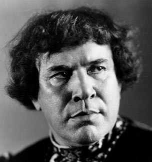
United States Premiere
La Cena delle Beffe {1}
Metropolitan Opera House; 01/2/1926
Reviews |
[Met Performance] CID:91820
Tannhäuser {232}
Metropolitan Opera House; 01/2/1926
|
[Met Concert/Gala] CID:91830
Emergency Fund Benefit Gala Concert
Metropolitan Opera House; 01/3/1926
|
[Met Performance] CID:91840
La Juive {38}
Metropolitan Opera House; 01/4/1926
Review |
[Met Performance] CID:91850
La Cena delle Beffe {2}
American Academy of Music, Philadelphia, Pennsylvania; 01/5/1926
Review |
[Met Performance] CID:91860
La Vestale {5}
Metropolitan Opera House; 01/6/1926
|
[Met Performance] CID:91870
Die Walküre {212}
Metropolitan Opera House; 01/7/1926
Review |
[Met Performance] CID:91880
Cavalleria Rusticana {238}
Pagliacci {245}
Metropolitan Opera House; 01/8/1926
Review |
[Met Performance] CID:91890
Der Barbier von Bagdad {18}
L'Heure Espagnole {7}
Metropolitan Opera House; 01/8/1926
|
[Met Performance] CID:91900
Pelléas et Mélisande {8}
Metropolitan Opera House; 01/9/1926
|
[Met Performance] CID:91910
Fedora {25}
Metropolitan Opera House; 01/9/1926
|
[Met Concert/Gala] CID:91920
Tenth Sunday Night Concert
Metropolitan Opera House; 01/10/1926
|
[Met Performance] CID:91930
La Cena delle Beffe {3}
Metropolitan Opera House; 01/11/1926
Review |
[Met Performance] CID:91940
Tannhäuser {233}
Brooklyn Academy of Music, New York, Brooklyn; 01/12/1926
|
[Met Performance] CID:91950
New production
Il Barbiere di Siviglia {127}
American Academy of Music, Philadelphia, Pennsylvania; 01/12/1926
Review |
[Met Performance] CID:91960
Thaïs {39}
Metropolitan Opera House; 01/13/1926
Review |
[Met Performance] CID:91970
Madama Butterfly {183}
Metropolitan Opera House; 01/14/1926
Review |
[Met Performance] CID:91980
I Gioielli della Madonna {4}
Metropolitan Opera House; 01/15/1926
|
[Met Performance] CID:91990
La Traviata {135}
Metropolitan Opera House; 01/15/1926
Review |
[Met Performance] CID:92000
Tristan und Isolde {167}
Metropolitan Opera House; 01/16/1926
Review |
[Met Performance] CID:92010
Mefistofele {54}
Metropolitan Opera House; 01/16/1926
Review |
[Met Concert/Gala] CID:92020
Eleventh Sunday Night Concert
Metropolitan Opera House; 01/17/1926
|
[Met Performance] CID:92030
Il Barbiere di Siviglia {128}
Metropolitan Opera House; 01/18/1926
Review |
[Met Performance] CID:92040
I Gioielli della Madonna {5}
American Academy of Music, Philadelphia, Pennsylvania; 01/19/1926
Review |
[Met Performance] CID:92050
Die Walküre {213}
Metropolitan Opera House; 01/20/1926
Review |
[Met Performance] CID:92060
La Cena delle Beffe {4}
Metropolitan Opera House; 01/21/1926
Review |
[Met Performance] CID:92070
Lucia di Lammermoor {124}
Metropolitan Opera House; 01/22/1926
|
[Met Performance] CID:92080
Der Freischütz {16}
Metropolitan Opera House; 01/22/1926
Debut: Elizabeth Kandt
Review |
[Met Performance] CID:92090
Tannhäuser {234}
Metropolitan Opera House; 01/23/1926
|
[Met Performance] CID:92100
Falstaff {47}
Metropolitan Opera House; 01/23/1926
|
[Met Performance] CID:92110
Verdi Requiem Mass {26}
Metropolitan Opera House; 01/24/1926
Review |
[Met Performance] CID:92120
Tristan und Isolde {168}
Metropolitan Opera House; 01/25/1926
Review |
[Met Performance] CID:92130
I Gioielli della Madonna {6}
Metropolitan Opera House; 01/26/1926
|
[Met Performance] CID:92140
Il Barbiere di Siviglia {129}
Brooklyn Academy of Music, New York, Brooklyn; 01/26/1926
|
[Met Performance] CID:92150
Roméo et Juliette {137}
Metropolitan Opera House; 01/27/1926
Review |
[Met Performance] CID:92160
La Bohème {229}
Metropolitan Opera House; 01/28/1926
Debut: Mary Lewis
Review |
[Met Performance] CID:92170
New production
The Bartered Bride {26}
Metropolitan Opera House; 01/28/1926
Review |
[Met Performance] CID:92180
La Cena delle Beffe {5}
Metropolitan Opera House; 01/29/1926
|
[Met Performance] CID:92190
Rigoletto {146}
Metropolitan Opera House; 01/30/1926
Review |
[Met Performance] CID:92200
La Juive {39}
Metropolitan Opera House; 01/30/1926
|
[Met Concert/Gala] CID:92210
Thirteenth Sunday Night Concert
Metropolitan Opera House; 01/31/1926
|
[Met Performance] CID:92220
Fedora {26}
Metropolitan Opera House; 02/1/1926
|
[Met Performance] CID:92230
Tristan und Isolde {169}
American Academy of Music, Philadelphia, Pennsylvania; 02/2/1926
Review |
[Met Performance] CID:92240
Lucia di Lammermoor {125}
Metropolitan Opera House; 02/3/1926
|
[Met Performance] CID:92250
Andrea Chénier {31}
Metropolitan Opera House; 02/4/1926
Review |
[Met Performance] CID:92260
Tosca {192}
Metropolitan Opera House; 02/5/1926
|
[Met Performance] CID:92270
Roméo et Juliette {138}
Metropolitan Opera House; 02/5/1926
|
[Met Performance] CID:92280
New production (Gianni Schicchi)
Pagliacci {246}
Gianni Schicchi {12}
Metropolitan Opera House; 02/6/1926
Debut: Stefan Eisler
Review |
[Met Performance] CID:92290
Die Walküre {214}
Metropolitan Opera House; 02/6/1926
|
[Met Concert/Gala] CID:92300
Emergency Fund Benefit Gala Concert
Metropolitan Opera House; 02/7/1926
|
[Met Performance] CID:92310
The Bartered Bride {27}
Metropolitan Opera House; 02/8/1926
Review |
[Met Performance] CID:92320
La Traviata {136}
Metropolitan Opera House; 02/9/1926
|
[Met Performance] CID:92330
La Bohème {230}
Brooklyn Academy of Music, New York, Brooklyn; 02/9/1926
Review |
[Met Performance] CID:92340
I Gioielli della Madonna {7}
Metropolitan Opera House; 02/10/1926
|
[Met Performance] CID:92350
Il Barbiere di Siviglia {130}
Metropolitan Opera House; 02/11/1926
|
[Met Performance] CID:92360
Aida {310}
Metropolitan Opera House; 02/12/1926
|
[Met Performance] CID:92370
Lohengrin {346}
Metropolitan Opera House; 02/12/1926
Review |
[Met Performance] CID:92380
Tosca {193}
Metropolitan Opera House; 02/13/1926
Review |
[Met Performance] CID:92390
La Juive {40}
Metropolitan Opera House; 02/13/1926
Review |
[Met Concert/Gala] CID:92400
Fourteenth Sunday Night Concert
Metropolitan Opera House; 02/14/1926
|
[Met Performance] CID:92410
Roméo et Juliette {139}
Metropolitan Opera House; 02/15/1926
Review |
[Met Performance] CID:92420
La Juive {41}
American Academy of Music, Philadelphia, Pennsylvania; 02/16/1926
Review |
[Met Performance] CID:92430
Tannhäuser {235}
Metropolitan Opera House; 02/17/1926
Debut: Lauritz Melchior
Reviews |
[Met Performance] CID:92440
Rigoletto {147}
Metropolitan Opera House; 02/17/1926
Debut: Marion Talley
Review |
[Met Performance] CID:92450
La Traviata {137}
Metropolitan Opera House; 02/18/1926
|
[Met Performance] CID:92460
World Premiere (Skyscrapers)
Gianni Schicchi {13}
Skyscrapers {1}
Pagliacci {247}
Metropolitan Opera House; 02/19/1926
Debuts: Roger Dodge, John Alden Carpenter, Robert Edmond Jones, Samuel Lee
Review |
[Met Performance] CID:92470
Die Walküre {215}
Metropolitan Opera House; 02/20/1926
Review |
[Met Performance] CID:92480
Aida {311}
Metropolitan Opera House; 02/20/1926
|
[Met Concert/Gala] CID:92490
Fifteenth Sunday Night Concert
Metropolitan Opera House; 02/21/1926
|
[Met Performance] CID:92500
Lucia di Lammermoor {126}
Metropolitan Opera House; 02/22/1926
Review |
[Met Performance] CID:92510
Madama Butterfly {184}
Skyscrapers {2}
Metropolitan Opera House; 02/22/1926
|
[Met Performance] CID:92520
Samson et Dalila {56}
Brooklyn Academy of Music, New York, Brooklyn; 02/23/1926
|
[Met Performance] CID:92530
Die Walküre {216}
American Academy of Music, Philadelphia, Pennsylvania; 02/23/1926
Review |
[Met Performance] CID:92540
Falstaff {48}
Metropolitan Opera House; 02/24/1926
|
[Met Performance] CID:92550
Das Rheingold {61}
Ring Cycle [47]
Metropolitan Opera House; 02/25/1926
Review |
[Met Performance] CID:92560
La Juive {42}
Metropolitan Opera House; 02/25/1926
|
[Met Performance] CID:92570
Rigoletto {148}
Metropolitan Opera House; 02/26/1926
Review |
[Met Performance] CID:92580
The Bartered Bride {28}
Skyscrapers {3}
Metropolitan Opera House; 02/27/1926
|
[Met Performance] CID:92590
La Traviata {138}
Metropolitan Opera House; 02/27/1926
|
[Met Concert/Gala] CID:92600
Seventeenth Sunday Night Concert
Metropolitan Opera House; 02/28/1926
|
[Met Performance] CID:92610
L'Africaine {44}
Metropolitan Opera House; 03/1/1926
Review |
[Met Performance] CID:92620
Tannhäuser {236}
American Academy of Music, Philadelphia, Pennsylvania; 03/2/1926
Review |
[Met Performance] CID:92630
La Bohème {231}
Metropolitan Opera House; 03/3/1926
Review |
[Met Performance] CID:92640
Die Walküre {217}
Ring Cycle [47]
Metropolitan Opera House; 03/4/1926
Review |
[Met Performance] CID:92650
Gianni Schicchi {14}
Skyscrapers {4}
Pagliacci {248}
Metropolitan Opera House; 03/4/1926
|
[Met Performance] CID:92660
Andrea Chénier {32}
Metropolitan Opera House; 03/5/1926
Debut: Dorothea Flexer
Review |
[Met Performance] CID:92670
United States Premieres
La Vida Breve {1}
Le Rossignol {1}
Metropolitan Opera House; 03/6/1926
Review |
[Met Performance] CID:92680
The Bartered Bride {29}
Metropolitan Opera House; 03/6/1926
|
[Met Concert/Gala] CID:92690
Eighteenth Sunday Night Concert
Metropolitan Opera House; 03/7/1926
|
[Met Performance] CID:92700
Der Freischütz {17}
Metropolitan Opera House; 03/8/1926
|
[Met Performance] CID:92710
La Vida Breve {2}
Le Rossignol {2}
American Academy of Music, Philadelphia, Pennsylvania; 03/9/1926
|
[Met Performance] CID:92720
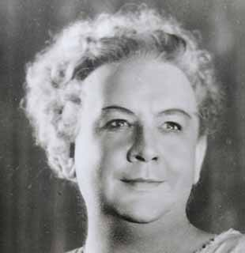
Siegfried {131}
Ring Cycle [47]
Metropolitan Opera House; 03/10/1926
Reviews |
[Met Performance] CID:92730
La Cena delle Beffe {6}
Metropolitan Opera House; 03/10/1926
|
[Met Performance] CID:92740
Die Meistersinger von Nürnberg {160}
Metropolitan Opera House; 03/11/1926
Review |
[Met Performance] CID:92750
Les Contes d'Hoffmann {23}
Metropolitan Opera House; 03/12/1926
Review |
[Met Performance] CID:92760
Aida {312}
Metropolitan Opera House; 03/12/1926
Review |
[Met Performance] CID:92770
La Gioconda {85}
Metropolitan Opera House; 03/13/1926
Review |
[Met Performance] CID:92780
Tosca {194}
Metropolitan Opera House; 03/13/1926
|
[Met Concert/Gala] CID:92790
Nineteenth Sunday Night Concert
Metropolitan Opera House; 03/14/1926
|
[Met Performance] CID:92800
Lucia di Lammermoor {127}
Metropolitan Opera House; 03/15/1926
|
[Met Performance] CID:92810
Andrea Chénier {33}
Metropolitan Opera House; 03/15/1926
|
[Met Performance] CID:92820
Die Meistersinger von Nürnberg {161}
American Academy of Music, Philadelphia, Pennsylvania; 03/16/1926
Review |
[Met Performance] CID:92830
Petrouchka {11}
Gianni Schicchi {15}
Skyscrapers {5}
Metropolitan Opera House; 03/17/1926
Debut: Mollie Friedenthal
Review |
[Met Performance] CID:92840
Falstaff {49}
Metropolitan Opera House; 03/18/1926
|
[Met Performance] CID:92850
Götterdämmerung {93}
Ring Cycle [47]
Metropolitan Opera House; 03/19/1926
Review |
[Met Performance] CID:92860
La Vida Breve {3}
Le Rossignol {3}
Metropolitan Opera House; 03/19/1926
Review |
[Met Performance] CID:92870
Faust {352}
Metropolitan Opera House; 03/20/1926
Review |
[Met Performance] CID:92880
La Cena delle Beffe {7}
Metropolitan Opera House; 03/20/1926
Review |
[Met Concert/Gala] CID:92890
Twentieth Sunday Night Concert
Metropolitan Opera House; 03/21/1926
|
[Met Performance] CID:92900
Petrouchka {12}
La Bohème {232}
Metropolitan Opera House; 03/22/1926
Review |
[Met Performance] CID:92910
La Gioconda {86}
American Academy of Music, Philadelphia, Pennsylvania; 03/23/1926
Review |
[Met Performance] CID:92920
Les Contes d'Hoffmann {24}
Metropolitan Opera House; 03/24/1926
Review |
[Met Performance] CID:92930
The Bartered Bride {30}
Metropolitan Opera House; 03/24/1926
|
[Met Performance] CID:92940
La Vida Breve {4}
Le Rossignol {4}
Metropolitan Opera House; 03/25/1926
|
[Met Performance] CID:92950
Tristan und Isolde {170}
Metropolitan Opera House; 03/26/1926
Review |
[Met Performance] CID:92960
L'Oracolo {49}
Petrouchka {13}
Cavalleria Rusticana {239}
Metropolitan Opera House; 03/26/1926
Review |
[Met Performance] CID:92970
Madama Butterfly {185}
Metropolitan Opera House; 03/27/1926
|
[Met Performance] CID:92980
Rigoletto {149}
Metropolitan Opera House; 03/27/1926
Review |
[Met Concert/Gala] CID:92990
Emergency Fund Benefit Gala Concert
Metropolitan Opera House; 03/28/1926
|
[Met Performance] CID:93000
Siegfried {132}
Metropolitan Opera House; 03/29/1926
Review |
[Met Performance] CID:93010
Faust {353}
Metropolitan Opera House; 03/30/1926
Review |
[Met Performance] CID:93020
Rigoletto {150}
American Academy of Music, Philadelphia, Pennsylvania; 03/30/1926
Review |
[Met Performance] CID:93030
La Traviata {139}
Metropolitan Opera House; 03/31/1926
|
[Met Performance] CID:93040
Petrouchka {14}
La Bohème {233}
Metropolitan Opera House; 04/1/1926
|
[Met Performance] CID:93050
Parsifal {111}
Metropolitan Opera House; 04/2/1926
Review |
[Met Performance] CID:93060
Lucia di Lammermoor {128}
Metropolitan Opera House; 04/2/1926
|
[Met Performance] CID:93070
Metropolitan Opera Premiere
Don Quichotte {1}
Metropolitan Opera House; 04/3/1926
Review |
[Met Performance] CID:93080
Der Freischütz {18}
Skyscrapers {6}
Metropolitan Opera House; 04/3/1926
|
[Met Performance] CID:93090
In Concert
Cavalleria Rusticana {240}
Pagliacci {249}
Metropolitan Opera House; 04/4/1926
|
[Met Performance] CID:93100
Aida {313}
Metropolitan Opera House; 04/5/1926
|
[Met Performance] CID:93110
La Vida Breve {5}
Le Rossignol {5}
Metropolitan Opera House; 04/5/1926
|
[Met Performance] CID:93120
Don Quichotte {2}
American Academy of Music, Philadelphia, Pennsylvania; 04/6/1926
|
[Met Performance] CID:93130
Tristan und Isolde {171}
Metropolitan Opera House; 04/7/1926
|
[Met Performance] CID:93140
Rigoletto {151}
Metropolitan Opera House; 04/8/1926
|
[Met Performance] CID:93150
Don Quichotte {3}
Metropolitan Opera House; 04/8/1926
Review |
[Met Performance] CID:93160
Die Meistersinger von Nürnberg {162}
Metropolitan Opera House; 04/9/1926
Review |
[Met Performance] CID:93170
La Traviata {140}
Metropolitan Opera House; 04/10/1926
|
[Met Performance] CID:93180
Boris Godunov {75}
Metropolitan Opera House; 04/10/1926
|
[Met Performance] CID:93190
Verdi Requiem Mass {27}
Metropolitan Opera House; 04/11/1926
|
[Met Performance] CID:93200
Les Contes d'Hoffmann {25}
Metropolitan Opera House; 04/12/1926
|
[Met Performance] CID:93210
Don Quichotte {4}
Metropolitan Opera House; 04/12/1926
|
[Met Performance] CID:93220
Samson et Dalila {57}
Petrouchka {15}
American Academy of Music, Philadelphia, Pennsylvania; 04/13/1926
Review |
[Met Performance] CID:93230
La Bohème {234}
Metropolitan Opera House; 04/14/1926
|
[Met Performance] CID:93240
Faust {354}
Metropolitan Opera House; 04/14/1926
|
[Met Performance] CID:93250
Götterdämmerung {94}
Metropolitan Opera House; 04/15/1926
Review |
[Met Performance] CID:93260
Don Quichotte {5}
Metropolitan Opera House; 04/16/1926
|
[Met Performance] CID:93270
Andrea Chénier {34}
Petrouchka {16}
Metropolitan Opera House; 04/17/1926
|
[Met Performance] CID:93280
La Gioconda {87}
Metropolitan Opera House; 04/17/1926
Review |
[Met Concert/Gala] CID:93290
Final Sunday Night Concert of the Season
Metropolitan Opera House; 04/18/1926
|
[Met Performance] CID:93300
Aida {314}
Auditorium, Atlanta, Georgia; 04/19/1926
Review |
[Met Performance] CID:93310
Don Quichotte {6}
Auditorium, Atlanta, Georgia; 04/20/1926
Review |
[Met Performance] CID:93320
La Bohème {235}
Pagliacci {250}
Auditorium, Atlanta, Georgia; 04/21/1926
Review |
[Met Performance] CID:93330
I Gioielli della Madonna {8}
Auditorium, Atlanta, Georgia; 04/22/1926
|
[Met Performance] CID:93340
Lucia di Lammermoor {129}
Auditorium, Atlanta, Georgia; 04/23/1926
Review |
[Met Performance] CID:93350
Tannhäuser {237}
Auditorium, Atlanta, Georgia; 04/24/1926
|
[Met Performance] CID:93360
Il Trovatore {151}
Auditorium, Atlanta, Georgia; 04/24/1926
|
[Met Performance] CID:93370
La Cena delle Beffe {8}
Pagliacci {251}
Public Auditorium Cleveland, Ohio; 04/26/1926
|
[Met Performance] CID:93380
Boris Godunov {76}
Public Auditorium, Cleveland, Ohio; 04/27/1926
Review |
[Met Performance] CID:93390
La Gioconda {88}
Public Auditiorium, Cleveland, Ohio; 04/28/1926
Review |
[Met Performance] CID:93400
Roméo et Juliette {140}
Public Auditorium, Cleveland, Ohio; 04/29/1926
|
[Met Performance] CID:93410
Samson et Dalila {58}
Public Auditorium, Cleveland, Ohio; 04/30/1926
|
[Met Performance] CID:93420
Lucia di Lammermoor {130}
Public Auditorium, Cleveland, Ohio; 05/1/1926
|
[Met Performance] CID:93430
La Bohème {236}
Cavalleria Rusticana {2411
Public Auditorium, Cleveland, Ohio; 05/1/1926
|
[Met Performance] CID:93440
Rigoletto {152}
Public Auditorium, Cleveland, Ohio; 05/3/1926
|
[Met Performance] CID:93450
Don Quichotte {7}
Public Auditorium, Cleveland, Ohio; 05/4/1926
|
[Met Performance] CID:93460
Aida {315}
Public Auditorium, Cleveland, Ohio; 05/5/1926
|
[Met Performance] CID:93470
Rigoletto {153}
Eastman Theatre, Rochester, New York; 05/6/1926
|
[Met Performance] CID:93480
Tosca {195}
Eastman Theatre, Rochester, New York; 5/7/1926
|
[Met Performance] CID:94000
La Vestale {6}
Metropolitan Opera House; 11/1/1926
Opening Night {42}
Giulio Gatti-Casazza, General Manager
Debuts: Ezio Pinza, Arthur Mahoney
Review |
[Met Performance] CID:94020
Tosca {196}
American Academy of Music, Philadelphia, Pennsylvania; 11/2/1926
Review |
[Met Performance] CID:94010
Lucia di Lammermoor {131}
Brooklyn Academy of Music, New York, Brooklyn; 11/2/1926
Debut: Alfio Tedesco |
[Met Performance] CID:94030
Die Meistersinger von Nürnberg {163}
Metropolitan Opera House; 11/3/1926
Review |
[Met Performance] CID:94040
I Gioielli della Madonna {9}
Metropolitan Opera House; 11/4/1926
Debuts: Juan Casanova, Vincenzo Bellezza
Review |
[Met Performance] CID:94050
Martha {85}
Metropolitan Opera House; 11/5/1926
Review |
[Met Performance] CID:94060
New production
Die Zauberflöte {62}
Metropolitan Opera House; 11/6/1926
Debut: Editha Fleischer
Review |
[Met Performance] CID:94070
Faust {355}
Metropolitan Opera House; 11/6/1926
|
[Met Concert/Gala] CID:94080
Sunday Night Concert
Metropolitan Opera House; 11/7/1926
|
[Met Performance] CID:94090
Tannhäuser {238}
Metropolitan Opera House; 11/8/1926
Debut: Louise Lerch
Review |
[Met Performance] CID:94100
L'Africaine {45}
American Academy of Music, Philadelphia, Pennsylvania; 11/9/1926
Review |
[Met Performance] CID:94110
Rigoletto {154}
Metropolitan Opera House; 11/10/1926
Review |
[Met Performance] CID:94120
Aida {316}
Metropolitan Opera House; 11/10/1926
Review |
[Met Performance] CID:94130
Madama Butterfly {186}
Metropolitan Opera House; 11/11/1926
Review |
[Met Performance] CID:94140
La Juive {43}
Metropolitan Opera House; 11/12/1926
Review |
[Met Performance] CID:94150
La Bohème {237}
Metropolitan Opera House; 11/13/1926
|
[Met Performance] CID:94160
Die Meistersinger von Nürnberg {164}
Metropolitan Opera House; 11/13/1926
Debut: George Cehanovsky |
[Met Concert/Gala] CID:94170
Verdi - Mascagni Program Concert
Metropolitan Opera House; 11/14/1926
|
[Met Performance] CID:94180
Die Zauberflöte {63}
Metropolitan Opera House; 11/15/1926
|
[Met Performance] CID:94190
 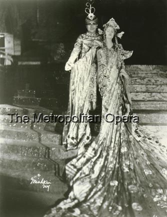
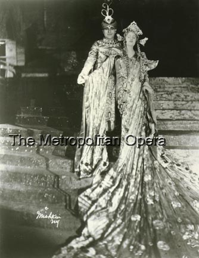
United States Premiere
Turandot {1}
Metropolitan Opera House; 11/16/1926
Debuts: Martha Attwood, Pavel Ludikar
Reviews/ Chapter: Notes on Turandot |
[Met Performance] CID:94200
Andrea Chénier {35}
Metropolitan Opera House; 11/17/1926
Review |
[Met Performance] CID:94210
Faust {356}
Metropolitan Opera House; 11/18/1926
|
[Met Performance] CID:94220
Lucia di Lammermoor {132}
Metropolitan Opera House; 11/19/1926
|
[Met Performance] CID:94230
Lohengrin {347}
Metropolitan Opera House; 11/19/1926
Review |
[Met Performance] CID:94240
La Gioconda {89}
Metropolitan Opera House; 11/20/1926
Review |
[Met Performance] CID:94250
Cavalleria Rusticana {242}
Pagliacci {252}
Metropolitan Opera House; 11/20/1926
Debut: Elda Vettori
Review |
[Met Concert/Gala] CID:94260
Sunday Night Concert
Metropolitan Opera House; 11/21/1926
Review |
[Met Performance] CID:94270
L'Africaine {46}
Metropolitan Opera House; 11/22/1926
Review |
[Met Performance] CID:94280
Die Zauberflöte {64}
American Academy of Music, Philadelphia, Pennsylvania; 11/23/1926
Review |
[Met Performance] CID:94290
Turandot {2}
Metropolitan Opera House; 11/24/1926
|
[Met Performance] CID:94300
Madama Butterfly {187}
Le Rossignol {6}
Metropolitan Opera House; 11/25/1926
Review |
[Met Performance] CID:94310
La Vestale {7}
Metropolitan Opera House; 11/25/1926
|
[Met Performance] CID:94320
Rigoletto {155}
Metropolitan Opera House; 11/26/1926
|
[Met Performance] CID:94330
Tannhäuser {239}
Metropolitan Opera House; 11/27/1926
|
[Met Performance] CID:94340
La Bohème {238}
Metropolitan Opera House; 11/27/1926
|
[Met Performance] CID:94350
La Cena delle Beffe {9}
Brooklyn Academy of Music, New York, Brooklyn; 11/27/1926
|
[Met Concert/Gala] CID:94360
Sunday Night Concert
Metropolitan Opera House; 11/28/1926
|
[Met Performance] CID:94370
La Juive {44}
Metropolitan Opera House; 11/29/1926
|
[Met Performance] CID:94380
Turandot {3}
American Academy of Music, Philadelphia, Pennsylvania; 11/30/1926
Review |
[Met Performance] CID:94390
Martha {86}
Le Rossignol {7}
Metropolitan Opera House; 12/1/1926
|
[Met Performance] CID:94400
I Gioielli della Madonna {10}
Metropolitan Opera House; 12/2/1926
|
[Met Performance] CID:94410
Die Zauberflöte {65}
Metropolitan Opera House; 12/2/1926
|
[Met Performance] CID:94420
La Vestale {8}
Metropolitan Opera House; 12/3/1926
|
[Met Performance] CID:94430
Falstaff {50}
Metropolitan Opera House; 12/4/1926
Review |
[Met Performance] CID:94440
Lohengrin {348}
Metropolitan Opera House; 12/4/1926
|
[Met Performance] CID:94450
Verdi Requiem Mass {28}
Metropolitan Opera House; 12/5/1926
|
[Met Performance] CID:94460
Turandot {4}
Metropolitan Opera House; 12/6/1926
|
[Met Performance] CID:94470
Die Zauberflöte {66}
Brooklyn Academy of Music, New York, Brooklyn; 12/7/1926
|
[Met Performance] CID:94480
La Bohème {239}
American Academy of Music, Philadelphia, Pennsylvania; 12/7/1926
Review |
[Met Performance] CID:94490
Aida {317}
Metropolitan Opera House; 12/8/1926
|
[Met Performance] CID:94500
Die Walküre {218}
Metropolitan Opera House; 12/8/1926
Review |
[Met Performance] CID:94510
Andrea Chénier {36}
Metropolitan Opera House; 12/9/1926
|
[Met Performance] CID:94520
La Cena delle Beffe {10}
Le Rossignol {8}
Metropolitan Opera House; 12/10/1926
Review |
[Met Performance] CID:94530
La Forza del Destino {25}
Metropolitan Opera House; 12/11/1926
Review |
[Met Performance] CID:94540
La Gioconda {90}
Metropolitan Opera House; 12/11/1926
|
[Met Concert/Gala] CID:94550
Speciall All-Wagner Concert
Metropolitan Opera House; 12/12/1926
|
[Met Performance] CID:94560
Rigoletto {156}
Metropolitan Opera House; 12/13/1926
|
[Met Performance] CID:94570
Andrea Chénier {37}
American Academy of Music, Philadelphia, Pennsylvania; 12/14/1926
Review |
[Met Performance] CID:94580
Tosca {197}
Metropolitan Opera House; 12/15/1926
|
[Met Performance] CID:94590
La Juive {45}
Metropolitan Opera House; 12/15/1926
|
[Met Performance] CID:94600
Die Meistersinger von Nürnberg {165}
Metropolitan Opera House; 12/16/1926
Review |
[Met Performance] CID:94610
Turandot {5}
Metropolitan Opera House; 12/17/1926
|
[Met Performance] CID:94620
Don Quichotte {8}
Metropolitan Opera House; 12/18/1926
Review |
[Met Performance] CID:94630
Die Zauberflöte {67}
Metropolitan Opera House; 12/18/1926
Review |
[Met Concert/Gala] CID:94640
Sunday Night Concert
Metropolitan Opera House; 12/19/1926
|
[Met Performance] CID:94650
Cavalleria Rusticana {243}
Lucia di Lammermoor {133}
Metropolitan Opera House; 12/20/1926
|
[Met Performance] CID:94660
I Gioielli della Madonna {11}
Metropolitan Opera House; 12/20/1926
|
[Met Performance] CID:94670
Don Quichotte {9}
Brooklyn Academy of Music, New York, Brooklyn; 12/21/1926
|
[Met Performance] CID:94680
Lohengrin {349}
Metropolitan Opera House; 12/22/1926
Review |
[Met Performance] CID:94690
La Gioconda {91}
Metropolitan Opera House; 12/23/1926
Review |
[Met Performance] CID:94700
Faust {357}
Metropolitan Opera House; 12/24/1926
|
[Met Performance] CID:94710
Die Walküre {219}
Metropolitan Opera House; 12/25/1926
Review |
[Met Performance] CID:94720
La Forza del Destino {26}
Metropolitan Opera House; 12/25/1926
|
[Met Concert/Gala] CID:94730
Sunday Night Concert
Metropolitan Opera House; 12/26/1926
|
[Met Performance] CID:94740
Falstaff {51}
Metropolitan Opera House; 12/27/1926
|
[Met Performance] CID:94750
Cavalleria Rusticana {244}
Pagliacci {253}
Brooklyn Academy of Music, New York, Brooklyn; 12/28/1926
Review |
[Met Performance] CID:94760
Die Walküre {220}
American Academy of Music, Philadelphia, Pennsylvania; 12/28/1926
|
[Met Performance] CID:94770
L'Amore dei Tre Re {41}
Skyscrapers {7}
Metropolitan Opera House; 12/29/1926
Review |
[Met Performance] CID:94780
Aida {318}
Metropolitan Opera House; 12/30/1926
Debut: Joseph Macpherson |
[Met Performance] CID:94790
Turandot {6}
Metropolitan Opera House; 12/30/1926
Review |
[Met Performance] CID:94800
Die Zauberflöte {68}
Metropolitan Opera House; 12/31/1926
|
[Met Performance] CID:94810
La Cena delle Beffe {11}
Skyscrapers {8}
Metropolitan Opera House; 01/1/1927
|
[Met Performance] CID:94820
Tannhäuser {240}
Metropolitan Opera House; 01/1/1927
|
[Met Concert/Gala] CID:94830
New Year Holiday Concert
Metropolitan Opera House; 01/2/1927
|
[Met Concert/Gala] CID:94840
New Year Holiday Concert
Metropolitan Opera House; 01/2/1927
|
[Met Performance] CID:94850
Die Meistersinger von Nürnberg {166}
Metropolitan Opera House; 01/3/1927
|
[Met Performance] CID:94860
La Vestale {9}
American Academy of Music, Philadelphia, Pennsylvania; 01/4/1927
|
[Met Performance] CID:94870
Cavalleria Rusticana {245}
Pagliacci {254}
Metropolitan Opera House; 01/5/1927
|
[Met Performance] CID:94880
La Traviata {141}
Metropolitan Opera House; 01/5/1927
|
[Met Performance] CID:94890
Lohengrin {350}
Metropolitan Opera House; 01/6/1927
|
[Met Performance] CID:94900
Aida {319}
Metropolitan Opera House; 01/7/1927
|
[Met Performance] CID:94910
Turandot {7}
Metropolitan Opera House; 01/8/1927
|
[Met Performance] CID:94920
La Gioconda {92}
Metropolitan Opera House; 01/8/1927
|
[Met Concert/Gala] CID:94930
Gala Concert
Metropolitan Opera House; 01/9/1927
|
[Met Performance] CID:94940
Il Barbiere di Siviglia {131}
Skyscrapers {9}
Metropolitan Opera House; 01/10/1927
|
[Met Performance] CID:94950
Il Trovatore {152}
Brooklyn Academy of Music, New York, Brooklyn; 01/11/1927
|
[Met Performance] CID:94960
La Cena delle Beffe {12}
American Academy of Music, Philadelphia, Pennsylvania; 01/11/1927
|
[Met Performance] CID:94970
Tannhäuser {241}
Metropolitan Opera House; 01/12/1927
|
[Met Performance] CID:94980
Rigoletto {157}
Metropolitan Opera House; 01/13/1927
|
[Met Performance] CID:94990
La Forza del Destino {27}
Metropolitan Opera House; 01/13/1927
|
[Met Performance] CID:95000
Götterdämmerung {95}
Metropolitan Opera House; 01/14/1927
|
[Met Performance] CID:95010
L'Africaine {47}
Metropolitan Opera House; 01/15/1927
|
[Met Performance] CID:95020
Falstaff {52}
Skyscrapers {10}
Metropolitan Opera House; 01/15/1927
|
[Met Concert/Gala] CID:95030
Grand Operatic Concert
Metropolitan Opera House; 01/16/1927
|
[Met Performance] CID:95040
Die Walküre {221}
Metropolitan Opera House; 01/17/1927
|
[Met Performance] CID:95050
Rigoletto {158}
American Academy of Music, Philadelphia, Pennsylvania; 01/18/1927
|
[Met Performance] CID:95060
Cavalleria Rusticana {246}
Pagliacci {255}
Metropolitan Opera House; 01/19/1927
|
[Met Performance] CID:95070
Roméo et Juliette {141}
Metropolitan Opera House; 01/20/1927
|
[Met Performance] CID:95080
Turandot {8}
Metropolitan Opera House; 01/21/1927
|
[Met Performance] CID:95090
Lucia di Lammermoor {134}
Skyscrapers {11}
Metropolitan Opera House; 01/21/1927
|
[Met Performance] CID:95100
New production
Fidelio {49}
Metropolitan Opera House; 01/22/1927
|
[Met Performance] CID:95110
La Juive {46}
Metropolitan Opera House; 01/22/1927
|
[Met Concert/Gala] CID:95120
Gala Concert: Verdi-Puccini-Meyerbeer Program
Metropolitan Opera House; 01/23/1927
|
[Met Performance] CID:95130
Tosca {198}
Metropolitan Opera House; 01/24/1927
|
[Met Performance] CID:95140
Rigoletto {159}
Brooklyn Academy of Music, New York, Brooklyn; 01/25/1927
|
[Met Performance] CID:95150
L'Amore dei Tre Re {42}
American Academy of Music, Philadelphia, Pennsylvania; 01/25/1927
|
[Met Performance] CID:95160
Götterdämmerung {96}
Metropolitan Opera House; 01/26/1927
|
[Met Performance] CID:95170
Il Barbiere di Siviglia {132}
Metropolitan Opera House; 01/27/1927
|
[Met Performance] CID:95180
Turandot {9}
Metropolitan Opera House; 01/28/1927
|
[Met Performance] CID:95190
Das Rheingold {62}
Metropolitan Opera House; 01/28/1927
Debut: Walter Kirchhoff
Program announcement: "Intermission after the Second Scene."
Review |
[Met Performance] CID:95200
L'Amore dei Tre Re {43}
Gianni Schicchi {16}
Metropolitan Opera House; 01/29/1927
Review |
[Met Performance] CID:95210
Aida {320}
Metropolitan Opera House; 01/29/1927
|
[Met Concert/Gala] CID:95220
Sunday Night Concert
Metropolitan Opera House; 01/30/1927
|
[Met Performance] CID:95230
La Traviata {142}
Metropolitan Opera House; 01/31/1927
|
[Met Performance] CID:95240
Lohengrin {351}
American Academy of Music, Philadelphia, Pennsylvania; 02/1/1927
Review |
[Met Performance] CID:95250
Falstaff {53}
Metropolitan Opera House; 02/2/1927
Review |
[Met Performance] CID:95260
Fidelio {50}
Metropolitan Opera House; 02/3/1927
|
[Met Performance] CID:95270
La Bohème {240}
Metropolitan Opera House; 02/4/1927
|
[Met Performance] CID:95280
I Gioielli della Madonna {12}
Metropolitan Opera House; 02/4/1927
|
[Met Performance] CID:95290
Rigoletto {160}
Metropolitan Opera House; 02/5/1927
|
[Met Performance] CID:95300
Götterdämmerung {97}
Metropolitan Opera House; 02/5/1927
|
[Met Performance] CID:95310
Concert /
Cavalleria Rusticana {247}
Metropolitan Opera House; 02/6/1927
|
[Met Performance] CID:95320
The Bartered Bride {31}
Metropolitan Opera House; 02/7/1927
Debut: Ruth Page
Review |
[Met Performance] CID:95330
Roméo et Juliette {142}
Brooklyn Academy of Music, New York, Brooklyn; 02/8/1927
Review |
[Met Performance] CID:95340
Tosca {199}
Metropolitan Opera House; 02/9/1927
|
[Met Performance] CID:95350
Il Trovatore {153}
Metropolitan Opera House; 02/9/1927
|
[Met Performance] CID:95360
Siegfried {133}
Metropolitan Opera House; 02/10/1927
Review |
[Met Performance] CID:95370
Pelléas et Mélisande {9}
Metropolitan Opera House; 02/11/1927
Review |
[Met Performance] CID:95380
Cavalleria Rusticana {248}
Pagliacci {256}
Metropolitan Opera House; 02/12/1927
|
[Met Performance] CID:95390
I Gioielli della Madonna {13}
Metropolitan Opera House; 02/12/1927
|
[Met Concert/Gala] CID:95400
Sunday Night Concert
Metropolitan Opera House; 02/13/1927
|
[Met Performance] CID:95410
La Bohème {241}
Metropolitan Opera House; 02/14/1927
Review |
[Met Performance] CID:95420
La Juive {47}
American Academy of Music, Philadelphia, Pennsylvania; 02/15/1927
Review |
[Met Performance] CID:95430
Lohengrin {352}
Metropolitan Opera House; 02/16/1927
Review |
[Met Performance] CID:95440
Madama Butterfly {188}
Metropolitan Opera House; 02/16/1927
|
[Met Performance] CID:95450
Chapter Reviews:The King's Henchman
World Premiere
The King's Henchman {1}
Metropolitan Opera House; 02/17/1927
Review |
[Met Performance] CID:95460
Les Contes d'Hoffmann {26}
Metropolitan Opera House; 02/18/1927
|
[Met Performance] CID:95470
Die Walküre {222}
Metropolitan Opera House; 02/18/1927
Review |
[Met Performance] CID:95480
Lucia di Lammermoor {135}
Metropolitan Opera House; 02/19/1927
|
[Met Performance] CID:95490
Roméo et Juliette {143}
Metropolitan Opera House; 02/19/1927
|
[Met Concert/Gala] CID:95500
Sunday Night Concert
Metropolitan Opera House; 02/20/1927
|
[Met Performance] CID:95510
The King's Henchman {2}
Metropolitan Opera House; 02/21/1927
Review |
[Met Performance] CID:95520
Il Trovatore {154}
Metropolitan Opera House; 02/22/1927
|
[Met Performance] CID:95530
Siegfried {134}
Brooklyn Academy of Music, New York, Brooklyn; 02/22/1927
Review |
[Met Performance] CID:95540
Pelléas et Mélisande {10}
Metropolitan Opera House; 02/23/1927
|
[Met Performance] CID:95550
Das Rheingold {63}
Ring Cycle [48]
Metropolitan Opera House; 02/24/1927
Review |
[Met Performance] CID:95560
La Bohème {242}
Metropolitan Opera House; 02/24/1927
Review |
[Met Performance] CID:95570
Andrea Chénier {38}
Metropolitan Opera House; 02/25/1927
Review |
[Met Performance] CID:95580
The Bartered Bride {32}
Metropolitan Opera House; 02/26/1927
Review |
[Met Performance] CID:95590
Rigoletto {161}
Metropolitan Opera House; 02/26/1927
|
[Met Concert/Gala] CID:95600
Gala Concert
Metropolitan Opera House; 02/27/1927
|
[Met Performance] CID:95610
L'Amore dei Tre Re {44}
Gianni Schicchi {17}
Metropolitan Opera House; 02/28/1927
Review |
[Met Performance] CID:95630
Siegfried {135}
American Academy of Music, Philadelphia, Pennsylvania; 03/1/1927
Review |
[Met Performance] CID:95620
Les Contes d'Hoffmann {27}
Metropolitan Opera House; 03/1/1927
|
[Met Performance] CID:95640
La Gioconda {93}
Metropolitan Opera House; 03/2/1927
|
[Met Performance] CID:95650
Lucia di Lammermoor {136}
Metropolitan Opera House; 03/3/1927
|
[Met Performance] CID:95660
Die Walküre {223}
Ring Cycle [48]
Metropolitan Opera House; 03/4/1927
|
[Met Performance] CID:95670
La Traviata {143}
Metropolitan Opera House; 03/4/1927
|
[Met Performance] CID:95680
Faust {358}
Metropolitan Opera House; 03/5/1927
Review |
[Met Performance] CID:95690
Madama Butterfly {189}
Metropolitan Opera House; 03/5/1927
|
[Met Performance] CID:95700
L'Africaine {48}
Brooklyn Academy of Music, New York, Brooklyn; 03/5/1927
|
[Met Concert/Gala] CID:95710
Special All-Wagner Concert
Metropolitan Opera House; 03/6/1927
|
[Met Performance] CID:95720
Das Rheingold {64}
Metropolitan Opera House; 03/7/1927
Review |
[Met Performance] CID:95730
Aida {321}
Metropolitan Opera House; 03/8/1927
|
[Met Performance] CID:95740
Madama Butterfly {190}
American Academy of Music, Philadelphia, Pennsylvania; 03/8/1927
Review |
[Met Performance] CID:95750
Fidelio {51}
Metropolitan Opera House; 03/9/1927
Review |
[Met Performance] CID:95760
New production
Mignon {31}
Metropolitan Opera House; 03/10/1927
Review |
[Met Performance] CID:95770
Siegfried {136}
Ring Cycle [48]
Metropolitan Opera House; 03/11/1927
Review |
[Met Performance] CID:95780
The King's Henchman {3}
Metropolitan Opera House; 03/11/1927
|
[Met Performance] CID:95790
Pelléas et Mélisande {11}
Metropolitan Opera House; 03/12/1927
|
[Met Performance] CID:95800
Lucia di Lammermoor {137}
Metropolitan Opera House; 03/12/1927
|
[Met Concert/Gala] CID:95810
Sunday Night Concert
Metropolitan Opera House; 03/13/1927
|
[Met Performance] CID:95820
La Gioconda {94}
Metropolitan Opera House; 03/14/1927
|
[Met Performance] CID:95830
Les Contes d'Hoffmann {28}
Brooklyn Academy of Music, New York, Brooklyn; 03/15/1927
Review |
[Met Performance] CID:95840
Falstaff {54}
American Academy of Music, Philadelphia, Pennsylvania; 03/15/1927
Review |
[Met Performance] CID:95850
Der Rosenkavalier {39}
Metropolitan Opera House; 03/16/1927
Review |
[Met Performance] CID:95860
Cavalleria Rusticana {249}
Pagliacci {257}
Metropolitan Opera House; 03/17/1927
Review |
[Met Performance] CID:95870
Götterdämmerung {98}
Ring Cycle [48]
Metropolitan Opera House; 03/18/1927
|
[Met Performance] CID:95880
Mignon {32}
Metropolitan Opera House; 03/18/1927
|
[Met Performance] CID:95890
Metropolitan Opera Premiere (La Giara)
Madama Butterfly {191}
La Giara {1}
Metropolitan Opera House; 03/19/1927
Debuts: Michael Angelo, August Berger |
[Met Performance] CID:95900
Aida {322}
Metropolitan Opera House; 03/19/1927
|
[Met Concert/Gala] CID:95910
Sunday Night Concert
Metropolitan Opera House; 03/20/1927
|
[Met Performance] CID:95920
La Giara {2}
Les Contes d'Hoffmann {29}
Metropolitan Opera House; 03/21/1927
|
[Met Performance] CID:95930
Faust {359}
Metropolitan Opera House; 03/22/1927
|
[Met Performance] CID:95940
Tristan und Isolde {172}
American Academy of Music, Philadelphia, Pennsylvania; 03/22/1927
Review |
[Met Performance] CID:95950
The King's Henchman {4}
Metropolitan Opera House; 03/23/1927
|
[Met Performance] CID:95960
La Bohème {243}
Metropolitan Opera House; 03/23/1927
|
[Met Performance] CID:95970
Der Rosenkavalier {40}
Metropolitan Opera House; 03/24/1927
|
[Met Performance] CID:95980
Tristan und Isolde {173}
Metropolitan Opera House; 03/25/1927
|
[Met Performance] CID:95990
Boris Godunov {77}
Metropolitan Opera House; 03/25/1927
Review |
[Met Performance] CID:96000
La Traviata {144}
Metropolitan Opera House; 03/26/1927
|
[Met Performance] CID:96010
Tosca {200}
Metropolitan Opera House; 03/26/1927
|
[Met Concert/Gala] CID:96020
Sunday Night Concert
Metropolitan Opera House; 03/27/1927
|
[Met Performance] CID:96030
Mignon {33}
Metropolitan Opera House; 03/28/1927
|
[Met Performance] CID:96040
The King's Henchman {5}
American Academy of Music, Philadelphia, Pennsylvania; 03/29/1927
|
[Met Performance] CID:96050
Die Meistersinger von Nürnberg {167}
Metropolitan Opera House; 03/30/1927
Review |
[Met Performance] CID:96060
Faust {360}
Metropolitan Opera House; 03/30/1927
|
[Met Performance] CID:96070
Aida {323}
Metropolitan Opera House; 03/31/1927
|
[Met Performance] CID:96080
Boris Godunov {78}
Metropolitan Opera House; 04/1/1927
|
[Met Performance] CID:96090
La Gioconda {95}
Metropolitan Opera House; 04/1/1927
|
[Met Performance] CID:96100
The King's Henchman {6}
Metropolitan Opera House; 04/2/1927
|
[Met Performance] CID:96110
Siegfried {137}
Metropolitan Opera House; 04/2/1927
|
[Met Concert/Gala] CID:96120
Sunday Night Concert
Metropolitan Opera House; 04/3/1927
|
[Met Performance] CID:96130
Tristan und Isolde {174}
Metropolitan Opera House; 04/4/1927
Review |
[Met Performance] CID:96140
La Bohème {244}
Metropolitan Opera House; 04/5/1927
|
[Met Performance] CID:96150
Boris Godunov {79}
American Academy of Music, Philadelphia, Pennsylvania; 04/5/1927
Review |
[Met Performance] CID:96160
La Giara {3}
The Bartered Bride {33}
Metropolitan Opera House; 04/6/1927
|
[Met Performance] CID:96170
Pelléas et Mélisande {12}
Metropolitan Opera House; 04/7/1927
|
[Met Performance] CID:96180
Die Meistersinger von Nürnberg {168}
Metropolitan Opera House; 04/8/1927
|
[Met Performance] CID:96190
Mignon {34}
Metropolitan Opera House; 04/9/1927
|
[Met Performance] CID:96200
L'Africaine {49}
Metropolitan Opera House; 04/9/1927
|
[Met Concert/Gala] CID:96210
Gala Concert
Metropolitan Opera House; 04/10/1927
|
[Met Performance] CID:96220
Aida {324}
Metropolitan Opera House; 04/11/1927
Review |
[Met Performance] CID:96230
Mignon {35}
American Academy of Music, Philadelphia, Pennsylvania; 04/12/1927
|
[Met Performance] CID:96240
The King's Henchman {7}
Metropolitan Opera House; 04/13/1927
|
[Met Performance] CID:96250
Cavalleria Rusticana {250}
Pagliacci {258}
Metropolitan Opera House; 04/14/1927
|
[Met Performance] CID:96260
La Giara {4}
Rigoletto {162}
Metropolitan Opera House; 04/14/1927
|
[Met Performance] CID:96270
Parsifal {112}
Metropolitan Opera House; 04/15/1927
|
[Met Performance] CID:96280
Les Contes d'Hoffmann {30}
Metropolitan Opera House; 04/15/1927
|
[Met Performance] CID:96290
Der Rosenkavalier {41}
Metropolitan Opera House; 04/16/1927
|
[Met Performance] CID:96300
La Gioconda {96}
Metropolitan Opera House; 04/16/1927
|
[Met Concert/Gala] CID:96310
Sunday Night Concert
Metropolitan Opera House; 04/17/1927
|
[Met Performance] CID:96320
Turandot {10}
Lyric Theatre, Baltimore, Maryland; 04/18/1927
Review |
[Met Performance] CID:96330
Il Trovatore {155}
Lyric Theatre, Baltimore, Maryland; 04/19/1927
Review |
[Met Performance] CID:96340
Rigoletto {163}
Lyric Theatre, Baltimore, Maryland; 04/20/1927
Review |
[Met Performance] CID:96350
La Bohème {245}
Cavalleria Rusticana {251}
Lyric Theatre, Baltimore, Maryland; 04/21/1927
|
[Met Performance] CID:96360
La Traviata {145}
Washington Auditorium, Washington, D.C.; 04/22/1927
Review |
[Met Performance] CID:96370
La Bohème {246}
Cavalleria Rusticana {252}
Washington Auditorium, Washington, D.C.; 04/23/1927
Review |
[Met Performance] CID:96380
Il Trovatore {156}
Washington Auditorium, Washington, D.C.; 04/23/1927
Review |
[Met Performance] CID:96390
La Traviata {146}
Auditorium, Atlanta, Georgia; 04/25/1927
Review |
[Met Performance] CID:96400
Gianni Schicchi {18}
L'Amore dei Tre Re {45}
Auditorium, Atlanta, Georgia; 04/26/1927
|
[Met Performance] CID:96410
Turandot {11}
Auditorium, Atlanta, Georgia; 04/27/1927
|
[Met Performance] CID:96420
Mignon {36}
Auditorium, Atlanta, Georgia; 04/28/1927
Debut: Elizabeth Mayer |
[Met Performance] CID:96430
Lohengrin {353}
Auditorium, Atlanta, Georgia; 04/29/1927
Review |
[Met Performance] CID:96440
La Forza del Destino {28}
Auditorium, Atlanta, Georgia; 04/29/1927
|
[Met Performance] CID:96450
Roméo et Juliette {144}
Auditorium, Atlanta, Georgia; 04/30/1927
|
[Met Performance] CID:96460
Madama Butterfly {192}
Auditorium, Atlanta, Georgia; 04/30/1927
|
[Met Performance] CID:96470
Aida {325}
Public Auditorium, Cleveland, Ohio; 05/2/1927
Review |
[Met Performance] CID:96480
Turandot {12}
Public Auditorium, Cleveland, Ohio; 05/3/1927
|
[Met Performance] CID:96490
La Traviata {147}
Public Auditorium, Cleveland, Ohio; 05/4/1927
|
[Met Performance] CID:96500
La Forza del Destino {29}
Public Auditorium, Cleveland, Ohio; 05/5/1927
Review |
[Met Performance] CID:96510
Mignon {37}
Public Auditorium, Cleveland, Ohio; 05/6/1927
|
[Met Performance] CID:96520
Lohengrin {354}
Public Auditorium, Cleveland, Ohio; 05/6/1927
|
[Met Performance] CID:96530
La Bohème {247}
Public Auditorium, Cleveland, Ohio; 05/7/1927
|
[Met Performance] CID:96540
Il Trovatore {157}
Public Auditorium, Cleveland, Ohio; 05/7/1927
Review |
[Met Performance] CID:96550
La Forza del Destino {30}
Eastman Theatre, Rochester, New York; 05/9/1927
|
[Met Performance] CID:96560
Les Contes d'Hoffmann {31}
Eastman Theatre, Rochester, New York; 5/10/1927
|
[Met Performance] CID:97000
Turandot {13}
Metropolitan Opera House; 10/31/1927
Opening Night {43}
Giulio Gatti-Casazza, General Manager
Review |
[Met Performance] CID:97010
Madama Butterfly {193}
Brooklyn Academy of Music, New York, Brooklyn; 11/1/1927
|
[Met Performance] CID:97020
La Gioconda {97}
American Academy of Music, Philadelphia, Pennsylvania; 11/1/1927
Review |
[Met Performance] CID:97030
Die Meistersinger von Nürnberg {169}
Metropolitan Opera House; 11/2/1927
Debuts: Grete Stückgold, Richard Mayr
Review |
[Met Performance] CID:97040
Andrea Chénier {39}
Metropolitan Opera House; 11/3/1927
Review |
[Met Performance] CID:97050
La Forza del Destino {31}
Metropolitan Opera House; 11/4/1927
Debut: Philine Falco
Review |
[Met Performance] CID:97060
United States Premiere (Violanta)
New Production (Hänsel und Gretel)
Violanta {1}
Hänsel und Gretel {93}
Metropolitan Opera House; 11/5/1927
Debuts: Mildred Parisette, Dorothee Manski
Review |
[Met Performance] CID:97070
Rigoletto {164}
Metropolitan Opera House; 11/5/1927
Review |
[Met Concert/Gala] CID:97080
Grand Italian Operatic Night
Metropolitan Opera House; 11/6/1927
|
[Met Performance] CID:97090
La Gioconda {98}
Metropolitan Opera House; 11/7/1927
Review |
[Met Performance] CID:97100
Aida {326}
Metropolitan Opera House; 11/8/1927
Debut: Frederick Jagel
Review |
[Met Performance] CID:97110
Die Meistersinger von Nürnberg {170}
Brooklyn Academy of Music, New York, Brooklyn; 11/8/1927
Review |
[Met Performance] CID:97120
Tosca {201}
Metropolitan Opera House; 11/9/1927
Review |
[Met Performance] CID:97130
La Juive {48}
Metropolitan Opera House; 11/10/1927
|
[Met Performance] CID:97140
Violanta {2}
Hänsel und Gretel {94}
Metropolitan Opera House; 11/11/1927
|
[Met Performance] CID:97150
Roméo et Juliette {145}
Metropolitan Opera House; 11/12/1927
|
[Met Performance] CID:97160
Lohengrin {355}
Metropolitan Opera House; 11/12/1927
Debut: Everett Marshall
Review |
[Met Concert/Gala] CID:97170
Second Sunday Night Concert
Metropolitan Opera House; 11/13/1927
Review |
[Met Performance] CID:97180
Madama Butterfly {194}
Metropolitan Opera House; 11/14/1927
|
[Met Performance] CID:97190
Violanta {3}
Hänsel und Gretel {95}
American Academy of Music, Philadelphia, Pennsylvania; 11/15/1927
|
[Met Performance] CID:97200
New production
Norma {7}
Metropolitan Opera House; 11/16/1927
Review
Chapter: Rosa Ponselle in Norma |
[Met Performance] CID:97210
Der Rosenkavalier {42}
Metropolitan Opera House; 11/17/1927
Review |
[Met Performance] CID:97220
Turandot {14}
Metropolitan Opera House; 11/18/1927
|
[Met Performance] CID:97230
La Bohème {248}
Metropolitan Opera House; 11/18/1927
|
[Met Performance] CID:97240
Aida {327}
Metropolitan Opera House; 11/19/1927
|
[Met Performance] CID:97250
Cavalleria Rusticana {253}
Pagliacci {259}
Metropolitan Opera House; 11/19/1927
|
[Met Concert/Gala] CID:97260
Special Sunday Night Concert
Metropolitan Opera House; 11/20/1927
|
[Met Performance] CID:97270
Violanta {4}
Hänsel und Gretel {96}
Metropolitan Opera House; 11/21/1927
|
[Met Performance] CID:97280
Aida {328}
American Academy of Music, Philadelphia, Pennsylvania; 11/22/1927
Review |
[Met Performance] CID:97290
L'Africaine {50}
Metropolitan Opera House; 11/23/1927
Review |
[Met Performance] CID:97300
Il Trovatore {158}
Metropolitan Opera House; 11/24/1927
Debut: Leonora Corona
Review |
[Met Performance] CID:97310
Turandot {15}
Metropolitan Opera House; 11/24/1927
|
[Met Performance] CID:97320
Die Meistersinger von Nürnberg {171}
Metropolitan Opera House; 11/25/1927
|
[Met Performance] CID:97330
Martha {87}
Metropolitan Opera House; 11/26/1927
|
[Met Performance] CID:97340
Madama Butterfly {195}
Metropolitan Opera House; 11/26/1927
Review |
[Met Performance] CID:97350
Norma {8}
Brooklyn Academy of Music, New York, Brooklyn; 11/26/1927
Review |
[Met Concert/Gala] CID:97360
Fourth Sunday Night Concert
Metropolitan Opera House; 11/27/1927
|
[Met Performance] CID:97370
La Forza del Destino {32}
Metropolitan Opera House; 11/28/1927
Review |
[Met Performance] CID:97380
La Bohème {249}
American Academy of Music, Philadelphia, Pennsylvania; 11/29/1927
Review |
[Met Performance] CID:97390
Tannhäuser {242}
Metropolitan Opera House; 11/30/1927
Review |
[Met Performance] CID:97400
Norma {9}
Metropolitan Opera House; 12/1/1927
|
[Met Performance] CID:97410
Tosca {202}
Metropolitan Opera House; 12/2/1927
|
[Met Performance] CID:97420
Roméo et Juliette {146}
Metropolitan Opera House; 12/2/1927
Review |
[Met Performance] CID:97430
Der Rosenkavalier {43}
Metropolitan Opera House; 12/3/1927
|
[Met Performance] CID:97440
Faust {361}
Metropolitan Opera House; 12/3/1927
|
[Met Concert/Gala] CID:97450
Fifth Sunday Night Concert
Metropolitan Opera House; 12/4/1927
|
[Met Performance] CID:97460
Andrea Chénier {40}
Metropolitan Opera House; 12/5/1927
Review |
[Met Performance] CID:97470
Tosca {203}
Brooklyn Academy of Music,New York, Brooklyn; 12/6/1927
Review |
[Met Performance] CID:97480
Der Rosenkavalier {44}
American Academy of Music, Philadelphia, Pennsylvania; 12/6/1927
|
[Met Performance] CID:97490
Il Trovatore {159}
Metropolitan Opera House; 12/7/1927
Review |
[Met Performance] CID:97500
Lohengrin {356}
Metropolitan Opera House; 12/8/1927
Review |
[Met Performance] CID:97510
Hänsel und Gretel {97}
Pagliacci {260}
Metropolitan Opera House; 12/9/1927
|
[Met Performance] CID:97520
Turandot {16}
Metropolitan Opera House; 12/9/1927
|
[Met Performance] CID:97530
Manon Lescaut {59}
Metropolitan Opera House; 12/10/1927
Review |
[Met Performance] CID:97540
Lucia di Lammermoor {138}
Metropolitan Opera House; 12/10/1927
Review |
[Met Concert/Gala] CID:97550
Sixth Sunday Night Concert
Metropolitan Opera House; 12/11/1927
|
[Met Performance] CID:97560
Norma {10}
Metropolitan Opera House; 12/12/1927
|
[Met Performance] CID:97570
Manon Lescaut {60}
American Academy of Music, Philadelphia, Pennsylvania; 12/13/1927
Review |
[Met Performance] CID:97580
Aida {329}
Metropolitan Opera House; 12/14/1927
Review |
[Met Performance] CID:97590
Die Walküre {224}
Metropolitan Opera House; 12/14/1927
Review |
[Met Performance] CID:97600
Martha {88}
Metropolitan Opera House; 12/15/1927
|
[Met Performance] CID:97610
Cavalleria Rusticana {254}
Pagliacci {261}
Metropolitan Opera House; 12/16/1927
Review |
[Met Performance] CID:97620
Tannhäuser {243}
Metropolitan Opera House; 12/17/1927
|
[Met Performance] CID:97630
Il Trovatore {160}
Metropolitan Opera House; 12/17/1927
|
[Met Concert/Gala] CID:97640
Gala Concert
Metropolitan Opera House; 12/18/1927
|
[Met Performance] CID:97650
Lohengrin {357}
Metropolitan Opera House; 12/19/1927
Reviews |
[Met Performance] CID:97660
Cavalleria Rusticana {255}
Pagliacci {262}
American Academy of Music, Philadelphia, Pennsylvania; 12/20/1927
Review |
[Met Performance] CID:97670
Norma {11}
Metropolitan Opera House; 12/21/1927
|
[Met Performance] CID:97680
Manon Lescaut {61}
Metropolitan Opera House; 12/21/1927
|
[Met Performance] CID:97690
Violanta {5}
Hänsel und Gretel {98}
Metropolitan Opera House; 12/22/1927
|
[Met Performance] CID:97700
La Juive {49}
Metropolitan Opera House; 12/23/1927
Debut: Elena Rakowska
Review |
[Met Performance] CID:97710
L'Africaine {51}
Metropolitan Opera House; 12/24/1927
Review |
[Met Performance] CID:97720
Les Contes d'Hoffmann {32}
Metropolitan Opera House; 12/24/1927
Review |
[Met Concert/Gala] CID:97730
Eighth Sunday Night Concert
Metropolitan Opera House; 12/25/1927
|
[Met Performance] CID:97740
Hänsel und Gretel {99}
Cavalleria Rusticana {256}
Metropolitan Opera House; 12/26/1927
|
[Met Performance] CID:97750
Der Rosenkavalier {45}
Metropolitan Opera House; 12/26/1927
Review |
[Met Performance] CID:97760
Norma {12}
American Academy of Music, Philadelphia, Pennsylvania; 12/27/1927
Review |
[Met Performance] CID:97770
Turandot {17}
Metropolitan Opera House; 12/28/1927
|
[Met Performance] CID:97780
La Gioconda {99}
Metropolitan Opera House; 12/29/1927
|
[Met Performance] CID:97790
Tosca {204}
Metropolitan Opera House; 12/30/1927
|
[Met Performance] CID:97800
Lohengrin {358}
Metropolitan Opera House; 12/30/1927
|
[Met Performance] CID:97810
Le Prophète {69}
Metropolitan Opera House; 12/31/1927
|
[Met Performance] CID:97820
Martha {89}
Metropolitan Opera House; 12/31/1927
|
[Met Concert/Gala] CID:97830
Ninth Sunday Night Concert
Metropolitan Opera House; 01/1/1928
|
[Met Performance] CID:97840
Il Barbiere di Siviglia {133}
Metropolitan Opera House; 01/2/1928
Review |
[Met Performance] CID:97850
Manon Lescaut {62}
Metropolitan Opera House; 01/2/1928
|
[Met Performance] CID:97860
Turandot {18}
Brooklyn Academy of Music, New York, Brooklyn; 01/3/1928
Review |
[Met Performance] CID:97870
Madama Butterfly {196}
American Academy of Music, Philadelphia, Pennsylvania; 01/3/1928
|
[Met Performance] CID:97880
Cavalleria Rusticana {257}
Hänsel und Gretel {100}
Metropolitan Opera House; 01/4/1928
Review |
[Met Performance] CID:97890
Tannhäuser {244}
Metropolitan Opera House; 01/5/1928
|
[Met Performance] CID:97900
Lucia di Lammermoor {139}
Metropolitan Opera House; 01/6/1928
Review
|
[Met Performance] CID:97910
Die Meistersinger von Nürnberg {172}
Metropolitan Opera House; 01/7/1928
Debut: Aaron Weisberg |
[Met Performance] CID:97920
Andrea Chénier {41}
Metropolitan Opera House; 01/7/1928
|
[Met Performance] CID:97930
In Concert
Aida {330}
Metropolitan Opera House; 01/8/1928
Review |
[Met Performance] CID:97940
Rigoletto {165}
Metropolitan Opera House; 01/9/1928
Review |
[Met Performance] CID:97950
Die Meistersinger von Nürnberg {173}
American Academy of Music, Philadelphia, Pennsylvania; 01/10/1928
Review |
[Met Performance] CID:97960
La Gioconda {100}
Metropolitan Opera House; 01/11/1928
|
[Met Performance] CID:97970
Le Prophète {70}
Metropolitan Opera House; 01/12/1928
Review |
[Met Performance] CID:97980
La Traviata {148}
Metropolitan Opera House; 01/13/1928
Review |
[Met Performance] CID:97990
Carmen {299}
Metropolitan Opera House; 01/13/1928
Debut: Lillian Fried, Estelle Liblick, Irene Saffran
Reviews |
[Met Performance] CID:98000
Norma {13}
Metropolitan Opera House; 01/14/1928
|
[Met Performance] CID:98010
Der Rosenkavalier {46}
Metropolitan Opera House; 01/14/1928
|
[Met Concert/Gala] CID:98020
Gala Concert
Metropolitan Opera House; 01/15/1928
Review |
[Met Performance] CID:98030
Tristan und Isolde {175}
Metropolitan Opera House; 01/16/1928
Debut: Gertrude Kappel
Reviews |
[Met Performance] CID:98040
Lucia di Lammermoor {140}
Brooklyn Academy of Music, New York, Brooklyn; 01/17/1928
Review |
[Met Performance] CID:98050
Faust {362}
American Academy of Music, Philadelphia, Pennsylvania; 01/17/1928
Review |
[Met Performance] CID:98060
Carmen {300}
Metropolitan Opera House; 01/18/1928
Review |
[Met Performance] CID:98070
Il Barbiere di Siviglia {134}
Metropolitan Opera House; 01/19/1928
|
[Met Performance] CID:98080
Faust {363}
Metropolitan Opera House; 01/20/1928
Review |
[Met Performance] CID:98090
Die Walküre {225}
Metropolitan Opera House; 01/20/1928
Review |
[Met Performance] CID:98100
Turandot {19}
Metropolitan Opera House; 01/21/1928
|
[Met Performance] CID:98110
La Forza del Destino {33}
Metropolitan Opera House; 01/21/1928
|
[Met Concert/Gala] CID:98120
Special Sunday Nigh Concert
Metropolitan Opera House; 01/22/1928
|
[Met Performance] CID:98130
Boris Godunov {80}
Metropolitan Opera House; 01/23/1928
Review |
[Met Performance] CID:98140
Carmen {301}
American Academy of Music, Philadelphia, Pennsylvania; 01/24/1928
Debut: Wilfred Pelletier
Review |
[Met Performance] CID:98150
Pelléas et Mélisande {13}
Metropolitan Opera House; 01/25/1928
Review |
[Met Performance] CID:98160
Götterdämmerung {99}
Metropolitan Opera House; 01/26/1928
Review |
[Met Performance] CID:98170
Carmen {302}
Metropolitan Opera House; 01/27/1928
|
[Met Performance] CID:98180
Norma {14}
Metropolitan Opera House; 01/27/1928
Review |
[Met Performance] CID:98190
La Traviata {149}
Metropolitan Opera House; 01/28/1928
|
[Met Performance] CID:98200
Le Prophète {71}
Metropolitan Opera House; 01/28/1928
Review |
[Met Concert/Gala] CID:98210
Special All-Wagner Program
Metropolitan Opera House; 01/29/1928
|
[Met Performance] CID:98220
Tosca {205}
Metropolitan Opera House; 01/30/1928
Review |
[Met Performance] CID:98230
La Bohème {250}
Brooklyn Academy of Music, New York, Brooklyn; 01/31/1928
Review |
[Met Performance] CID:98240
Il Barbiere di Siviglia {135}
American Academy of Music, Philadelphia, Pennsylvania; 01/31/1928
Review |
[Met Performance] CID:98250
The Bartered Bride {34}
Metropolitan Opera House; 02/1/1928
Review |
[Met Performance] CID:98260
L'Amore dei Tre Re {46}
Metropolitan Opera House; 02/2/1928
Review |
[Met Performance] CID:98270
The King's Henchman {8}
Metropolitan Opera House; 02/3/1928
|
[Met Performance] CID:98280
Il Barbiere di Siviglia {136}
Metropolitan Opera House; 02/3/1928
|
[Met Performance] CID:98290
Carmen {303}
Metropolitan Opera House; 02/4/1928
|
[Met Performance] CID:98300
Götterdämmerung {100}
Metropolitan Opera House; 02/4/1928
|
[Met Concert/Gala] CID:98310
Fourteenth Sunday Night Concert
Metropolitan Opera House; 02/5/1928
|
[Met Performance] CID:98320
Die Walküre {226}
Metropolitan Opera House; 02/6/1928
Review |
[Met Performance] CID:98330
La Bohème {251}
Metropolitan Opera House; 02/7/1928
Debut: Grace Moore
Review |
[Met Performance] CID:98340
Hänsel und Gretel {101}
Pagliacci {263}
Brooklyn Academy of Music, New York, Brooklyn; 02/7/1928
|
[Met Performance] CID:98350
United States Premiere (Madonna Imperia)
Madonna Imperia {1}
Le Coq d'Or {45}
Metropolitan Opera House; 02/8/1928
Debut: Etienne Barone
Review |
[Met Performance] CID:98360
Tosca {206}
Metropolitan Opera House; 02/9/1928
|
[Met Performance] CID:98370
Tristan und Isolde {176}
Metropolitan Opera House; 02/10/1928
|
[Met Performance] CID:98380
Faust {364}
Metropolitan Opera House; 02/11/1928
|
[Met Performance] CID:98390
La Traviata {150}
Metropolitan Opera House; 02/11/1928
|
[Met Concert/Gala] CID:98400
Special Holiday Concert
Metropolitan Opera House; 02/12/1928
|
[Met Performance] CID:98410
Cavalleria Rusticana {258}
Pagliacci {264}
Metropolitan Opera House; 02/13/1928
Review |
[Met Performance] CID:98420
Carmen {304}
Metropolitan Opera House; 02/13/1928
|
[Met Performance] CID:98430
Les Contes d'Hoffmann {33}
American Academy of Music, Philadelphia, Pennsylvania; 02/14/1928
Review |
[Met Performance] CID:98440
Tannhäuser {245}
Metropolitan Opera House; 02/15/1928
Review |
[Met Performance] CID:98450
The King's Henchman {9}
Metropolitan Opera House; 02/15/1928
|
[Met Performance] CID:98460
Rigoletto {166}
Metropolitan Opera House; 02/16/1928
|
[Met Performance] CID:98470
Pelléas et Mélisande {14}
Metropolitan Opera House; 02/17/1928
|
[Met Performance] CID:98480
Siegfried {138}
Metropolitan Opera House; 02/18/1928
Review |
[Met Performance] CID:98490
Andrea Chénier {42}
Metropolitan Opera House; 02/18/1928
|
[Met Concert/Gala] CID:98500
Sixteenth Sunday Evening Concert
Metropolitan Opera House; 02/19/1928
|
[Met Performance] CID:98510
Madonna Imperia {2}
Le Coq d'Or {46}
Metropolitan Opera House; 02/20/1928
|
[Met Performance] CID:98520
Il Trovatore {161}
Brooklyn Academy of Music, New York, Brooklyn; 02/21/1928
Review |
[Met Performance] CID:98530
L'Amore dei Tre Re {47}
American Academy of Music, Philadelphia, Pennsylvania; 02/21/1928
Review |
[Met Performance] CID:98540
Mignon {38}
Metropolitan Opera House; 02/22/1928
Review |
[Met Performance] CID:98550
Aida {331}
Metropolitan Opera House; 02/22/1928
|
[Met Performance] CID:98560
Faust {365}
Metropolitan Opera House; 02/23/1928
Review |
[Met Performance] CID:98570
Das Rheingold {65}
Ring Cycle [49]
Metropolitan Opera House; 02/24/1928
Debut: Fred Patton
Review |
[Met Performance] CID:98580
The King's Henchman {10}
Metropolitan Opera House; 02/24/1928
|
[Met Performance] CID:98590
Pelléas et Mélisande {15}
Metropolitan Opera House; 02/25/1928
|
[Met Performance] CID:98600
Tristan und Isolde {177}
Metropolitan Opera House; 02/25/1928
Review |
[Met Concert/Gala] CID:98610
Seventeenth Sunday Night Concert
Metropolitan Opera House; 02/26/1928
|
[Met Performance] CID:98620
La Traviata {151}
Metropolitan Opera House; 02/27/1928
Review |
[Met Performance] CID:98630
Tristan und Isolde {178}
American Academy of Music, Philadelphia, Pennsylvania; 02/28/1928
|
[Met Performance] CID:98640
Le Prophète {72}
Metropolitan Opera House; 02/29/1928
Review |
[Met Performance] CID:98650
Die Walküre {227}
Ring Cycle [49]
Metropolitan Opera House; 03/1/1928
Review |
[Met Performance] CID:98660
Mignon {39}
Metropolitan Opera House; 03/1/1928
|
[Met Performance] CID:98670
Madonna Imperia {3}
Le Coq d'Or {47}
Metropolitan Opera House; 03/2/1928
Review |
[Met Performance] CID:98680
Lohengrin {359}
Metropolitan Opera House; 03/3/1928
Review |
[Met Performance] CID:98690
La Bohème {252}
Metropolitan Opera House; 03/3/1928
|
[Met Performance] CID:98700
The King's Henchman {11}
Brooklyn Academy of Music, New York, Brooklyn; 03/3/1928
|
[Met Concert/Gala] CID:98710
Eighteenth Sunday Night Concert
Metropolitan Opera House; 03/4/1928
|
[Met Performance] CID:98720
The Bartered Bride {35}
Metropolitan Opera House; 03/5/1928
Review |
[Met Performance] CID:98730
Madonna Imperia {4}
Le Coq d'Or {48}
American Academy of Music, Philadelphia, Pennsylvania; 03/6/1928
|
[Met Performance] CID:98740
Siegfried {139}
Ring Cycle [49]
Metropolitan Opera House; 03/7/1928
Review |
[Met Performance] CID:98750
Madama Butterfly {197}
Metropolitan Opera House; 03/7/1928
|
[Met Performance] CID:98760
Die Meistersinger von Nürnberg {174}
Metropolitan Opera House; 03/8/1928
|
[Met Performance] CID:98770
Carmen {305}
Metropolitan Opera House; 03/9/1928
Review |
[Met Performance] CID:98780
Rigoletto {167}
Metropolitan Opera House; 03/9/1928
|
[Met Performance] CID:98790
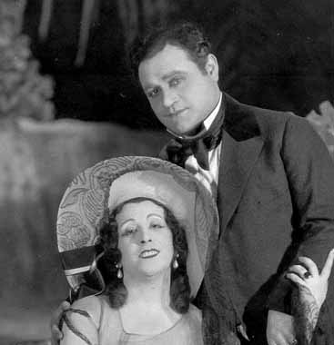
United States Premiere
La Rondine {1}
Metropolitan Opera House; 03/10/1928
Chapter/Reviews |
[Met Performance] CID:98800
Aida {332}
Metropolitan Opera House; 03/10/1928
|
[Met Concert/Gala] CID:98810
Nineteenth Sunday Evening Concert
Metropolitan Opera House; 03/11/1928
|
[Met Performance] CID:98820
The King's Henchman {12}
Metropolitan Opera House; 03/12/1928
|
[Met Performance] CID:98830
Tosca {207}
Metropolitan Opera House; 03/13/1928
Review |
[Met Performance] CID:98840
Mignon {40}
Brooklyn Academy of Music, New York, Brooklyn; 03/13/1928
Review |
[Met Performance] CID:98850
Fidelio {52}
Metropolitan Opera House; 03/14/1928
Review |
[Met Performance] CID:98860
Les Contes d'Hoffmann {34}
Metropolitan Opera House; 03/15/1928
|
[Met Performance] CID:98870
Götterdämmerung {101}
Ring Cycle [49]
Metropolitan Opera House; 03/16/1928
Review |
[Met Performance] CID:98880
Mignon {41}
Metropolitan Opera House; 03/16/1928
|
[Met Performance] CID:98890
La Bohème {253}
Metropolitan Opera House; 03/17/1928
|
[Met Performance] CID:98900
Tannhäuser {246}
Metropolitan Opera House; 03/17/1928
|
[Met Concert/Gala] CID:98910
Twentieth Sunday Night Concert
Metropolitan Opera House; 03/18/1928
|
[Met Performance] CID:98920
La Rondine {2}
Metropolitan Opera House; 03/19/1928
Review |
[Met Performance] CID:98930
Faust {366}
Metropolitan Opera House; 03/20/1928
|
[Met Performance] CID:98940
Rigoletto {168}
American Academy of Music, Philadelphia, Pennsylvania; 03/20/1928
Review |
[Met Performance] CID:98950
Gianni Schicchi {19}
Pagliacci {265}
Metropolitan Opera House; 03/21/1928
Debut: Paul Eisler, Jr.
Review |
[Met Performance] CID:98960
Die Meistersinger von Nürnberg {175}
Metropolitan Opera House; 03/22/1928
Review |
[Met Performance] CID:98970
Madonna Imperia {5}
Le Coq d'Or {49}
Metropolitan Opera House; 03/22/1928
Review |
[Met Performance] CID:98980
Siegfried {140}
Metropolitan Opera House; 03/23/1928
Review |
[Met Performance] CID:98990
Les Contes d'Hoffmann {35}
Metropolitan Opera House; 03/24/1928
|
[Met Performance] CID:99000
La Gioconda {101}
Metropolitan Opera House; 03/24/1928
|
[Met Concert/Gala] CID:99010
Twenty-First Sunday Night Concert
Metropolitan Opera House; 03/25/1928
|
[Met Performance] CID:99020
L'Amore dei Tre Re {48}
Metropolitan Opera House; 03/26/1928
Review |
[Met Performance] CID:99030
Siegfried {141}
American Academy of Music, Philadelphia, Pennsylvania; 03/27/1928
Review |
[Met Performance] CID:99040
La Rondine {3}
Metropolitan Opera House; 03/28/1928
|
[Met Performance] CID:99050
Tristan und Isolde {179}
Metropolitan Opera House; 03/29/1928
Review |
[Met Performance] CID:99060
Boris Godunov {81}
Metropolitan Opera House; 03/29/1928
Review |
[Met Performance] CID:99070
Andrea Chénier {43}
Metropolitan Opera House; 03/30/1928
|
[Met Performance] CID:99080
Fidelio {53}
Metropolitan Opera House; 03/31/1928
|
[Met Performance] CID:99100
Faust {367}
Brooklyn Academy of Music, New York, Brooklyn; 03/31/1928
|
[Met Performance] CID:99090
Tosca {208}
Metropolitan Opera House; 03/31/1928
Review |
[Met Concert/Gala] CID:99110
Twenty-Second Sunday Night Concert
Metropolitan Opera House; 04/1/1928
|
[Met Performance] CID:99120
Siegfried {142}
Metropolitan Opera House; 04/2/1928
Review |
[Met Performance] CID:99130
Parsifal {113}
American Academy of Music, Philadelphia, Pennsylvania; 04/3/1928
|
[Met Performance] CID:99140
La Rondine {4}
American Academy of Music, Philadelphia, Pennsylvania; 04/3/1928
Review |
[Met Performance] CID:99150
Faust {368}
Metropolitan Opera House; 04/4/1928
Review |
[Met Performance] CID:99160
La Rondine {5}
Metropolitan Opera House; 04/5/1928
|
[Met Performance] CID:99170
Parsifal {114}
Metropolitan Opera House; 04/6/1928
Review |
[Met Performance] CID:99180
Madama Butterfly {198}
Metropolitan Opera House; 04/6/1928
|
[Met Performance] CID:99190
Madonna Imperia {6}
Le Coq d'Or {50}
Metropolitan Opera House; 04/7/1928
|
[Met Performance] CID:99200
Gianni Schicchi {20}
Hänsel und Gretel {102}
Metropolitan Opera House; 04/7/1928
|
[Met Concert/Gala] CID:99210
Gala Easter Concert
Metropolitan Opera House; 04/8/1928
|
[Met Performance] CID:99220
Mignon {42}
Metropolitan Opera House; 04/9/1928
Debut: Mildred Schneider
Review |
[Met Performance] CID:99230
Le Prophète {73}
American Academy of Music, Philadelphia, Pennsylvania; 04/10/1928
Review |
[Met Performance] CID:99240
Rigoletto {169}
Metropolitan Opera House; 04/11/1928
|
[Met Performance] CID:99250
Così Fan Tutte {12}
Metropolitan Opera House; 04/11/1928
Review |
[Met Performance] CID:99260
Boris Godunov {82}
Metropolitan Opera House; 04/12/1928
|
[Met Performance] CID:99270
Tristan und Isolde {180}
Metropolitan Opera House; 04/12/1928
Review |
[Met Performance] CID:99280
La Rondine {6}
Metropolitan Opera House; 04/13/1928
|
[Met Performance] CID:99290
The King's Henchman {13}
Metropolitan Opera House; 04/14/1928
|
[Met Performance] CID:99300
Cavalleria Rusticana {259}
Pagliacci {266}
Metropolitan Opera House; 04/14/1928
|
[Met Concert/Gala] CID:99310
Last Grand Sunday Night Concert
Metropolitan Opera House; 04/15/1928
|
[Met Performance] CID:99320
La Forza del Destino {34}
Lyric Theater, Baltimore, Maryland; 04/16/1928
Review |
[Met Performance] CID:99330
Boris Godunov {83}
Lyric Theater, Baltimore, Maryland; 04/17/1928
|
[Met Performance] CID:99340
Norma {15}
Washington, D.C.; 04/18/1928
|
[Met Performance] CID:99350
Boris Godunov {84}
Washington, D.C.; 04/19/1928
|
[Met Performance] CID:99360
Roméo et Juliette {147}
Lyric Theater, Baltimore, Maryland; 04/19/1928
Review |
[Met Performance] CID:99370
Die Meistersinger von Nürnberg {176}
Lyric Theater, Baltimore, Maryland; 04/20/1928
|
[Met Performance] CID:99380
Roméo et Juliette {148}
Washington, D.C.; 04/21/1928
|
[Met Performance] CID:99390
Tannhäuser {247}
Washington, D.C.; 04/21/1928
|
[Met Performance] CID:99400
L'Africaine {52}
Auditorium, Atlanta, Georgia; 04/23/1928
|
[Met Performance] CID:99410
Il Barbiere di Siviglia {137}
Auditorium, Atlanta, Georgia; 04/24/1928
|
[Met Performance] CID:99420
Hänsel und Gretel {103}
Pagliacci {267}
Auditorium, Atlanta, Georgia; 04/25/1928
|
[Met Performance] CID:99430
Rigoletto {170}
Auditorium, Atlanta, Georgia; 04/26/1928
|
[Met Performance] CID:99440
Die Walküre {228}
Auditorium, Atlanta, Georgia; 04/27/1928
|
[Met Performance] CID:99450
Norma {16}
Auditorium, Atlanta, Georgia; 04/27/1928
|
[Met Performance] CID:99460
Carmen {306}
Auditorium, Atlanta, Georgia; 04/28/1928
|
[Met Performance] CID:99470
La Bohème {254}
Auditorium, Atlanta, Georgia; 04/28/1928
|
[Met Performance] CID:99480
Aida {333}
Public Hall, Cleveland, Ohio; 04/30/1928
Review |
[Met Performance] CID:99490
Mignon {43}
Public Hall, Cleveland, Ohio; 05/1/1928
|
[Met Performance] CID:99500
Norma {17}
Public Hall, Cleveland, Ohio; 05/2/1928
Review |
[Met Performance] CID:99510
Rigoletto {171}
Public Hall, Cleveland, Ohio; 05/3/1928
Review |
[Met Performance] CID:99520
Hänsel und Gretel {104}
Pagliacci {268}
Public Hall, Cleveland, Ohio; 05/4/1928
|
[Met Performance] CID:99530
Tannhäuser {248}
Public Hall, Cleveland, Ohio; 05/4/1928
|
[Met Performance] CID:99540
Les Contes d'Hoffmann {36}
Public Hall, Cleveland, Ohio; 05/5/1928
|
[Met Performance] CID:99550
Il Trovatore {162}
Public Hall, Cleveland, Ohio; 05/5/1928
|
[Met Performance] CID:99560
La Bohème {255}
Eastman Theatre, Rochester, New York; 05/7/1928
|
[Met Performance] CID:99570
Norma {18}
Eastman Theatre, Rochester, New York; 5/8/1928
|
[Met Performance] CID:100000
L'Amore dei Tre Re {49}
Metropolitan Opera House; 10/29/1928
Opening Night {44}
Giulio Gatti-Casazza, General Manager
Reviews |
[Met Performance] CID:100010
Rigoletto {172}
Brooklyn Academy of Music, New York, Brooklyn; 10/30/1928
|
[Met Performance] CID:100020
Andrea Chénier {44}
American Academy of Music, Philadelphia, Pennsylvania; 10/30/1928
Review |
[Met Performance] CID:100030
Tannhäuser {249}
Metropolitan Opera House; 10/31/1928
Debut: Letitia Brugnani
Review |
[Met Performance] CID:100040
Manon Lescaut {63}
Metropolitan Opera House; 11/1/1928
Debuts: Grace Divine, Marek Windheim
Review |
[Met Performance] CID:100050
Aida {334}
Metropolitan Opera House; 11/2/1928
Debut: Aida Doninelli
Review |
[Met Performance] CID:100060
Hänsel und Gretel {105}
Pagliacci {269}
Metropolitan Opera House; 11/3/1928
|
[Met Performance] CID:100070
La Juive {50}
Metropolitan Opera House; 11/3/1928
|
[Met Performance] CID:100080
First Sunday Night Concert /
Cavalleria Rusticana {260}
Metropolitan Opera House; 11/4/1928
|
[Met Performance] CID:100090
Andrea Chénier {45}
Metropolitan Opera House; 11/5/1928
|
[Met Performance] CID:100100
 Chapter Reviews: Die Ägyptische Helena
Chapter Reviews: Die Ägyptische Helena
United States Premiere
Die Ägyptische Helena {1}
Metropolitan Opera House; 11/6/1928
Debut: Jane Carroll, Lillian Gärtner Palmedo
Review |
[Met Performance] CID:100110
Madama Butterfly {199}
Brooklyn Academy of Music, New York, Brooklyn; 11/6/1928
|
[Met Performance] CID:100120
Norma {19}
Metropolitan Opera House; 11/7/1928
Review |
[Met Performance] CID:100130
Il Trovatore {163}
Metropolitan Opera House; 11/8/1928
Debut: Clara Jacobo
Review |
[Met Performance] CID:100140
Tosca {209}
Metropolitan Opera House; 11/9/1928
|
[Met Performance] CID:100150
L'Africaine {53}
Metropolitan Opera House; 11/10/1928
Review |
[Met Performance] CID:100160
Lohengrin {360}
Metropolitan Opera House; 11/10/1928
|
[Met Concert/Gala] CID:100170
Second Sunday Night Concert
Metropolitan Opera House; 11/11/1928
|
[Met Performance] CID:100180
Die Meistersinger von Nürnberg {177}
Metropolitan Opera House; 11/12/1928
Review |
[Met Performance] CID:100190
Die Ägyptische Helena {2}
American Academy of Music, Philadelphia, Pennsylvania; 11/13/1928
Review |
[Met Performance] CID:100200
La Bohème {256}
Metropolitan Opera House; 11/14/1928
Review |
[Met Performance] CID:100210
Tannhäuser {250}
Metropolitan Opera House; 11/15/1928
Review |
[Met Performance] CID:100220
Turandot {20}
Metropolitan Opera House; 11/16/1928
Review |
[Met Performance] CID:100230
La Juive {51}
Metropolitan Opera House; 11/16/1928
Review |
[Met Performance] CID:100240
La Gioconda {102}
Metropolitan Opera House; 11/17/1928
|
[Met Performance] CID:100250
Cavalleria Rusticana {261}
Pagliacci {270}
Metropolitan Opera House; 11/17/1928
Review |
[Met Concert/Gala] CID:100260
Third Sunday Night Concert
Metropolitan Opera House; 11/18/1928
|
[Met Performance] CID:100270
Die Ägyptische Helena {3}
Metropolitan Opera House; 11/19/1928
|
[Met Performance] CID:100280
L'Africaine {54}
American Academy of Music, Philadelphia, Pennsylvania; 11/20/1928
Review |
[Met Performance] CID:100290
Il Trovatore {164}
Metropolitan Opera House; 11/21/1928
|
[Met Performance] CID:100300
Roméo et Juliette {149}
Metropolitan Opera House; 11/22/1928
|
[Met Performance] CID:100310
Tosca {210}
Metropolitan Opera House; 11/23/1928
|
[Met Performance] CID:100320
Lohengrin {361}
Metropolitan Opera House; 11/23/1928
Review |
[Met Performance] CID:100330
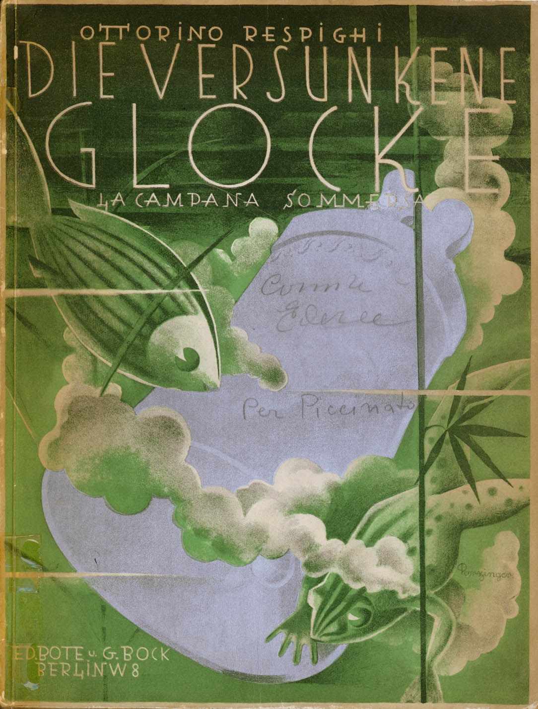
United States Premiere
In the presence of the composer
La Campana Sommersa {1}
Metropolitan Opera House; 11/24/1928
Reviews |
[Met Performance] CID:100340
La Bohème {257}
Metropolitan Opera House; 11/24/1928
|
[Met Performance] CID:100350
Norma {20}
Brooklyn Academy of Music, New York, Brooklyn; 11/24/1928
Review |
[Met Concert/Gala] CID:100360
Fourth Sunday Night Concert
Metropolitan Opera House; 11/25/1928
|
[Met Performance] CID:100370
Norma {21}
Metropolitan Opera House; 11/26/1928
|
[Met Performance] CID:100380
La Traviata {152}
Metropolitan Opera House; 11/27/1928
|
[Met Performance] CID:100390
Die Walküre {229}
American Academy of Music, Philadelphia, Pennsylvania; 11/27/1928
Review |
[Met Performance] CID:100400
Martha {90}
Metropolitan Opera House; 11/28/1928
Review |
[Met Performance] CID:100410
Madama Butterfly {200}
Metropolitan Opera House; 11/29/1928
Review |
[Met Performance] CID:100420
Die Ägyptische Helena {4}
Metropolitan Opera House; 11/29/1928
Review |
[Met Performance] CID:100430
La Campana Sommersa {2}
Metropolitan Opera House; 11/30/1928
Review |
[Met Performance] CID:100440
Turandot {21}
Metropolitan Opera House; 12/1/1928
Review |
[Met Performance] CID:100450
Faust {369}
Metropolitan Opera House; 12/1/1928
Debut: Pearl Besuner |
[Met Concert/Gala] CID:100460
Fifth Sunday Night Concert
Metropolitan Opera House; 12/2/1928
|
[Met Performance] CID:100470
La Bohème {258}
Metropolitan Opera House; 12/3/1928
|
[Met Performance] CID:100480
Die Ägyptische Helena {5}
Brooklyn Academy of Music, New York, Brooklyn; 12/4/1928
Review |
[Met Performance] CID:100490
Rigoletto {173}
American Academy of Music, Philadelphia, Pennsylvania; 12/4/1928
Review |
[Met Performance] CID:100500
La Juive {52}
Metropolitan Opera House; 12/5/1928
|
[Met Performance] CID:100510
Il Trovatore {165}
Metropolitan Opera House; 12/6/1928
Review |
[Met Performance] CID:100520
L'Africaine {55}
Metropolitan Opera House; 12/6/1928
Review |
[Met Performance] CID:100530
Die Ägyptische Helena {6}
Metropolitan Opera House; 12/7/1928
|
[Met Performance] CID:100540
Andrea Chénier {46}
Metropolitan Opera House; 12/8/1928
|
[Met Performance] CID:100550
Tannhäuser {251}
Metropolitan Opera House; 12/8/1928
Debut: Martha Henkel |
[Met Concert/Gala] CID:100560
Sixth Sunday Night Concert
Metropolitan Opera House; 12/9/1928
|
[Met Performance] CID:100570
Turandot {22}
Metropolitan Opera House; 12/10/1928
|
[Met Performance] CID:100580
Ernani {19}
American Academy of Music, Philadelphia, Pennsylvania; 12/11/1928
Review |
[Met Performance] CID:100590
Die Meistersinger von Nürnberg {178}
Metropolitan Opera House; 12/12/1928
|
[Met Performance] CID:100600
La Campana Sommersa {3}
Metropolitan Opera House; 12/13/1928
|
[Met Performance] CID:100610
Norma {22}
Metropolitan Opera House; 12/14/1928
|
[Met Performance] CID:100620
Manon Lescaut {64}
Metropolitan Opera House; 12/14/1928
Review |
[Met Performance] CID:100630
Die Walküre {230}
Metropolitan Opera House; 12/15/1928
Review |
[Met Performance] CID:100640
Madama Butterfly {201}
Metropolitan Opera House; 12/15/1928
|
[Met Concert/Gala] CID:100650
Seventh Sunday Night Concert
Metropolitan Opera House; 12/16/1928
|
[Met Performance] CID:100660
Ernani {20}
Metropolitan Opera House; 12/17/1928
|
[Met Performance] CID:100670
Hänsel und Gretel {106}
Pagliacci {271}
American Academy of Music, Philadelphia, Pennsylvania; 12/18/1928
|
[Met Performance] CID:100680
Die Ägyptische Helena {7}
Metropolitan Opera House; 12/19/1928
|
[Met Performance] CID:100690
La Gioconda {103}
Metropolitan Opera House; 12/20/1928
|
[Met Performance] CID:100700
Tosca {211}
Metropolitan Opera House; 12/21/1928
|
[Met Performance] CID:100710
Cavalleria Rusticana {262}
Pagliacci {272}
Metropolitan Opera House; 12/21/1928
|
[Met Performance] CID:100720
New production
Manon {76}
Metropolitan Opera House; 12/22/1928
Debut: Gina Gola
Review |
[Met Performance] CID:100730
Die Meistersinger von Nürnberg {179}
Metropolitan Opera House; 12/22/1928
|
[Met Concert/Gala] CID:100740
Eighth Sunday Night Concert
Metropolitan Opera House; 12/23/1928
|
[Met Performance] CID:100750
Lohengrin {362}
Metropolitan Opera House; 12/24/1928
Review |
[Met Performance] CID:100760
La Traviata {153}
Metropolitan Opera House; 12/25/1928
Review |
[Met Performance] CID:100770
Faust {370}
Brooklyn Academy of Music, New York, Brooklyn; 12/25/1928
Review |
[Met Performance] CID:100780
Turandot {23}
Metropolitan Opera House; 12/26/1928
|
[Met Performance] CID:100790
Hänsel und Gretel {107}
Cavalleria Rusticana {263}
Metropolitan Opera House; 12/27/1928
|
[Met Performance] CID:100800
Hänsel und Gretel {108}
Pagliacci {273}
Metropolitan Opera House; 12/28/1928
|
[Met Performance] CID:100810
Ernani {21}
Metropolitan Opera House; 12/28/1928
|
[Met Performance] CID:100820
Martha {91}
Metropolitan Opera House; 12/29/1928
|
[Met Performance] CID:100830
Aida {335}
Metropolitan Opera House; 12/29/1928
Review |
[Met Concert/Gala] CID:100840
Ninth Sunday Night Concert
Metropolitan Opera House; 12/30/1928
|
[Met Performance] CID:100850
La Campana Sommersa {4}
Metropolitan Opera House; 12/31/1928
|
[Met Performance] CID:100860
Tosca {212}
Metropolitan Opera House; 01/1/1929
Review |
[Met Performance] CID:100870
Manon {77}
American Academy of Music, Philadelphia, Pennsylvania; 01/1/1929
Review |
[Met Performance] CID:100880
Die Walküre {231}
Metropolitan Opera House; 01/2/1929
Review |
[Met Performance] CID:100890
Aida {336}
Metropolitan Opera House; 01/3/1929
|
[Met Performance] CID:100900
Der Rosenkavalier {47}
Metropolitan Opera House; 01/4/1929
Review |
[Met Performance] CID:100910
Carmen {307}
Metropolitan Opera House; 01/5/1929
Review |
[Met Performance] CID:100920
L'Africaine {56}
Metropolitan Opera House; 01/5/1929
|
[Met Concert/Gala] CID:100930
Tenth Sunday Night Concert
Verdi-Puccini Program Concert
Metropolitan Opera House; 01/6/1929
|
[Met Performance] CID:100940
Il Barbiere di Siviglia {138}
Metropolitan Opera House; 01/7/1929
Review |
[Met Performance] CID:100950
Tannhäuser {252}
American Academy of Music, Philadelphia, Pennsylvania; 01/8/1929
Review |
[Met Performance] CID:100960
La Campana Sommersa {5}
Metropolitan Opera House; 01/9/1929
Review |
[Met Performance] CID:100970
Manon {78}
Metropolitan Opera House; 01/10/1929
|
[Met Performance] CID:100980
Cavalleria Rusticana {264}
Hänsel und Gretel {109}
Metropolitan Opera House; 01/11/1929
|
[Met Performance] CID:100990
Lucia di Lammermoor {141}
Metropolitan Opera House; 01/11/1929
Review |
[Met Performance] CID:101000
Götterdämmerung {102}
Metropolitan Opera House; 01/12/1929
Review |
[Met Performance] CID:101010
La Gioconda {104}
Metropolitan Opera House; 01/12/1929
|
[Met Concert/Gala] CID:101020
Gala Concert
Metropolitan Opera House; 01/13/1929
|
[Met Performance] CID:101030
Die Walküre {232}
Metropolitan Opera House; 01/14/1929
Review |
[Met Performance] CID:101040
La Traviata {154}
Brooklyn Academy of Music, New York, Brooklyn; 01/15/1929
Review |
[Met Performance] CID:101050
L'Amore dei Tre Re {50}
American Academy of Music, Philadelphia, Pennsylvania; 01/15/1929
Review |
[Met Performance] CID:101060
Carmen {308}
Metropolitan Opera House; 01/16/1929
|
[Met Performance] CID:101070
Ernani {22}
Metropolitan Opera House; 01/17/1929
|
[Met Performance] CID:101080
Il Barbiere di Siviglia {139}
Metropolitan Opera House; 01/18/1929
|
[Met Performance] CID:101090
Turandot {24}
Metropolitan Opera House; 01/18/1929
Review |
[Met Performance] CID:101100
L'Amore dei Tre Re {51}
Metropolitan Opera House; 01/19/1929
|
[Met Performance] CID:101110
United States Premiere
Jonny Spielt Auf {1}
Metropolitan Opera House; 01/19/1929
Review |
[Met Concert/Gala] CID:101120
Italian Opera Night Concert
Metropolitan Opera House; 01/20/1929
|
[Met Performance] CID:101130
Cavalleria Rusticana {265}
Pagliacci {274}
Metropolitan Opera House; 01/21/1929
|
[Met Performance] CID:101140
Lohengrin {363}
American Academy of Music, Philadelphia, Pennsylvania; 01/22/1929
Review |
[Met Performance] CID:101150
Rigoletto {174}
Metropolitan Opera House; 01/23/1929
Review |
[Met Performance] CID:101160
Ernani {23}
Metropolitan Opera House; 01/24/1929
|
[Met Performance] CID:101170
Der Rosenkavalier {48}
Metropolitan Opera House; 01/24/1929
|
[Met Performance] CID:101180
La Traviata {155}
Metropolitan Opera House; 01/25/1929
Review |
[Met Performance] CID:101190
Norma {23}
Metropolitan Opera House; 01/26/1929
Review |
[Met Performance] CID:101200
Tosca {213}
Metropolitan Opera House; 01/26/1929
|
[Met Concert/Gala] CID:101210
Gala Program
Metropolitan Opera House; 01/27/1929
|
[Met Performance] CID:101220
Jonny Spielt Auf {2}
Metropolitan Opera House; 01/28/1929
Review |
[Met Performance] CID:101230
Carmen {309}
Brooklyn Academy of Music, New York, Brooklyn; 01/29/1929
Review |
[Met Performance] CID:101240
Il Barbiere di Siviglia {140}
American Academy of Music, Philadelphia, Pennsylvania; 01/29/1929
Review |
[Met Performance] CID:101250
Tristan und Isolde {181}
Metropolitan Opera House; 01/30/1929
Review |
[Met Performance] CID:101260
Carmen {310}
Metropolitan Opera House; 01/31/1929
|
[Met Performance] CID:101270
Aida {337}
Metropolitan Opera House; 02/1/1929
|
[Met Performance] CID:101280
Pelléas et Mélisande {16}
Metropolitan Opera House; 02/1/1929
Review |
[Met Performance] CID:101290
Lucia di Lammermoor {142}
Metropolitan Opera House; 02/2/1929
Review |
[Met Performance] CID:101300
Die Walküre {233}
Metropolitan Opera House; 02/2/1929
|
[Met Performance] CID:101310
In Concert
Cavalleria Rusticana {266}
Pagliacci {275}
Metropolitan Opera House; 02/3/1929
|
[Met Performance] CID:101320
Carmen {311}
Metropolitan Opera House; 02/4/1929
Review |
[Met Performance] CID:101330
Tristan und Isolde {182}
Brooklyn Academy of Music, New York, Brooklyn; 02/5/1929
Review |
[Met Performance] CID:101340
Madama Butterfly {202}
American Academy of Music, Philadelphia, Pennsylvania; 02/5/1929
Review |
[Met Performance] CID:101350
La Traviata {156}
Metropolitan Opera House; 02/6/1929
|
[Met Performance] CID:101360
Siegfried {143}
Metropolitan Opera House; 02/7/1929
Review |
[Met Performance] CID:101370
Jonny Spielt Auf {3}
Metropolitan Opera House; 02/8/1929
|
[Met Performance] CID:101380
La Bohème {259}
Metropolitan Opera House; 02/8/1929
|
[Met Performance] CID:101390
Tosca {214}
Metropolitan Opera House; 02/9/1929
|
[Met Performance] CID:101400
Manon {79}
Metropolitan Opera House; 02/9/1929
|
[Met Concert/Gala] CID:101410
Grand Sunday Night Program
Metropolitan Opera House; 02/10/1929
|
[Met Performance] CID:101420
Tristan und Isolde {183}
Metropolitan Opera House; 02/11/1929
Review |
[Met Performance] CID:101430
Cavalleria Rusticana {267}
Pagliacci {276}
Metropolitan Opera House; 02/12/1929
|
[Met Performance] CID:101440
Aida {338}
American Academy of Music, Philadelphia, Pennsylvania; 02/12/1929
Review |
[Met Performance] CID:101450
Lohengrin {364}
Metropolitan Opera House; 02/13/1929
Review |
[Met Performance] CID:101460
Roméo et Juliette {150}
Metropolitan Opera House; 02/13/1929
Review |
[Met Performance] CID:101470
La Traviata {157}
Metropolitan Opera House; 02/14/1929
|
[Met Performance] CID:101480
Jonny Spielt Auf {4}
Metropolitan Opera House; 02/15/1929
Review |
[Met Performance] CID:101490
The King's Henchman {14}
Metropolitan Opera House; 02/16/1929
Review |
[Met Performance] CID:101500
Carmen {312}
Metropolitan Opera House; 02/16/1929
|
[Met Concert/Gala] CID:101510
Concert: Il Barbiere di Siviglia Highlights
Metropolitan Opera House; 02/17/1929
|
[Met Performance] CID:101520
Pelléas et Mélisande {17}
Metropolitan Opera House; 02/18/1929
Review |
[Met Performance] CID:101530
Il Trovatore {166}
Brooklyn Academy of Music, New York, Brooklyn; 02/19/1929
Review |
[Met Performance] CID:101540
Siegfried {144}
American Academy of Music, Philadelphia, Pennsylvania; 02/19/1929
Review |
[Met Performance] CID:101550
Hänsel und Gretel {110}
Cavalleria Rusticana {268}
Metropolitan Opera House; 02/20/1929
|
[Met Performance] CID:101560
Das Rheingold {66}
Ring Cycle [50]
Metropolitan Opera House; 02/21/1929
Review |
[Met Performance] CID:101570
Les Contes d'Hoffmann {37}
Metropolitan Opera House; 02/21/1929
Review |
[Met Performance] CID:101580
Aida {339}
Metropolitan Opera House; 02/22/1929
Review |
[Met Performance] CID:101590
Roméo et Juliette {151}
Metropolitan Opera House; 02/22/1929
|
[Met Performance] CID:101600
Der Freischütz {19}
Metropolitan Opera House; 02/23/1929
Review |
[Met Performance] CID:101610
Lucia di Lammermoor {143}
Metropolitan Opera House; 02/23/1929
|
[Met Concert/Gala] CID:101620
Wagner - Verdi Program Concert
Metropolitan Opera House; 02/24/1929
|
[Met Performance] CID:101630
Il Trovatore {167}
Metropolitan Opera House; 02/25/1929
Review |
[Met Performance] CID:101650
The King's Henchman {15}
American Academy of Music, Philadelphia, Pennsylvania; 02/26/1929
Review |
[Met Performance] CID:101640
La Bohème {260}
Metropolitan Opera House; 02/26/1929
|
[Met Performance] CID:101660
Jonny Spielt Auf {5}
Metropolitan Opera House; 02/27/1929
Review |
[Met Performance] CID:101670
Die Walküre {234}
Ring Cycle [50]
Metropolitan Opera House; 02/28/1929
Review |
[Met Performance] CID:101680
Madama Butterfly {203}
Metropolitan Opera House; 02/28/1929
|
[Met Performance] CID:101690
La Gioconda {105}
Metropolitan Opera House; 03/1/1929
|
[Met Performance] CID:101700
Aida {340}
Metropolitan Opera House; 03/2/1929
|
[Met Performance] CID:101710
Tosca {215}
Metropolitan Opera House; 03/2/1929
Reviews |
[Met Performance] CID:101720
Roméo et Juliette {152}
Brooklyn Academy of Music, New York, Brooklyn; 03/2/1929
Review |
[Met Concert/Gala] CID:101730
Grand Sunday Night Concert
Metropolitan Opera House; 03/3/1929
|
[Met Performance] CID:101740
Boris Godunov {85}
Metropolitan Opera House; 03/4/1929
Review |
[Met Performance] CID:101750
Tristan und Isolde {184}
American Academy of Music, Philadelphia, Pennsylvania; 03/5/1929
Review |
[Met Performance] CID:101760
The King's Henchman {16}
Metropolitan Opera House; 03/6/1929
|
[Met Performance] CID:101770
Siegfried {145}
Ring Cycle [50]
Metropolitan Opera House; 03/7/1929
Review |
[Met Performance] CID:101780
La Rondine {7}
Metropolitan Opera House; 03/7/1929
Review |
[Met Performance] CID:101790
Faust {371}
Metropolitan Opera House; 03/8/1929
Review |
[Met Performance] CID:101800
Les Contes d'Hoffmann {38}
Metropolitan Opera House; 03/8/1929
|
[Met Performance] CID:101810
Jonny Spielt Auf {6}
Metropolitan Opera House; 03/9/1929
|
[Met Performance] CID:101820
Rigoletto {175}
Metropolitan Opera House; 03/9/1929
|
[Met Concert/Gala] CID:101830
Popular Opera Concert
Metropolitan Opera House; 03/10/1929
|
[Met Performance] CID:101840
Manon {80}
Metropolitan Opera House; 03/11/1929
Review |
[Met Performance] CID:101850
La Bohème {261}
Brooklyn Academy of Music, New York, Brooklyn; 03/12/1929
Review |
[Met Performance] CID:101860
Boris Godunov {86}
American Academy of Music, Philadelphia, Pennsylvania; 03/12/1929
Review |
[Met Performance] CID:101870
Aida {341}
Metropolitan Opera House; 03/13/1929
Review |
[Met Performance] CID:101880
Götterdämmerung {103}
Ring Cycle [50]
Metropolitan Opera House; 03/14/1929
Review |
[Met Performance] CID:101890
Boris Godunov {87}
Metropolitan Opera House; 03/14/1929
|
[Met Performance] CID:101900
La Rondine {8}
Metropolitan Opera House; 03/15/1929
|
[Met Performance] CID:101910
Lohengrin {365}
Metropolitan Opera House; 03/16/1929
Review |
[Met Performance] CID:101920
Turandot {25}
Metropolitan Opera House; 03/16/1929
Review |
[Met Concert/Gala] CID:101930
Grand Sunday Night Program
Metropolitan Opera House; 03/17/1929
|
[Met Performance] CID:101940
Rigoletto {176}
Metropolitan Opera House; 03/18/1929
Review |
[Met Performance] CID:101950
La Rondine {9}
American Academy of Music, Philadelphia, Pennsylvania; 03/19/1929
Review |
[Met Performance] CID:101960
Tristan und Isolde {185}
Metropolitan Opera House; 03/20/1929
Review |
[Met Performance] CID:101970
Faust {372}
Metropolitan Opera House; 03/20/1929
|
[Met Performance] CID:101980
United States Premiere
Fra Gherardo {1}
Metropolitan Opera House; 03/21/1929
Review |
[Met Performance] CID:101990
Die Meistersinger von Nürnberg {180}
Metropolitan Opera House; 03/22/1929
|
[Met Performance] CID:102000
Andrea Chénier {47}
Metropolitan Opera House; 03/22/1929
|
[Met Performance] CID:102010
Mignon {44}
Metropolitan Opera House; 03/23/1929
|
[Met Performance] CID:102020
Der Freischütz {20}
Metropolitan Opera House; 03/23/1929
|
[Met Concert/Gala] CID:102030
Grand Sunday Night Concert
Metropolitan Opera House; 03/24/1929
|
[Met Performance] CID:102040
Fra Gherardo {2}
Metropolitan Opera House; 03/25/1929
|
[Met Performance] CID:102050
Parsifal {115}
American Academy of Music, Philadelphia, Pennsylvania; 03/26/1929
|
[Met Performance] CID:102060
Lucia di Lammermoor {144}
American Academy of Music, Philadelphia, Pennsylvania; 03/26/1929
|
[Met Performance] CID:102070
Die Meistersinger von Nürnberg {181}
Metropolitan Opera House; 03/27/1929
|
[Met Performance] CID:102080
La Rondine {10}
Metropolitan Opera House; 03/27/1929
|
[Met Performance] CID:102090
The King's Henchman {17}
Metropolitan Opera House; 03/28/1929
|
[Met Performance] CID:102100
Parsifal {116}
Metropolitan Opera House; 03/29/1929
|
[Met Performance] CID:102110
Madama Butterfly {204}
Metropolitan Opera House; 03/29/1929
|
[Met Performance] CID:102120
Faust {373}
Metropolitan Opera House; 03/30/1929
|
[Met Performance] CID:102130
Les Contes d'Hoffmann {39}
Metropolitan Opera House; 03/30/1929
|
[Met Performance] CID:102140
La Rondine {11}
Brooklyn Academy of Music, New York, Brooklyn; 03/30/1929
|
[Met Concert/Gala] CID:102150
Grand Sunday Night Concert
Metropolitan Opera House; 03/31/1929
|
[Met Performance] CID:102160
Der Freischütz {21}
Metropolitan Opera House; 04/1/1929
|
[Met Performance] CID:102170
La Bohème {262}
Metropolitan Opera House; 04/2/1929
|
[Met Performance] CID:102180
Fra Gherardo {3}
American Academy of Music, Philadelphia, Pennsylvania; 04/2/1929
|
[Met Performance] CID:102190
La Gioconda {106}
Metropolitan Opera House; 04/3/1929
|
[Met Performance] CID:102200
Jonny Spielt Auf {7}
Metropolitan Opera House; 04/4/1929
|
[Met Performance] CID:102210
La Traviata {158}
Metropolitan Opera House; 04/5/1929
|
[Met Performance] CID:102220
Siegfried {146}
Metropolitan Opera House; 04/5/1929
|
[Met Performance] CID:102230
Fra Gherardo {4}
Metropolitan Opera House; 04/6/1929
|
[Met Performance] CID:102240
Il Trovatore {168}
Metropolitan Opera House; 04/6/1929
Debut: Dreda Aves |
[Met Concert/Gala] CID:102250
Grand Sunday Night Concert
Metropolitan Opera House; 04/7/1929
|
[Met Performance] CID:102260
Aida {342}
Metropolitan Opera House; 04/8/1929
|
[Met Performance] CID:102270
Mignon {45}
American Academy; of Music, Philadelphia, Pennsylvania; 04/9/1929
|
[Met Performance] CID:102280
Madama Butterfly {205}
Metropolitan Opera House; 04/10/1929
|
[Met Performance] CID:102290
Mignon {46}
Metropolitan Opera House; 04/11/1929
|
[Met Performance] CID:102300
Die Walküre {235}
Metropolitan Opera House; 04/11/1929
|
[Met Performance] CID:102310
Norma {24}
Metropolitan Opera House; 04/12/1929
|
[Met Performance] CID:102320
Fra Gherardo {5}
Metropolitan Opera House; 04/12/1929
|
[Met Performance] CID:102330
Tristan und Isolde {186}
Metropolitan Opera House; 04/13/1929
|
[Met Performance] CID:102340
Manon {81}
Metropolitan Opera House; 04/13/1929
|
[Met Concert/Gala] CID:102350
Last Grand Sunday Night Concert
Metropolitan Opera House; 04/14/1929
|
[Met Performance] CID:102360
L'Amore dei Tre Re {52}
Pagliacci {277}
Lyric Theatre, Baltimore, Maryland; 04/15/1929
|
[Met Performance] CID:102370
Norma {25}
Lyric Theatre, Baltimore, Maryland; 04/16/1929
|
[Met Performance] CID:102380
Manon {82}
Poli's Theatre, Washington, D.C.; 04/17/1929
|
[Met Performance] CID:102390
Cavalleria Rusticana {269}
Pagliacci {278}
Poli's Theatre, Washington, D.C.; 04/18/1929
|
[Met Performance] CID:102400
Manon {83}
Lyric Theatre, Baltimore, Maryland; 04/19/1929
|
[Met Performance] CID:102410
Aida {343}
Poli's Theatre, Washington, D.C.; 04/20/1929
|
[Met Performance] CID:102420
Faust {374}
Lyric Theatre, Baltimore, Maryland; 04/20/1929
|
[Met Performance] CID:102430
La Rondine {12}
Auditorium, Atlanta, Georgia; 04/22/1929
|
[Met Performance] CID:102440
Aida {344}
Auditorium, Atlanta, Georgia; 04/23/1929
|
[Met Performance] CID:102450
Manon {84}
Auditorium, Atlanta, Georgia; 04/24/1929
|
[Met Performance] CID:102460
La Gioconda {107}
Auditorium, Atlanta, Georgia; 04/25/1929
|
[Met Performance] CID:102470
Faust {375}
Auditorium, Atlanta, Georgia; 04/26/1929
|
[Met Performance] CID:102480
Martha {92}
Auditorium, Atlanta, Georgia; 04/27/1929
|
[Met Performance] CID:102490
La Traviata {159}
Auditorium, Atlanta, Georgia; 04/27/1929
|
[Met Performance] CID:102500
Norma {26}
Public Auditorium, Cleveland, Ohio; 04/29/1929
|
[Met Performance] CID:102510
L'Amore dei Tre Re {53}
Cavalleria Rusticana {270}
Public Auditorium, Cleveland, Ohio; 04/30/1929
|
[Met Performance] CID:102520
La Gioconda {108}
Public Auditorium, Cleveland, Ohio; 05/1/1929
|
[Met Performance] CID:102530
Manon {85}
Public Auditorium, Cleveland, Ohio; 05/2/1929
|
[Met Performance] CID:102540
Aida {345}
Public Auditorium, Cleveland, Ohio; 05/3/1929
|
[Met Performance] CID:102550
Lohengrin {366}
Public Auditorium, Cleveland, Ohio; 05/3/1929
|
[Met Performance] CID:102560
La Rondine {13}
Public Auditorium, Cleveland, Ohio; 05/4/1929
|
[Met Performance] CID:102570
Lucia di Lammermoor {145}
Public Auditorium, Cleveland, Ohio; 05/4/1929
|
[Met Performance] CID:102580
Hänsel und Gretel {111}
Pagliacci {279}
Eastman Theatre, Rochester, New York; 05/6/1929
|
[Met Performance] CID:102590
Manon {86}
Eastman Theatre, Rochester, New York; 5/7/1929
|
[Met Performance] CID:103000
Manon Lescaut {65}
Metropolitan Opera House; 10/28/1929
Opening Night {45}
Giulio Gatti-Casazza, General Manager
Debuts: Eleanor La Mance, Alfredo Gandolfi , Ernst Lert |
[Met Performance] CID:103010
Andrea Chénier {48}
Brooklyn Academy of Music, New York, Brooklyn; 10/29/1929
|
[Met Performance] CID:103020
La Campana Sommersa {6}
American Academy of Music, Philadelphia, Pennsylvania; 10/29/1929
Debut: Gladys Swarthout |
[Met Performance] CID:103030
Die Meistersinger von Nürnberg {182}
Metropolitan Opera House; 10/30/1929
Debut: Joseph Rosenstock |
[Met Performance] CID:103040
Aida {346}
Metropolitan Opera House; 10/31/1929
|
[Met Performance] CID:103050
La Gioconda {109}
Metropolitan Opera House; 11/1/1929
Debut: Tancredi Pasero |
[Met Performance] CID:103060
New production
La Fanciulla del West {25}
Metropolitan Opera House; 11/2/1929
|
[Met Performance] CID:103070
Mignon {47}
Metropolitan Opera House; 11/2/1929
|
[Met Concert/Gala] CID:103080
Grand Operatic Concert
Metropolitan Opera House; 11/3/1929
|
[Met Performance] CID:103090
Der Rosenkavalier {49}
Metropolitan Opera House; 11/4/1929
|
[Met Performance] CID:103100
Madama Butterfly {206}
Brooklyn Academy of Music, New York, Brooklyn; 11/5/1929
Debut: Augusta Oltrabella |
[Met Performance] CID:103110
La Bohème {263}
American Academy of Music, Philadelphia, Pennsylvania; 11/5/1929
|
[Met Performance] CID:103120
L'Africaine {57}
Metropolitan Opera House; 11/6/1929
|
[Met Performance] CID:103130
La Juive {53}
Metropolitan Opera House; 11/7/1929
|
[Met Performance] CID:103140
Manon {87}
Metropolitan Opera House; 11/8/1929
|
[Met Performance] CID:103150
Tosca {216}
Metropolitan Opera House; 11/8/1929
|
[Met Performance] CID:103160
Die Walküre {236}
Metropolitan Opera House; 11/9/1929
|
[Met Performance] CID:103170
La Traviata {160}
Metropolitan Opera House; 11/9/1929
|
[Met Concert/Gala] CID:103180
Grand Operatic Concert
Metropolitan Opera House; 11/10/1929
|
[Met Performance] CID:103190
Il Trovatore {169}
Metropolitan Opera House; 11/11/1929
|
[Met Performance] CID:103200
Lohengrin {367}
American Academy of Music, Philadelphia, Pennsylvania; 11/12/1929
|
[Met Performance] CID:103210
La Fanciulla del West {26}
Metropolitan Opera House; 11/13/1929
|
[Met Performance] CID:103220
Die Meistersinger von Nürnberg {183}
Metropolitan Opera House; 11/14/1929
|
[Met Performance] CID:103230
La Gioconda {110}
Metropolitan Opera House; 11/15/1929
Review |
[Met Performance] CID:103240
Der Rosenkavalier {50}
Metropolitan Opera House; 11/15/1929
|
[Met Performance] CID:103250
La Campana Sommersa {7}
Metropolitan Opera House; 11/16/1929
|
[Met Performance] CID:103260
Cavalleria Rusticana {271}
Pagliacci {280}
Metropolitan Opera House; 11/16/1929
|
[Met Concert/Gala] CID:103270
Verdi - Puccini Program Concert
Metropolitan Opera House; 11/17/1929
|
[Met Performance] CID:103280
La Bohème {264}
Metropolitan Opera House; 11/18/1929
|
[Met Performance] CID:103290
La Fanciulla del West {27}
American Academy of Music, Philadelphia, Pennsylvania; 11/19/1929
|
[Met Performance] CID:103300
La Traviata {161}
Metropolitan Opera House; 11/20/1929
|
[Met Performance] CID:103310
Lohengrin {368}
Metropolitan Opera House; 11/20/1929
Debut: Karl Riedel |
[Met Performance] CID:103320
Madama Butterfly {207}
Metropolitan Opera House; 11/21/1929
|
[Met Performance] CID:103330
Mignon {48}
Metropolitan Opera House; 11/22/1929
|
[Met Performance] CID:103340
Aida {347}
Metropolitan Opera House; 11/23/1929
|
[Met Performance] CID:103350
Die Walküre {237}
Metropolitan Opera House; 11/23/1929
|
[Met Performance] CID:103360
Cavalleria Rusticana {272}
Pagliacci {281}
Brooklyn Academy of Music, New York, Brooklyn; 11/23/1929
Debut: Santa Biondo |
[Met Concert/Gala] CID:103370
Special Sunday Night Concert
Metropolitan Opera House; 11/24/1929
|
[Met Performance] CID:103380
La Fanciulla del West {28}
Metropolitan Opera House; 11/25/1929
|
[Met Performance] CID:103390
La Bohème {265}
Metropolitan Opera House; 11/26/1929
|
[Met Performance] CID:103400
Die Walküre {238}
American Academy of Music, Philadelphia, Pennsylvania; 11/26/1929
|
[Met Performance] CID:103410
La Juive {54}
Metropolitan Opera House; 11/27/1929
|
[Met Performance] CID:103420
Il Trovatore {170}
Metropolitan Opera House; 11/28/1929
|
[Met Performance] CID:103430
La Traviata {162}
Metropolitan Opera House; 11/28/1929
|
[Met Performance] CID:103440
New production
Don Giovanni {75}
Metropolitan Opera House; 11/29/1929
Reviews |
[Met Performance] CID:103450
Der Rosenkavalier {51}
Metropolitan Opera House; 11/30/1929
|
[Met Performance] CID:103460
Aida {348}
Metropolitan Opera House; 11/30/1929
|
[Met Concert/Gala] CID:103470
Grand Operatic Concert
Metropolitan Opera House; 12/1/1929
|
[Met Performance] CID:103480
Lohengrin {369}
Metropolitan Opera House; 12/2/1929
|
[Met Performance] CID:103490
La Fanciulla del West {29}
Brooklyn Academy of Music, New York, Brooklyn; 12/3/1929
|
[Met Performance] CID:103500
La Traviata {163}
American Academy of Music, Philadelphia, Pennsylvania; 12/3/1929
|
[Met Performance] CID:103510
Don Giovanni {76}
Metropolitan Opera House; 12/4/1929
|
[Met Performance] CID:103520
La Fanciulla del West {30}
Metropolitan Opera House; 12/5/1929
|
[Met Performance] CID:103530
Manon {88}
Metropolitan Opera House; 12/6/1929
|
[Met Performance] CID:103540
Hänsel und Gretel {112}
Pagliacci {282}
Metropolitan Opera House; 12/6/1929
|
[Met Performance] CID:103550
Madama Butterfly {208}
Metropolitan Opera House; 12/7/1929
|
[Met Performance] CID:103560
La Gioconda {111}
Metropolitan Opera House; 12/7/1929
|
[Met Concert/Gala] CID:103570
Special Concert
Metropolitan Opera House; 12/8/1929
|
[Met Performance] CID:103580
Roméo et Juliette {153}
Metropolitan Opera House; 12/9/1929
|
[Met Performance] CID:103590
Turandot {26}
American Academy of Music, Philadelphia, Pennsylvania; 12/10/1929
Review |
[Met Performance] CID:103600
Die Walküre {239}
Metropolitan Opera House; 12/11/1929
|
[Met Performance] CID:103610
Don Giovanni {77}
Metropolitan Opera House; 12/12/1929
|
[Met Performance] CID:103620
Manon Lescaut {66}
Metropolitan Opera House; 12/12/1929
|
[Met Performance] CID:103630
Tannhäuser {253}
Metropolitan Opera House; 12/13/1929
|
[Met Performance] CID:103640
Cavalleria Rusticana {273}
Pagliacci {283}
Metropolitan Opera House; 12/14/1929
Review |
[Met Performance] CID:103650
Il Trovatore {171}
Metropolitan Opera House; 12/14/1929
Debut: Edward Ransome |
[Met Concert/Gala] CID:103660
Grand Sunday Evening Concert
Metropolitan Opera House; 12/15/1929
|
[Met Performance] CID:103670
La Rondine {14}
Metropolitan Opera House; 12/16/1929
|
[Met Performance] CID:103680
Die Meistersinger von Nürnberg {184}
American Academy of Music, Philadelphia, Pennsylvania; 12/17/1929
|
[Met Performance] CID:103690
Tosca {217}
Metropolitan Opera House; 12/18/1929
|
[Met Performance] CID:103700
Lohengrin {370}
Metropolitan Opera House; 12/19/1929
|
[Met Performance] CID:103710
La Campana Sommersa {8}
Metropolitan Opera House; 12/20/1929
|
[Met Performance] CID:103720
Metropolitan Opera Premiere
Luisa Miller {1}
Metropolitan Opera House; 12/21/1929
Review |
[Met Performance] CID:103730
Manon {89}
Metropolitan Opera House; 12/21/1929
Review |
[Met Concert/Gala] CID:103740
Special Holiday Concert
Metropolitan Opera House; 12/22/1929
|
[Met Performance] CID:103750
Tannhäuser {254}
Metropolitan Opera House; 12/23/1929
|
[Met Performance] CID:103760
Aida {349}
Brooklyn Academy of Music, New York, Brooklyn; 12/24/1929
|
[Met Performance] CID:103770
Pagliacci {284}
Hänsel und Gretel {113}
Metropolitan Opera House; 12/25/1929
|
[Met Performance] CID:103780
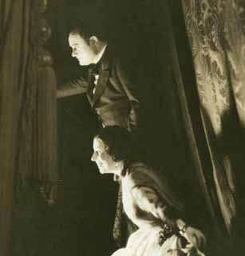
La Rondine {15}
Metropolitan Opera House; 12/25/1929
|
[Met Performance] CID:103790
Il Barbiere di Siviglia {141}
Metropolitan Opera House; 12/26/1929
|
[Met Performance] CID:103800
La Fanciulla del West {31}
Metropolitan Opera House; 12/27/1929
|
[Met Performance] CID:103810
Andrea Chénier {49}
Metropolitan Opera House; 12/27/1929
Debut: Carlo Coscia |
[Met Performance] CID:103820
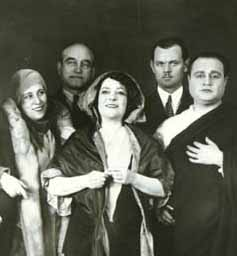
Manon Lescaut {67}
Metropolitan Opera House; 12/28/1929
|
[Met Performance] CID:103830
Lohengrin {371}
Metropolitan Opera House; 12/28/1929
|
[Met Concert/Gala] CID:103840
Wagner - Verdi Concert
Metropolitan Opera House; 12/29/1929
|
[Met Performance] CID:103850
Luisa Miller {2}
Metropolitan Opera House; 12/30/1929
|
[Met Performance] CID:103860
Rigoletto {177}
Metropolitan Opera House; 12/31/1929
|
[Met Performance] CID:103870
Die Walküre {240}
Brooklyn Academy of Music, New York, Brooklyn; 12/31/1929
|
[Met Performance] CID:103880
Carmen {313}
Metropolitan Opera House; 01/1/1930
|
[Met Performance] CID:103890
Cavalleria Rusticana {274}
Pagliacci {285}
Metropolitan Opera House; 01/1/1930
|
[Met Performance] CID:103900
Don Giovanni {78}
Metropolitan Opera House; 01/2/1930
Reviews |
[Met Performance] CID:103910
Die Meistersinger von Nürnberg {185}
Metropolitan Opera House; 01/3/1930
|
[Met Performance] CID:103920
Tosca {218}
Metropolitan Opera House; 01/4/1930
|
[Met Performance] CID:103930
Roméo et Juliette {154}
Metropolitan Opera House; 01/4/1930
|
[Met Concert/Gala] CID:103940
Grand Concert
Metropolitan Opera House; 01/5/1930
|
[Met Performance] CID:103950
Don Giovanni {79}
Metropolitan Opera House; 01/6/1930
|
[Met Performance] CID:103960
Lucia di Lammermoor {146}
American Academy of Music, Philadelphia, Pennsylvania; 01/7/1930
|
[Met Performance] CID:103970
Turandot {27}
Metropolitan Opera House; 01/8/1930
|
[Met Performance] CID:103980
Tannhäuser {255}
Metropolitan Opera House; 01/9/1930
|
[Met Performance] CID:103990
Norma {27}
Metropolitan Opera House; 01/10/1930
|
[Met Performance] CID:104000
La Fanciulla del West {32}
Metropolitan Opera House; 01/10/1930
Review |
[Met Performance] CID:104010
Tristan und Isolde {187}
Metropolitan Opera House; 01/11/1930
|
[Met Performance] CID:104020
La Juive {55}
Metropolitan Opera House; 01/11/1930
|
[Met Concert/Gala] CID:104030
Gala Concert
Metropolitan Opera House; 01/12/1930
|
[Met Performance] CID:104040
Die Walküre {241}
Metropolitan Opera House; 01/13/1930
|
[Met Performance] CID:104050
Il Barbiere di Siviglia {142}
Brooklyn Academy of Music, New York, Brooklyn; 01/14/1930
|
[Met Performance] CID:104060
Luisa Miller {3}
American Academy of Music, Philadelphia, Pennsylvania; 01/14/1930
|
[Met Performance] CID:104070
Der Rosenkavalier {52}
Metropolitan Opera House; 01/15/1930
|
[Met Performance] CID:104080
Luisa Miller {4}
Metropolitan Opera House; 01/16/1930
|
[Met Performance] CID:104090
Götterdämmerung {104}
Metropolitan Opera House; 01/17/1930
Debut: Elisabeth Ohms
Review |
[Met Performance] CID:104100
Roméo et Juliette {155}
Metropolitan Opera House; 01/18/1930
|
[Met Performance] CID:104110
Carmen {314}
Metropolitan Opera House; 01/18/1930
|
[Met Concert/Gala] CID:104120
Special Concert
Metropolitan Opera House; 01/19/1930
|
[Met Performance] CID:104130
Tosca {219}
Metropolitan Opera House; 01/20/1930
|
[Met Performance] CID:104140
Tannhäuser {256}
American Academy of Music, Philadelphia, Pennsylvania; 01/21/1930
|
[Met Performance] CID:104150
Luisa Miller {5}
Metropolitan Opera House; 01/22/1930
|
[Met Performance] CID:104160
Die Walküre {242}
Metropolitan Opera House; 01/23/1930
Review |
[Met Performance] CID:104170
La Fanciulla del West {33}
Metropolitan Opera House; 01/24/1930
|
[Met Performance] CID:104180
Il Barbiere di Siviglia {143}
Metropolitan Opera House; 01/24/1930
Review |
[Met Performance] CID:104190
United States Premiere
Sadko {1}
Metropolitan Opera House; 01/25/1930
Reviews |
[Met Performance] CID:104200
Il Trovatore {172}
Metropolitan Opera House; 01/25/1930
|
[Met Performance] CID:104210
Concert /
Cavalleria Rusticana {275}
Metropolitan Opera House; 01/26/1930
|
[Met Performance] CID:104220
La Gioconda {112}
Metropolitan Opera House; 01/27/1930
|
[Met Performance] CID:104230
Tosca {220}
Brooklyn Academy of Music, New York, Brooklyn; 01/28/1930
|
[Met Performance] CID:104240
Roméo et Juliette {156}
American Academy of Music, Philadelphia, Pennsylvania; 01/28/1930
|
[Met Performance] CID:104250
Fidelio {54}
Metropolitan Opera House; 01/29/1930
Review |
[Met Performance] CID:104260
Carmen {315}
Metropolitan Opera House; 01/30/1930
|
[Met Performance] CID:104270
Manon {90}
Metropolitan Opera House; 01/31/1930
|
[Met Performance] CID:104280
Norma {28}
Metropolitan Opera House; 01/31/1930
|
[Met Performance] CID:104290
Andrea Chénier {50}
Metropolitan Opera House; 02/1/1930
|
[Met Performance] CID:104300
Tannhäuser {257}
Metropolitan Opera House; 02/1/1930
|
[Met Concert/Gala] CID:104310
Gala Concert
Metropolitan Opera House; 02/2/1930
|
[Met Performance] CID:104320
Tristan und Isolde {188}
Metropolitan Opera House; 02/3/1930
Review
|
[Met Performance] CID:104330
Tosca {221}
American Academy of Music, Philadelphia, Pennsylvania; 02/4/1930
|
[Met Performance] CID:104340
Sadko {2}
Metropolitan Opera House; 02/5/1930
|
[Met Performance] CID:104350
Pelléas et Mélisande {18}
Metropolitan Opera House; 02/6/1930
Review |
[Met Performance] CID:104360
Die Meistersinger von Nürnberg {186}
Metropolitan Opera House; 02/7/1930
Review |
[Met Performance] CID:104370
Carmen {316}
Metropolitan Opera House; 02/7/1930
|
[Met Performance] CID:104380
Fidelio {55}
Metropolitan Opera House; 02/8/1930
|
[Met Performance] CID:104390
Manon Lescaut {68}
Metropolitan Opera House; 02/8/1930
|
[Met Concert/Gala] CID:104400
Grand Concert
Metropolitan Opera House; 02/9/1930
|
[Met Performance] CID:104410
Carmen {317}
Metropolitan Opera House; 02/10/1930
|
[Met Performance] CID:104420
Les Contes d'Hoffmann {40}
Brooklyn Academy of Music, New York, Brooklyn; 02/11/1930
|
[Met Performance] CID:104430
Tristan und Isolde {189}
American Academy of Music, Philadelphia, Pennsylvania; 02/11/1930
|
[Met Performance] CID:104440
Roméo et Juliette {157}
Metropolitan Opera House; 02/12/1930
|
[Met Performance] CID:104450
Aida {350}
Metropolitan Opera House; 02/12/1930
|
[Met Performance] CID:104460
Lohengrin {372}
Metropolitan Opera House; 02/13/1930
Review |
[Met Performance] CID:104470
Faust {376}
Metropolitan Opera House; 02/13/1930
Debut: Antonin Trantoul
Review |
[Met Performance] CID:104480
Die Walküre {243}
Metropolitan Opera House; 02/14/1930
|
[Met Performance] CID:104490
La Traviata {164}
Metropolitan Opera House; 02/15/1930
|
[Met Performance] CID:104500
Madama Butterfly {209}
Metropolitan Opera House; 02/15/1930
|
[Met Concert/Gala] CID:104510
All Russian Music Concert
Metropolitan Opera House; 02/16/1930
|
[Met Performance] CID:104520
Sadko {3}
Metropolitan Opera House; 02/17/1930
|
[Met Performance] CID:104530
Faust {377}
American Academy of Music, Philadelphia, Pennsylvania; 02/18/1930
|
[Met Performance] CID:104540
Götterdämmerung {105}
Metropolitan Opera House; 02/19/1930
|
[Met Performance] CID:104550
La Bohème {266}
Metropolitan Opera House; 02/20/1930
|
[Met Performance] CID:104560
Das Rheingold {68}
Ring Cycle [52] Uncut
Metropolitan Opera House; 02/21/1930
|
[Met Performance] CID:104570
Aida {351}
Metropolitan Opera House; 02/21/1930
|
[Met Performance] CID:104580
Die Meistersinger von Nürnberg {187}
Metropolitan Opera House; 02/22/1930
|
[Met Performance] CID:104590
Les Contes d'Hoffmann {41}
Metropolitan Opera House; 02/22/1930
|
[Met Concert/Gala] CID:104600
American - Italian Program Concert
Metropolitan Opera House; 02/23/1930
|
[Met Performance] CID:104610
Fidelio {56}
Metropolitan Opera House; 02/24/1930
|
[Met Performance] CID:104620
Sadko {4}
American Academy of Music, Philadelphia, Pennsylvania; 02/25/1930
|
[Met Performance] CID:104630
Madama Butterfly {210}
Metropolitan Opera House; 02/26/1930
|
[Met Performance] CID:104640
Die Walküre {244}
Ring Cycle [51] Uncut
Metropolitan Opera House; 02/27/1930
Review |
[Met Performance] CID:104650
Cavalleria Rusticana {276}
Hänsel und Gretel {114}
Metropolitan Opera House; 02/27/1930
|
[Met Performance] CID:104660
Sadko {5}
Metropolitan Opera House; 02/28/1930
|
[Met Performance] CID:104670
New production
Louise {15}
Metropolitan Opera House; 03/1/1930
Review |
[Met Performance] CID:104680
Il Barbiere di Siviglia {144}
Metropolitan Opera House; 03/1/1930
|
[Met Performance] CID:104690
Tannhäuser {258}
Brooklyn Academy of Music, New York, Brooklyn; 03/1/1930
|
[Met Concert/Gala] CID:104700
Grand Concert - Popular Opera Program
Metropolitan Opera House; 03/2/1930
|
[Met Performance] CID:104710
Les Contes d'Hoffmann {42}
Metropolitan Opera House; 03/3/1930
|
[Met Performance] CID:104720
La Bohème {267}
Metropolitan Opera House; 03/4/1930
|
[Met Performance] CID:104730
Madama Butterfly {211}
American Academy of Music, Philadelphia, Pennsylvania; 03/4/1930
|
[Met Performance] CID:104740
Tristan und Isolde {190}
Metropolitan Opera House; 03/5/1930
|
[Met Performance] CID:104750
La Gioconda {113}
Metropolitan Opera House; 03/6/1930
|
[Met Performance] CID:104760
Siegfried {147}
Ring Cycle [51] Uncut
Metropolitan Opera House; 03/7/1930
|
[Met Performance] CID:104770
Faust {378}
Metropolitan Opera House; 03/7/1930
|
[Met Performance] CID:104780
Pelléas et Mélisande {19}
Metropolitan Opera House; 03/8/1930
|
[Met Performance] CID:104790
La Fanciulla del West {34}
Metropolitan Opera House; 03/8/1930
|
[Met Concert/Gala] CID:104800
Wagner Concert
Metropolitan Opera House; 03/9/1930
|
[Met Performance] CID:104810
Louise {16}
Metropolitan Opera House; 03/10/1930
|
[Met Performance] CID:104820
Sadko {6}
Brooklyn Academy of Music, New York, Brooklyn; 03/11/1930
|
[Met Performance] CID:104830
La Traviata {165}
Metropolitan Opera House; 03/12/1930
|
[Met Performance] CID:104840
Sadko {7}
Metropolitan Opera House; 03/13/1930
|
[Met Performance] CID:104850
Götterdämmerung {106}
Ring Cycle [51] Uncut
Metropolitan Opera House; 03/14/1930
Debut: Siegfried Tappolet |
[Met Performance] CID:104860
La Bohème {268}
Metropolitan Opera House; 03/14/1930
|
[Met Performance] CID:104870
Rigoletto {178}
Metropolitan Opera House; 03/15/1930
|
[Met Performance] CID:104880
Tristan und Isolde {191}
Metropolitan Opera House; 03/15/1930
|
[Met Concert/Gala] CID:104890
Grand Sunday Night Concert
Metropolitan Opera House; 03/16/1930
|
[Met Performance] CID:104900
Madama Butterfly {212}
Metropolitan Opera House; 03/17/1930
|
[Met Performance] CID:104910
Fidelio {57}
American Academy of Music, Philadelphia, Pennsylvania; 03/18/1930
|
[Met Performance] CID:104920
Louise {17}
Metropolitan Opera House; 03/19/1930
|
[Met Performance] CID:104930
Les Contes d'Hoffmann {43}
Metropolitan Opera House; 03/20/1930
|
[Met Performance] CID:104940
Aida {352}
Metropolitan Opera House; 03/21/1930
|
[Met Performance] CID:104950
New production
L'Elisir d'Amore {41}
Metropolitan Opera House; 03/21/1930
Review |
[Met Performance] CID:104960
Lohengrin {373}
Metropolitan Opera House; 03/22/1930
|
[Met Performance] CID:104970
Faust {379}
Metropolitan Opera House; 03/22/1930
|
[Met Concert/Gala] CID:104980
Gala Concert
Metropolitan Opera House; 03/23/1930
|
[Met Performance] CID:104990
Siegfried {148}
Metropolitan Opera House; 03/24/1930
|
[Met Performance] CID:105000
L'Elisir d'Amore {42}
American Academy of Music, Philadelphia, Pennsylvania; 03/25/1930
|
[Met Performance] CID:105010
Sadko {8}
Metropolitan Opera House; 03/26/1930
|
[Met Performance] CID:105020
La Bohème {269}
Metropolitan Opera House; 03/26/1930
|
[Met Performance] CID:105030
L'Elisir d'Amore {43}
Metropolitan Opera House; 03/27/1930
|
[Met Performance] CID:105040
Tristan und Isolde {192}
Metropolitan Opera House; 03/28/1930
|
[Met Performance] CID:105050
Madama Butterfly {213}
Metropolitan Opera House; 03/28/1930
|
[Met Performance] CID:105060
Les Contes d'Hoffmann {44}
Metropolitan Opera House; 03/29/1930
|
[Met Performance] CID:105070
Manon {91}
Brooklyn Academy of Music, New York, Brooklyn; 03/29/1930
|
[Met Concert/Gala] CID:105080
Special Benefit Concert
Metropolitan Opera House; 03/30/1930
|
[Met Performance] CID:105090
Hänsel und Gretel {115}
Pagliacci {286}
Metropolitan Opera House; 03/31/1930
|
[Met Performance] CID:105100
Aida {353}
American Academy of Music, Philadelphia, Pennsylvania; 04/1/1930
|
[Met Performance] CID:105110
Manon {92}
Metropolitan Opera House; 04/2/1930
|
[Met Performance] CID:105120
Tristan und Isolde {193}
Metropolitan Opera House; 04/3/1930
|
[Met Performance] CID:105130
Louise {18}
Metropolitan Opera House; 04/4/1930
|
[Met Performance] CID:105140
La Gioconda {114}
Metropolitan Opera House; 04/5/1930
|
[Met Performance] CID:105150
Die Meistersinger von Nürnberg {188}
Metropolitan Opera House; 04/5/1930
|
[Met Concert/Gala] CID:105160
Grand Sunday Night Concert
Metropolitan Opera House; 04/6/1930
|
[Met Performance] CID:105170
L'Elisir d'Amore {44}
Metropolitan Opera House; 04/7/1930
Review |
[Met Performance] CID:105180
Hänsel und Gretel {116}
Pagliacci {287}
American Academy of Music, Philadelphia, Pennsylvania; 04/8/1930
|
[Met Performance] CID:105190
Tannhäuser {259}
Metropolitan Opera House; 04/9/1930
Review |
[Met Performance] CID:105200
Sadko {9}
Metropolitan Opera House; 04/10/1930
|
[Met Performance] CID:105210
Mignon {49}
Metropolitan Opera House; 04/10/1930
|
[Met Performance] CID:105220
Lohengrin {374}
Metropolitan Opera House; 04/11/1930
|
[Met Performance] CID:105230
La Bohème {270}
Metropolitan Opera House; 04/12/1930
|
[Met Performance] CID:105240
Carmen {318}
Metropolitan Opera House; 04/12/1930
|
[Met Concert/Gala] CID:105250
Special Concert
Metropolitan Opera House; 04/13/1930
|
[Met Performance] CID:105260
Aida {354}
Metropolitan Opera House; 04/14/1930
|
[Met Performance] CID:105270
Parsifal {117}
American Academy of Music, Philadelphia, Pennsylvania; 04/15/1930
|
[Met Performance] CID:105280
Louise {19}
American Academy of Music, Philadelphia, Pennsylvania; 04/15/1930
|
[Met Performance] CID:105290
Parsifal {118}
Metropolitan Opera House; 04/16/1930
Review |
[Met Performance] CID:105300
Parsifal {119}
Metropolitan Opera House; 04/18/1930
|
[Met Performance] CID:105310
La Traviata {166}
Metropolitan Opera House; 04/19/1930
|
[Met Performance] CID:105320
Sadko {10}
Metropolitan Opera House; 04/19/1930
|
[Met Concert/Gala] CID:105330
Special Gala Concert
Metropolitan Opera House; 04/20/1930
|
[Met Performance] CID:105340
Aida {355}
Baltimore, Maryland; 04/21/1930
|
[Met Performance] CID:105350
Louise {20}
Baltimore, Maryland; 04/22/1930
|
[Met Performance] CID:105360
La Bohème {271}
Fox Theatre, Washington, D.C.; 04/23/1930
|
[Met Performance] CID:105370
Andrea Chénier {51}
Fox Theatre, Washington, D.C.; 04/24/1930
|
[Met Performance] CID:105380
La Traviata {167}
Fox Theatre, Washington, D.C.; 04/25/1930
|
[Met Performance] CID:105390
L'Elisir d'Amore {45}
Lyric Theater, Baltimore, Maryland; 04/25/1930
Review |
[Met Performance] CID:105400
La Juive {56}
Baltimore, Maryland; 04/26/1930
Debut: Lillian Moore |
[Met Performance] CID:105410
La Traviata {168}
Mosque Auditorium, Richmond, Virginia; 04/28/1930
|
[Met Performance] CID:105420
Aida {356}
Mosque Auditorium, Richmond, Virginia; 04/29/1930
|
[Met Performance] CID:105430
Les Contes d'Hoffmann {45}
Mosque Auditorium, Richmond, Virginia; 04/30/1930
|
[Met Performance] CID:105440
L'Elisir d'Amore {46}
Mosque Auditorium, Richmond, Virginia; 04/30/1930
|
[Met Performance] CID:105450
Louise {21}
Atlanta, Georgia; 05/1/1930
|
[Met Performance] CID:105460
Il Trovatore {173}
Atlanta, Georgia; 05/2/1930
|
[Met Performance] CID:105470
La Bohème {272}
Atlanta, Georgia; 05/3/1930
|
[Met Performance] CID:105480
Cavalleria Rusticana {277}
Pagliacci {288}
Atlanta, Georgia; 05/3/1930
|
[Met Performance] CID:105490
La Gioconda {115}
Public Auditorium, Cleveland, Ohio; 05/5/1930
|
[Met Performance] CID:105500
Louise {22}
Public Auditorium, Cleveland, Ohio; 05/6/1930
Debut: Eloi Grimard |
[Met Performance] CID:105510
Cavalleria Rusticana {278}
Pagliacci {289}
Public Auditorium, Cleveland, Ohio; 05/7/1930
|
[Met Performance] CID:105520
La Bohème {273}
Public Auditorium, Cleveland, Ohio; 05/8/1930
|
[Met Performance] CID:105530
Carmen {319}
Public Auditorium, Cleveland, Ohio; 05/9/1930
Debut: Margaret Bernet |
[Met Performance] CID:105540
Sadko {11}
Public Auditorium, Cleveland, Ohio; 05/9/1930
|
[Met Performance] CID:105550
La Traviata {169}
Public Auditorium, Cleveland, Ohio; 05/10/1930
|
[Met Performance] CID:105560
Il Trovatore {174}
Public Auditorium, Cleveland, Ohio; 05/10/1930
|
[Met Performance] CID:105570
Louise {23}
Eastman Theatre, Rochester, New York; 05/12/1930
|
[Met Performance] CID:350563
La Fanciulla del West {35}
Eastman Theatre, Rochester, New York; 05/13/1930
|
[Met Performance] CID:106000
Aida {357}
Metropolitan Opera House; 10/27/1930
Opening Night {46}
Giulio Gatti-Casazza, General Manager |
[Met Performance] CID:106010
La Bohème {274}
Brooklyn Academy of Music, New York, Brooklyn; 10/28/1930
|
[Met Performance] CID:106020
La Gioconda {116}
American Academy of Music, Philadelphia, Pennsylvania; 10/28/1930
|
[Met Performance] CID:106030
Die Walküre {245}
Metropolitan Opera House; 10/29/1930
Review |
[Met Performance] CID:106040
Hänsel und Gretel {117}
Pagliacci {290}
Metropolitan Opera House; 10/30/1930
Debut: Beatrice Belkin |
[Met Performance] CID:106050
L'Africaine {58}
Metropolitan Opera House; 10/31/1930
|
[Met Performance] CID:106060
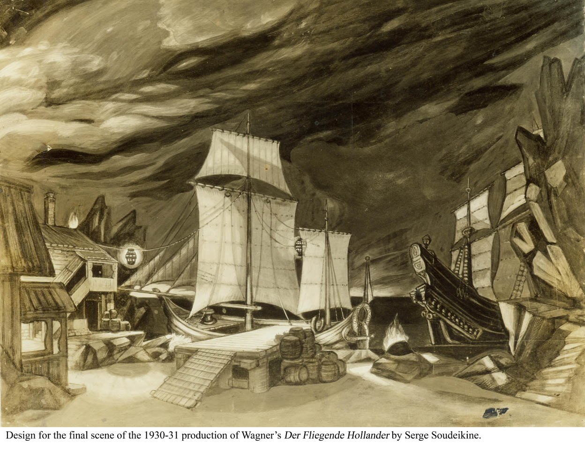
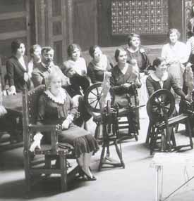
New production
Der Fliegende Holländer {25}
Metropolitan Opera House; 11/1/1930
Debuts: Ivar Andresen, Hans Clemens
Review |
[Met Performance] CID:106070
Faust {380}
Metropolitan Opera House; 11/1/1930
|
[Met Performance] CID:106080
Italian Night Grand Operatic Concert /
Cavalleria Rusticana {279}
Metropolitan Opera House; 11/2/1930
|
[Met Performance] CID:106090
Manon {93}
Metropolitan Opera House; 11/3/1930
|
[Met Performance] CID:106100
La Fanciulla del West {36}
American Academy of Music, Philadelphia, Pennsylvania; 11/4/1930
|
[Met Performance] CID:106110
Il Trovatore {175}
Metropolitan Opera House; 11/5/1930
Review |
[Met Performance] CID:106120
Tristan und Isolde {194}
Metropolitan Opera House; 11/6/1930
Review |
[Met Performance] CID:106130
Don Giovanni {80}
Metropolitan Opera House; 11/7/1930
Review |
[Met Performance] CID:106140
Tosca {222}
Metropolitan Opera House; 11/7/1930
Review |
[Met Performance] CID:106150
La Traviata {170}
Metropolitan Opera House; 11/8/1930
|
[Met Performance] CID:106160
Lohengrin {375}
Metropolitan Opera House; 11/8/1930
|
[Met Concert/Gala] CID:106170
Verdi - Puccini Program
Metropolitan Opera House; 11/9/1930
|
[Met Performance] CID:106180
Der Fliegende Holländer {26}
Metropolitan Opera House; 11/10/1930
|
[Met Performance] CID:106190
Mignon {50}
Brooklyn Academy of Music, New York, Brooklyn; 11/11/1930
|
[Met Performance] CID:106200
Die Walküre {246}
American Academy of Music, Philadelphia, Pennsylvania; 11/11/1930
|
[Met Performance] CID:106210
Roméo et Juliette {158}
Metropolitan Opera House; 11/12/1930
|
[Met Performance] CID:106220
La Fanciulla del West {37}
Metropolitan Opera House; 11/13/1930
|
[Met Performance] CID:106230
Norma {29}
Metropolitan Opera House; 11/14/1930
|
[Met Performance] CID:106240
L'Elisir d'Amore {47}
Metropolitan Opera House; 11/15/1930
|
[Met Performance] CID:106250
Il Trovatore {176}
Metropolitan Opera House; 11/15/1930
Debuts: Claudio Frigerio, Faina Petrova |
[Met Concert/Gala] CID:106260
Program of Italian, French and Spanish Music
Metropolitan Opera House; 11/16/1930
|
[Met Performance] CID:106270
Don Giovanni {81}
Metropolitan Opera House; 11/17/1930
Review |
[Met Performance] CID:106280
Hänsel und Gretel {118}
Pagliacci {291}
American Academy of Music, Philadelphia, Pennsylvania; 11/18/1930
|
[Met Performance] CID:106290
Der Fliegende Holländer {27}
Metropolitan Opera House; 11/19/1930
|
[Met Performance] CID:106300
Manon {94}
Metropolitan Opera House; 11/20/1930
|
[Met Performance] CID:106310
La Forza del Destino {35}
Metropolitan Opera House; 11/21/1930
Debut: Olga Didur
Review |
[Met Performance] CID:106320
Tristan und Isolde {195}
Metropolitan Opera House; 11/21/1930
|
[Met Performance] CID:106330
La Fanciulla del West {38}
Metropolitan Opera House; 11/22/1930
|
[Met Performance] CID:106340
Madama Butterfly {214}
Metropolitan Opera House; 11/22/1930
|
[Met Concert/Gala] CID:106350
Special Sunday Night Concert
Metropolitan Opera House; 11/23/1930
|
[Met Performance] CID:106360
Die Meistersinger von Nürnberg {189}
Metropolitan Opera House; 11/24/1930
|
[Met Performance] CID:106370
Tosca {223}
Horace Bushnell Memorial Hall, Hartford, Connecticut; 11/25/1930
|
[Met Performance] CID:106380
Andrea Chénier {52}
American Academy of Music, Philadelphia, Pennsylvania; 11/25/1930
|
[Met Performance] CID:106390
La Bohème {275}
Metropolitan Opera House; 11/26/1930
|
[Met Performance] CID:106400
Cavalleria Rusticana {280}
Pagliacci {292}
Metropolitan Opera House; 11/27/1930
Debut: Myrna Sharlow |
[Met Performance] CID:106410
L'Africaine {59}
Metropolitan Opera House; 11/27/1930
|
[Met Performance] CID:106420
Faust {381}
Metropolitan Opera House; 11/28/1930
|
[Met Performance] CID:106430
United States Premiere
The Fair at Sorochintzy {1}
Metropolitan Opera House; 11/29/1930
Reviews |
[Met Performance] CID:106440
Die Walküre {247}
Metropolitan Opera House; 11/29/1930
|
[Met Concert/Gala] CID:106450
Special Holiday Program
Metropolitan Opera House; 11/30/1930
|
[Met Performance] CID:106460
La Forza del Destino {36}
Metropolitan Opera House; 12/1/1930
|
[Met Performance] CID:106470
Der Fliegende Holländer {28}
American Academy of Music, Philadelphia, Pennsylvania; 12/2/1930
|
[Met Performance] CID:106480
La Bohème {276}
County Center, White Plains, New York; 12/2/1930
|
[Met Performance] CID:106490
Tristan und Isolde {196}
Metropolitan Opera House; 12/3/1930
|
[Met Performance] CID:106500
Il Trovatore {177}
Metropolitan Opera House; 12/4/1930
|
[Met Performance] CID:106510
La Gioconda {117}
Metropolitan Opera House; 12/5/1930
|
[Met Performance] CID:106520
Lohengrin {376}
Metropolitan Opera House; 12/5/1930
|
[Met Performance] CID:106530
Aida {358}
Metropolitan Opera House; 12/6/1930
|
[Met Performance] CID:106550
Der Fliegende Holländer {29}
Brooklyn Academy of Music, New York, Brooklyn; 12/6/1930
|
[Met Performance] CID:106540
La Bohème {277}
Metropolitan Opera House; 12/6/1930
|
[Met Concert/Gala] CID:106560
Gala Program
Metropolitan Opera House; 12/7/1930
|
[Met Performance] CID:106570
Cavalleria Rusticana {281}
Pagliacci {293}
Metropolitan Opera House; 12/8/1930
|
[Met Performance] CID:106580
Don Giovanni {82}
American Academy of Music, Philadelphia, Pennsylvania; 12/9/1930
|
[Met Performance] CID:106590
United States Premiere (Le Preziose Ridicole)
Le Preziose Ridicole {1}
The Fair at Sorochintzy {2}
Metropolitan Opera House; 12/10/1930
Reviews |
[Met Performance] CID:106600
Siegfried {149}
Metropolitan Opera House; 12/11/1930
|
[Met Performance] CID:106610
Roméo et Juliette {159}
Metropolitan Opera House; 12/12/1930
|
[Met Performance] CID:106620
Carmen {320}
Metropolitan Opera House; 12/12/1930
|
[Met Performance] CID:106630
Norma {30}
Metropolitan Opera House; 12/13/1930
|
[Met Performance] CID:106640
Die Meistersinger von Nürnberg {190}
Metropolitan Opera House; 12/13/1930
|
[Met Concert/Gala] CID:106650
Gala Russian Program
Metropolitan Opera House; 12/14/1930
|
[Met Performance] CID:106660
L'Elisir d'Amore {48}
Metropolitan Opera House; 12/15/1930
|
[Met Performance] CID:106670
La Bohème {278}
American Academy of Music, Philadelphia, Pennsylvania; 12/16/1930
|
[Met Performance] CID:106680
Tosca {224}
County Center, White Plains, New York; 12/16/1930
|
[Met Performance] CID:106690
L'Africaine {60}
Metropolitan Opera House; 12/17/1930
|
[Met Performance] CID:106700
Der Fliegende Holländer {30}
Metropolitan Opera House; 12/18/1930
|
[Met Performance] CID:106710
Le Preziose Ridicole {2}
The Fair at Sorochintzy {3}
Metropolitan Opera House; 12/19/1930
|
[Met Performance] CID:106720
Siegfried {150}
Metropolitan Opera House; 12/20/1930
|
[Met Performance] CID:106730
La Gioconda {118}
Metropolitan Opera House; 12/20/1930
|
[Met Concert/Gala] CID:106740
Special Concert
Metropolitan Opera House; 12/21/1930
|
[Met Performance] CID:106750
Luisa Miller {6}
Metropolitan Opera House; 12/22/1930
|
[Met Performance] CID:106760
Carmen {321}
Brooklyn Academy of Music, New York, Brooklyn; 12/23/1930
|
[Met Performance] CID:106770
Lohengrin {377}
Metropolitan Opera House; 12/24/1930
|
[Met Performance] CID:106780
Mignon {51}
Metropolitan Opera House; 12/25/1930
|
[Met Performance] CID:106790
Hänsel und Gretel {119}
Pagliacci {294}
Metropolitan Opera House; 12/26/1930
|
[Met Performance] CID:106800
Der Fliegende Holländer {31}
Metropolitan Opera House; 12/26/1930
|
[Met Performance] CID:106810
Don Giovanni {83}
Metropolitan Opera House; 12/27/1930
|
[Met Performance] CID:106820
Tosca {225}
Metropolitan Opera House; 12/27/1930
|
[Met Concert/Gala] CID:106830
Special Holiday Concert
Metropolitan Opera House; 12/28/1930
|
[Met Performance] CID:106840
Le Preziose Ridicole {3}
The Fair at Sorochintzy {4}
Metropolitan Opera House; 12/29/1930
|
[Met Performance] CID:106850
La Bohème {279}
Metropolitan Opera House; 12/30/1930
|
[Met Performance] CID:106860
Lohengrin {378}
Brooklyn Academy of Music, New York, Brooklyn; 12/30/1930
|
[Met Performance] CID:106870
Norma {31}
Metropolitan Opera House; 12/31/1930
|